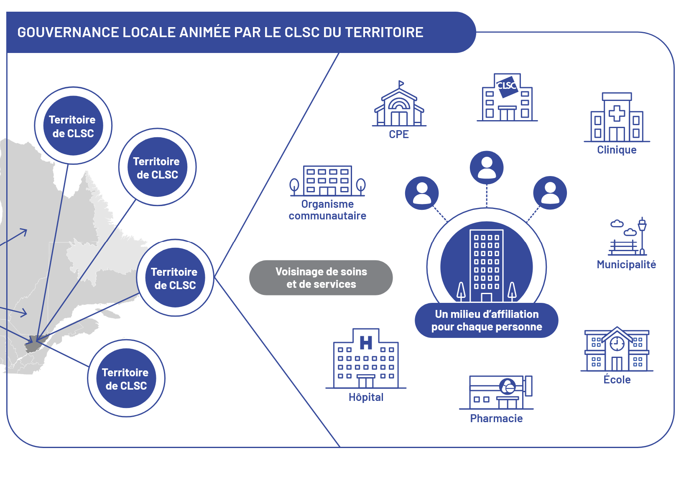
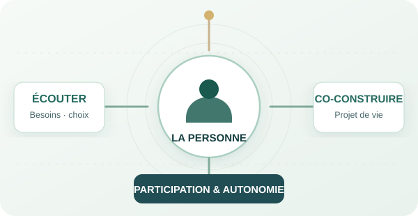

people aged 60 and over worldwide in 2050, compared with 1 billion in 2020; those aged 80 and over would reach 426 million (OMS, 2025).

Éric Bernier
PhD candidate in public health (2nd year) · Jurist · Specialized educator
From people to policies: an integrated reading of health systems
From supporting individuals to research, management and law, by way of public health, my career path has led me to explore the different scales of the health system: from individual realities to organizations, up to public policy and governance.
My interest lies particularly in the gaps between needs, institutional responses and their concrete effects, as well as in the ways knowledge can inform health practices and decisions.
Explore my world
Drag to exploreClick a door to enterSwipe through the doorsTap to enter
6 doors
Drag to look left or right, or move the mouse towards the edges. Click a door or a section to enter.
Drag the doors or choose a number. Tap a door or a section to enter.
Click a door to enter
The career path at a glance
- 2016–2024Director of holiday stays for adults with disabilities (France)
- 2020–2023Specialized educator, Adapei 35 (France)
- 2024Master’s degree · Management of medico-social facilities — UBO, FranceDU · Entrepreneurship and management — IAE de Brest, FranceInternship · EHPAD management — Fondation Ildys, Landerneau, France
- 2024–2025Medico-social project officer — ANAP, France
- 2025Master · Public, health and social law — Paris-Panthéon-Assas, France
- Since 2025PhD · Public health — ESPUM and CRCHUM, Montréal, Canada
The career path in figures
- years working with people with disabilities
- 10
- adapted holiday stays directed
- 100+
- people supported, with their families, during holidays and respite periods
- ≈1 000
- graduate (second-cycle) degrees
- 4
- teaching assistantships at UdeM
- 4
- special jury mentions
- 3
- best poster award · GFSP 2026
- 1
- students represented
- 3 000
- experts in the medico-social network
- 30
- participants in webinars and communities of practice
- 2 000+
- students surveyed on their mental health
- 1 000
- obtained for the PhD
- 130 000 $
Notes on the indicators
- Disability, holidays and respite: estimated order of magnitude of the people supported, with their families, in adapted holidays and respite periods. This indicator is not a verified individual count.
- Teaching: Université de Montréal.
- Best poster: GFSP, 2026, doctoral and postdoctoral level.
- Medico-social network: contribution to the facilitation of the expert network.
- Webinars and communities of practice: facilitation and moderation; cumulative audience of managers and health professionals.
- Mental health: design and management of a regional survey of students.
01.1Thesis projectDoctoral project
Thesis in progressTopic under development, subject to major changes
Working title
Organizing the intersectoral primary care and services response to the needs of older adults living at home with a loss of autonomy and co-occurring social needs: configurations, mobilizable resources and mobilized networks
Co-supervision: Dr. Nadia Sourial (PhD) · Dr. Géraldine Layani (MD, MSc)École de santé publique de l’Université de Montréal (ESPUM)PhD in public health, health systems, organizations and policies option (SOPS) · 2nd yearChaire de recherche GSK en gestion optimale des maladies chroniquesFonds de recherche du Québec, doctoral scholarship (B2)
Research question
How is the mobilizable and actually mobilized intersectoral response in primary care and services organized, according to territories and configurations of needs, for older adults living at home with a loss of autonomy and co-occurring social needs?
The challenges of ageing
Population ageing is one of the major demographic transformations of the century. It is not limited to an increase in the number of older people: it raises the question of the years lived with limitations, the help they call for and the collective organization that makes it possible to respond.
The World Health Organization (OMS) defines healthy ageing through the capacities that enable people to do what matters to them, in their environment. The risk of limitations increases with age, but dependence is neither uniform nor inevitable; the possibilities for prevention, recovery and compensation must be considered (OMS, 2025).
A global and Canadian demographic transition
of the Canadian population is aged 65 and over as of July 1, 2026; those aged 85 and over number 991,172 (Statistique Canada, 2026c).
people aged 85 and over in Canada in 2075, depending on the scenario, compared with 951,833 in 2025 (Statistique Canada, 2026b).
Between 2015 and 2050, the share of people aged 60 and over would rise from 12% to 22% of the world population (OMS, 2025). In Canada, the share of people aged 65 and over, 19.5% in 2025, would reach 23.5% to 31.4% in 2075 under the high- and low-growth scenarios, and 27.2% under the medium-growth scenario (Statistique Canada, 2026b). The fastest growth concerns people aged 85 and over, among whom limitations in daily activities and needs for assistance are concentrated.
In Québec: faster and more advanced ageing
of the Québec population is aged 65 and over as of July 1, 2026, compared with 20.0% in Canada; those aged 85 and over number 237,171 (Statistique Canada, 2026c).
The number of people aged 85 and over, 209,463 in 2021 and 228,440 in 2025, would double by 2039 (425,109) and reach 576,448 in 2071 (ISQ, 2026d).
of people aged 65 and over projected in 2051, or 2,410,650 people and an increase of 40%, compared with 20.2% in 2021 (ISQ, 2025a) and 21.7% in 2025 (ISQ, 2026a).
According to the ISQ, most of the increase in people aged 85 and over would be achieved by 2051 (560,725); their share among older adults would rise from 11.6% in 2025 to 23.3% in 2051 (ISQ, 2026d). In 2023, health-adjusted life expectancy (EVAS) at age 65 reached 16.0 years in Québec, for a life expectancy of 20.9 years: nearly five years after age 65 are therefore lived, on average, with health problems or limitations (Statistique Canada, 2026a).
An international framework: ageing in good health
The United Nations General Assembly proclaimed the Decade of Healthy Ageing 2021-2030. Its four areas of action concern ageism, age-friendly communities, integrated person-centred care and primary health services, and quality long-term care (Assemblée générale des Nations Unies, 2020).
For services, the OMS translates this framework into the integrated care for older people approach (ICOPE). Its 2017 guidelines set out 13 recommendations for community-level interventions to manage declines in intrinsic capacity (OMS, 2017); its 2019 guide proposes, in primary care, screening, a person-centred assessment and a personalized care plan, with pathways devoted to social support and caregivers (OMS, 2019). The Global Age-friendly Cities guide, developed from focus groups held in 33 cities, examines eight domains of urban life; an age-friendly city optimizes opportunities for health, participation and security (OMS, 2007). The MADA approach is its Québec counterpart (Garon et al., 2014; step 9). In Japan, the community-based integrated care system brings together housing, support for daily living, long-term care and medical care within a territory of about a 30-minute walk, and relies on reviving local mutual aid (Tsutsui, 2014).
Capacity, environment and life course
The OMS distinguishes intrinsic capacity, that is, the composite of a person’s physical and mental capacities, from functional ability, which results from the interaction between that intrinsic capacity and the environment in which the person lives (OMS, 2017). The ecological model of aging had already formulated this idea: behaviour and well-being arise from the encounter between the person’s competence and the press that their environment exerts on them; the more competence declines, the more the environment weighs on what the person can accomplish (Lawton and Nahemow, 1973).
The person’s physical and mental capacities (OMS, 2017).
Housing, family and friends, services and the community, which facilitate or hinder (Lawton and Nahemow, 1973).
What the person can be and do, given both (OMS, 2017).
The disparities observed in advanced old age are not due to age alone. The cumulative advantage and disadvantage perspective explains the heterogeneity and inequalities among older adults by the accumulation, over the life course, of unequal exposures and resources (Dannefer, 2003). Cumulative inequality theory specifies the mechanisms: social systems generate inequality; disadvantage increases exposure to risks, and advantage, to opportunities; trajectories depend on accumulated risks, available resources and human agency (Ferraro and Shippee, 2009).
In Québec, these issues take a particular form: a strong preference for the home and a public organization of home support (step 2).
Ageing at home in Québec
Staying at home is the option most older adults wish for. This wish must be compared with what home support can actually offer.
Ageing at home: a strong expectation, unequal possibilities
In Québec: the wish to stay at home and perceived possibilities
83 %
Identify with the statement “At home for life”
63 %
Consider this prospect realistic
| Dimension | Québec result | What the indicator describes |
|---|---|---|
| Preferred place of care · 2025 | 90% would prefer to be cared for at home rather than in hospital as an older adult. | A stated preference, distinct from a lasting choice of living environment. Same Segma Recherche poll as the next line (Coalition pour la dignité des aînés, 2025). |
| Perceived possibilities · 2025 | 81% consider access to home services difficult. | Segma Recherche survey: 841 Québec respondents from a web panel, data collected from December 2024 to January 2025 (Coalition pour la dignité des aînés, 2025). |
| Choice in the event of loss of autonomy · 2026 | 58% would first choose home services in the event of a significant loss of autonomy (64% among people aged 55 and over); 17% a private seniors’ residence with services; 6% a CHSLD. | Léger survey for the Association pour la santé publique du Québec: 1,033 adults, May 2026 (Léger, 2026). |
| Reported use · 2023–2024 | About 12% of people aged 65 and over received home care or services in the previous twelve months; 20% among those aged 75 and over. | Survey data excluding help provided by family and friends. This use of services does not measure whether needs are met (ISQ, 2026g). |
These data do not make it possible to calculate an individual gap between the wish and the help received: the questions, populations and periods differ. They do show, however, why the choice of home must be studied together with its material and organizational conditions.
Of respondents aged 50 and over wish to remain in their home or in a smaller private dwelling.
Consider their home fully adapted to ageing.
2025 national survey of the National Institute on Ageing (NIA), published in 2026: 70% favour their current home and 11% a smaller private dwelling. These preferences do not describe only older adults with a loss of autonomy (Qureshi et al., 2026).
What home support offers today
SAD users in 2024-2025, for 37.2 million hours of services; 17,883 people were waiting for a first service (MSSS, 2025a).
of public spending on support for autonomy devoted to home care in Québec in 2023, compared with 62% for residential care (CSBE, 2024).
of SAD hours fall under home help, for a budget of $2,553M in 2024-2025 (Gouvernement du Québec, 2026a).
These volumes describe a substantial public offer, but one below estimated needs. According to the OCDE, the share of long-term care spending devoted to home care reaches 54.8% in Norway, compared with 20.4% in Canada and 17.3% on average across 26 countries (OCDE, 2025). The CSBE estimated this share at 22% in Québec in 2019-2020 (CSBE, 2023, tome 1). The methods differ: the 38% figure for 2023 is a cost to government drawn from a projection model, and the proportions should not be compared from one source to another without taking their definitions into account (CSBE, 2024).
The COVID-19 pandemic: what the first wave revealed
of the 5,643 COVID-19-related deaths reported in Québec from February 23 to July 11, 2020 occurred in CHSLDs, and 17% in RPAs (Gosselin et al., 2020).
of the Québec population lives in a CHSLD, where 64.3% of the 5,718 deaths of the first wave, or 3,675, were recorded (CSBE, 2022a).
older persons were waiting for a permanent place in a CHSLD at the start of the pandemic, 43% of whom were in transitional accommodation (CSBE, 2022b).
According to the Protecteur du citoyen, 3,901 of the 5,658 deaths recorded as of June 28, 2020, or 69%, involved people living in a CHSLD or a long-term care unit; the report attributes the crisis in particular to “hospital-centric” preparedness that left CHSLDs in a blind spot, and makes 27 recommendations (Protecteur du citoyen, 2021). The coroner’s public inquiry covers 53 deaths that occurred in residential care settings and traces, among other things, the history of the 47 residents of the Herron CHSLD who died between March 12 and May 1, 2020 (Kamel, 2022). Totals differ depending on the source and the cut-off date used.
These tolls strengthened the priority given to the home. Between 2015-2016 and 2019-2020, the costs of home support per person aged 75 and over rose by 4.9% per year, compared with 1.5% for residential care in public and private subsidized CHSLDs (CSBE, 2022b). The shift nonetheless raises a question of meaning: for older adults themselves, aging in place means being able to choose where and how to age, and home extends beyond housing to encompass attachment, security and identity (Wiles et al., 2012).
Staying at home requires being able to carry out daily activities there: step 3 specifies what loss of autonomy covers.
Loss of autonomy
Ageing does not, in itself, entail a loss of autonomy. When it occurs, it must be defined precisely: which activities become difficult, what help is needed and what remains to be compensated.
From disability to loss of autonomy
In 2022, 40.4% of Canadians aged 65 and over reported at least one disability limiting their activities. This indicator from the Canadian Survey on Disability does not directly measure dependence in daily activities: it should not be presented as the proportion of older adults requiring human assistance (Statistique Canada, 2023a).
Two dimensions of autonomy to distinguish
In the geriatric literature, the term “autonomy” can cover both self-determination and independence in daily activities. To clarify the object of this research, two dimensions are distinguished (Gobillot et al., 2025).
It concerns the performance of activities of daily living, the difficulties encountered and the assistance required. Basic and instrumental activities make it possible to assess it (Katz et al., 1963 ; Lawton et Brody, 1969).
It concerns the ability to self-determine and to make decisions about one’s life. In care, consent must be free and informed. Capacity to consent requires understanding the information, appreciating its significance for oneself, reasoning about the options and communicating a choice (Appelbaum, 2007).
A need for help with washing, moving about or preparing meals does not, on its own, warrant concluding that a person is unable to consent. Decisional assessment concerns a given decision, in its context, with adapted information and communication (Appelbaum, 2007).
The choice of the functional dimension in this research
The thesis studies the organization of the intersectoral response to difficulties in daily life and to co-occurring social needs. This dimension makes it possible to relate the observed limitations, the needs for help, the compensation resources and the mobilizable services. This choice is consistent with work on the assessment of autonomy and with the consideration of the environment in daily functioning (Hébert et al., 2001 ; OMS, 2015).
Decisional autonomy remains essential to consent, to respect for preferences and to participation in decisions. Here it constitutes a cross-cutting requirement of support; the research does not aim to measure individual capacity to consent (Appelbaum, 2007 ; Gobillot et al., 2025).
Definition of loss of autonomy adopted
The activities and functions to be described
AVQ and AIVQ describe the activities concerned. Mobility, mental functions and communication also shed light on how they are carried out: loss of autonomy is therefore not limited to physical capacities. The SMAF distinguishes these five domains; other instruments do not all cover them in the same way (Katz et al., 1963 ; Lawton et Brody, 1969 ; Hébert et al., 2001).
| Domain | Elements to document |
|---|---|
| Basic activities of daily living (AVQ / ADL) | Personal care: washing, dressing, using the toilet, transferring, maintaining continence and eating. |
| Instrumental activities of daily living (AIVQ / IADL) | Life in the community: using the telephone, shopping, preparing meals, maintaining the home, doing the laundry, using transportation, managing medications and finances. |
| Mobility | Getting up, walking, moving about indoors and outdoors or climbing stairs, with the necessary aids. |
| Mental functions | Memory, orientation, comprehension, judgment and behaviour; specify their consequences on the performance of activities. |
| Communication | Seeing, hearing and expressing oneself, taking means of compensation into account. |
The level of help distinguishes an activity performed alone but with difficulty, a need for prompting or supervision, partial help and complete help. These situations do not describe a mandatory sequence. The criteria specific to each instrument and each activity must be retained (Hébert et al., 2001).
Functioning situated in an environment
The International Classification of Functioning, Disability and Health (CIF) distinguishes capacity in a standardized environment from performance in the usual living environment. Functioning and participation restrictions also result from the interaction with this environment: housing, transportation, assistive devices, relatives and services can facilitate activities or hinder them (OMS, 2002).
A distinction must therefore be made between the limitation, the help needed, the help actually received and what remains uncompensated. Available help can make it possible to carry out an activity despite a persistent limitation; its presence does not prove that the need has disappeared. The SMAF also takes into account the stability of compensation resources (Hébert et al., 2001).
The assessment must also consider the activities the person wishes to continue and the meaning they have for them. The qualitative study by Gobillot and colleagues calls for complementing autonomy scores with life plans and the views of the persons and their family. The trajectories it describes do not constitute an inevitable progression from human assistance to loss of decision-making freedom or to residential care (Gobillot et al., 2025).
The risk of having or worsening functional impairments (MSSS, 2001).
Difficulties in activities or a need for human assistance.
A situation also shaped by the environment and the means of compensation.
These dimensions overlap without being equivalent. Frailty can exist without dependency in daily activities, and the same diagnosis does not determine the same need for help in every person (Tchalla et al., 2022). Disability, frailty and comorbidity are distinct entities, which may be causally linked (Fried et al., 2004).
Further reading · Tools for measuring autonomy
Measurement: from concept to standardized assessment
Assessment distinguishes basic activities of daily living (AVQ; in English, activities of daily living, ADL) and instrumental activities of daily living (AIVQ; instrumental activities of daily living, IADL). It specifies the difficult activities, the human assistance needed and the help actually received (Katz et al., 1963; Lawton and Brody, 1969).
- Instrumental activitiesComplex tasks drawing in particular on memory, attention and executive functions.
- Detecting a changeDifficulties may precede dependence for personal care.
- Appropriate assessmentCheck the causes, remaining capacities and compensation resources.
Instrumental difficulties may appear before dependence in basic activities, particularly when cognitive functions begin to decline. This sequence is a frequent marker, without constituting a universal trajectory or a cognitive diagnosis (Jekel et al., 2015).
| Tool | Domain assessed | Scoring and interpretation | References |
|---|---|---|---|
| Katz Index | 6 functions: bathing, dressing, toileting, transferring, continence, feeding. | Current version: 0 = dependence in all six functions; 6 = independence. Some adaptations count dependencies in the opposite direction: always specify the version. | (Katz et al., 1963; Shirley Ryan AbilityLab, 2016; Polesel et al., 2024; Balicki et al., 2025) |
| Barthel Index | 10 personal care and mobility items, including walking, transfers and stairs. | 0–100 version: score increasing with independence; 100 = independence for the items assessed. A score of 80 is not equivalent to complete independence. A version out of 20 also exists. | (Mahoney and Barthel, 1965; Shirley Ryan AbilityLab, 2025; Kowalewska et al., 2026) |
| Lawton-Brody Scale | 8 domains: telephone, shopping, meals, housekeeping, laundry, transportation, medications and finances. | Eight-domain version: 0–8, score increasing with independence. Abbreviated versions and scoring methods must be identified. | (Lawton and Brody, 1969; Polesel et al., 2024; Karismaz et al., 2024) |
| Functional Autonomy Measurement System (SMAF) | 29 functions: personal care, mobility, communication, mental functions and domestic activities. | Reference scoring: 0 to −3 per item; total 0 to −87. Presentations in absolute values exist: retain the direction of scoring and the version. | (Hébert et al., 1988; Desrosiers et al., 1995; Bimou et al., 2021; Tchalla et al., 2022) |
| Autonomie gérontologie groupes iso-ressources (AGGIR) grid | Autonomie gérontologie groupes iso-ressources: French administrative assessment, with 10 discriminating and 7 illustrative activities. | 6 iso-resource groups (GIR): GIR 1 = most severe loss of autonomy; GIR 6 = autonomy for essential activities. Used in particular for the personalized autonomy allowance in France. | (Direction de l’information légale et administrative, 2026) |
These tools assess functioning; co-occurring social needs must be documented separately.
Reading a score: difficulty, help required and compensation
Identify the activity, the version of the instrument, the respondent and the direction of the score. Domains are not identical from one scale to another.
In the revised version of the SMAF, the −0.5 level added to several items identifies an activity performed without help, but with difficulty (Desrosiers et al., 1995).
The SMAF also considers the available resources and their stability: an incapacity and the residual handicap after compensation must be distinguished (Hébert et al., 1988).
An autonomy score does not replace the assessment of income, housing, food security, mobility and relational support.
Loss of autonomy and the health of older Quebecers in figures
of persons aged 75 and over living at home need help with errands or housework (AIVQ), compared with 5.6% for personal care (AVQ), in 2023-2024 (ISQ, 2026f).
of persons aged 65 and over have at least two chronic diseases in 2024-2025, or 1,093,985 persons; 69.6% among those aged 75 and over (INSPQ, 2026a).
persons aged 65 and over are living with Alzheimer’s disease or another major neurocognitive disorder in 2024-2025; 25.3% of those aged 85 and over (INSPQ, 2026b).
Needs for help at home are primarily instrumental: shopping, home maintenance, meals and finances. These survey data exclude persons living in CHSLDs and therefore underestimate the need for help; the multimorbidity and neurocognitive disorder data are administrative and probably underestimated as well (ISQ, 2026f; INSPQ, 2026a, 2026b). The number of persons with neurocognitive disorders is increasing — 125,245 in 2022-2023 — while the adjusted rate remains stable: this is the effect of population aging (INSPQ, 2026b).
Models that situate disability in the environment
The disablement process describes a main pathway that runs from pathology to impairments, then to functional limitations and disability; risk factors, interventions and exacerbators speed it up or slow it down. Disability is not an attribute of the person in this model: it expresses the gap between their capacities and the demands of their environment (Verbrugge and Jette, 1994).
In Québec, the MDH-PPH makes the disabling situation the result of the interaction between personal factors and environmental factors, which act as facilitators or obstacles; this interaction determines the accomplishment of life habits, from full social participation to a disabling situation (Fougeyrollas et al., 1998). Its revised version adds identity factors, distinguishes three levels of environment, societal, community and personal, and divides life habits into daily activities and social roles (Fougeyrollas, 2010).
Organic systems, capabilities and identity factors (Fougeyrollas, 2010).
Societal, community or personal; they facilitate or hinder (Fougeyrollas, 2010).
Daily activities and social roles, accomplished or not: from social participation to a disabling situation (Fougeyrollas et al., 1998).
Co-occurring social needs: issues that go beyond care
Loss of autonomy is experienced in specific social conditions: housing, income, food, transportation, relationships and support from family and friends. These co-occurring social needs largely determine whether limitations can be compensated.
What a social need refers to
Bradshaw distinguishes four definitions of need: normative, set by an expert against a standard; felt, equated with the person’s want; expressed, when felt need is turned into a demand; comparative, inferred from the characteristics of people who already receive a service. Their intersection forms a taxonomy that makes it possible to approach real need (Bradshaw, 1972).
| Need | What defines it | Examples in this chapter |
|---|---|---|
| Normative | A standard set by an expert or an instrument. | SMAF thresholds, low-income measures, core housing need (steps 3 and 4). |
| Felt | What the person considers necessary. | Help judged insufficient, reported loneliness (4.5 and 4.6). |
| Expressed | Felt need turned into a demand. | Service requests and waiting lists in home support and for CHSLDs (steps 2 and 7). |
| Comparative | The gap with similar people who receive a service. | Variations between regions and between territories (step 9). |
Alderwick and Gottlieb distinguish three levels: social determinants shape health, for better or for worse; social risk factors refer to specific adverse social conditions, such as isolation or housing instability; social needs also depend on the person’s preferences and priorities, which gives them a role in choosing the responses (Alderwick and Gottlieb, 2019).
A need is said to be unmet when the help judged necessary is not received, or is received only in part. Statistics Canada describes as unmet the home care need of a person who believes they needed it in the past 12 months without receiving it, and as partially met that of a person who received only part of it; in 2015-2016, the needs of 35.4% of Canadians aged 18 and over who needed home care, or about 433,000 people, were not fully met (Gilmour, 2018). In Québec, a qualitative study conducted with 11 triads, each bringing together an older adult receiving home support, a family member and a practitioner, shows that met needs mainly concern daily activities, whereas unmet needs relate to leisure, community life and relationships (Turcotte et al., 2015). Measured with the SMAF, 35% of older adults in the PRISMA area had at least one unmet need at the end of the study, compared with 67% in the comparison area (Dubuc et al., 2011).
Everyday situations that cut across several sectors
- BathingPersonal care and daily help.
- EatingShopping, meals and financial resources.
- Staying at homeAdapted housing, transportation and social ties.
- Linking responsesOrganizations from several sectors.
A limitation in bathing or getting around may coexist with unsuitable housing, insufficient food, isolation, financial difficulties or a lack of transportation. The need is then not only to receive care: care, daily help, housing, mobility and support from family and friends must be made compatible. A response available in one sector may remain unusable if another link is missing (OMS, 2015; Spiers et al., 2022).
In Québec, the Commissaire à la santé et au bien-être (CSBE) estimates for 2023 a response rate of 10.7% to the needs for long-term home care services, that is, 5.2% for domestic help and 23.4% for personal assistance. This modelled estimate relates the volumes of services provided to the volumes required; it does not mean that only 10.7% of older adults receive a service. It highlights a gap between needs and resources that cannot be resolved merely by affirming a choice to age at home (CSBE, 2024).
Loss of autonomy and social needs: links already documented
The literature already establishes relationships between loss of autonomy, social resources and the help received. A distinction must be made between a social condition, such as living alone, a need for support, social frailty and an unmet need: these objects are not interchangeable. Their configuration also matters, as do the person’s priorities and the possibilities for compensation (Cappelli et al., 2020; Saari et al., 2024). Among 1,604 people over 60 followed for six years, loneliness is associated with an increased risk of decline in ADLs (adjusted relative risk of 1.59) (Perissinotto et al., 2012), and with worsening frailty (odds ratio of 1.41) (Kojima et al., 2022). Low socioeconomic position is associated with more frequent frailty in 98 of the 108 studies on income and 8 of the 9 on housing (Hanlon et al., 2024). Food-insecure older adults have the ADL limitations of people fourteen years older (Gundersen & Ziliak, 2015). Other studies describe the interweaving of daily, financial, food-related and relational difficulties among frail older adults (Wright et al., 2024).
In Québec, the 2021 Census makes it possible to observe this coexistence at the scale of cities. In the 28 census metropolitan areas and census agglomerations located entirely in Québec, 31.9% of persons aged 65 and over living in private households live alone; the proportion reaches 38.5% among those who report a disability, or 99,535 persons (Statistique Canada, 2023b). Statistics Canada identifies this disability through difficulties seeing, hearing, walking, climbing stairs, using one’s hands, learning, remembering or concentrating, or through another health problem, lasting six months or more: it is therefore not a temporary illness. Nor, however, is it a measure of loss of autonomy: a difficulty indicates neither the help needed nor the help received, and living alone is a social condition, not a need. These data exclude rural areas and the Québec part of Ottawa-Gatineau, or about one quarter of older Quebecers living at home, and their disability rate is not comparable with that of the Canadian Survey on Disability.
| Studies and population | What the literature contributes | What this does not allow us to conclude |
|---|---|---|
| Review of 65 publications on the decline in autonomy | Social resources, quality of relationships and participation are associated with changes in AVQ and AIVQ (Cappelli et al., 2020). | Observational associations do not demonstrate that a particular social intervention prevents decline. |
| Meta-analysis on social frailty | For disability, the pooled hazard ratio is 1.43, with a 95% confidence interval of 1.20 to 1.69, in the analysis of two longitudinal studies (Goto et al., 2024). | Social frailty instruments differ; this indicator does not describe all social needs and does not measure a causal effect. |
| Ontario · 162,523 adults assessed at home in 2017–2018 | Six groups combine medical, cognitive, psychosocial and daily-activity needs, including caregiver distress and social frailty. Depending on the group, 51% to 81% have needs in at least four health dimensions (Saari et al., 2024). | The population includes adults of various ages already assessed for services. These groups constitute neither prevalences among all older adults nor configurations directly transferable to Québec. |
| Canada · 4,083 persons aged 85 and over living at home | A latent class analysis identifies four profiles of health and help received. In 2019–2020, 6.5% report unmet home care needs, or about 46,000 persons (Islam and Gilmour, 2025). | The survey describes a specific population and period; it does not cover all social needs or organizational collaborations. |
| Québec · VoisiNuAge, 554 persons living in the community | Perceived proximity of resources and level of disability are associated with social participation; the relationships vary by sex and level of disability (Levasseur et al., 2011). | Perceived proximity does not demonstrate actual access. The cross-sectional study does not allow a causal effect to be attributed to neighbourhood resources. |
Which configurations can be characterized in a way that is useful for examining response functions, territorial resources and collaborations?
A statistical association, a clinical classification and a situational account will not provide the same level of information for establishing the configurations.
Socially differentiated resources and possibilities for compensation
Access to paid help and to home adaptations.
Presence, availability and exhaustion of family and friends.
Transportation, eligibility, costs and capacity of services.
Ties, information and the possibility of asking for help.
The possibility of compensating for limitations also depends on income, housing, transportation, support from family and friends and actual access to services. A systematic review associates unmet needs for help with low income, living alone and greater limitations in daily activities; eligibility criteria and linguistic or cultural barriers also contribute to access difficulties (Spiers et al., 2022).
A meta-analysis of American longitudinal data identifies, among the determinants of nursing home admission, limitations in AVQ, cognitive impairment and support resources. Having a spouse and being a homeowner are associated with later admission in the survival analyses. These associations suggest socially differentiated possibilities for compensation; they allow neither a conclusion of a causal effect of housing tenure nor a direct transposition of the estimates to Québec (Gaugler et al., 2007).
These findings call for distinguishing inequalities in needs, inequalities in access to help and differences in the use of residential care. A lower institutionalization rate does not necessarily mean a better outcome: it may also reflect restricted access or remaining at home with insufficient help.
The wish to stay at home must thus be weighed against the means actually accessible. The study focuses on this tension between preferences, limitations and possibilities for compensation; it does not presume that remaining at home is always the desirable or safe option for every person.
The social needs of older Quebecers in figures
of older Quebecers not in an economic family, mostly persons living alone, have low income in 2024 according to the after-tax low-income measure, compared with 16.3% of all persons aged 65 and over; 7.2% according to the Market Basket Measure (Statistique Canada, 2026d).
of older adults living alone and renting spend 30% or more of their income on housing in 2021; 21.5% are in core housing need (Statistique Canada, 2022a).
of persons aged 85 and over living in private households live alone in 2021; 30.9% among all persons aged 65 and over (Statistique Canada, 2022b).
of persons aged 65 and over often lack companionship in 2025 and 30.4% sometimes; 17.0% of persons living alone, all ages, often lack it (Camirand, 2026).
of persons aged 75 and over need someone else’s help to use digital technology in 2025; 23% have no Internet connection at home (Académie de la transformation numérique, 2026).
of persons aged 65 and over living at home experienced mistreatment in the past 12 months in 2025, compared with about 6% in 2019 (ISQ, 2026e).
Mobility decreases with age: in 2022, the last year published by age, 44% of persons aged 85-89 and 18% of those aged 90 and over held a driver’s licence (ISQ, 2024a). Between home and residential care, the registry lists 1,594 RPAs and 188,033 units in October 2026 (MSSS, 2026e). The choice of measure matters: low income among older adults living alone ranges from 7.2% to 37.5% depending on whether the Market Basket Measure or the relative measure is used, and the 2025 loneliness data are not comparable with those of the General Social Survey.
When loss of autonomy and social needs accumulate
The preceding figures describe older adults as a whole. Those that follow concern the same persons: persons who have a disability, and the social needs that accompany it. They concern persons aged 65 and over and Québec where the source allows; age and territory are specified for each. They come mainly from the 2022 Canadian Survey on Disability (ECI), processed for Québec by the OPHQ.
of people aged 65 and over with a disability in Québec need help with activities of daily living, or 257,100 people; 53% of people aged 15 and over who receive help would like more help (OPHQ, 2026a).
of persons aged 65 and over with a disability in Canada have an unmet need for help with daily activities in 2022; 25.6% for assistive devices (McDiarmid, 2025).
Among persons aged 15 and over with a disability in Québec in 2022, the need for help is more frequent among those who live alone (OPHQ, 2026a).
of persons aged 65 and over not in an economic family have low income in 2024 in Canada, depending on whether or not they have a disability (after-tax low-income measure; Statistique Canada, 2026f).
of persons aged 65 and over with a disability in Québec have unmet needs for assistive devices, and 33.2% when the disability is very severe (OPHQ, 2026e).
of persons with a disability who are homebound in Canada feel lonely, compared with 61% of others; 79% of those experiencing food insecurity, compared with 57%; 18.5% of persons aged 85 and over with a disability are homebound (Uppal and Simionescu, 2026).
Barriers add up: 66.4% of persons aged 65 and over with a disability in Québec encounter barriers in public spaces (OPHQ, 2026f), and 51% of older adults with an unmet transportation need feel isolated, compared with 22% of others (ÉLCV; Hosford et al., 2025). The accumulation is not uniform, however. Among persons aged 65 and over in Québec, according to the 2022 ECI, disability does not significantly change the proportion of persons living alone (30.6% versus 29.4%), living in a household below the after-tax low-income cut-off (5.0% versus 3.4%) or in core housing need (6.3% versus 4.3%): at this age, these situations stem primarily from age and the life course (OPHQ, 2026b, 2026c, 2026d). The accumulation appears mainly in the need for help, help judged insufficient, barriers, being homebound and loneliness. The sharper gaps observed elsewhere are due to the sources and measures: the 2021 Census (4.3) counts persons living alone in all private households and identifies disability differently, and Statistics Canada’s low-income measure, which is relative, classifies far more older adults as low-income than the low-income cut-off used by the ECI (4.5).
Intersectorality: why health alone is not enough
If living conditions determine the possibility of staying at home, the response cannot fall to the health network alone. It requires collaboration with the sectors that act on these conditions.
The social determinants of health
The OMS Commission on Social Determinants of Health establishes that the burden of disease stems primarily from the conditions in which people are born, grow, live, work and age. From this it derives three recommendations: improve daily living conditions, tackle the inequitable distribution of power, money and resources, and measure the problem to assess action (Commission des déterminants sociaux de la santé, 2008).
The Dahlgren and Whitehead model represents these influences in layers: individual factors, lifestyles, social and community networks, living and working conditions — including housing and health services — and then general socioeconomic, cultural and environmental conditions. Health services are only one determinant among others; the model is descriptive and does not represent causal mechanisms (Dahlgren and Whitehead, 1991/2007, 2021). The Solar and Irwin framework distinguishes structural and intermediary determinants and considers the health system itself as a determinant, notably through access and the intersectoral action it can initiate (Solar and Irwin, 2010).
- Socioeconomic conditionsIncome, social position, public policies.
- Living conditionsHousing, food, transportation, environment.
- Social networksFamily and friends, neighbourhood, participation.
- ServicesHealth, social services and home support.
Defining intersectoral action
Intersectoral action refers to a recognized relationship between part of the health sector and part of another sector, formed to take action on an issue and achieve health outcomes that are more effective, efficient or sustainable than those the health sector could achieve alone (ASPC, 2007; Solar and Irwin, 2010). The Health in All Policies approach extends it to the public policies of all sectors, which must systematically take into account their effects on health and equity (OMS, 2014).
In Québec, the Politique gouvernementale de prévention en santé places intersectoral action at the heart of its approach and defines sectors as the major fields of activity of the government, parapublic and private partners, the municipal sphere and civil society; among other things, it aimed to increase by 18% the number of older adults receiving home support services (MSSS, 2016). The Loi sur la santé publique provides that the minister be consulted during the drafting of laws and regulations that could have a significant impact on the health of the population (Loi sur la santé publique, s. 54). The Programme national de santé publique 2015-2025 describes strengthening intersectoral collaborations as an unavoidable challenge (MSSS, 2015).
CLSC, home support, hospital and specialized services.
Family medicine groups, clinics, pharmacies.
Public bodies outside the network, paratransit, income security.
Community organizations, EÉSAD, volunteering.
Urban planning, recreation, MADA approach.
Social and community housing, home adaptation.
Intersectorality, coordination and integration
Intersectorality is defined by the nature of the actors involved: organizations with distinct mandates, funding and logics. Coordination and integration are instead defined by the intensity of the link. Leutz distinguishes linkage, suited to mild or moderate needs, coordination, which relies on designated structures and roles such as case management, and full integration, which pools resources, records and teams and is suitable only for a small subgroup of people (Leutz, 1999).
| Notion | What defines it | Key references |
|---|---|---|
| Intersectorality | Collaboration between distinct sectors, whatever the degree of linkage. | (ASPC, 2007; OMS, 2014) |
| Coordination | Formal mechanisms that link systems that remain separate: referral, case management, service plan. | (Leutz, 1999; Hébert et al., 2003) |
| Integration | A coherent set of methods at the funding, administrative, organizational, service delivery and clinical levels. | (Kodner and Spreeuwenberg, 2002; Valentijn et al., 2013) |
Kodner and Spreeuwenberg define integration as a set of methods and models that create connectivity, alignment and collaboration between the cure and care sectors (Kodner & Spreeuwenberg, 2002). Valentijn and colleagues distinguish clinical, professional, organizational and system integration (Valentijn et al., 2013). An intersectoral response can therefore be located at any degree of this continuum. In Québec, the arrangements evaluated mainly involve coordination within the health and social services sector; links with the municipal, community and housing sectors remain poorly documented (Stewart et al., 2023).
In Québec: from Castonguay-Nepveu to the 2026 primary care policy
The idea of an intersectoral response is not new in Québec: it accompanied the creation of the CLSCs and returns with each major reform. What changes over time is the scale to which it is entrusted — the local centre, the local network, the regional institution, and then once again the CLSC territory.
- 1966-1972ReportCastonguay-Nepveu Commission
It distinguishes sectoral policies from intersectoral policies, which “consider development as a whole”, and makes the rights to work, health, education, social services, housing and income security the objectives of social development. It proposes local health centres that integrate health units, school health, municipal health services and part of the social service (Commission d’enquête sur la santé et le bien-être social, 1970, vol. IV, t. IV, para. 1813; 1971, vol. III, t. I, paras. 515-516).
- 1971ActLoi sur les services de santé et les services sociaux
It creates the CLSCs, sites of preventive services and of health and social action that receive or visit people and, as needed, refer them to the institutions best able to help them; this definition remains, in modified form, in the consolidated text of the Act (L.Q. 1971, c. 48, art. 1; RLRQ, c. S-5, art. 1 g; Lesemann, 1979).
- 1988ReportRochon Commission
It concludes that intersectoral action is now a necessity and that each ministry, body and municipality must specify its contribution (Commission d’enquête sur les services de santé et les services sociaux, 1988, pp. 446 and 482).
- 1991ActLSSSS reform
It recognizes community organizations and their autonomy in defining their orientations (L.Q. 1991, c. 42, art. 334-335).
- 1992PolicyPolitique de la santé et du bien-être
It makes the harmonization of public policies a strategy and calls for an intersectoral approach for older persons: housing, transportation, income security (MSSS, 1992, p. 121).
- 2001ActLoi sur la santé publique and community action policy
The Act makes the minister the government’s adviser on public health and requires that the minister be consulted on laws and regulations that could have a significant impact on health (ss. 53-55); the policy sets common guidelines for all ministries (Gouvernement du Québec, 2001).
- 2003-2005Structural reformActs 25 and 83: local networks and population-based responsibility
The CSSSs must mobilize partners from the other sectors in their territory and conclude agreements with them (L.Q. 2003, c. 21; L.Q. 2005, c. 32, art. 99.2-99.8).
- 2008Program or strategyProgramme national de santé publique, update
Intersectoral action is linked to the population-based responsibility of the CSSSs, which are called upon to influence local policies (MSSS, 2008, p. 68).
- 2012PolicyVieillir et vivre ensemble
First policy on aging: it invites stakeholders to intersectoral work and rolls out the MADA approach (Ministère de la Famille et des Aînés et MSSS, 2012, p. 44).
- 2015Structural reformAct 10
According to the CSBE, the reform appears to have weakened collaboration with intersectoral partners and reduced the community dimension of the CLSCs (CSBE, 2023, vol. 3, p. 69).
- 2016PolicyPolitique gouvernementale de prévention en santé
Intersectoral action is placed at the heart of the approach, with targets shared by several ministries (MSSS, 2016).
- 2023Structural reformAct 15: Loi sur la gouvernance du système de santé et de services sociaux
Santé Québec must network partners, including those from other sectors, and produce a public mobilization plan and report (RLRQ, c. G-1.021, ss. 409-414).
- 2023-2024ReportCSBE, Bien vieillir chez soi
No body brought together ministries, municipalities and organizations; the CSBE recommends a government policy on maintaining autonomy and concerted planning with municipalities (CSBE, 2023, vol. 1, p. 18; CSBE, 2024, pp. 216 and 226).
- 2025Program or strategyStratégie nationale de prévention and PNSP 2025-2035
Intersectoral collaboration becomes a guiding principle, with multilevel governance inspired by local networks; the PNSP provides for mobilizing intersectoral partners, notably for the health of older adults (MSSS, 2026h, p. 54; MSSS, 2025c, p. 37).
- January 2026PolicyMieux chez soi
Home support requires concerted intersectoral action, and the CLSC is confirmed as the main point of entry (Gouvernement du Québec, 2026a, pp. 24 and 26).
- March 2026PolicyPrimary care policy and orientations on the CLSC
The CLSC territory becomes the unit of local governance, and the CLSC plays the role of intersectoral leader within it (MSSS, 2026a, 2026g).
No act yet specifically governs home support. Two private members’ bills on maintaining the autonomy of older adults, with identical content, provided for intersectoral coordination mechanisms and made the CLSC the main point of entry; they did not go beyond the introduction stage (Assemblée nationale du Québec, 2024, 2026). The report of the Castonguay-Nepveu Commission, published in seven volumes from 1967 to 1972, was consulted in the version digitized by the Bibliothèque de l’Assemblée nationale.
The 2026 primary care policy: the CLSC territory as the locus of intersectorality
The first government policy on primary care and services, the March 2026 policy seeks primary care rooted in communities, as the integrating hub of the system. It makes population-based responsibility a principle that rests on collaboration among all organizations concerned with the health of people and communities, and it establishes local governance at the scale of the 166 CLSC territories, bringing together a diversity of partners (MSSS, 2026a, pp. 1-2).

The five axes of the policy
Attach each person to a CLSC territory and to an affiliation setting; act on determinants with local partners; support intersectoral strategies (target 1.4.4).
Recognize the knowledge of individuals and caregivers; involve communities in the co-construction of care and services.
Establish local governance at the scale of CLSC territories; develop in-depth knowledge of the territory and co-construct continuums with local partners.
Stabilize the workforce; allocate integrated and dedicated funding at the local level; provide financial support for collaborative practices.
Make use of data, assess performance at each level and strengthen research and innovation in primary care.
The policy designates as intersectoral partners the actors from sectors other than health and social services that have complementary levers: municipal bodies, community organizations, educational settings, police and judicial settings, universities and research institutes, the private sector and the world of work. It aims for a lasting alliance between these sectors and the network (MSSS, 2026a, target 1.4.4).
The four roles of the CLSC
- NavigatorCommon point of entry: welcome, assess and direct each person to the right resource.
- CoordinatorOrchestrate the local community services of the territory and ensure an integrated and continuous response.
- Intersectoral leaderMonitor the needs of the population and represent them in decision-making bodies.
- Co-facilitatorCatalyze collaboration among the partners of the territory, within shared governance.
The ministerial orientations specify that the CLSC does not direct its partners: it facilitates territorial governance based on subsidiarity, population-based responsibility, strong territorial anchoring and organizational flexibility (MSSS, 2026g). Local governance can rely on existing structures, such as intersectoral tables (MSSS, 2026a, p. 41).
Governing networks of organizations
When autonomous organizations cooperate, network governance can be shared among the participants, or entrusted to a lead organization or to a network administrative organization. The most effective mode depends on trust among participants, their number, goal consensus and the need for network-level competencies; each mode involves trade-offs between efficiency and inclusiveness, internal and external legitimacy, and flexibility and stability (Provan and Kenis, 2008).
| Mode | Who coordinates | Favourable conditions |
|---|---|---|
| Shared | The participants themselves. | Few participants, high and widely distributed trust, strong goal consensus. |
| Lead organization | One of the participants, which takes on coordination. | More centralized trust, moderate number of participants, lower consensus. |
| Administrative organization | An entity created to govern the network. | Many participants, high need for network-specific competencies. |
The effectiveness of a public service network is assessed at three levels, the community, the network and the participating organization, whose criteria do not always coincide (Provan and Milward, 2001). Collaborative governance depends on starting conditions, such as a prehistory of conflict or cooperation, incentives and power and resource asymmetries, and then on leadership, institutional design and a process made up of dialogue, trust and small wins (Ansell and Gash, 2008). Contandriopoulos and colleagues define integration as the organization of a lasting coherence between values, governance and a clinical system, and distinguish five dimensions: integration of care, of the clinical team, functional, normative and systemic integration (Contandriopoulos et al., 2001).
In Québec, from the 1970s to 2001, the State and community organizations co-constructed part of health and social services policy, notably around the PSOC, created in 1973 (Jetté, 2008). Network analysis, both a tool and a paradigm, makes it possible to describe these interorganizational structures in public health (Luke and Harris, 2007).
Terms used in what follows
The following steps use a few terms in a specific sense.
| Term | Meaning adopted | Key references |
|---|---|---|
| Primary care | Essential health care and social services, equitably accessible, delivered in the community (service points, living environments, home) and often the point of entry into the system; they range from health promotion to follow-up and rely on a diversity of local organizations. The expression, specific to Québec, is not to be confused with primary care in the sense defined by first contact, person-focused continuity, comprehensiveness and coordination. In the table of the six sectors (5.2), “primary care” refers more narrowly to local medical and pharmaceutical services. | (Starfield et al., 2005; MSSS, 2026a, p. 9) |
| Intersectoral response | All the actions through which organizations from distinct sectors contribute, together or successively, to meeting the needs of the same person; it can be situated at any degree of the continuum from linkage to integration (5.3). | (ASPC, 2007; Leutz, 1999) |
| Response functions | What the response must accomplish: identify, refer, provide access to resources, coordinate and ensure continuity. | Step 8 (8.5) |
| Mobilizable resource | A resource present in the territory and geographically accessible (9.1 and 10.3). | (Guagliardo, 2004; Levesque et al., 2013) |
| Mobilized resource | A resource actually linked to other organizations for these configurations. | (Provan and Kenis, 2008) |
| Territory | The CLSC territory, the unit of local governance adopted by the 2026 primary care policy (5.5). | (MSSS, 2026a, 2026g) |
It remains to be seen what such a response can change: step 6 reviews the documented effects.
What an intersectoral response can change
When care, home adaptation and social support are designed together, favourable results are documented on daily difficulties, decline in autonomy, hospital use and admissions to institutions. Home adaptation reduces the rate of falls by 19%, and home-based exercise by 32% (Gillespie et al., 2012). According to one estimate, a 1% increase in home-delivered meals would have prevented the institutionalization of 1,722 Americans with light care needs (Thomas & Mor, 2013). A pilot trial, however, showed no difference at six months between two delivery modes (Thomas et al., 2023).
fewer difficulties in AVQ at five months with CAPABLE, which combines care and home modification (Szanton et al., 2019).
relative risk of nursing home admission with multifactorial community-based interventions, in 89 trials (Beswick et al., 2008).
cases of decline in autonomy per 1,000 persons in the fourth year with PRISMA, in Québec (Hébert et al., 2010).
of NSA stays with SIPA in Montréal, at unchanged total cost (Béland et al., 2006).
What coordinated interventions offer hope for
| Approach | Documented finding | Relevance to the topic |
|---|---|---|
| Care and home modification | In the Community Aging in Place—Advancing Better Living for Elders trial, a program combining care and home modification (CAPABLE), the score for difficulties in AVQ is 30% lower at five months; the difference for AIVQ is not significant (Szanton et al., 2019). | Acting on the person and their environment can mitigate certain limitations. |
| Multifactorial community-based interventions | Meta-analysis of 89 trials: relative risk of nursing home admission of 0.87; 95% confidence interval: 0.83–0.90 (Beswick et al., 2008). | A combined benefit is possible; the specific effect of intersectorality is not isolated. |
| Coordination of services in Québec | The Programme de recherche sur l’intégration des services pour le maintien de l’autonomie (PRISMA) study reports less decline in autonomy and fewer unmet needs when implementation is more advanced (Hébert et al., 2010). | A relevant organizational model, evaluated by a quasi-experimental study. |
The Cochrane review on case management for frail older adults does not demonstrate a definite reduction in nursing home admissions at twelve months: the estimated relative risk is 0.73, but its 95% confidence interval ranges from 0.53 to 1.01 and the level of certainty is low. Increased coordination alone is therefore not enough to guarantee prolonged living at home (Sadler et al., 2023).
A network meta-analysis of 129 studies highlights the value of individualized plans followed by tailored actions, regular reviews and medication optimization. However, most comparisons rest on evidence of low or very low certainty, and some combinations could be unfavourable. The scientific issue is to specify which responses suit which needs and which contexts, rather than presuming a uniform benefit from any coordination (Crocker et al., 2024).
A systematic review and evidence map of 27 studies on home-based services finds that few explicitly examine health-related social needs, and that the description of interventions and their barriers remains uneven (Murad et al., 2024). Another review, covering 12 interorganizational coordination interventions at hospital discharge, reports variable results on readmissions and favourable signals on quality of life and daily activities, without a uniform conclusion on their effectiveness (Linder et al., 2025).
In Québec: assessing autonomy and organizing integrated services
Developed in Sherbrooke by Réjean Hébert, Roger Carrier and André Bilodeau, the SMAF is a Québec reference tool. It links the assessment of disabilities to that of the available human resources and their stability. Its integration into the multiclientele assessment tool (OEMC) and the use of Iso-SMAF profiles in the network are documented by the ministère de la Santé et des Services sociaux (MSSS), notably in the Réseau de services intégrés pour les personnes adultes (RSIPA) solution (Hébert et al., 1988; MSSS, 2020).
7 personal care functions, 6 mobility, 3 communication, 5 mental functions and 8 domestic activities (Hébert et al., 1988).
Groups of autonomy levels and service needs, developed from 1,977 older persons in various living environments (Dubuc et al., 2006).
In the study of 90 participants, the intraclass correlation coefficients for the total score are 0.95 for test-retest and 0.96 between raters (Desrosiers et al., 1995).
The work of Réjean Hébert and his colleagues linked this assessment to the Programme de recherche sur l’intégration des services pour le maintien de l’autonomie (PRISMA). This model shows how to integrate services through cooperation between organizations, without imposing their administrative merger. It rests on six complementary components (Hébert et al., 2003).
Coordination between decision-makers and managers of the organizations.
One point of entry to direct requests.
A professional assesses, organizes the service plan and follows up on adjustments with partners.
Coordinated interventions around the person’s situation.
The SMAF and Iso-SMAF profiles provide a shared language.
Information enabling follow-up between practitioners and organizations.
| Model or tool | Established contribution |
|---|---|
| PRISMA | Integration through interorganizational coordination, case management, common assessment and information sharing (Hébert et al., 2003; Hébert et al., 2010). |
| Services intégrés pour les personnes âgées en perte d’autonomie (SIPA) | Trial of an integrated model of care and services, evaluated by a randomized trial (Béland et al., 2006). |
| Integrated service networks for older persons | The Québec rollout of integrated networks highlights the conditions for cooperation and implementation (Institut national de santé publique du Québec, 2013). |
| SMAF and Iso-SMAF profiles | Assessment of functioning and classification into 14 disability profiles (Hébert et al., 1988; Dubuc et al., 2006). |
Coordinate organizations and services for the maintenance of autonomy.
Seven questions to identify persons who may require a more in-depth assessment (Raîche et al., 2008).
Make the reporting of a scoping review explicit (Tricco et al., 2018).
What the evaluation of PRISMA showed
People aged 75 and over at risk of loss of autonomy, followed for four years in Estrie in three experimental areas and three comparison areas, while the degree of implementation rose from 22% to 79%.
Difference in the annual incidence of decline in autonomy in the fourth year in favour of the experimental group.
When implementation exceeded 70%, the experimental group had 62 fewer cases of loss of autonomy per 1,000 people over the last two years. Satisfaction and empowerment were higher, and emergency visits and hospitalizations fewer than expected. The quasi-experimental study supports the value of coordination; it does not isolate the effect of each component (Hébert et al., 2010). At the end of the study, 35% of people with needs still had at least one unmet need in the experimental area, compared with 67% in the comparison area (Dubuc et al., 2011). Admission to a residential care centre and caregivers’ desire for institutionalization did not differ between areas, and implementation, slower than expected, required extending the study by two years (Hébert et al., 2007).
Case managers perform essential liaison work, but have constrained room for manoeuvre. A Québec institutional ethnography describes tensions between return home and freeing up beds, delegation to partners and quality monitoring, administrative requirements and time devoted to people (Ethier et al., 2024). Managers and practitioners identify insufficient human and financial resources as the main obstacle, and the alignment of the decision-making, management and clinical levels as well as local and regional leadership as levers (Veil & Hébert, 2007). Sharing the clinical record between organizations requires amending certain laws, and no budget is pooled for people with a loss of autonomy (Demers & Lavoie, 2007). The individualized service plan, drafted on average 117 days after the start of case management, serves mainly administrative purposes (Somme et al., 2007).
Iso-SMAF profiles inform the organization of services, but they are not sufficient on their own to establish an individualized plan: the environment, resources and overall situation remain necessary (MSSS, 2020). The integration of health care and social services here provides a foothold for studying links with housing, transportation, municipalities and community organizations.
Details on the validation and the Iso-SMAF profiles
The reliability study of the revised SMAF is based on two assessments two weeks apart: by the same nurse for test-retest reliability, or by two nurses for inter-rater agreement. This property concerns the measurement, not the effectiveness of service coordination (Desrosiers et al., 1995).
The 14 Iso-SMAF profiles were constructed through statistical classification and clinical judgment. Their cross-validation reports a reproducibility kappa coefficient of 0.67; they explain 82% of the variance in nursing care time in the data studied. These properties support planning, without constituting a complete classification of social needs (Dubuc et al., 2006).
These effects matter all the more because loss of autonomy often triggers a chain of risks: step 7 explains why acting early matters.
Why delaying loss of autonomy matters
Loss of autonomy is not only a state: it exposes people to a sequence of events that weaken their ability to remain at home. Delaying this sequence protects the person, their loved ones and the institutions.
A chain of risk: from loss of autonomy to residential care
- Loss of autonomyLimitations in AVQ and AIVQ.
- Risk factorsFalls, isolation, caregiver exhaustion.
- HospitalizationA tipping point for autonomy.
- Residential careA placement often decided in hospital.
Dependency in three or more AVQ is associated with an approximately threefold higher risk of admission to an institution (odds ratio of 3.25, United States data; Gaugler et al., 2007). A systematic review of 36 prospective studies identifies loss of autonomy, cognitive impairment, preventable falls and lack of support in daily life among the strongest predictors of institutionalization (Luppa et al., 2010). Frailty is associated with falls (odds ratio of 1.84; Kojima, 2015) and hospitalization (1.90; Kojima, 2016), as well as admission to residential care (odds ratio of 5.58; Kojima, 2018).
Social factors add to factors related to autonomy. In England, loneliness is associated with entry into a care home (odds ratio of 2.13) after adjustment for isolation, disability and depression, and the fraction of admissions attributable to loneliness is estimated at 19.9% in the population studied (Hanratty et al., 2018). In the United States, social isolation is associated with entry into a long-term care facility over two years (2.01), with no association with hospitalization in the same study (Pomeroy et al., 2023). In Canada, more than one third of older adults hospitalized after a fall are then referred to long-term care (ASPC, 2014).
Hospitalization then constitutes a tipping point. About 30% of older patients leave hospital with a loss of independence in AVQ (Loyd et al., 2020). Among those discharged with a new disability, only 30.1% recover their prior level at twelve months (U.S. data; Boyd et al., 2008). Delirium occurring in hospital is associated with a more than doubled risk of institutionalization (odds ratio of 2.41; Witlox et al., 2010).
Currently, in the face of loss of autonomy and the inability to remain at home, the use of residential care depends on the needs and choices of the individuals, the choices of their caregivers, but also on the capacity of facilities to admit them. From 2005 to 2019, the number of CHSLD places decreased by about 15% (Vérificateur général du Québec, 2022). As of March 31, 2020, 2,352 older adults aged 70 or over with severe loss of autonomy were waiting for a permanent place in long-term residential care, 48% of them for more than six months (Vérificateur général du Québec, 2022).
In 2019-2020, the wait for a residential care place lasted 185 days on average, ranging from 51 to 272 days depending on the territory (CSBE, 2022c). Waiting can also prolong hospital stays: one day at the alternate level of care cost $446 in 2021, about 65% more than residential care in a CHSLD (Vérificateur général du Québec, 2022).
The network is therefore saturated, which intensifies the demand for a “shift to home care.” This demand was also intensified by the first wave of the pandemic, which revealed a chronic staff shortage, a “recurring and long-known problem” (Protecteur du citoyen, 2021, p. 12), which deprived residents of basic care, food and hydration (Kamel, 2022).
Falls, hospitalization and the weakening of the ability to remain at home
Fall-related hospitalizations among people aged 65 and over in 2023–2024, in Canada excluding Quebec (Agence de la santé publique du Canada, 2024).
Estimated prevalence of loss of independence in AVQ associated with acute hospitalization; 95% confidence interval: 24–33% (Loyd et al., 2020).
Falls, particularly when they are repeated or cause serious injury, are associated with an increased risk of admission to an institution in a prospective cohort of community-dwelling older adults. This result supports the importance of prevention and home adaptation, without establishing that every institutional admission results from a fall (Tinetti & Williams, 1997). A fall with serious injury multiplies the adjusted risk of admission within three years by 10.2 (Tinetti & Williams, 1997).
These events can increase the need for care, rehabilitation and daily assistance upon return home. The estimates do not, on their own, distinguish the effect of illness from that of hospitalization (Loyd et al., 2020).
These data describe periods of risk and associations; they do not support the claim that every fall or hospitalization leads to institutionalization. Admission to residential care also depends on prior functioning, support resources, preferences and the available supply (Tinetti & Williams, 1997; Gaugler et al., 2007).
Positioning upstream of hospitalization and residential care
This thesis situates the organization of the intersectoral response before hospitalization and before residential care, for four reasons.
Over a mean follow-up of 3.9 years, 23.1% of prefrail people become robust again, compared with 3.3% of frail people (Kojima et al., 2019). Recovery after a disability is frequent but often short-lived: 81% recover within twelve months, but only 57% maintain their independence for at least six months (Hardy & Gill, 2004).
Outside Quebec, 60% of older adults assessed in hospital enter a facility, compared with 10% of those assessed in the community; 22% of older adults admitted to long-term care had low to moderate needs (ICIS, 2017). About one new resident in nine could have been supported at home (ICIS, 2020).
In Quebec, among home support users with the heaviest Iso-SMAF profiles (10 to 14), 36.4% of those receiving the fewest services enter a CHSLD within the year, compared with 19.6% of those receiving the most (CSBE, 2023, volume 2).
Most older adults wish to remain in their own homes (step 2). Acting before a crisis makes it possible to respect this preference when it remains safe and appropriate.
For the person, caregivers and institutions
For the person, delaying loss of autonomy means preserving activities that matter, limiting disruptions in care pathways and, when this corresponds to their needs and preferences, postponing avoidable institutionalization.
Caregivers, current and future
of Quebecers aged 15 and over are caregivers in 2024-2025, or about 2,076,000 people; 71% help a person aged 65 and over (ISQ, 2026b).
of home care hours in Canada are reportedly provided by unpaid family and friends (MacDonald et al., 2019).
unpaid caregivers available to support older adults in Canada between 2019 and 2050, with the effort per caregiver rising by more than 40% (National Institute on Ageing, 2019).
Help relies heavily on relatives, and its intensity weighs on their health. In 2024-2025, 15% of caregivers aged 65 and over provide 20 hours of help or more per week in Québec, compared with 10% of all caregivers. Among those who provide 20 hours or more, 24.7% rate their mental health as fair or poor, compared with 14.5% of those who provide 1 to 4 (ISQ, 2026c). Québec recognized this role through the Loi visant à reconnaître et à soutenir les personnes proches aidantes, assented to on October 28, 2020, then through a national policy and successive action plans, 2021-2026 and then 2026-2031 (Loi visant à reconnaître et à soutenir les personnes proches aidantes, 2020; MSSS, 2021b, 2021c, 2026i). The 2026-2031 action plan provides them with 15 million additional hours of respite by 2031 (MSSS, 2026i). The projected decline in the number of available caregivers means that the following generations will not be able to assume the same share of help.
Institutions
per person per year for home support or support in a private seniors’ residence, compared with $96,800 in operating costs and $32,100 in capital costs per place in a CHSLD (CSBE, 2024).
people waiting for a place in a CHSLD at the end of 2024-2025, the latest complete annual report; 3,069 in period 12 of 2025-2026. Each person is now counted only once, even if they have several requests (MSSS, 2025b, 2026d).
additional residential care places would be needed by 2040 if nothing changes, an assumption that the CSBE considers unrealistic (CSBE, 2024).
According to the CSBE, spending on support for autonomy would rise from $7.589 billion in 2023 to $16.486 billion in 2040 under a status quo scenario (CSBE, 2024). The CSBE recommends costing the investment needed for the shift toward home; the avoided costs have not yet been estimated. Hospitalized patients waiting for a residential care place also occupy acute care beds: in Canada excluding Quebec, 8% of patients admitted through the emergency department have NSA status in 2024-2025, and 19% of them are waiting for a long-term care bed (ICIS, 2026). The hospital data used exclude Quebec. In Quebec, 15.1% of hospital beds were occupied in 2025-2026 by admitted patients who no longer needed to be there, and 15.5% as of October 17, 2026 (Santé Québec, 2026). In 2021, 37.6% of Quebecers aged 85 and over lived in collective dwellings, including 18.3% in seniors’ residences and 10.1% in nursing care facilities (ISQ, 2024b; Statistique Canada, 2022c).
Quality of life and the quality-adjusted life year
The aim is to preserve activities that matter, mitigate limitations, limit disruptions in care pathways and, when this corresponds to needs and preferences, postpone avoidable institutionalization. Quality of life and the burden on family and friends must be considered alongside outcomes for autonomy, rather than reducing success to the number of institutional admissions alone (OMS, 2015; Spiers et al., 2022).
The quality-adjusted life year (AVAQ in French), or quality-adjusted life year (QALY), combines length of life and health-related quality of life; one year in full health corresponds to one QALY. It is equivalent neither to a year of autonomy nor to a life-year gained. The present design is not an economic evaluation and will not make it possible to quantify QALY gained through the observed networks; this would require an interventional study and appropriate measures (National Institute for Health and Care Excellence, 2013).
Quebec already has policies and services geared toward this goal; step 8 reviews their status.
In Quebec today: home support, policies and findings
Quebec home support relies on the CLSC, the point of entry to services, and on a succession of policies and reforms. The work of the CSBE provides a detailed diagnosis.
Home support and the role of the CLSC
The Mieux chez soi policy groups home support services into four sets: professional care and services (medical, nursing, psychosocial and rehabilitation), home assistance, services for caregivers and technical support. Assistance may be provided directly by the public network, by EÉSAD or through the home autonomy allowance, which has replaced the employment service cheque since January 29, 2026 (Gouvernement du Québec, 2026a).
Needs assessment relies on the multiclientele assessment tool and on the Functional Autonomy Measurement System (step 3). The pivot worker, or case manager, is responsible for continuity: they assess the situation, develop the service plan and coordinate the providers (MSSS, 2001). The CSBE notes, however, that case management is not implemented systematically or uniformly (CSBE, 2023, volume 3). According to the literature cited by the Auditor General, 7 to 10% of people aged 65 and over would require a case manager (Vérificateur général du Québec, 2013). Case managers have limited power in relation to the hospital and external providers: they must arbitrate between freeing up beds and a safe return home, and between administrative requirements and time spent with people (Ethier et al., 2024).
Home support is funded through six programs designed without seeking complementarity: services provided by institutions, the direct allowance, the financial assistance program for domestic help services offered by EÉSAD, the community organizations support program and two tax credits (CSBE, 2024). Between 2015-2016 and 2019-2020, service hours increased by 81% while the number of users rose by 7%; 10% of users receive 71% of interventions, and 59% of home assistance is provided by staff external to the CLSC (CSBE, 2023, volume 1). The multiclientele assessment tool, recommended but not mandatory, is documented in information systems in only 50 to 60% of cases (CSBE, 2023, volume 1).
Home support is already intersectoral in its delivery: in 2024-2025, 36% of SAD hours go through the employment service cheque, which became the home autonomy allowance in 2026, 23% through institutional staff, 23% through staff of RPA, 8% through EÉSAD, 7% through other purchased services and 3% through independent labour (Gouvernement du Québec, 2026a). The SAD budget reaches $2.6 billion in 2025-2026, compared with $1.4 billion in 2019-2020, and according to the government the waiting list has reportedly fallen from more than 20,000 to fewer than 13,000 people in May 2026 (Gouvernement du Québec, 2026b, 2026c).
Successive policies and reforms
- 1979PolicyLes services à domicile
First policy formally entrusting home support to the CLSC (CSBE, 2023, volume 1).
- 1997ProgramSocial economy enterprises and the employment service cheque
Creation of the EÉSAD and the employment service cheque following the 1996 Summit (CSBE, 2023, volume 1).
- February 2001OrientationsOrientations ministérielles sur les services aux personnes âgées en perte d’autonomie
The integration of services into networks becomes the first orientation (MSSS, 2001).
- February 2003PolicyChez soi : le premier choix
The home becomes the first option to consider (MSSS, 2003).
- May 2012PolicyVieillir et vivre ensemble, chez soi, dans sa communauté, au Québec
First policy on aging: enabling older adults to remain in their living environment (Ministère de la Famille et des Aînés & MSSS, 2012).
- April 2015Structural reformAct 10
Merger of each region’s institutions into CISSS and CIUSSS and abolition of the regional agencies (L.Q. 2015, c. 1).
- 2018Action planUn Québec pour tous les âges 2018-2023
Action plan of 85 measures on aging (Ministère de la Famille, 2018).
- October 2020 and 2021Act and policyAct, policy and action plan for caregivers
Recognition and support of caregivers (MSSS, 2021b, 2021c).
- April 2021PolicyDes milieux de vie qui nous ressemblent
Policy on residential and long-term care and services (MSSS, 2021a).
- April 2023OrientationsOrientations en soutien à domicile
Update of the orientations of the 2003 policy (MSSS, 2023).
- December 2023Structural reformBill 15
Creation of Santé Québec, which has brought the institutions together since December 1, 2024 (L.Q. 2023, c. 34).
- May 2024Action planLa fierté de vieillir 2024-2029
Action plan of 102 measures aimed at aging at home for as long as possible (MSSS, 2024).
- January 2026PolicyMieux chez soi
National home support policy, which replaces the 2003 policy and confirms the CLSC as the point of entry (Gouvernement du Québec, 2026a).
- March 2026PolicyPolitique gouvernementale sur les soins et services de première ligne
More accessible, continuous, comprehensive and better coordinated community-based care (MSSS, 2026a).
These policies converge on the home and on proximity. The 2003 policy, however, was never approved by the Conseil des ministres nor given protected funding (CSBE, 2024). The structural reforms of 2015 and 2023 centralized governance: the 2015 mergers advanced administrative integration more than clinical integration (Wankah et al., 2018), and the CSBE considers that the 2015 reform appears to have weakened collaboration with sectoral and intersectoral partners (social economy enterprises, private residences, family medicine groups, community organizations and municipalities) (CSBE, 2023, volume 3). The legacy of PRISMA was generalized in the form of integrated service networks, but their implementation remained partial and poorly measured (Vérificateur général du Québec, 2013; Couturier et al., 2021). No empirical study has yet documented the effects of the 2023 act on home support.
The home at the heart of the transformations of care and services
CLSC, family medicine and home support: overlapping frameworks
- 1971 · Creation of the CLSCA public model combining care, prevention and social services, adapted to local needs (L.Q. 1971, c. 48; Levesque et al., 2012).
- 2002 · Family medicine groups (GMF)An organization of medical and interprofessional follow-up around a registered clientele; the two models coexist (Levesque et al., 2012).
- 2003 · Chez soi : le premier choixThe home support policy places the home among the first intervention options (MSSS, 2003).
- 2023 · Implementation reviewThe Commissaire à la santé et au bien-être identifies governance, planning and implementation obstacles to this policy (CSBE, 2023, volume 3).
This history does not amount to a simple replacement of CLSC by GMF. A responsibility toward the population of a territory and an organization around registered patients coexist. More recent reforms must be situated within this succession of frameworks, then examined through the means and collaborations actually available (Levesque et al., 2012; CSBE, 2023, volume 3).
| Territory and milestone | Transformation | Organizational question |
|---|---|---|
| Quebec · January 29, 2026 | The Mieux chez soi national policy strengthens the organization of home support and the role of the CLSC as the point of entry (Gouvernement du Québec, 2026a). | How can partners and their services be made genuinely accessible? |
| Quebec · March 27, 2026 | The primary care policy aims for a community-based, multidisciplinary response rooted in territories (MSSS, 2026a). | How can care functions be articulated with the social resources of the territory? |
The official division comprises 166 CLSC territories and 93 local service networks. Health and social service boundaries do not necessarily describe all the areas served by partners (Gouvernement du Québec, n.d.).
- ReformsStructures, funding and responsibilities.
Optional box · France–Quebec comparison
In France as in Quebec, autonomy policies bring together the home, community-based care and territorial coordination. They modify organizations’ frameworks for action; their implementation calls for examining the resources and relationships that make it possible to meet needs that cut across several sectors.
| Territory and milestone | Transformation | Organizational question |
|---|---|---|
| France · Home help and care | The reform of home autonomy services brings help and care closer together; territorial resource centres support professionals and offer enhanced support (Ministère du Travail, de la Santé et des Solidarités, 2024; Caisse nationale de solidarité pour l’autonomie, n.d.). | How can complementarities between organizations and their areas of intervention be organized? |
| France · Since 2025 | The departmental public autonomy service aims for cooperation around access to rights, care pathways and prevention (Caisse nationale de solidarité pour l’autonomie, n.d.). | How can shared missions be made operational in different local contexts? |
National, regional and departmental responsibilities are articulated with local organizations. The regional health agency and the department are involved in organizing home help and care.
| Dimension | France | Quebec | References |
|---|---|---|---|
| Steering | National orientations, regional health agencies and departments; implementation by territorial organizations. | Ministerial orientations, organization by Santé Québec and institutions, community-based services including the CLSC. | (Ministère du Travail, de la Santé et des Solidarités, 2024; Santé Québec, 2025) |
| Territorial responsibilities | Departments, health actors and home services exercise complementary responsibilities. | Health and social service territories provide reference units, without covering all the service areas of partners. | (Caisse nationale de solidarité pour l’autonomie, n.d.; Gouvernement du Québec, n.d.) |
| Funding and benefits | Articulation of the funding of care and assistance; the personalized autonomy allowance contributes to the assistance plan. | Public services and partner services, with distinct delivery modes and access conditions. | (Direction de l’information légale et administrative, 2026; Gouvernement du Québec, 2026a) |
| Evaluation | AGGIR grid for administrative classification; needs assessment for the assistance plan. | SMAF, Iso-SMAF profiles and multiclientele assessment to inform the organization of services. | (Direction de l’information légale et administrative, 2026; MSSS, 2020) |
| Integration | Bringing help and care together; departmental cooperation and territorial support. | Administrative integration and coordination mechanisms whose operational effects need to be documented. | (Ministère du Travail, de la Santé et des Solidarités, 2024; Hébert et al., 2003; Santé Québec, 2025) |
| Equity and local variations | National frameworks are articulated with the resources and configurations of territories. | Administrative integration does not guarantee uniform accessibility or an equivalent response to needs. | (Caisse nationale de solidarité pour l’autonomie, n.d.; CSBE, 2024) |
This institutional comparison sheds light on the mechanisms to be studied.
Foresight and professional debate in France
The report Le domicile du futur commence aujourd’hui links housing adaptation, technologies and the organization of interventions (Anap & Matières Grises, 2024). The Assises nationales de l’aide à domicile of November 24, 2026 constitute an announced professional event; their discussions are not evaluation results already available (Planète Grise, 2026).
The findings of the CSBE: aging well at home
Between March 2023 and January 2024, the CSBE published four volumes on home support: Comprendre l’écosystème, Chiffrer la performance, Poser un diagnostic pour agir, and then Une transformation qui s’impose, accompanied by four strategic orientations and sixteen recommendations (CSBE, 2023, volumes 1 to 3; CSBE, 2024).
Services developed in silos, with several points of entry for the person and their loved ones (CSBE, 2023, volume 1).
A modelled response rate of 10.7% to the needs for long-term home care services, that is, 5.2% for domestic help and 23.4% for personal assistance, compared with nearly 100% in CHSLD (CSBE, 2024).
Assessment and adjustment of services to needs that are still imperfect, and uneven case management (CSBE, 2023, volume 3).
Residential care receives 62% of resources for 16% of users; home support, 38% of resources for 84% of users (CSBE, 2024).
An additional 13,700 nurses and 45,600 other workers would be needed by 2040 (CSBE, 2024).
Make maintaining autonomy a priority and rebalance investment in favour of the home (CSBE, 2024).
These findings extend those of oversight bodies. In 2013, the Auditor General noted that home support accounted for only 17.4% of the expenditures of the program for older people with a loss of autonomy, compared with 81.4% for residential care, and that an intervention plan was missing in 52% of the files examined (Vérificateur général du Québec, 2013). In 2022, it found that for every $1 spent on long-term home support, $3 went to residential care, and that 59% of people aged 70 and over with a severe loss of autonomy had less than 5% of their needs met at home (Vérificateur général du Québec, 2022). As early as 2012, the Protecteur du citoyen denounced exclusion criteria, caps on hours and regional disparities in access (Protecteur du citoyen, 2012).
From organizational silos to territorial responses
The Quebec diagnosis describes a fragmented home support ecosystem, in which services have developed in silos. Mandates, eligibility rules, funding envelopes and accountability mechanisms may differ between health, social services, municipalities, housing and community organizations. The person and their loved ones must then deal with several points of entry, even though their difficulties are interdependent (CSBE, 2023, volume 1).
A systemic and intersectoral response requires linking the relevant functions: identification, referral, access to resources, coordination and continuity. It consists neither in adding up organizations in a directory nor in transferring all responsibility to a single worker. The challenge is to understand the organizational conditions under which resources become a response that is actually mobilized (CSBE, 2024).
- Mandates and fundingDistinct rules and resources.
- Territorial concertationTables and communities of practice.
- Mobilizable responseComplementary functions to be made accessible.
- Mobilized responseInteractions to be documented according to situations.
Concerted action already has supports: the Conférence des Tables régionales de concertation des aînés du Québec supports 18 regional tables. Intersectoral communities of practice are also developing, for example a pilot project devoted to technologies for older adults. These initiatives attest to capacities for territorial mobilization; they do not demonstrate identical coverage or operating arrangements everywhere (Conférence des Tables régionales de concertation des aînés du Québec, n.d.; Université TÉLUQ, 2025). In Montréal, the Initiative montréalaise de soutien au développement social local, led by Centraide du Grand Montréal, the Ville de Montréal, the Direction régionale de santé publique and the Coalition montréalaise des Tables de quartier, funds 32 neighbourhood tables (Initiative montréalaise de soutien au développement social local, 2024). In Lanaudière, the CISSS counts among its forums for concerted action home support tables in each of the six regional county municipalities and the Table régionale des aînés de Lanaudière (Boisvert, n.d.). Their continuation depends on the participation and partnership commitment of local actors: intersectoral collaboration is fragile and volatile, and requires strong management support to last (Axelsson & Axelsson, 2006).
These initiatives are part of territorial frameworks and arrangements whose composition, means, sustainability and links with primary care and services remain to be described empirically.
These findings stem in part from known barriers and unevenly distributed resources (step 9).
Barriers to intersectorality and available resources
A resource can exist without being mobilized. The literature documents many barriers that separate the resources present in a territory from the response actually organized around a person.
What hinders the intersectoral response
A systematic review of 40 studies identifies twenty types of barriers to integration between organizations, grouped into six domains; the most frequently reported are differences in professionalization, a lack of leadership and coordination, and the conflict between organizational interests and the collective interest (Auschra, 2018).
| Type of barrier | What is documented | References |
|---|---|---|
| Structural and financial | Vertical and parallel funding, difficulty pooling budgets, lack of resources dedicated to collaboration. | (Mason et al., 2015; Auschra, 2018; ASPC, 2007; Mercier & Bernier, 2023) |
| Governance and mandates | Insufficient leadership, power asymmetries, unclear roles, differing mandates, fragile legitimacy in the face of short political cycles. | (Auschra, 2018; Such et al., 2022; CSBE, 2023, volume 1) |
| Information and confidentiality | Confidentiality rules, inadequate information sharing, non-interoperable information systems. | (Auschra, 2018; Sheppard et al., 2022; Vinot et al., 2018) |
| Professional cultures | Different languages, paradigms and roles between health and social services; four worlds, cure, care, control and community representation, whose integration requires stronger collective cultures and increased communication. | (Kodner & Spreeuwenberg, 2002; Auschra, 2018; Glouberman & Mintzberg, 2001a, 2001b) |
| Human resources | Staff turnover, lack of time, constrained room for manoeuvre of case managers. | (Sheppard et al., 2022; Ethier et al., 2024) |
| Capacity of community organizations | Uneven and rarely reassessed funding, coexistence of mission-based and project-based funding, limited capacities of seniors’ associations. | (Vérificateur général du Québec, 2009; Garon et al., 2014) |
| Access and territories | Eligibility criteria, costs, linguistic and cultural barriers, non-coinciding territorial boundaries. | (Spiers et al., 2022; Auschra, 2018) |
Conversely, intersectoral partnerships work better when they are based on a shared mission, inclusive leadership, ongoing communication, trust built from the outset and continuous evaluation (Corbin et al., 2018). The Mieux chez soi pilot projects identify knowledge of resources, coordination of points of entry and mobilization of partners as conditions for integrated access (Gouvernement du Québec, 2026a).
What network and coordination studies already show
| Studies | Empirical contribution |
|---|---|
| Ryan et al. (2013) · Four case studies | The perceptions of people and providers regarding cooperation at home are compared through network analysis. |
| Smit et al. (2021) · Three Dutch neighbourhoods | A feasibility study uses two network surveys 5.5 months apart to describe contacts between health and social care professionals after joint training. |
| McGill et al. (2024) · Atlantic Canada | A model of community geriatric assessment combines documents, focus groups and interviews. A hypothetical scenario is used to explore the interactions of the system. |
| Brewster (2021) · Ten communities | Interviews with 175 organizational representatives distinguish knowledge of interdependencies, joint action and advocacy for people’s needs. |
| Sheppard et al. (2022) · Toronto | 58 health and social services professionals describe obstacles to partnerships with social housing: staff turnover, roles, confidentiality and complex procedures. They describe a housing manager whose organizational culture questions the role and necessity of partnerships, and staff who poorly grasp the link between housing and health. |
French-language studies reach convergent findings. The qualitative study of a gerontological network with 40 professionals shows that case management can facilitate the interface while remaining limited to delegation, without a general transformation of practices (Ghadi et al., 2011). The analysis of situations in a Lyon network describes coordination that reorganizes itself around needs and runs up against funding rules and rules on the circulation of information (Vinot et al., 2018).
Available resources in figures
community organizations funded by the PSOC in 2024-2025, for $1.109 billion, including $925.7 million in support for the overall mission of 3,015 organizations (Ministère de l’Emploi et de la Solidarité sociale, 2026).
EÉSAD members of the Network in 2024-2025: nearly 110,000 users, nearly 8 million hours and nearly 10,000 home support workers (Réseau de coopération des EÉSAD, 2025).
of the Quebec population lives in a municipality, an MRC or a community engaged in the MADA initiative since 2009; more than 1,000 participants in total (Gouvernement du Québec, 2026d).
requests for help received by 211 Greater Montréal in 2024-2025; 35% come from people aged 60 and over, and housing is the leading need expressed (Centre de référence du Grand Montréal, 2025).
These resources remain constrained. In Montréal, home support organizations received $18.2 million from the PSOC in 2025-2026 for 69 organizations, out of $26.0 million requested (CIUSSS du Centre-Sud-de-l’Île-de-Montréal, 2025). Job vacancies in health care and social assistance in Quebec fell from 38,030 in the second quarter of 2024 to 26,935 in the second quarter of 2026, a rate of 4.6% compared with 3.1% for all industries (Statistique Canada, 2026e). Hours of independent labour in the network fell from 20.2 million in 2023-2024 to 7.4 million in 2024-2025 (MSSS, 2025a). The MADA initiative is measured cumulatively since 2009: it does not indicate how many initiatives remain active.
Resources that vary across territories
in total home support expenditures per capita in 2019-2020, from Outaouais to Gaspésie–Îles-de-la-Madeleine (CSBE, 2023, volume 2).
program expenditures per person with a need in AVQ, from $1,341 in Lanaudière to $3,930 in Gaspésie–Îles-de-la-Madeleine (CSBE, 2023, volume 2).
the correlation between these regional expenditures and the proportion of people with needs: they follow needs only in part (CSBE, 2023, volume 2).
The CSBE also identifies inequalities: overall, older people, women and disadvantaged people have poorer outcomes with respect to remaining at home at the end of life (CSBE, 2023, volume 2). These gaps recall the inverse care law, according to which the availability of good care tends to vary inversely with the needs of the population, especially where care is exposed to market forces (Hart, 1971). In Quebec, the material and social deprivation index, constructed from the census, makes it possible to situate territories on these two dimensions (Pampalon & Raymond, 2000; Pampalon et al., 2009).
Open debates
Social prescribing, which entrusts a link worker with referring primary care patients to community resources, illustrates the gap between the appeal of a practice and its evidence: a systematic review of eight studies and 6,500 participants finds no effect on health-related quality of life, little effect on mental health and no cost-effectiveness analysis, with low or very low certainty (Kiely et al., 2022). Among older adults, it improves social participation and well-being, but rests mainly on studies without a control group (Percival et al., 2022).
| Tension | What is in opposition | Key references |
|---|---|---|
| Autonomy and coordination | The autonomy of community organizations, stemming from the co-construction of policies, and the coordination expected of the public network and the CLSC. | (Jetté, 2008) |
| Centralization and proximity | The concentration of structures, from Bill 10 to Bill 15 (8.2), and the community-based governance targeted by the 2026 policy (5.5). | (CSBE, 2023, volume 3; MSSS, 2026a) |
| Home and choice | Remaining at home as a system objective, and the person’s choice of their living environment. | (Wiles et al., 2012) |
These barriers, resources and debates are documented separately; bringing them together, for the same configurations and the same territories, constitutes the gap addressed in step 10.
What we do not yet know
Configurations of needs, the geography of resources and collaboration networks have each been studied. Bringing them together, for the same configurations and the same territories, remains to be done.
Related mapping studies: achievements and limitations for the project
Spatial research has already related the supply of services to the older population and, in some cases, to social or autonomy-related dimensions.
| Study | Approach and result |
|---|---|
| Quebec · Duc et al. (2026) | Juliette Duc and colleagues map facilities, their services and their capacities, including CHSLD beds, in relation to the population aged 65 and over. Variations are substantial at the local scale; rural areas tend to have fewer services. |
| Ireland · Reddy et al. (2020) | Multicriteria indices compare access to residential care (availability, choice, quality, cost) with indicators of need including residential isolation, disabilities and health. They identify relatively underserved areas. |
| New Zealand · Beere et al. (2019) | Standardized home assessments are analyzed geographically according to loneliness, deprivation and rural or urban character. Spatial concentrations of loneliness are identified. |
| Montréal · Apparicio et al. (2017) | The comparison of 14 accessibility measures, six types of distance and four aggregation methods shows that measurement choices can change the results, particularly at the local level. |
A framework from the World Health Organization (OMS) also proposes mapping community care and support services and the roles needed to deliver them. It is a planning framework, which does not on its own demonstrate the effectiveness of their implementation (OMS, Bureau régional de l’Europe, 2025).
The scientific interest: linking needs, resources and networks
Studies already characterize multidimensional profiles, compare needs and supply spatially and describe cooperation networks. The gap to be examined concerns how they fit together, for configurations combining loss of autonomy and co-occurring social needs, in comparable territories: which response functions are mobilizable, accessible and actually linked by primary care organizations? For the same configuration and the same territory, the correspondence between mobilizable resources and those actually mobilized remains poorly documented (Saari et al., 2024; Duc et al., 2026; Ryan et al., 2013; McGill et al., 2024).
An analytical framework: from potential access to mobilization
Access to services was first conceived as the link between the characteristics of the system, those of the population at risk, utilization and satisfaction (Aday & Andersen, 1974; Andersen, 1995). Penchansky and Thomas define it as the fit between the person and the system, along five dimensions: availability, accessibility, accommodation, affordability and acceptability (Penchansky & Thomas, 1981). Levesque and colleagues extend it from the possibility of recognizing a need through to its satisfaction, and match five dimensions of accessibility with five abilities of people: to perceive, to seek, to reach, to pay and to engage (Levesque et al., 2013). Finally, Guagliardo distinguishes potential access, when a population in need coexists in space and time with a willing and able supply, from realized access, once the barriers have been overcome; only availability and accessibility are spatial in this framework (Guagliardo, 2004).
The scientific problem
Quebec is experiencing accelerated population aging. In 2021, people aged 65 and over accounted for 20.2% of the population. According to the projections of the Institut de la statistique du Québec, this proportion would reach 26.2% in 2051, or 2,410,650 people and an increase of 40% (ISQ, 2025a).
This aging is accompanied by a higher frequency of chronic diseases and an increased risk of loss of autonomy (OMS, 2025). In Quebec, about 55% of people aged 65 and over live with at least two chronic diseases (INSPQ, 2026a). By limiting the performance of daily activities, these conditions increase the demand for care, home support and long-term residential care (OMS, 2025).
Yet the residential care network already shows signs of saturation: at the end of 2023-2024, 3,631 requests remained pending for a place in a residential and long-term care centre (CHSLD) (MSSS, 2024a). The COVID-19 pandemic also highlighted the staff shortage and the shortcomings in the quality of care in these facilities, fuelling a crisis of confidence in them (Protecteur du citoyen, 2021; Kamel, 2022).
In this regard, the population expresses a clear preference for aging at home. In a Léger survey published in 2021, 91% of people aged 55 and over identified with the statement “Chez moi pour la vie” (Réseau de coopération des EÉSAD, 2021).
Home care has thus become one of the cornerstones of Quebec policies on aging. Since the policy Chez soi : le premier choix, the home has moreover become an applicable legal norm by becoming the first option to consider before the institution. The home can therefore no longer be a mere alternative to residential care (MSSS, 2003). The report Vieillir et vivre ensemble also made it a government objective (Ministère de la Famille et des Aînés & MSSS, 2012). The 2021 residential care policy reserves residential care for those who can no longer remain at home despite the services received (MSSS, 2021a), and Mieux chez soi pursues this shift with the centres locaux de services communautaires (CLSC) (Gouvernement du Québec, 2026a).
Despite these prospects, it is clear that home care is not yet a reality for all older adults in the territory. The capacity to age at home does not rest solely on the health system, but is also influenced by economic and social determinants, such as living and housing conditions (MSSS, 2003, p. 12). Inequalities of access and these determinants can generate strong disparities by territory and more complex care situations, in that they require social support in addition to medical support. For example, an older adult who can no longer do their grocery shopping alone thus risks food insecurity if they have neither transportation, nor financial resources, nor support from those around them.
Those around them assume a large share of this support. In Canada, caregivers provide about 75% of the hours of home care received by older adults (MacDonald et al., 2019). In Quebec, 27% of people aged 15 and over were caregivers in 2024-2025, and 71% of them were helping a person aged 65 and over (Camirand, 2026a). Yet this commitment is not without consequences for their health, their employment and their financial situation (Wray, 2024). The 2021 Politique nationale pour les personnes proches aidantes moreover recognizes them as users of the network (MSSS, 2025d), and the 2026-2031 action plan provides them with 15 million additional hours of respite by 2031 (MSSS, 2026i).
When this support is lacking, isolation can add to disability and accentuate loss of autonomy, notably by reducing physical activity (Hawkley et al., 2009; Shankar et al., 2011, 2017). Responding to these needs therefore calls for an intersectoral approach, which links health care, daily assistance, housing, transportation and community support, and mobilizes actors such as CLSCs, family medicine, pharmacies, social economy enterprises in home assistance, private seniors’ residences, community organizations and municipalities.
The March 2026 primary care policy entrusts the CLSC with a role of intersectoral leader in its territory (MSSS, 2026a). On the ground, however, the Commissaire à la santé et au bien-être (CSBE) describes home support that is still fragmented, with multiple points of entry and administrative and economic operations in silos (CSBE, 2023, 2024). This compartmentalization has long been documented. In Quebec, the work of Hébert and his colleagues on the PRISMA model showed that integrating services for older adults requires a single point of entry, case management and common tools, and that gains appear only at a high degree of implementation (Hébert et al., 2003, 2008, 2010). Integration also runs up against logics specific to each sector: distinct funding and mandates, which each protects when resources tighten (Mercier & Bernier, 2023), different professional cultures (Glouberman & Mintzberg, 2001a, 2001b) and modes of regulation that are difficult to reconcile (Contandriopoulos et al., 2001). Leutz (1999) summed it up as follows: one can integrate all services for some people, or some services for everyone, but not all services for everyone, and integration costs before it pays. The role assigned to the renewed CLSC therefore does not foreshadow how it is actually exercised. It remains to be known which resources exist around it, whether they are accessible and whether organizations actually work together.
These three questions are mostly studied separately. Some studies describe the need profiles of older adults (Saari et al., 2024; Islam & Gilmour, 2025), others the distribution and accessibility of resources (Duc et al., 2026; Reddy et al., 2020), and still others the collaborations between organizations (Ryan et al., 2013; McGill et al., 2024). They are rarely linked for the same population and the same territory. For a given configuration of loss of autonomy and social needs, it is therefore not known which resources can respond, which ones are accessible, or how organizations mobilize them together.
The literature on this subject exists, but in separate bodies of work. Some studies characterize multidimensional profiles of autonomy and needs, others compare needs and service supply spatially, and still others describe cooperation networks between organizations (Saari et al., 2024; Duc et al., 2026; Ryan et al., 2013; McGill et al., 2024; Islam & Gilmour, 2025; Reddy et al., 2020).
The scientific problem lies in how they fit together. For configurations combining loss of autonomy and co-occurring social needs, for the same population and the same territory, three questions remain open: which resources can respond, which ones are accessible, and how organizations mobilize them together.
Our thesis proposes to link these three dimensions, in the same order. A mapping study will then describe, for each one, the intersectoral resources that are mobilizable in the territory. A network analysis will finally document the collaborations actually mobilized in contrasting territories of the centre intégré universitaire de santé et de services sociaux (CIUSSS) du Centre-Sud-de-l’Île-de-Montréal. The comparison between what is mobilizable and what is mobilized will identify avenues for better organizing the intersectoral primary care response.
RESEARCH QUESTION
How is the mobilizable and actually mobilized intersectoral response in primary care and services organized, by territory and by configuration of needs, for older adults living at home with a loss of autonomy and co-occurring social needs?
General hypothesis
My hypothesis is that a better understanding of the configurations combining loss of autonomy and co-occurring social needs, in light of the territorial distribution of intersectoral resources and of the networks actually mobilized to respond to them, would make it possible to identify the gaps between possible responses and responses provided, and to derive avenues for improvement.
General objective
Analyze the territorial organization of the intersectoral response in primary care and services to the configurations of loss of autonomy and co-occurring social needs of older adults living at home, in order to identify the gaps between mobilizable and mobilized resources and to identify avenues for improvement.
What we already know
Several studies document the coexistence of a loss of autonomy and social needs among older adults receiving home services. In Québec, Turcotte et al. (2015) show, among people with a loss of autonomy measured with the SMAF, that met needs mainly concern daily activities, whereas unmet needs relate more to interpersonal relationships, leisure, community life and mobility. In Ontario, Saari et al. (2024) describe, among 162,523 adults assessed at home, six groups combining needs related to daily activities, cognitive and psychosocial needs, notably issues of loneliness, informal support and home safety. These studies document needs that go beyond help with carrying out daily activities.
Other contributions specify certain dimensions of this accumulation. Wright et al. (2024) describe the interweaving of daily, financial, food, relational and transportation difficulties among frail older adults. McKittrick et al. (2026) identify seven profiles of home care needs, structured mainly by daily activities and by cognitive and clinical dimensions, then characterized according to social factors. Tingvold et al. (2026) highlight divergences between older adults, family members, professionals and service managers regarding the recognition of relational needs and the responsibilities for meeting them. These studies, however, use different autonomy criteria, populations and social dimensions; frailty does not, on its own, correspond to an established loss of autonomy in AVQ or AIVQ.
Quebec grey literature sources also provide knowledge about needs and how they are taken into account. The CSBE (2023, volume 3) notes, based on its consultations and analyses, that the assessment and adjustment of services to needs are still imperfect, and that assistance is modulated according to the family situation. The Mieux chez soi (Gouvernement du Québec, 2026a) policy recognizes, for people with a disability, the obstacles to socialization and community participation. These institutional findings and orientations complement the empirical studies; they do not constitute a typology of individual configurations combining loss of autonomy and social needs.
What we already know
In Quebec, Juliette Duc and colleagues (2026) analyze the distribution of health facilities, the services offered and the reported capacities, including residential care beds, in relation to the location of the population aged 65 and over and the degree of urbanization. Their results highlight spatial disparities in supply, with generally lower availability in rural areas. Demand is, however, approximated by the older population; it does not correspond to an individual measure of the accumulation of loss of autonomy and co-occurring social needs.
The analyses of the CSBE (2023, Volume 2) already compare the performance of home support across territories, notably its accessibility and its fit with needs. The CSBE (2024, Volume 4) also reports a modelled response rate of 10.7% to the needs for long-term home care services in 2023, that is, 5.2% for domestic help and 23.4% for personal assistance. This rate relates volumes of services to estimated needs; it does not represent the proportion of people who receive help. These studies thus document gaps in response, beyond the mere location of services.
Internationally, Tabatabaei-Jafari et al. (2024) propose a standardized atlas of dementia-related health and social services. Weaver and Roberto (2021) show geographic variations in the receipt of food, transportation and home assistance services. Shin et al. (2026) highlight the fragmentation of research across health, social and environmental resources, as well as geographic, financial and organizational barriers. Quebec and international findings therefore justify examining jointly the distribution of supply, its functions and its access conditions.
What we already know
Québec research has already studied the integration and coordination of services for older adults. The evaluation of PRISMA by Hébert et al. (2010) documents a model based notably on concerted action, case management, joint assessment and information sharing. The model has six components: coordination between decision-makers and managers, the single entry point, case management, the individualized service plan (PSI), a single assessment tool, the SMAF, coupled with the Iso-SMAF profiles, and a computerized clinical record (Hébert et al., 2003). The CSBE (2023, Volume 3) describes operational transition mechanisms between hospital and home, while noting difficulties in linking with primary care medical services, specialized services and the various providers. It also underlines the limits of the available data for measuring certain dimensions of coordination. These findings already inform the organization of responses, without constituting a network analysis differentiated by cumulative configurations of needs.
The Mieux chez soi (Gouvernement du Québec, 2026a) policy confirms the CLSC as the main point of entry and provides for coordination with public, private, social economy and community action providers. It reports that pilot projects conducted in 2024-2025 in six institutions identified five conditions for integrated access, foremost among them detailed knowledge of available resources, coordination of entry points and mobilization of partners. These orientations and lessons learned specify the expected mechanisms; they do not establish, for each configuration in the project, the organizational relationships actually mobilized.
Network analysis provides complementary benchmarks. Brewster et al. (2019) distinguish referrals, information exchanges and other collaborations between health and social organizations serving older adults. Grol et al. (2020) describe, according to the perceptions of frail older adults, networks more closely linked to medical actors and home assistance than to certain social actors. Prusaczyk et al. (2026) analyze the relationships between dementia-related home support organizations in rural areas. Park et al. (2026) study the evolution of an intersectoral network bringing together community organizations and artistic or cultural institutions. These studies do not compare networks according to the specific configurations of accumulated loss of autonomy and social needs selected in the project.
Scientific gap
Despite the existence of studies describing multidimensional profiles of needs, the characterization of the different configurations of older adults living at home with a loss of autonomy and co-occurring social needs remains to be consolidated. The heterogeneity of definitions, instruments and populations studied limits the identification of comparable configurations that articulate loss of autonomy, assistance needs and material and relational social needs, whether met or unmet. This fragmentation of knowledge limits the characterization of substantiated configurations that would make it possible to specify the intersectoral response functions to be examined in primary care and services.
Scientific gap
Knowledge about the territorial distribution of the intersectoral organizational resources mobilizable in primary care and services remains insufficiently integrated to assess their adequacy for the different configurations of loss of autonomy and co-occurring social needs of older adults living at home. It remains to relate, within a single analysis, the distribution of older adults living at home, the socioeconomic characteristics of territories and the intersectoral resources mobilizable to provide the response functions required by each configuration. This articulation is necessary to characterize territorial variations in the distribution, availability, complementarity and accessibility of resources, and to identify potential gaps between the response functions required and those covered by the resources inventoried.
Scientific gap
Knowledge about the organization of the intersectoral networks mobilized in primary care and services remains insufficiently linked to the different configurations of older adults with a loss of autonomy and co-occurring social needs. For a given configuration and a given territory, the correspondence between the mobilizable intersectoral resources and those actually mobilized has yet to be clarified. It is important to characterize the composition of the networks, the structure of relationships and their modes of functioning, in order to document the gaps between mobilizable resources and reported mobilization.
01.2Research areasMain and secondary areas
01.2 · Research areas
Research areas
Six areas linking the research questions to the work and experiences that inform them. Each card opens a specific part of the site.
Main areas
Area 01
Governance and evaluation of health policies
Understanding how knowledge, instruments and public debate shape health decisions.
Area 02
Intersectoral approach in primary care
Studying the intersectoral response to the needs of older adults living at home with a loss of autonomy and co-occurring social needs.
Area 03
Ageing, loss of autonomy and home care policies
Examining the conditions for support adapted to ageing and for the effectiveness of the choice of living environment.
Secondary areas
Area 04
Legal planning, doctrinal analysis and health law
Analyzing how norms and planning organize the offer and make rights effective.
Area 05
Performance, change management and organizational steering
Linking the transformation of the offer, evaluation and the concrete conditions of implementation in organizations.
Area 06
Comparative analysis of health systems
Comparing system configurations, their mechanisms and people’s experiences across contexts.
01.3PublicationsCommunications, theses, tools
01.3 · Publications
Publications and work in progress
Scientific communications, defended theses and manuscripts in progress are presented here with their respective titles, authors and statuses.

SCIENTIFIC LIBRARY
Explore the work by format
Manuscripts, posters, communications and theses: four paths through the scientific work.
- 01Question
- 02Write
- 03Present
- 04Share
Selected collection:Scientific articles
Submitted manuscripts and manuscripts in preparation
Articles submitted or being written, alongside the thesis.
Health systems and primary care
Submitted to BJGP OpenPatient experience and potentially avoidable hospitalisations across OECD countries: exploratory ecological study
Éric Bernier (LL.M, PhD student), Nadia Sourial (PhD), Isabelle Vedel (PhD), Géraldine Layani (MD, M.Sc), Aurélien Algoet (MD), Matthieu Calafiore (MD, PhD)
Avoidable hospitalizationsPatient experiencePrimary care
Epistemology and knowledge transfer
Written · Work on holdEpistemic return in public health governance: The road back from health to science
Bernier, É.
The impact of research is usually conceived in one direction only, from knowledge to policies and practices. The article proposes a public health conceived as a reflexive science of governance: it specifies the conditions under which the consequences observed in the field and the knowledge of the populations concerned may require that categories, indicators and rules be re-examined upstream. The concept is translated into a documentary audit, tested on four institutional chains.
Epistemic returnReflexive governanceResearch impact
Governance and the public sphere
Manuscript in preparationPrise de parole des médecins dans l’espace public québécois lors des débats entourant le projet de loi n° 2 : une analyse qualitative du discours critique
Bernier, É., Aïssi, F., Diene Faye, C., Boukari Abdo, S.
Physicians speaking outPublic debateHealth policy
Health law
Manuscript in preparationVieillir chez soi à l’épreuve du droit : l’effectivité du choix du lieu de vie en droit français et en droit québécois
Bernier, É. · doctrinal article
Health lawAgeing at homeChoice of living environment
Conference posters
Scientific communications3
- June 2026Best poster award · Doctoral and postdoctoral level
Intégration des soins et services de proximité pour soutenir l’autonomie domiciliaire des personnes aînées : une étude qualitative comparative
Bernier, É., Sourial, N., Layani, G. · Groupe francophone en soins primaires (GFSP), Montréal · poster presentation
Care integrationAgeing at homeFrance–Québec - May 2026Poster
Integrating Care and Services to Support Aging at Home: A Comparative Analysis of Institutional, Organizational, and Professional Mechanisms in France and Quebec
Bernier, É., Sourial, N., Layani, G. · CAHSPR, Ottawa
Care integrationAgeing at homeFrance–Québec - April 2026Poster and 180 seconds
Intégration des soins et services de proximité pour soutenir l’autonomie domiciliaire des personnes aînées : une étude qualitative comparative
Bernier, É., Sourial, N., Layani, G. · Réseau québécois de recherche sur le vieillissement (RQRV), Sherbrooke · poster and 180-second science communication
Care integrationAgeing at homeFrance–Québec
Oral presentations
No oral presentations listed at this time.
Theses and dissertation
Theses defended before a jury3
- 2025
Vieillir chez soi : réalités et mise en œuvre du virage domiciliaire. Une étude comparée France / Québec
Master’s in law · Université Paris Panthéon-Assas · supervision: Benoît Apollis
Ageing at homePublic policyComparative law - 2024
La prise en charge des personnes en situation de handicap vieillissantes : comment les établissements d’hébergement pour personnes âgées dépendantes peuvent-ils adapter leurs structures et services à leurs besoins spécifiques ?
Master’s degree in facility management · Université de Bretagne Occidentale · supervision: Michelle-Hentic Giliberto
Disability and ageingAdaptation of facilitiesSupport - 2023
Parcours de vie et autodétermination : l’influence des pratiques éducatives sur le parcours de vie des personnes en situation de handicap en institution d’hébergement
State diploma of specialized educator · Académie de Rennes
Self-determinationEducational practicesLife course
The doctoral project is presented separately in “My thesis”. See my thesis
01.4Research stancePragmatic stance and multidisciplinary perspective
01.4 · Research stance
Research stance
Situated, critical and reflexive research
My research stance concerns the way problems are framed, analytical categories are constructed and knowledge is produced that can be debated and revised. It combines a relational reading of health situations, the examination of institutions and the researcher’s reflexivity.
Situating the perspective, making choices explicit
I see people as singular beings, embedded in relationships, a history and the social, material and living environments on which they depend. Each person may have their own aspirations; the possibilities of realizing them are also shaped by living conditions, available resources and relationships with others. This tension between singularity and interdependence runs through the way I understand health.
My place as a researcher lies within this same world. My background working with people with disabilities, in law, in management and in public health shapes the problems I pay attention to. I accept this position as a starting point to be examined: making my choices visible, welcoming contradiction and letting inquiry shift my categories.
Reflexivity consists in examining how the question asked, the categories adopted, the actors included and the conditions of inquiry shape the knowledge produced. I make these choices, competing interpretations and the limits of conclusions explicit, so that the reasoning can be discussed.
Situated, reasoned and revisable knowledge
I distinguish what inquiry makes it possible to observe, the interpretations proposed and the ends I defend. The robustness of knowledge rests on examinable evidence, explicit argumentation and the possibility of discussing disagreements. Concepts and measures are constructed to study realities whose consequences, for their part, affect lives.
Pragmatism guides the choice of methods according to the question studied.
Pragmatic stance
A stance that combines a positivist reading (measuring, estimating, testing hypotheses) and a constructivist reading (understanding the meaning actors give to their practices). The question determines the method.
Multidisciplinarity
Public health, law, management, political science and social intervention: perspectives that respond to one another to analyze a single system.
Inquiring rather than freezing one’s certainties
Dewey’s pragmatism links inquiry to the problems encountered and to their consequences.
For my research
I favour precise questions, debatable knowledge and revisable conclusions. The usefulness of a result is also judged by what it helps to understand and by its effects in a situation.
Putting my own categories to the test
Foucault questions the processes through which people become objects of knowledge and subjects.
For my research
I question the way I define a need, a population or a complex situation. My categories must be able to be confronted with the experiences they describe and with what they make less visible.
Making room for lived knowledge
Fricker analyzes the injustices that affect the credibility of a person’s word and the resources that make it possible to understand an experience.
For my research
I take seriously the conditions under which a person can tell their story, be heard and contribute to interpretation. Participation implies influence over the questions and the conclusions.
Questioning what classifies, organizes and makes certain lives visible
Institutions make protection, cooperation and access to resources possible. Their rules and categories also distribute possibilities for action. My stance consists in examining these effects concretely, their justifications and the possibilities of discussing them.
Foucault · Power in relationships
Power is exercised in particular over people’s possibilities for action; it cannot be reduced to an order imposed from above.
For my research
In services, I examine access rules, classifications and professional roles: what do they make possible, who can discuss them and what margins of self-determination do they leave?
Fassin · The unequal value of lives
Fassin relates the proclaimed value of life to the unequal treatment of lives.
For my research
I examine the way seemingly ordinary decisions distribute attention, protection, time and resources. An average improvement must also be discussed in light of the people it reaches and of those it leaves at a distance.
Fricker · Justice in the production of knowledge
Inequalities can affect the possibility of being recognized as a knower.
For my research
I am interested in the place of patients, relatives and community actors in defining problems. Working with them requires being able to shape the framework of the discussion and to express disagreement.
Supporting the capacity to act under real conditions
Autonomy takes on meaning in concrete situations, with supportive relationships and possibilities that are actually accessible. This orientation extends my experience in support work: recognizing aspirations, discussing constraints and working on the conditions that make a choice feasible.
Hegel · Recognition and contradictions
For Hegel, self-consciousness develops in relationships with others, shaped by recognition and conflict.
For my research
I consider the tensions between protection and autonomy, and between common rules and singular situations, as objects of inquiry. Understanding an organization requires following its history, its relationships and its transformations.
Sartre · Freedom commits
Sartrean existentialism ties responsibility to the choices through which an existence is built.
For my research
From this I take a requirement to make my choices explicit. In public health research, I confront it with social constraints and available resources, in order to think of a situated responsibility rather than attributing difficulties to individuals alone.
Sen · The real opportunities to choose
The capability approach examines the real freedoms to lead the lives that people value.
For my research
I examine what a person can actually do: access a service, understand a decision, participate and pursue their own aspirations. Available resources and the conditions of their use make it possible to analyze the gaps between formal rights and real possibilities.
Transforming with people, while remaining attentive to consequences
My research aims at knowledge capable of entering into collective deliberation. Recommendations and innovations involve societal choices: who benefits from a change, what burdens it creates and how the people concerned can discuss its effects.
Camus · Revolt and measure
Camus examines a revolt that affirms a common dignity while questioning the limits of action and its justifications.
For my research
I wish to hold together the refusal of unjust situations and attention to the people whom transformation may affect. A desirable end also requires examining the means employed and their consequences.
Dewey · Inquiring with the publics concerned
Dewey links the formation of a public to the shared consequences of activities and to how they are collectively addressed.
For my research
From this I draw an attention to the actors concerned, to deliberation and to feedback from the field to knowledge. Results must be open to discussion, contextualization and revision when their consequences require it.
Ricœur · Solicitude and just institutions
Ricœur links the aim of a fulfilled life, attention to others and the justice of institutions.
For my research
I connect the quality of a supportive relationship to the organizational and political conditions that make it possible. My responsibility concerns both the person encountered and the collective frameworks that my work helps to shed light on.
Philosophical references
These works open questions and foster connections. Their authors defend different positions: I bring them into dialogue to clarify my own responsibility, without presenting them as a unified doctrine. The statements made in the first person express this research orientation.
- Camus, A. (1985). L’Homme révolté. Gallimard. (Œuvre originale publiée en 1951).
- Dewey, J. (1927). The public and its problems. Henry Holt and Company.
- Fassin, D. (2018). La vie : mode d’emploi critique. Seuil.
- Foucault, M. (1982). The subject and power. Critical Inquiry, 8(4), 777–795.
- Fricker, M. (2007). Epistemic injustice: Power and the ethics of knowing. Oxford University Press.
- Hegel, G. W. F. (2018). The phenomenology of spirit (T. Pinkard, Trans.). Cambridge University Press. (Original work published 1807).
- Ricœur, P. (1990). Soi-même comme un autre. Seuil.
- Sartre, J.-P. (1996). L’existentialisme est un humanisme. Gallimard. (Œuvre originale publiée en 1946).
- Sen, A. (1999). Development as freedom. Oxford University Press.
01.5Research methodsAnalyses, tools and methodological references
01.5 · Research methods
Research methods used
From question to observation: each question calls for its own data, method of analysis and interpretation. I choose methods according to what needs to be clarified, drawing on several disciplines.
Building a design, collecting data and choosing an analysis strategy are decisions tied to the research question. The approaches presented below set out their possibilities, requirements and limits.
Mixed methods
Mixed methods combine quantitative and qualitative approaches.
Toolbox
Data analysis
Positron (R)PythonNVivoQGISExcel
Collaboration and facilitation
MiroKlaxoonCanva
Office software
Office 365
Egocentric and sociocentric social network analysis
Social network analysis describes the relationships between actors rather than their attributes alone. The sociocentric approach examines all the ties within a bounded population; the egocentric approach starts from a respondent (ego) and the contacts they name (alters).
- Perry, B. L., Pescosolido, B. A., & Borgatti, S. P. (2018). Egocentric network analysis: Foundations, methods, and models. Cambridge University Press. https://doi.org/10.1017/9781316443255
- Provan, K. G., Veazie, M. A., Staten, L. K., & Teufel-Shone, N. I. (2005). The use of network analysis to strengthen community partnerships. Public Administration Review, 65(5), 603–613. https://doi.org/10.1111/j.1540-6210.2005.00487.x
- Valente, T. W., Palinkas, L. A., Czaja, S., Chu, K.-H., & Brown, C. H. (2015). Social network analysis for program implementation. PLOS ONE, 10(6), Article e0131712. https://doi.org/10.1371/journal.pone.0131712


Mapping and geographic information systems
Mapping and geographic information systems (GIS) link data to their location in order to describe the distribution of services, needs and populations across a territory. Measures of potential accessibility, such as the two-step floating catchment area method (2SFCA), relate the supply of services, demand and the distance between them. I acquired the basics in a MOOC from the Université de Genève.
- Guagliardo, M. F. (2004). Spatial accessibility of primary care: Concepts, methods and challenges. International Journal of Health Geographics, 3, Article 3. https://doi.org/10.1186/1476-072X-3-3
- Luo, W., & Wang, F. (2003). Measures of spatial accessibility to health care in a GIS environment: Synthesis and a case study in the Chicago region. Environment and Planning B: Planning and Design, 30(6), 865–884. https://doi.org/10.1068/b29120
- Ngui, A. N., & Apparicio, P. (2011). Optimizing the two-step floating catchment area method for measuring spatial accessibility to medical clinics in Montreal. BMC Health Services Research, 11, Article 166. https://doi.org/10.1186/1472-6963-11-166


Reproducible programming: R and Python in Positron, and the shell
Reproducible programming consists in carrying out every step of an analysis, from data import to figures, in scripts that can be re-run and checked. I code in R and Python in Positron, Posit’s development environment, and chain processing steps on the command line in the shell. In R, the tidyverse structures data preparation; igraph and statnet are used to build networks and to compute centrality, density and cohesion; sf handles spatial data. Python complements this pipeline for data preparation and automation. Together, this links network data, territorial data and figures within a single documented project.
- Handcock, M. S., Hunter, D. R., Butts, C. T., Goodreau, S. M., & Morris, M. (2008). statnet: Software tools for the representation, visualization, analysis and simulation of network data. Journal of Statistical Software, 24(1), 1–11. https://doi.org/10.18637/jss.v024.i01
- Pebesma, E. (2018). Simple features for R: Standardized support for spatial vector data. The R Journal, 10(1), 439–446. https://doi.org/10.32614/RJ-2018-009
- Wickham, H., Averick, M., Bryan, J., Chang, W., McGowan, L. D., François, R., Grolemund, G., Hayes, A., Henry, L., Hester, J., Kuhn, M., Pedersen, T. L., Miller, E., Bache, S. M., Müller, K., Ooms, J., Robinson, D., Seidel, D. P., Spinu, V., . . . Yutani, H. (2019). Welcome to the tidyverse. Journal of Open Source Software, 4(43), Article 1686. https://doi.org/10.21105/joss.01686


Qualitative thematic and network analysis
Thematic analysis identifies, organizes and interprets patterns of meaning in a corpus of interviews or documents, through an iterative process that goes from initial coding to the definition of themes. I carry out this coding in NVivo, which makes it possible to document the code tree, memos and successive groupings. The Framework Method is an example of a qualitative approach that can organize themes in a matrix.
- Braun, V., & Clarke, V. (2006). Using thematic analysis in psychology. Qualitative Research in Psychology, 3(2), 77–101. https://doi.org/10.1191/1478088706qp063oa
- Hogan, B., Carrasco, J. A., & Wellman, B. (2007). Visualizing personal networks: Working with participant-aided sociograms. Field Methods, 19(2), 116–144. https://doi.org/10.1177/1525822X06298589
- Hollstein, B. (2024). Qualitative and mixed methods. In J. McLevey, J. Scott, & P. J. Carrington (Eds.), The Sage handbook of social network analysis (2nd ed., pp. 562–574). Sage. https://doi.org/10.4135/9781529614695.n38


Critical discourse analysis
I conducted a qualitative critical discourse analysis of Québec physicians during the debates surrounding Bill 2. The purposive corpus comprises 42 press documents and press releases (Eureka database, May to December 2025), coded chronologically until the code structure stabilized. The analysis combines Fairclough’s three-dimensional model (the text, the practices of production and circulation, the sociopolitical context), framing theory and the attribution of narrative roles: victims, those responsible, protectors. Each quotation is traced back to its source, and the analysis distinguishes what the texts say from their sociological interpretation.
- Entman, R. M. (1993). Framing: Toward clarification of a fractured paradigm. Journal of Communication, 43(4), 51–58. https://doi.org/10.1111/j.1460-2466.1993.tb01304.x
- Fairclough, N. (1995). Critical discourse analysis: The critical study of language. Longman.
- Hennink, M. M., Kaiser, B. N., & Marconi, V. C. (2017). Code saturation versus meaning saturation: How many interviews are enough? Qualitative Health Research, 27(4), 591–608. https://doi.org/10.1177/1049732316665344
- Shanahan, E. A., Jones, M. D., & McBeth, M. K. (2018). How to conduct a Narrative Policy Framework study. The Social Science Journal, 55(3), 332–345. https://doi.org/10.1016/j.soscij.2017.12.002
Case studies: understanding an organization in its context
A case study examines a situated phenomenon in depth: an organization, territory, policy or program. The design may involve a single case, multiple cases or embedded units; its strength lies in linking the phenomenon and its context.
- Delimiting and selecting
- Make explicit the unit of analysis, the temporal and organizational boundaries and the rationale for the choice of cases: a typical, contrasting or particularly informative case.
- Cross-referencing materials
- Combine interviews, documents, observations and quantitative data. Build an analysis of each case, then a cross-case comparison if the design involves several cases.
- Scope of conclusions
- Maintain a chain of evidence, examine rival explanations and describe the context. Transferability rests on analytical reasoning, without presuming statistical representativeness.
- Crowe, S., Cresswell, K., Robertson, A., Huby, G., Avery, A., & Sheikh, A. (2011). The case study approach. BMC Medical Research Methodology, 11, Article 100. https://doi.org/10.1186/1471-2288-11-100
- Delimit the case
- Cross-reference sources
- Analyze mechanisms
- Discuss transferability
Qualitative interviews: experiences, practices and rationales for action
Interviews, particularly semi-structured ones, explore the meaning of experiences, decisions and practices. An open guide organizes the themes while leaving room for follow-up questions, the unexpected and contradictions.
- Purposive sampling
- Seek relevant and contrasting perspectives. Adjust recruitment to information richness, sample specificity and the quality of dialogue, rather than to a universal sample size.
- Collection and analysis
- Pretest the guide, obtain consent, document the interview conditions and organize transcription and pseudonymization. Link coding to excerpts, for example in a Framework Method matrix.
- Reflexivity and transparency
- Make explicit the researcher’s position, the research relationships and the interpretive choices. COREQ supports transparent reporting; an interview does not make it possible to estimate a prevalence.
- Malterud, K., Siersma, V. D., & Guassora, A. D. (2016). Sample size in qualitative interview studies: Guided by information power. Qualitative Health Research, 26(13), 1753–1760. https://doi.org/10.1177/1049732315617444
- Gale, N. K., Heath, G., Cameron, E., Rashid, S., & Redwood, S. (2013). Using the framework method for the analysis of qualitative data in multi-disciplinary health research. BMC Medical Research Methodology, 13, Article 117. https://doi.org/10.1186/1471-2288-13-117
- Tong, A., Sainsbury, P., & Craig, J. (2007). Consolidated criteria for reporting qualitative research (COREQ): A 32-item checklist for interviews and focus groups. International Journal for Quality in Health Care, 19(6), 349–357. https://doi.org/10.1093/intqhc/mzm042
- Choose the perspectives
- Conduct and document
- Code and interpret
- Discuss counter-examples
Questionnaire design and implementation
A questionnaire survey translates a research question into comparable measures. It combines the target population, sampling strategy, choice of questions and mode of administration, online, by telephone or in person.
- Building the measures
- Define the concepts, favour suitable items and specify the reference periods. For a new scale, examine content validity, structure and reliability; a questionnaire is not automatically a psychometric scale.
- Pretesting, then deploying
- Use cognitive interviews to understand how questions are interpreted, then a pilot. Plan for accessibility, languages, duration, consent, confidentiality and appropriate reminders.
- Qualifying the estimates
- Document coverage, participation, non-response and missing data. Apply weights when the design requires it; a large sample size does not, on its own, correct selection bias.
- Boateng, G. O., Neilands, T. B., Frongillo, E. A., Melgar-Quiñonez, H. R., & Young, S. L. (2018). Best practices for developing and validating scales for health, social, and behavioral research: A primer. Frontiers in Public Health, 6, Article 149. https://doi.org/10.3389/fpubh.2018.00149
- Centers for Disease Control and Prevention. (2024). Cognitive interviewing. Collaborating Center for Question Design and Evaluation Research. https://www.cdc.gov/nchs/ccqder/question-evaluation/cognitive-interviewing.html
- Define and sample
- Build and pretest
- Administer and follow up
- Analyze quality
Secondary data analysis
Secondary analysis reuses existing data (surveys, cohorts, administrative data or institutional databases) to answer a defined question. It requires understanding why, from whom and how these data were produced.
- Fitness of the data
- Examine the population covered, unit of observation, timeline, variable dictionary and comparability. Distinguish an administrative indicator from a direct measure of need or experience.
- Reproducible preparation
- Document authorized access, cleaning, recoding, linkages and exclusions. Take into account the survey design and changes in definitions; trace transformations in scripts.
- Bias and transparency
- Examine measurement error, missing data, selection and confounding. RECORD specifies the reporting of routinely collected health data; their availability guarantees neither representativeness nor causal identification.
- Cheng, H. G., & Phillips, M. R. (2014). Secondary analysis of existing data: Opportunities and implementation. Shanghai Archives of Psychiatry, 26(6), 371–375. https://pmc.ncbi.nlm.nih.gov/articles/PMC4311114/
- Benchimol, E. I., Smeeth, L., Guttmann, A., Harron, K., Moher, D., Petersen, I., Sørensen, H. T., von Elm, E., Langan, S. M., & RECORD Working Committee. (2015). The REporting of studies Conducted using Observational Routinely-collected health Data (RECORD) Statement. PLOS Medicine, 12(10), Article e1001885. https://doi.org/10.1371/journal.pmed.1001885
- Assess fitness
- Document provenance
- Harmonize and analyze
- Test robustness
Causal inference and quasi-experimental evaluation
Causal inference targets the effect of an intervention or exposure relative to a defined alternative. It distinguishes the causal question from the observed association and links population, intervention, comparison, timing and outcome.
- Defining the effect of interest
- Specify the estimand and time zero; make the assumed relationships explicit in a causal graph (DAG). Depending on the question, define the target trial that the data would make it possible to emulate.
- Choosing an identification strategy
- Discuss exchangeability, positivity and consistency. Standardization, weighting or other adjustments depend on the data; difference-in-differences in particular requires plausible parallel trends.
- Examining alternatives
- An interrupted time series requires examining trend, seasonality, autocorrelation and concurrent events. Sensitivity analyses and the limits of residual confounding accompany the interpretation.
- Hernán, M. A., & Robins, J. M. (2020). Causal inference: What if. Chapman & Hall/CRC. https://miguelhernan.org/whatifbook
- Lopez Bernal, J., Cummins, S., & Gasparrini, A. (2017). Interrupted time series regression for the evaluation of public health interventions: A tutorial. International Journal of Epidemiology, 46(1), 348–355. https://doi.org/10.1093/ije/dyw098
- Formulate the causal effect
- Make assumptions explicit
- Identify and estimate
- Test sensitivity
Comparative analysis of health systems: MSSD and MDSD
Comparison relates governance, financing, resources, service organization and outcomes. Carsten Anckar’s work sheds light on two logics of case selection: most similar systems design (MSSD) and most different systems design (MDSD).
- MSSD · Most similar systems
- Compare systems that are similar on contextual dimensions but differ on the outcome studied, in order to examine the organizational or policy differences likely to explain it.
- MDSD · Most different systems
- Compare contrasting systems sharing a common outcome to explore the shared factors likely to contribute to it. These logics guide selection; they do not constitute randomization.
- Comparing what is comparable
- Justify the countries or territories, harmonize concepts, periods and indicators, then analyze mechanisms and trajectories. Take into account internal differences, the history of reforms and the limits of inference from a small number of systems.
- Anckar, C. (2008). On the applicability of the most similar systems design and the most different systems design in comparative research. International Journal of Social Research Methodology, 11(5), 389–401. https://doi.org/10.1080/13645570701401552
- World Health Organization & European Observatory on Health Systems and Policies. (2022). Health system performance assessment: A framework for policy analysis. World Health Organization. https://www.who.int/publications/i/item/9789240042476/
- Define the outcome
- Justify MSSD or MDSD
- Harmonize the indicators
- Compare the mechanisms
01.6AI, research and teachingProgramming, PAIRR, public health and bioethics
01.6 · Documentary synthesis · October 14, 2026
AI: programming, producing knowledge and thinking about its effects on society
This room combines assisted programming, tool building and reflection on research, learning and public health. It draws on scientific work devoted to the benefits, limits and social transformations of these technologies.
Steering assisted development work
A conversational assistant proposes an answer; an agent can chain together reading files, making changes and running tools. This capacity changes how work is organized: one must specify what it can do, keep a record and evaluate the solution produced.
From need to specification
Define the users, the data required, the expected functions and the accessibility constraints. Breaking changes down into understandable units makes it possible to discuss a solution and to resume work without losing its logic.
Project context and architecture
The coherence of a tool depends on the files, dependencies, data structure and choices already made. Code that is plausible locally may be ill-suited to the rest of the project: the assistant must work with this context.
Debugging, resumption and maintenance
Read an error, reproduce the problem, explain its cause and correct the part concerned. Maintainability matters as much as immediate functioning: explicit names, documentation, versions and the ability to revert a change.
Controlling agent autonomy
Adapt access rights, actions and decision points to what is at stake. An agent that acts on files, data or services requires more supervision than a text suggestion.
Reliability of scientific code
Examine units, missing values, transformations and assumptions. Known examples, targeted checks and reproducibility are used to evaluate the program’s behaviour and the scientific meaning of its outputs.
Measuring the value produced
Productivity depends on the task, experience and the tool. The 2025 METR studies and their 2026 methodological update invite us to distinguish the impression of speed, quality and the gain actually measured.
The number of lines generated is a poor indicator. What interests me: a tool that is useful, understandable, accessible and that can be developed further.

Hands-on workshop
Programming with AI, keeping control of the inquiry
Generative AI assistants make it possible to move from an intention to a tool, to develop interfaces and to rework code. This gain in capacity comes with a requirement: being able to describe what was delegated, what was checked and what remains a scientific decision. The tool contributes to the work; the author’s responsibility remains identifiable.
Download the outline ↓Frame
Define the need, the authorized data and the expected result.
Build
Break down the work and keep changes understandable.
Test
Examine the code, the calculations and the assumptions separately.
Report
Describe the contributions, the limits and the human decisions.
Executable code can answer the wrong question
An analysis can run while using the wrong population, an incorrect unit or an adjustment that destroys the effect of interest. I therefore distinguish computational correctness, statistical validity and the relevance of the question. Before an analysis, the estimand, units, timing, missing data and assumptions must be explicit. The assistant can help discuss them; it does not make them right through its confidence alone.
Supervision must focus on the actual work
With a programming assistant, supervision takes the form of iterative collaboration: making the expected behaviour explicit, reading the changes and discussing an error in terms of its mechanism. For a sensitive calculation, a small example whose answer is known, an independent method or a simulation can reveal an error that a simple run does not show. The means of control must be proportionate to what is at stake and focused on the choices that may change the conclusion.
Bioethics also concerns those absent from the dataset
Confidentiality, autonomy, benefits and harms must be considered together with justice: who provides the data, who benefits from the tool and who bears its errors? In public health, average performance can mask difficulties related to language, territory, disability or digital access. I also wish to question dependence on private infrastructures, the possibility of contesting a decision and the material resources consumed by the service. These questions are as much a matter of collective choice of ends as of technical tuning.
Fictional situation · proposed exercise
The aim is to create a tool that explains a research result to managers and the public. The work involves code, a scientific interpretation and communication. The level of delegation depends on the task.
Develop a tool
The reasoning
Describe a function with inputs, outputs and edge cases. The assistant proposes a limited change; the author examines its effects on the files, accessibility and expected behaviour. The data used for development can be synthetic.
A useful output
A specification, a change history and a reproducible example. For a formula, keep an independent calculation and the rounding conventions.
Analyze or interpret
The reasoning
Write the question and the assumptions before the code. Ask for alternatives and the reasons for a choice rather than an immediate conclusion. Distinguish planned analysis, exploration and post hoc interpretation.
A useful output
An analysis log: population, variables, estimand, handling of missing data, model, sensitivity analyses and limitations. References are consulted in their original text.
Learn with PAIRR
The reasoning
Produce an initial line of reasoning, discuss it with a peer, use AI as a second critique, then make explicit the suggestions retained and rejected. End with an unassisted transfer task suited to the objective.
A useful output
The successive versions and a reflective note: what changed, why, which source or reasoning supports the revision and what the student now knows how to redo.
Sources and scope of the supporting evidence
An experimental study on a task, a philosophical perspective and a governance recommendation answer different questions. Comparing them helps in deciding; it does not justify a general promise of effectiveness. Documentary benchmarks as of October 15, 2026.
- Messeri, L., & Crockett, M. J. (2024). Artificial intelligence and illusions of understanding in scientific research. Nature, 627, 49–58. https://doi.org/10.1038/s41586-024-07146-0 ↗
- Car, J., Ke, Y., Jin, L., Ong, J. C. L., Thirunavukarasu, A. J., Cheung, C. Y., Tham, Y. C., Ting, D. S. W., Ong, M. E. H., Compton, S., Narayan, A., Keane, P. A., Wong, T. Y., Bates, D. W., Tan, P., & Liu, N. (2026). AI-induced never-skilling in medical education. Nature Medicine, 32, 1997–2006. https://doi.org/10.1038/s41591-026-04438-y ↗
- Bastani, H., Bastani, O., Sungu, A., Ge, H., Kabakcı, Ö., & Mariman, R. (2025). Generative AI without guardrails can harm learning: Evidence from high school mathematics. Proceedings of the National Academy of Sciences, 122(26), Article e2422633122. https://doi.org/10.1073/pnas.2422633122 ↗
- Kestin, G., Miller, K., Klales, A., Milbourne, T., & Ponti, G. (2025). AI tutoring outperforms in-class active learning: an RCT introducing a novel research-based design in an authentic educational setting. Scientific Reports, 15(1), Article 17458. https://doi.org/10.1038/s41598-025-97652-6 ↗
- World Health Organization. (2024). Ethics and governance of artificial intelligence for health: Guidance on large multi-modal models. https://www.who.int/publications/b/70584 ↗
PAIRR: peer support, AI and reflectivity
Peer and AI Review + Reflection (PAIRR) combines peer feedback, AI feedback and reflectivity. The approach described by Sperber and colleagues (2025) organizes writing guided by the critical comparison of feedback and by the learner’s responsibility.
1 · Personal draft
Produce an initial analysis and make one’s objectives explicit before requesting feedback.
2 · Peer support
Give and receive peer feedback based on shared criteria; discuss understanding, arguments and areas for improvement.
3 · AI feedback
Request feedback on the same work and with the same rubric, in an authorized environment; check the relevance of its suggestions.
4 · Reflectivity
Compare human and AI feedback. Justify the advice retained, discussed or rejected, and identify what this comparison has taught.
5 · Justified revision
Revise one’s work while keeping a record of choices and limitations. The final decision and its argumentation remain the learner’s.
Proposed teaching application in public health: a short text on coordination around a CLSC, peer and AI feedback, then a reflectivity note. The preprint by Minnillo and colleagues (2026) explores critical literacy and integrity in writing courses; it does not constitute a validation of the approach in public health.
Supporting research without delegating the evidence
AI now plays a part in formulating questions, exploring the literature, programming, analysis and dissemination. The scientific challenge is to link these capabilities to explicit methods, to the plurality of knowledge and to a responsibility that remains human.
Questioning the problem before automating
In my thesis, the link between older adults’ configurations of needs, the territory’s resources and intersectoral networks guides the choice of methods. AI can help explore a formulation or prepare code; it does not determine the object, the network boundary or the validity of an indicator.
Coding and interpreting materials
For a contemplated use on qualitative materials, distinguish category suggestion, documented coding and interpretation. Excerpts, counterexamples and memos must remain open to examination; any transmission of data must respect authorizations and confidentiality.
Productivity and scientific diversity
Hao and colleagues (2026) associate the adoption of AI with individual advantages and a collective narrowing of the topics studied. This observational analysis raises questions about the diversity of questions, without establishing universal causality.
Discovering with specialized models
AlphaFold 3 predicts the structure of biomolecular complexes. This advance illustrates a family of uses other than the conversational assistant: the scientific contribution rests on a defined task and appropriate evaluations, then on its confrontation with experimental knowledge.
Sources and integrity
Read the publications cited, check the references and distinguish facts from proposals. The ICMJE recommendations maintain human responsibility and require specifying the use of AI in submitted work.
Analysis and reproducibility
Keep scripts, versions, parameters and decisions. Test code on controlled examples; discuss statistical choices and interpretations beyond the mere fact that a script runs.
Publication and peer review
AI does not fulfill the responsibilities of an author. Manuscript confidentiality, copyright and transparency also concern peer review and the editorial process.
Understanding and plurality
The perspective of Messeri and Crockett (2024) questions illusions of understanding and the standardization of scientific questions. My point of vigilance: being able to explain an analysis and preserving alternative approaches.
Assessing learning, not just assisted performance
Producing a good answer with an assistant and developing a lasting skill are two distinct objectives. The teacher’s role is to organize activities, make authorized uses explicit and make reasoning observable.
Effects that depend on the design
A trial in university physics finds a benefit with pedagogically designed tutoring. A trial in high school mathematics documents a risk to learning without guardrails. These contexts do not allow a universal conclusion.
Activities to be built
Combine unassisted attempts, progressive hints, discussion of errors and oral justification. Also assess the ability to transfer reasoning to a new problem.
Equity and public health training
Access to tools and learners’ rights matter. ASPIRE (2026) proposes a framework for public health education; a pedagogical framework must still be distinguished from generalizable evidence of effectiveness.
My teaching ambition is to develop critical AI literacy: knowing how to formulate, verify, challenge and decide when assistance is useful.
From the individual tool to global health issues
The work of Pranav Rajpurkar, Eric Topol and other teams shows the range of possibilities in medicine. For public health, the question also concerns the organization of services, effects on populations, the care relationship and the distribution of benefits.
Technical performance and the benefit of the human–AI pair
The trial by Goh and colleagues (2024) did not show a significant improvement in physicians’ diagnostic reasoning with the assistant. The performance of the model alone therefore does not predict that of human–AI work.
Goh et al. (2024) · Rajpurkar, Chen, Banerjee & Topol (2022)
AMIE: advances and scope of the results
The work of Tu (2025) and then Liévin (2026) evaluates diagnostic dialogue and disease management in simulated consultations. They open up prospects, without demonstrating a clinical benefit for patients in routine practice.
Mental health and the human relationship
Moore and colleagues (2025) document stigma and inappropriate responses in the systems studied. Their results call into question the use of these models as substitutes for a therapeutic relationship and for professional responsibility.
The choice of indicator can produce injustice
Obermeyer and colleagues (2019) show that a cost indicator can misrepresent health needs. This lesson goes beyond generative AI: the chosen target and prior access to care influence the results.
Usefulness and safety
Generative models require validation suited to the use and human supervision. An ability to generate information does not by itself demonstrate an improvement in health.
Justice on a global scale
The WHO report of July 2026 examines, among other things, inequalities, benefit sharing and power relations in AI-related research. These issues particularly concern low- and middle-income countries.
Questions I wish to work on
Who defines the problem? Which languages and populations are represented? Who can challenge a recommendation? How can innovation, professional autonomy and the participation of the people concerned be brought together?
Well-being, equity and planetary health
My angle of reflection: judging the value of an innovation also by its effects on social ties, the distribution of resources and the well-being of people and living things. The suggested readings shed light on these public health purposes.
Pickett et al. (2026) · DeSalvo et al. (2017) · Webster & Neal (2024) · WHO (2024)
A public health approach must compare expected benefits, risks, costs and alternatives, including a solution without AI.
A bioethical reading of technical choices
Bioethics links innovation to human dignity, autonomy, vulnerability, justice and social responsibility. It makes it possible to ask questions about the purposes of AI, and not only about its performance.
Autonomy and relationship
People must be able to understand the uses that concern them and retain a possibility of choice. Assistance should support dialogue rather than make the decision opaque.
Beneficence and non-maleficence
What concrete benefits are sought? What errors can cause harm? Who detects a problem and can stop or correct the system?
Justice and solidarity
Examine access, biases and the distribution of benefits and burdens. Social responsibility in health goes beyond merely optimizing a tool.
Confidentiality and accountability
Limit data to authorized uses, choose appropriate environments and provide for identifiable human accountability. Pseudonymized data can remain sensitive.
My guiding thread: innovation is to be discussed with the people and institutions concerned, taking into account their rights, their capacities and the collective consequences.
Who decides, who benefits and who can challenge?
AI is also an economic and political infrastructure. Its development concerns work, resources, languages, access to services and the collective capacity to choose desirable transformations.
Work: exposure and transformation
The ILO and NASK (2025) study the exposure of tasks to generative AI. Potential exposure does not mean actual job elimination: organization, training and the sharing of gains remain decisive.
Sovereignty and concentration of power
Who controls the models, the data and the infrastructure? I am interested in institutions’ dependencies, the possibility of changing providers and the participation of the people concerned in adoption decisions.
Knowledge and languages to be preserved
The availability of data and tools can favour certain languages, disciplines and populations. Machine translation does not replace taking into account contexts, lived experiences and disagreements.
Planetary health and the cost of infrastructure
The assessment must include energy, resources and expected benefits. Linking AI to collective well-being leads us to ask which uses deserve these means and how to distribute their benefits and burdens.
My guiding thread is that of equity and empowerment: designing and discussing transformations with people, while making choices contestable.
Work to be put up for discussion, beyond the announcements
I bring together trials, simulation studies, observational analyses and synthesis reports. They answer different questions: technical capability, real benefit, transformation of work or governance. Their status is indicated in the references.
2026 · Bengio and the safety of advanced systems
The international report led by Yoshua Bengio synthesizes capabilities, risks and safety measures. It invites us to distinguish documented harms, emerging risks and uncertainties, rather than treating all projections as established facts.
2026 · International scientific cooperation
The Singapore consensus proposes research priorities on safety. This collective document, released as a preprint, feeds the discussion on evaluation, oversight and international cooperation; it does not settle scientific disagreements.
2026 · More productive science, narrower questions?
The work of Hao, Xu, Li and Evans extends the questions raised by Messeri and Crockett about scientific standardization. My concern: preserving the place of fieldwork, critique and problems that resist standardization.
2025–2026 · The gain from agents must be situated
METR observed a slowdown among the developers studied in 2025; its 2026 update highlights selection effects. No single effect can be inferred for every developer and every model.
2026 · The move to the field remains a scientific question
The AMIE studies on simulated disease management strengthen interest in agents in health. The debate now concerns their evaluation in real-world settings, accountability, inequalities and the organizational conditions of their use.
Selection as of October 14, 2026. Personal proposals, empirical data and institutional recommendations are distinguished; earlier readings remain gathered in the bibliography.
Bibliography: AI, programming, research, health and society
A selection of readings on AI, research, learning, bioethics, equity and the well-being of people and the planet.
- Sperber, L., MacArthur, M., Minnillo, S., Stillman, N., & Whithaus, C. (2025). Peer and AI Review + Reflection (PAIRR): A human-centered approach to formative assessment. Computers and Composition, 102921.
- Minnillo, S., Ok, J., & Whithaus, C. (2026). Building Critical AI Literacy through PAIRR: Student Attitudes about Feedback and Academic Integrity. Preprint posted 6 April 2026, SSRN 6517041.
- Pickett, K., Costanza, R., De Vogli, R., et al. (2026). Wellbeing for people and the planet: how to value everyone and everything on a thriving planet beyond 2030. The Lancet Planetary Health, 10(6), 101475.
- DeSalvo, K. B., Wang, Y. C., Harris, A., Auerbach, J., Koo, D., & O’Carroll, P. (2017). Public Health 3.0: A Call to Action for Public Health to Meet the Challenges of the 21st Century. Preventing Chronic Disease, 14, E78. doi:10.5888/pcd14.170017.
- Webster, P., & Neal, K. (2024). Leave no one behind–public health challenges for 2024. Journal of Public Health, 46(1), 1–2. doi:10.1093/pubmed/fdae026.
- World Health Organization (2024). Achieving well-being: a global framework for integrating well-being into public health utilizing a health promotion approach.
- Posit. Posit Assistant — AI assistance in Positron. Documentation accessed 2026-10-14.
- ICMJE (2026). Recommendations: Use of AI by Authors. Updated January 2026.
- ICMJE (2026). Use of Artificial Intelligence in Publishing.
- Kestin, G., et al. (2025). AI tutoring outperforms in-class active learning: an RCT introducing a novel research-based design in an authentic educational setting. Scientific Reports, 15, 17458.
- Bastani, H., et al. (2025). Generative AI without guardrails can harm learning: Evidence from high school mathematics. PNAS, 122, e2422633122.
- ASPIRE: a pedagogical framework for integrating generative artificial intelligence in public health education (2026). Frontiers in Education. doi:10.3389/feduc.2026.1831419.
- UNESCO (2025). AI and education: Protecting the rights of learners.
- World Health Organization (2024). Ethics and governance of artificial intelligence for health: Guidance on large multi-modal models. ISBN 9789240084759.
- World Health Organization (2026). Artificial intelligence-related health research: ethics review and oversight. Published 21 July 2026. ISBN 9789240124073.
- UNESCO (2005). Universal Declaration on Bioethics and Human Rights.
- UNESCO (2021). Recommendation on the Ethics of Artificial Intelligence.
- International Energy Agency (2025). Energy and AI.
- Messeri, L., & Crockett, M. J. (2024). Artificial intelligence and illusions of understanding in scientific research. Nature, 627, 49–58. doi:10.1038/s41586-024-07146-0.
- UNESCO (2023). Guidance for generative AI in education and research.
- Rajpurkar, P., Chen, E., Banerjee, O., & Topol, E. J. (2022). AI in health and medicine. Nature Medicine, 28, 31–38.
- Goh, E., Gallo, R., Hom, J., et al. (2024). Large language model influence on diagnostic reasoning: A randomized clinical trial. JAMA Network Open, 7(10), e2440969.
- Tu, T., Schaekermann, M., Palepu, A., et al. (2025). Towards conversational diagnostic artificial intelligence. Nature, 642, 442–450.
- Liévin, V., Palepu, A., Weng, W.-H., et al. (2026). Towards conversational artificial intelligence for disease management. Nature, 655, 1292–1299.
- Hao, Q., Xu, F., Li, Y., & Evans, J. (2026). Artificial intelligence tools expand scientists’ impact but contract science’s focus. Nature, 649, 1237–1243.
- Becker, J., Rush, N., Barnes, E., & Rein, D. (2025). Measuring the impact of early-2025 AI on experienced open-source developer productivity [Preprint]. arXiv.
- METR. (2026, February 24). We are changing our developer productivity experiment design [Research update].
- Bengio, Y., et al. (2026). International AI Safety Report 2026.
- Casper, S., Galeev, O., Bengio, Y., et al. (2026). The 2026 Singapore consensus on global AI safety research priorities [Preprint]. arXiv.
- Moore, J., Grabb, D., Agnew, W., Klyman, K., Chancellor, S., Ong, D. C., & Haber, N. (2025). Expressing stigma and inappropriate responses prevents LLMs from safely replacing mental health providers. Proceedings of the 2025 ACM Conference on Fairness, Accountability, and Transparency.
- Obermeyer, Z., Powers, B., Vogeli, C., & Mullainathan, S. (2019). Dissecting racial bias in an algorithm used to manage the health of populations. Science, 366(6464), 447–453.
- International Labour Organization & NASK. (2025). Generative AI and jobs: A refined global index of occupational exposure (ILO Working Paper No. 140).
- Abramson, J., Adler, J., Dunger, J., et al. (2024). Accurate structure prediction of biomolecular interactions with AlphaFold 3. Nature, 630, 493–500.
02.1ImplementationKnowledge transfer and implementation
02.1 · Implementation
Knowledge transfer and implementation
Moving knowledge between people, practice settings and research, then examining what it actually makes it possible to change.
03 · Implementation
Knowledge transfer and implementation
Moving knowledge between people, practice settings and research, then examining what it actually makes it possible to change.
In my thesis, knowledge mobilization accompanies the research: it is neither an implementation study nor a policy evaluation.
Resources
- Knowledge mobilization glossaryCanadian Institutes of Health Research
- Patient Engagement FrameworkCIHR, Strategy for Patient-Oriented Research
- Guidelines for Citizen Participation ProcessesOECD, 2022
Training completedMobilizeU, knowledge mobilization · Research Impact Canada and York University, 2026 · Learn more
Five stages
Knowledge transfer and implementationFive stages
Building the question with practice settings
Everything begins with listening: identifying with practice settings the needs and the decisions to be informed, then specifying who participates, at what point and with what influence. Transfer plans often neglect detailed knowledge of their audiences (Tchameni Ngamo et al., 2016); integrated knowledge translation, by contrast, involves the users of the results from the formulation of the question onward (Jull et al., 2017). Respect, relevance, reciprocity and responsibility guide this first encounter (Kirkness and Barnhardt, 1991).
NeedsParticipation
Contextualizing knowledge
Research knowledge does not circulate on its own: it meets experiential and contextual knowledge that must be brought into dialogue rather than set against it (Breton, 2025). Knowledge exchange is a social process, made of back-and-forth movements, and not a simple transmission (Ward et al., 2012). Adapting format, language and content to the intended uses involves plain-language summaries (Stoll et al., 2022) and, often, a knowledge broker who makes the connection (Lomas, 2007).
Experiential knowledgeAdapted formats
Discussing options and choices
Consulting gathers opinions; co-constructing means developing together; deliberating means examining arguments and trade-offs. Deliberative dialogue turns results into options discussed by the people concerned (Boyko et al., 2012). The actual influence of contributions must still be documented and the costs of co-production recognized for all parties (Oliver et al., 2019), so as to avoid tokenistic participation (Gainforth et al., 2021).
Co-constructionDeliberation
Supporting implementation
A promising practice does not implement itself: proving its effectiveness does not guarantee its adoption (Bauer and Kirchner, 2020). Context, resources and barriers must be examined with frameworks such as the CFIR (Damschroder et al., 2022), and support strategies then chosen and described in a shared vocabulary (Powell et al., 2015). In Québec, the implementation of citizen accompaniment for older adults sheds light on its facilitating factors, barriers and essential conditions (Gobeil et al., 2023).
ImplementationCFIR
Distinguishing producing, using and changing
A disseminated tool is an output; its adoption is an implementation outcome; changes for services and people are other outcomes, to be documented separately (Proctor et al., 2011). Rather than attributing these changes to research alone, its plausible contribution is traced by examining other influences (Mayne, 2012; Morton, 2015). French-language frameworks help make these impacts visible (Gervais et al., 2016).
EvaluationImpact
These five stages draw on the knowledge-to-action model (Graham et al., 2006) and Ward’s framework (2017).
Each area of work links the scientific literature to my practice.
Eight areas of work in knowledge mobilizationScientific literature
Moving knowledge in both directions
Mobilizing means moving research knowledge toward practice settings, but also from settings and people toward research. The knowledge-to-action model distinguishes knowledge creation from the cycle of putting it into action: identifying a problem, adapting knowledge to the context, identifying barriers, supporting and then monitoring use (Graham et al., 2006). Five questions organize the process, what to transfer, to whom, by whom, how and with what effect, and bodies of evidence rather than a single study are mobilized first (Grimshaw et al., 2012). Knowledge brokering gives a face to this liaison work (Munerol et al., 2013).
Graham et al. (2006)Grimshaw et al. (2012)Ward et al. (2012)Munerol et al. (2013)
Choosing a framework according to the question
A framework makes choices explicit: why mobilize, which knowledge, with whom and how (Ward, 2017). Theories, models and frameworks fall into families according to what one seeks to do: guide a process, explain what facilitates or hinders, or evaluate (Nilsen, 2015). Some place facilitation at the heart of implementation (Harvey and Kitson, 2016); others cover the whole knowledge translation cycle (Esmail et al., 2020). Choosing them according to the question, and discussing them rather than ticking them off like a checklist, makes the process more fruitful (Kislov et al., 2019).
Ward (2017)Nilsen (2015)Harvey and Kitson (2016)Esmail et al. (2020)
Planning from the design stage
A mobilization plan specifies audiences, objectives, messages, activities, resources, timeline and indicators (CIHR, 2012). It is built with partners from the design of the project onward: designing for dissemination and sustainability means thinking early about the fit between the results and their context of adoption (Kwan et al., 2022). Actual plans describe partners and strategies well, but often overlook evaluation and resources (Tchameni Ngamo et al., 2016). To get started: know one’s audiences, surround oneself with others, involve people with lived experience and learn lessons from each attempt (Diany et al., 2025; Dancause, 2023).
CIHR (2012)Tchameni Ngamo et al. (2016)Kwan et al. (2022)Diany et al. (2025)Dancause (2023)
Co-producing and sharing power
Co-production and integrated knowledge translation involve the users of the results at every stage, from the question to dissemination (Jull et al., 2017). Research partnership approaches share common principles, strategies and impacts, which a shared vocabulary makes it possible to describe and compare (Hoekstra et al., 2020). Engagement is conceived on three levels, organization, values and practices (Boaz et al., 2018), and rests on genuine interdependence and co-creation (Skipper and Pepler, 2020). It requires time and means: its costs must be recognized (Oliver et al., 2019).
Jull et al. (2017)Boaz et al. (2018)Hoekstra et al. (2020)Skipper and Pepler (2020)Oliver et al. (2019)
Who is heard, who participates, who benefits
Inclusive mobilization questions everyone’s place: who is heard, who participates, who benefits (Georgalakis, 2023). Linking knowledge and action for equity requires redistributing power and tackling the structural causes of inequalities (Plamondon et al., 2019). Experiential knowledge is not a complement: it transforms questions, methods and interpretation (Breton, 2025). In Indigenous health, promising practices respect the communities’ own ways of sharing knowledge (Morton Ninomiya et al., 2022); in the field of disability, co-constructed principles prevent tokenistic participation (Gainforth et al., 2021).
Plamondon et al. (2019)Morton Ninomiya et al. (2022)Gainforth et al. (2021)Breton (2025)Georgalakis (2023)
Choosing the format according to the objective
The format follows the objective: co-create (deliberative dialogue, world café, workshop), disseminate (exhibition, webinar, panel discussion) or implement (training, project meeting). Accessibility is considered in all its forms, physical, sensory, financial, cultural and linguistic: audiences must feel included, not merely invited. The Montréal model recognizes patients’ experiential knowledge as complementary to professional knowledge (Pomey et al., 2015), and many frameworks support patient and public involvement in research (Greenhalgh et al., 2019). Plain-language summaries (Stoll et al., 2022) and co-constructed visual art (Courcy et al., 2022) open research to other audiences.
Pomey et al. (2015)Greenhalgh et al. (2019)Stoll et al. (2022)Courcy et al. (2022)
Aiming for use as much as visibility
Strategic communication and knowledge translation overlap without being the same: one supports visibility, the other use (Barwick et al., 2014). The knowledge broker works in an in-between space, building links between researchers and decision-makers rather than disseminating products (Lomas, 2007). In public policy, the relevance of data and organizational factors carry great weight (Oliver et al., 2026), whereas the advice given to researchers is rarely evidence-based and is silent on the costs of engagement (Oliver and Cairney, 2019). A knowledge-brokering intervention in a regional health agency shows that skills progress faster than influence on decisions (Fillol et al., 2026).
Lomas (2007)Barwick et al. (2014)Oliver and Cairney (2019)Oliver et al. (2026)Fillol et al. (2026)
Tracing contribution, not attribution
Evaluating impact means tracing the contribution of research to changes without attributing them to it alone: outputs, reach, uptake, documented uses, then impacts for services and people (Morton, 2015). Contribution analysis offers a reasoned approach when strict causal attribution is out of reach (Mayne, 2012). French-language frameworks make the impacts of transfer visible (Gervais et al., 2016), and a Québec review identifies the models used to evaluate mobilization strategies (Ziam et al., 2024). An open and debated question remains: to what extent is the evaluation of transfer possible (Plouffe, 2015)?
Mayne (2012)Morton (2015)Gervais et al. (2016)Ziam et al. (2024)Plouffe (2015)
KNOWLEDGE IN MOTION · INTERACTIVE PATHWAYFrom research
From research
to what becomes possible.
Five frameworks for making sense, working with others and learning from action.
At your own pace · 5 challenges + 8 questions · Accessible sourcesYour exploration0 / 5 challenges completed
Open a card, explore its diagram, then try its challenge. You can make mistakes and try again.
01Ward’s compassSetting a directionBefore choosing a format, clarify the intention and the knowledge that matters.
Ward proposes four questions for thinking about knowledge mobilization. They answer one another: one can revisit one’s objective after listening to other voices. “Whose knowledge?” invites us to recognize the holders of knowledge, beyond the audience to be reached.
THE DIAGRAM TO EXPLORE Choose a marker
What transformation are we seeking to support?
Example: helping a team discuss breaks in home support pathways, rather than aiming only for wider dissemination.
IN THE THESIS PLAN
In the thesis plan, this compass can link each product — map, synthesis or trajectory model — to an intention, to knowledge holders and to a mode of exchange. This is a planning proposal, to be refined with partners.
YOUR TURN · CHALLENGE 1
A team first chooses to make a video. What is missing to build its plan?
02Knowledge to actionMoving knowledgeLinking knowledge creation to an action cycle that adjusts to the field.
The model by Graham and colleagues combines two components: knowledge creation and an action cycle. The first refines knowledge; the second helps prepare, observe and adjust its use. The phases are linked and can be revisited depending on the context.
THE DIAGRAM TO EXPLORE Choose a marker
ResearchSynthesisTools and productsKnowledge creation ↔ action cycle
Define the problem and select the knowledge.
A map suggests a gap in availability. Check the quality of the data and discuss what constitutes a local problem.
IN THE THESIS PLAN
The thesis mobilization plan can prepare the adaptation and monitoring of products. Studying lasting adoption or a change in services would require additional activities, means and monitoring: the diagram guarantees none of these effects.
YOUR TURN · CHALLENGE 2
The map has been downloaded, but no one uses it in meetings. Which reflex should be favoured?
03The 4Rs and patient engagementSharing place and powerMoving from an invitation to participate to concrete conditions for partnership.
The 4Rs come from the work of Kirkness and Barnhardt on First Nations and higher education. Respect, relevance, reciprocity and responsibility serve here as a source of relational reflection, whose origin must be acknowledged. Transposing them requires dialogue with the people and communities concerned.
THE DIAGRAM TO EXPLORE Choose a marker
Recognize the value of people and their knowledge.
Ask how each person wishes to contribute and make room for disagreements about the interpretation of a map.
IN THE THESIS PLAN
The CIHR framework complements this reflection with its own principles: inclusiveness, support, mutual respect and co-building. In practice: accessible meetings, support and compensation discussed, explicit roles and records of shared decisions.
YOUR TURN · CHALLENGE 3
Family members are invited once all the decisions have been made. Which improvement is the most structuring?
04Deliberative dialogueBringing perspectives into dialogueExamining a problem, options and their consequences together.
A deliberative dialogue brings together scientific, professional and experiential knowledge around a shared problem. Documentary preparation and facilitation help discuss options and their feasibility. The aim may be a better understanding of the choices; unanimity is not a condition of success.
THE DIAGRAM TO EXPLORE Choose a marker
Make the problem and the data open to discussion.
Send a short synthesis, make uncertainties explicit and invite a variety of perspectives. Plan the conditions for accessible speech.
IN THE THESIS PLAN
In the thesis plan, trajectory models and maps can serve as supports for a discussion with home support teams and their partners. Reporting back makes visible what their input changed in the understanding of the results.
YOUR TURN · CHALLENGE 4
Two groups interpret the same map differently. What should be done during the dialogue?
05Morton’s approachLooking for traces of contributionBuilding a plausible explanation of the contribution of research, while also examining other influences.
Morton proposes assessing the contribution of research in a context where many factors influence action. An expected pathway, its assumptions and its risks are made explicit, then evidence that supports or weakens this explanation is gathered.
THE DIAGRAM TO EXPLORE Choose a marker
Does a product exist?
Possible trace: a dated map and its accompanying notes. This proves an achievement, without saying anything about its use.
IN THE THESIS PLAN
These four categories form a monitoring grid proposed for the thesis plan, not four indicators prescribed by Morton. A register can link each activity to its traces, to partners’ interpretations and to other possible explanations.
YOUR TURN · CHALLENGE 5
Services change after a workshop. What conclusion is justified with this information alone?
And you, what do you want to make possible?
Put together a first avenue. The suggestions change according to your intention and the people involved; they remain to be discussed with them.
Text file · Choices kept only on this page.THE FINAL CHALLENGEEight situations.
Eight situations.
You choose what comes next.
Make the connection between the frameworks. An explanation accompanies each answer.
Open the sources and teaching choices 7 references ↗
Targeted literature search in the foundational articles and institutional resources. Diagrams, examples, challenges and workshop: original teaching adaptations. The scenarios do not assess a professional competency and do not constitute a validated instrument.
- Ward · 2017 — Why, whose, what and how? A framework for knowledge mobilisers ↗
- Graham et al. · 2006 / CIHR — The knowledge-to-action model and its seven phases ↗
- Kirkness and Barnhardt · 1991 — First Nations and Higher Education: The Four R’s (reissue) ↗
- CIHR · 2014 — SPOR Patient Engagement Framework ↗
- Boyko et al. · 2012 — Deliberative Dialogues as a Strategy for System-Level Knowledge Translation and Exchange ↗
- Staniszewska et al. · 2017 — GRIPP2: reporting patient and public involvement ↗
- Morton · 2015 — Progressing research impact assessment: A contributions approach ↗
Ward sheds light on intentions; the knowledge-to-action model links creation and use; the 4Rs and SPOR question relationships; dialogue brings perspectives into discussion; the contributions approach helps interpret traces. These frameworks complement one another without being interchangeable.
Benchmarks in implementation science
CFIR 2.0
Examine the context and the determinants that facilitate or hinder implementation.
(Damschroder et al., 2022)
Implementation outcomes
Distinguish acceptability, adoption, appropriateness, feasibility, fidelity, cost, penetration and sustainability.
(Proctor et al., 2011)
Research impact
Impact frameworks mainly map the outward path, from research to practice; my work also examines the return path.
(Greenhalgh et al., 2016; Brownson et al., 2026)
Contributions approach
Link outputs to uses, then to documented changes, while examining other possible influences.
(Morton, 2015; Bayley and Phipps, 2019)
Co-production and integrated knowledge translation
Co-production mechanisms depend on infrastructure, clarity of roles and power sharing; their costs also matter.
(Graham et al., 2019; Kothari et al., 2025; Oliver et al., 2019)
A critical implementation science
Theorizing rather than applying frameworks as checklists.
(Kislov et al., 2019)
Participation and deliberation
Design and evaluate public participation processes that leave a record of their influence.
(Abelson et al., 2003; OECD, 2022)
Why implementation
Proving that an innovation is effective is not enough to guarantee that it will be adopted.
(Bauer and Kirchner, 2020)
Implementation strategies
The ERIC compilation offers a common vocabulary of 73 strategies for describing, choosing and reporting the strategies used.
(Powell et al., 2015)
Complex interventions
Implementation becomes a phase in its own right, with context, programme theory and stakeholders at the centre.
(Skivington et al., 2021)
Implementing with older adults
In Québec, the implementation of citizen accompaniment for the social participation of older adults sheds light on the conditions that matter.
(Gobeil et al., 2023)
Bibliography (APA)
- Abelson, J., Forest, P.-G., Eyles, J., Smith, P., Martin, E., & Gauvin, F.-P. (2003). Deliberations about deliberative methods: Issues in the design and evaluation of public participation processes. Social Science & Medicine, 57(2), 239–251. https://doi.org/10.1016/S0277-9536(02)00343-X
- Barwick, M., Phipps, D., Myers, G., Johnny, M., & Coriandoli, R. (2014). Knowledge translation and strategic communications: Unpacking differences and similarities for scholarly and research communications. Scholarly and Research Communication, 5(3). https://doi.org/10.22230/src.2014v5n3a175
- Bauer, M. S., & Kirchner, J. (2020). Implementation science: What is it and why should I care? Psychiatry Research, 283, Article 112376. https://doi.org/10.1016/j.psychres.2019.04.025
- Bayley, J. E., & Phipps, D. (2019). Building the concept of research impact literacy. Evidence & Policy, 15(4), 597–606. https://doi.org/10.1332/174426417X15034894876108
- Beaulieu, M.-D. (2016). Construction et hiérarchisation des données probantes en santé : savoirs scientifiques, expérientiels et contextuels. Revue du CREMIS, 9(2), 9-15. https://cremis.ca/publications/articles-et-medias/construction-et-hierarchisation-des-donnees-probantes-en-sante-savoirs-scientifiques-experientiels-et-contextuels/
- Berrada, M. (2026, June 2). Recherche et politiques publiques : comment mieux faire circuler les savoirs ? Affaires universitaires. https://www.affairesuniversitaires.ca/actualites/recherche-et-politiques-publiques-comment-mieux-faire-circuler-les-savoirs/
- Boaz, A., Hanney, S., Borst, R., O’Shea, A., & Kok, M. (2018). How to engage stakeholders in research: Design principles to support improvement. Health Research Policy and Systems, 16, Article 60. https://doi.org/10.1186/s12961-018-0337-6
- Bowen, S. J., & Graham, I. D. (2013). From knowledge translation to engaged scholarship: Promoting research relevance and utilization. Archives of Physical Medicine and Rehabilitation, 94(1 Suppl.), S3–S8. https://doi.org/10.1016/j.apmr.2012.04.037
- Boyko, J. A., Lavis, J. N., Abelson, J., Dobbins, M., & Carter, N. (2012). Deliberative dialogues as a mechanism for knowledge translation and exchange in health systems decision-making. Social Science & Medicine, 75(11), 1938–1945. https://doi.org/10.1016/j.socscimed.2012.06.016
- Breton, H. (2025). Savoirs expérientiels en santé : revue systématique de littérature. Santé Publique, 37(3), 241-251. https://doi.org/10.3917/spub.255.0241
- Brownson, R. C., Iwelunmor, J., Odeny, T. A., Proctor, E. K., & Geng, E. H. (2026). So what? Elevating the impact of implementation science. Implementation Science Communications, 7, 2. https://doi.org/10.1186/s43058-025-00831-9
- Bulloch, M. N. (Host). (2024, July 17). SCCM Pod-520: Implementation science: From evidence to practice [Podcast]. In SCCM Podcast. Society of Critical Care Medicine. https://www.sccm.org/communications/sccm-podcast/sccm-podcast-all-episodes/sccm-pod-520-implementation-science-from-evidence-to-practice
- Centre de collaboration nationale des méthodes et outils. (2016, July 4). CCNMO - Prise de décisions fondée sur des données probantes [Video]. YouTube. https://www.youtube.com/watch?v=XrZjc3Flrz8
- Courcy, I., Bureau, A., & Grenier, G. (2022). L’art visuel comme outil de pratique en mobilisation et transfert de connaissances : retour sur un projet de cocréation d’une murale alliant la recherche, l’art et des savoirs expérientiels. Revue francophone de recherche sur le transfert et l’utilisation des connaissances, 6(3). https://doi.org/10.18166/tuc.2022.6.3.25
- Crowley, D. M., & Scott, J. T. (2023). To support evidence-based policymaking, bring researchers and policymakers together. Issues in Science and Technology, 39(2), 31-35. https://issues.org/evidence-based-policymaking-researchers-policymakers-collaborate-crowley-scott/
- Dagenais, C., Hot, A., & Ridde, V. (2023, February 21). Communiquer efficacement les connaissances scientifiques permet de sauver des vies. The Conversation. https://theconversation.com/communiquer-efficacement-les-connaissances-scientifiques-permet-de-sauver-des-vies-197191
- Damschroder, L. J., Reardon, C. M., Widerquist, M. A. O., & Lowery, J. (2022). The updated Consolidated Framework for Implementation Research based on user feedback. Implementation Science, 17, 75. https://doi.org/10.1186/s13012-022-01245-0
- Dancause, L. (2023). Guide pédagogique sur la mobilisation des connaissances (L. Cardinal & J. Luckerhoff, Eds.). Laboratoire interdisciplinaire de recherche sur l’enseignement supérieur. https://www.erudit.org/fr/livres/hors-collection/guide-pedagogique-sur-la-mobilisation-des-connaissances/
- David, G., & Grégoire, A. (2018). Guide pratique – Stratégie de partenariat avec les patients et le public en recherche. Unité de soutien SRAP du Québec. https://ceppp.ca/wp-content/uploads/2021/01/USSQ_Guide-pratique-SPPP-en-recherche_V1.pdf
- Diany, R., Fitzgibbon-Collins, L. K., & Gagliano Taliun, S. A. (2025). Ten simple rules for getting started with knowledge mobilization. PLOS Computational Biology, 21(4), e1012888. https://doi.org/10.1371/journal.pcbi.1012888
- Équipe RENARD. (2023, May 26). Ancrage historique et évolution du courtage de connaissances [Video]. YouTube. https://www.youtube.com/watch?v=3uucW5ZOp-g
- Équipe RENARD. (2023, May 29). Les compétences clés pour agir en courtage de connaissances [Video]. YouTube. https://www.youtube.com/watch?v=RGVmhf9Wyzo
- Esmail, R., Hanson, H. M., Holroyd-Leduc, J., Brown, S., Strifler, L., Straus, S. E., Niven, D. J., & Clement, F. M. (2020). A scoping review of full-spectrum knowledge translation theories, models, and frameworks. Implementation Science, 15, Article 11. https://doi.org/10.1186/s13012-020-0964-5
- Fillol, A., Traverson, L., Zitti, T., Bars, G., Minssieux, N., Hot, A., Dagenais, C., & Ridde, V. (2026). Évaluation d’une intervention de courtage de connaissances à l’Agence régionale de santé Île-de-France. Santé Publique, 38(1), 15-34. https://doi.org/10.3917/spub.261.0015
- Gainforth, H. L., Hoekstra, F., McKay, R., McBride, C. B., Sweet, S. N., Martin Ginis, K. A., Anderson, K., Chernesky, J., Clarke, T., Forwell, S., Maffin, J., McPhail, L. T., Mortenson, W. B., Scarrow, G., Schaefer, L., Sibley, K. M., Athanasopoulos, P., & Willms, R. (2021). Integrated knowledge translation guiding principles for conducting and disseminating spinal cord injury research in partnership. Archives of Physical Medicine and Rehabilitation, 102(4), 656-663. https://doi.org/10.1016/j.apmr.2020.09.393
- Georgalakis, J. (2023, January 16). We need to talk about equity in knowledge mobilisation. Transforming Evidence. https://transforming-evidence.org/blog/we-need-to-talk-about-equity-in-knowledge-mobilisation
- Gervais, M.-J., Souffez, K., & Ziam, S. (2016). Quel impact avons-nous ? Vers l’élaboration d’un cadre pour rendre visibles les retombées du transfert des connaissances. Revue francophone de recherche sur le transfert et l’utilisation des connaissances, 1(1). https://doi.org/10.18166/tuc.2016.1.1.5
- Gobeil, J., Gaumond, V., Germain, S., Vézina, A., Duguay, A.-M., & Levasseur, M. (2023). Implantation de l’Accompagnement-citoyen personnalisé d’intégration communautaire (APIC) : vers l’optimisation de la mise en œuvre de cette approche novatrice visant la participation sociale des aînés. Canadian Journal on Aging / La Revue canadienne du vieillissement, 42(4), 551-564. https://doi.org/10.1017/S0714980823000132
- Gobel, U. (2021, February 8). Knowledge mobilization will help Canada face the next major challenge. Policy Options. https://policyoptions.irpp.org/magazines/february-2021/knowledge-mobilization-will-help-canada-face-the-next-major-challenge/
- Graham, I. D., Logan, J., Harrison, M. B., Straus, S. E., Tetroe, J., Caswell, W., & Robinson, N. (2006). Lost in knowledge translation: Time for a map? Journal of Continuing Education in the Health Professions, 26(1), 13–24. https://doi.org/10.1002/chp.47
- Graham, I. D., McCutcheon, C., & Kothari, A. (2019). Exploring the frontiers of research co-production: The Integrated Knowledge Translation Research Network concept papers. Health Research Policy and Systems, 17, 88. https://doi.org/10.1186/s12961-019-0501-7
- Greenhalgh, T., Hinton, L., Finlay, T., Macfarlane, A., Fahy, N., Clyde, B., & Chant, A. (2019). Frameworks for supporting patient and public involvement in research: Systematic review and co-design pilot. Health Expectations, 22(4), 785-801. https://doi.org/10.1111/hex.12888
- Greenhalgh, T., Raftery, J., Hanney, S., & Glover, M. (2016). Research impact: A narrative review. BMC Medicine, 14, 78. https://doi.org/10.1186/s12916-016-0620-8
- Grimshaw, J. M., Eccles, M. P., Lavis, J. N., Hill, S. J., & Squires, J. E. (2012). Knowledge translation of research findings. Implementation Science, 7, Article 50. https://doi.org/10.1186/1748-5908-7-50
- Harvey, G., & Kitson, A. (2016). PARIHS revisited: From heuristic to integrated framework for the successful implementation of knowledge into practice. Implementation Science, 11, Article 33. https://doi.org/10.1186/s13012-016-0398-2
- Hoekstra, F., Mrklas, K. J., Khan, M., McKay, R. C., Vis-Dunbar, M., Sibley, K. M., Nguyen, T., Graham, I. D., SCI Guiding Principles Consensus Panel, & Gainforth, H. L. (2020). A review of reviews on principles, strategies, outcomes and impacts of research partnerships approaches: A first step in synthesising the research partnership literature. Health Research Policy and Systems, 18, Article 51. https://doi.org/10.1186/s12961-020-0544-9
- Institut du Nouveau Monde. (2026, March 31). Quand l’expertise académique rencontre le vécu du terrain (Épisode 2) [Podcast]. In Le Réverbère : mini-série sur la science citoyenne. YouTube. https://www.youtube.com/watch?v=J6gVGWA_yhc
- Instituts de recherche en santé du Canada. (2012). Guide de planification de l’application des connaissances aux IRSC : approches intégrées et de fin de subvention. https://irsc-cihr.gc.ca/f/documents/kt_lm_ktplan-fr.pdf
- Instituts de recherche en santé du Canada. (2014). Cadre d’engagement des patients de la Stratégie de recherche axée sur le patient. https://cihr-irsc.gc.ca/f/48413.html
- Jabet, C., & Petitgand, C. (2022, July 21). Au-delà de l’acceptabilité sociale, ouvrir le dialogue pour favoriser la participation citoyenne au débat sur l’utilisation des données de santé. Fonds de recherche du Québec. https://frq.gouv.qc.ca/ouvrir-le-dialogue-pour-favoriser-la-participation-citoyenne/
- Jull, J., Giles, A., & Graham, I. D. (2017). Community-based participatory research and integrated knowledge translation: Advancing the co-creation of knowledge. Implementation Science, 12, Article 150. https://doi.org/10.1186/s13012-017-0696-3
- Kirkness, V. J., & Barnhardt, R. (1991). First Nations and higher education: The four R’s—Respect, relevance, reciprocity, responsibility. Journal of American Indian Education, 30(3), 1–15.
- Kislov, R., Pope, C., Martin, G. P., & Wilson, P. M. (2019). Harnessing the power of theorising in implementation science. Implementation Science, 14, 103. https://doi.org/10.1186/s13012-019-0957-4
- Kothari, A., Sibbald, S. L., McCutcheon, C., Berta, W., Urquhart, R., Horsley, T., Comer, L., & Graham, I. D. (2025). How does integrated knowledge translation work? A realist review. Health Research Policy and Systems, 23, 102. https://doi.org/10.1186/s12961-025-01374-0
- Kwan, B. M., Brownson, R. C., Glasgow, R. E., Morrato, E. H., & Luke, D. A. (2022). Designing for dissemination and sustainability to promote equitable impacts on health. Annual Review of Public Health, 43, 331-353. https://doi.org/10.1146/annurev-publhealth-052220-112457
- Lavis, J. N., Boyko, J. A., Oxman, A. D., Lewin, S., & Fretheim, A. (2009). SUPPORT Tools for evidence-informed health Policymaking (STP) 14: Organising and using policy dialogues to support evidence-informed policymaking. Health Research Policy and Systems, 7(Suppl. 1), S14. https://doi.org/10.1186/1478-4505-7-S1-S14
- Lemire, N., Souffez, K., & Laurendeau, M.-C. (2009). Animer un processus de transfert des connaissances : bilan des connaissances et outil d’animation. Institut national de santé publique du Québec. https://www.inspq.qc.ca/publications/1012
- Les humains derrière la recherche en soins palliatifs. (2025, November 13). Le pont entre la recherche et le terrain [Podcast]. Apple Podcasts. https://podcasts.apple.com/ca/podcast/le-pont-entre-la-recherche-et-le-terrain/id1608211841?i=1000736634362
- Lomas, J. (2007). The in-between world of knowledge brokering. BMJ, 334(7585), 129-132. https://doi.org/10.1136/bmj.39038.593380.AE
- Massuard, M. (2023). Guide pour accompagner l’implantation de pratiques prometteuses dans un établissement : soutien à l’implantation de pratiques prometteuses et au transfert de connaissances dans le réseau de la santé et des services sociaux (J. Lane, Ed.). Ministère de la Santé et des Services sociaux. https://publications.msss.gouv.qc.ca/msss/fichiers/2023/23-516-04W.pdf
- Mayne, J. (2012). Contribution analysis: Coming of age? Evaluation, 18(3), 270-280. https://doi.org/10.1177/1356389012451663
- Morton Ninomiya, M. E., Maddox, R., Brascoupé, S., Robinson, N., Atkinson, D., Firestone, M., Ziegler, C., & Smylie, J. (2022). Knowledge translation approaches and practices in Indigenous health research: A systematic review. Social Science & Medicine, 301, Article 114898. https://doi.org/10.1016/j.socscimed.2022.114898
- Morton, S. (2015). Progressing research impact assessment: A “contributions” approach. Research Evaluation, 24(4), 405–419. https://doi.org/10.1093/reseval/rvv016
- Munerol, L., Cambon, L., & Alla, F. (2013). Le courtage en connaissances, définition et mise en œuvre : une revue de la littérature. Santé Publique, 25(5), 587-597. https://doi.org/10.3917/spub.135.0587
- NCI Scientific Events and Resources. (2022, February 23). TIDIRC: Introduction to dissemination & implementation science [Video]. YouTube. https://www.youtube.com/watch?v=DO2tv7DqL3w
- Nilsen, P. (2015). Making sense of implementation theories, models and frameworks. Implementation Science, 10, Article 53. https://doi.org/10.1186/s13012-015-0242-0
- OECD. (2022). OECD guidelines for citizen participation processes. OECD Publishing. https://doi.org/10.1787/f765caf6-en
- Oliver, K., & Cairney, P. (2019). The dos and don’ts of influencing policy: A systematic review of advice to academics. Palgrave Communications, 5, Article 21. https://doi.org/10.1057/s41599-019-0232-y
- Oliver, K., Kothari, A., & Mays, N. (2019). The dark side of coproduction: Do the costs outweigh the benefits for health research? Health Research Policy and Systems, 17, 33. https://doi.org/10.1186/s12961-019-0432-3
- Oliver, K., Malin, J., Akerlof, K. L., Day, E., Grant, S., McGill, E., Lorenc, T., Martin, P., Lam, J., Williamson, L. E., Mouthaan, M., Pleguezuelo, V. C., Iqbal, S., Jaques, L., Nyanchoka, M., Cesar Alejandre, J., Lane, L., Persson, E., Forde, H., . . . Falconer, J. (2026). What factors influence evidence use in policy? An updated systematic map. Humanities and Social Sciences Communications. Advance online publication. https://doi.org/10.1057/s41599-026-08391-6
- Plamondon, K. M., Caxaj, C. S., Graham, I. D., & Bottorff, J. L. (2019). Connecting knowledge with action for health equity: A critical interpretive synthesis of promising practices. International Journal for Equity in Health, 18, Article 202. https://doi.org/10.1186/s12939-019-1108-x
- Plouffe, L. (2015, November 20). Les retombées vers les milieux : dans quelle mesure l’évaluation du transfert des connaissances est-elle possible? [Video]. Institut de recherche Robert-Sauvé en santé et en sécurité du travail. https://www.irsst.qc.ca/publications-et-outils/video/i/100291/n/les-retombees-vers-les-milieux-dans-quelle-mesure-l-evaluation-du-transfert-des-connaissances-est-elle-possible-
- Pomey, M.-P., Flora, L., Karazivan, P., Dumez, V., Lebel, P., Vanier, M.-C., Débarges, B., Clavel, N., & Jouet, E. (2015). Le « Montreal model » : enjeux du partenariat relationnel entre patients et professionnels de la santé. Santé Publique, 27(1, suppl.), S41-S50. https://doi.org/10.3917/spub.150.0041
- Powell, B. J., Waltz, T. J., Chinman, M. J., Damschroder, L. J., Smith, J. L., Matthieu, M. M., Proctor, E. K., & Kirchner, J. E. (2015). A refined compilation of implementation strategies: Results from the Expert Recommendations for Implementing Change (ERIC) project. Implementation Science, 10, Article 21. https://doi.org/10.1186/s13012-015-0209-1
- Proctor, E., Silmere, H., Raghavan, R., Hovmand, P., Aarons, G., Bunger, A., Griffey, R., & Hensley, M. (2011). Outcomes for implementation research: Conceptual distinctions, measurement challenges, and research agenda. Administration and Policy in Mental Health and Mental Health Services Research, 38(2), 65–76. https://doi.org/10.1007/s10488-010-0319-7
- Pullmann, M., & King, K. (Hosts). (2024, June 8). Season 2, Ep 1: David Chambers [Podcast]. In That Implementation Science Podcast. Podbean. https://thatimplementationsciencepodcast.podbean.com/e/season-2-ep-1-david-chambers/
- Ridde, V., Hot, A., & Dagenais, C. (2025, February 16). Pour mieux communiquer la science, commençons par bien choisir nos mots. The Conversation. https://theconversation.com/pour-mieux-communiquer-la-science-commencons-par-bien-choisir-nos-mots-247661
- Skipper, Y., & Pepler, D. J. (2020). Knowledge mobilization: Stepping into interdependent and relational space using co-creation. Action Research. Advance online publication. https://doi.org/10.1177/1476750320960810
- Skivington, K., Matthews, L., Simpson, S. A., Craig, P., Baird, J., Blazeby, J. M., Boyd, K. A., Craig, N., French, D. P., McIntosh, E., Petticrew, M., Rycroft-Malone, J., White, M., & Moore, L. (2021). A new framework for developing and evaluating complex interventions: Update of Medical Research Council guidance. BMJ, 374, Article n2061. https://doi.org/10.1136/bmj.n2061
- Souffez, K., & Laurendeau, M.-C. (n.d.). Outil pour soutenir l’élaboration d’un plan de transfert des connaissances. Institut national de santé publique du Québec. https://www.inspq.qc.ca/sites/default/files/publications/outil_pour_soutenir_l_elaboration_d_un_plan_de_transfert_des_connaissances.pdf
- Staniszewska, S., Brett, J., Simera, I., Seers, K., Mockford, C., Goodlad, S., Altman, D. G., Moher, D., Barber, R., Denegri, S., Entwistle, A., Littlejohns, P., Morris, C., Suleman, R., Thomas, V., & Tysall, C. (2017). GRIPP2 reporting checklists: Tools to improve reporting of patient and public involvement in research. BMJ, 358, j3453. https://doi.org/10.1136/bmj.j3453
- Stoll, M., Kerwer, M., Lieb, K., & Chasiotis, A. (2022). Plain language summaries: A systematic review of theory, guidelines and empirical research. PLOS ONE, 17(6), Article e0268789. https://doi.org/10.1371/journal.pone.0268789
- Tchameni Ngamo, S., Souffez, K., Lord, C., & Dagenais, C. (2016). Do knowledge translation (KT) plans help to structure KT practices? Health Research Policy and Systems, 14, Article 46. https://doi.org/10.1186/s12961-016-0118-z
- Unité de soutien SSA Québec. (2025, 21 février). Expériences du midi: Recherche en partenariat avec une citoyenne-chercheuse [Vidéo]. YouTube. https://www.youtube.com/watch?v=TNwIcNyGjwY
- Villeneuve, V., & Tousignant, C. (Animatrices). (2024, 30 septembre). Patient partenaire : des alliés pour la recherche (Épisode 23) [Balado]. Dans Des femmes comme vous. Les Radieuses Magazine. https://www.youtube.com/watch?v=27KRzWNoxAA
- Ward, V. (2017). Why, whose, what and how? A framework for knowledge mobilisers. Evidence & Policy, 13(3), 477–497. https://doi.org/10.1332/174426416X14634763278725
- Ward, V., Smith, S., House, A., & Hamer, S. (2012). Exploring knowledge exchange: A useful framework for practice and policy. Social Science & Medicine, 74(3), 297-304. https://doi.org/10.1016/j.socscimed.2011.09.021
- Ziam, S., Lanoue, S., McSween-Cadieux, E., Gervais, M.-J., Lane, J., Gaid, D., Chouinard, L. J., Dagenais, C., Ridde, V., Jean, E., Fleury, F. C., Hong, Q. N., & Prigent, O. (2024). A scoping review of theories, models and frameworks used or proposed to evaluate knowledge mobilization strategies. Health Research Policy and Systems, 22, Article 8. https://doi.org/10.1186/s12961-023-01090-7
02.2Key conceptsPeople, knowledge, systems and action
02.2 · Transmission
“Doing with” and not “doing for”
Sixteen concepts for understanding the links between people, the production of knowledge and the transformation of systems. Each one is defined, related to my approach and accompanied by scientific or institutional references in APA format.
People and the power to act
Self-determination
Being the agent of one’s own life: choosing, deciding and pursuing goals that are meaningful to oneself. This requires real opportunities for choice, recognition of preferences, and supports adapted to the person’s capacities and context.
In my approach
In educational support and in reflection on the choice of living environment, supporting the person’s preferences and their ability to act.
To clarify. Wehmeyer’s model describes self-determined behaviours; Ryan and Deci’s theory addresses motivation and the needs for autonomy, competence and relatedness.
References (APA)
- Lachapelle, Y., Wehmeyer, M. L., Haelewyck, M.-C., Courbois, Y., Keith, K. D., Schalock, R., Verdugo, M. A., & Walsh, P. N. (2005). The relationship between quality of life and self-determination: An international study. Journal of Intellectual Disability Research, 49(10), 740–744. https://doi.org/10.1111/j.1365-2788.2005.00743.x
- Ryan, R. M., & Deci, E. L. (2000). Self-determination theory and the facilitation of intrinsic motivation, social development, and well-being. American Psychologist, 55(1), 68–78. https://doi.org/10.1037/0003-066X.55.1.68
- Wehmeyer, M. L. (2005). Self-determination and individuals with severe disabilities: Re-examining meanings and misinterpretations. Research and Practice for Persons with Severe Disabilities, 30(3), 113–120. https://doi.org/10.2511/rpsd.30.3.113
Power to act (empowerment)
Developing the real possibility, for a person or a collective, of acting on what matters to them. This process brings together skills, resources, rights, recognition and access to decision-making spaces.
In my approach
Designing tools that leave users with choices, and questioning the social and organizational obstacles that limit those choices.
To clarify. The power to act includes individual, collective and structural dimensions; access to resources matters as much as personal dispositions.
References (APA)
- Le Bossé, Y. (2003). De l’« habilitation » au « pouvoir d’agir » : vers une appréhension plus circonscrite de la notion d’empowerment. Nouvelles pratiques sociales, 16(2), 30–51. https://doi.org/10.7202/009841ar
- Rappaport, J. (1987). Terms of empowerment/exemplars of prevention: Toward a theory for community psychology. American Journal of Community Psychology, 15(2), 121–148. https://doi.org/10.1007/BF00919275
Active participation
Involving people in the questions and decisions that concern them, by giving them the means to take part: understandable information, time, accessibility and recognition of their contributions. Their influence may bear on needs, options, choices and evaluation.
In my approach
In partnership initiatives, specifying who participates, at what point, and how contributions influence decisions.
To clarify. Consultation, collaboration and shared decision-making involve different degrees of influence. Making this influence explicit makes it possible to assess the scope of participation.
References (APA)
- Arnstein, S. R. (1969). A ladder of citizen participation. Journal of the American Institute of Planners, 35(4), 216–224. https://doi.org/10.1080/01944366908977225
- Carman, K. L., Dardess, P., Maurer, M., Sofaer, S., Adams, K., Bechtel, C., & Sweeney, J. (2013). Patient and family engagement: A framework for understanding the elements and developing interventions and policies. Health Affairs, 32(2), 223–231. https://doi.org/10.1377/hlthaff.2012.1133
Equity
Creating fairer conditions of access to resources, participation and health, taking into account the needs and obstacles encountered. Equity targets the avoidable and unjust disadvantages that hinder the realization of capacities and aspirations.
In my approach
In my values and my reflections in public health, taking into account the social conditions and supports that make choices genuinely possible.
To clarify. Different supports may be needed to enable everyone to exercise their capacities and act on their choices.
References (APA)
- Braveman, P., & Gruskin, S. (2003). Defining equity in health. Journal of Epidemiology & Community Health, 57(4), 254–258. https://doi.org/10.1136/jech.57.4.254
- World Health Organization. (2024). Achieving well-being: A global framework for integrating well-being into public health utilizing a health promotion approach. https://iris.who.int/handle/10665/376200
Cooperation and knowledge
“Doing with”
Building support and action with the person: connecting what they want to do, what they can do and the supports available. The professional provides a framework, resources and skills that make their participation possible.
In my approach
In special education and learning tools, building approaches that the person can understand, adjust and make their own.
To clarify. Support keeps a professional framework and adapts to the degree of autonomy, the responsibilities and the constraints of the situation.
References (APA)
- Le Bossé, Y. (2003). De l’« habilitation » au « pouvoir d’agir » : vers une appréhension plus circonscrite de la notion d’empowerment. Nouvelles pratiques sociales, 16(2), 30–51. https://doi.org/10.7202/009841ar
- Pomey, M.-P., Flora, L., Karazivan, P., Dumez, V., Lebel, P., Vanier, M.-C., Débarges, B., Clavel, N., & Jouet, E. (2015). Le « Montreal model » : enjeux du partenariat relationnel entre patients et professionnels de la santé. Santé Publique, S1(HS), 41–50. https://doi.org/10.3917/spub.150.0041
Co-construction
Designing a project, a tool or a piece of knowledge together, by sharing several stages: defining the problem, choosing options, production, interpretation and evaluation. Cooperation benefits from making roles and decision rules explicit.
In my approach
A guiding thread for developing tools and preparing research workshops based on the needs of the people concerned.
To clarify. Its quality depends on the sharing of power, the recognition of contributions and the resources needed to participate.
References (APA)
- Jull, J., Giles, A., & Graham, I. D. (2017). Community-based participatory research and integrated knowledge translation: Advancing the co-creation of knowledge. Implementation Science, 12, Article 150. https://doi.org/10.1186/s13012-017-0696-3
- Redman, S., Greenhalgh, T., Adedokun, L., Staniszewska, S., & Denegri, S. (2021). Co-production of knowledge: The future. BMJ, 372, Article n434. https://doi.org/10.1136/bmj.n434
Experiential knowledge
Knowledge built from lived experience and the meaning made of it: illness, disability, caregiving, daily life or use of services. It provides situated access to practices, difficulties and the concrete effects of programs and arrangements.
In my approach
Recognizing the expertise of the people concerned alongside professional and scientific knowledge, in care, teaching and research.
To clarify. A singular experience sheds light on a context; collective discussion and the crossing of different forms of knowledge help clarify its scope and limits.
References (APA)
- Borkman, T. (1976). Experiential knowledge: A new concept for the analysis of self-help groups. Social Service Review, 50(3), 445–456. https://doi.org/10.1086/643401
- Pomey, M.-P., Flora, L., Karazivan, P., Dumez, V., Lebel, P., Vanier, M.-C., Débarges, B., Clavel, N., & Jouet, E. (2015). Le « Montreal model » : enjeux du partenariat relationnel entre patients et professionnels de la santé. Santé Publique, S1(HS), 41–50. https://doi.org/10.3917/spub.150.0041
Epistemic feedback
In my ongoing work, this term refers to the return of experiences and of the consequences of action to frameworks of knowledge: the field can lead to re-examining categories, indicators and decision rules.
In my approach
The manuscript presented in Research areas explores this movement from the field toward knowledge and the governance of public health.
To clarify. This is a research proposal in development, distinct from the mere dissemination or reporting back of results. The references below shed light on its theoretical foundations.
Theoretical foundations (APA)
- Finlay, L. (2002). Negotiating the swamp: The opportunity and challenge of reflexivity in research practice. Qualitative Research, 2(2), 209–230. https://doi.org/10.1177/146879410200200205
- Fricker, M. (2007). Epistemic injustice: Power and the ethics of knowing. Oxford University Press. https://doi.org/10.1093/acprof:oso/9780198237907.001.0001
Systems and action
Systems thinking
Reading phenomena through the interactions between people, organizations, institutions and environments. Interdependencies, feedback loops and delays help explain how a local action can produce effects at several scales.
In my approach
In my thesis, linking social needs, the networks around CLSC home support and the rules that organize the actors’ responses.
To clarify. A systems reading leads to formulating hypotheses about mechanisms, then documenting the links and the expected or observed effects.
References (APA)
- Alliance for Health Policy and Systems Research. (2026, February 2). Systems thinking for health systems strengthening – changing the frame. World Health Organization. https://ahpsr.who.int/newsroom/news/item/02-02-2026-systems-thinking-for-health-systems-strengthening-changing-the-frame
- de Savigny, D., & Adam, T. (Eds.). (2009). Systems thinking for health systems strengthening. World Health Organization. https://ahpsr.who.int/publications/i/item/2009-11-13-systems-thinking-for-health-systems-strengthening
Intersectorality
Organizing cooperation between different sectors around shared needs and determinants: health, housing, social services, education or community action. Common goals, explicit roles and coordination rules support this response.
In my approach
A central concept of my thesis: studying how several sectors respond to the social needs co-occurring with loss of autonomy among older adults living at home, at the scale of CLSC territories.
To clarify. It involves negotiating priorities, responsibilities and resources between sectors, beyond mere proximity between professionals.
References (APA)
- DeSalvo, K. B., Wang, Y. C., Harris, A., Auerbach, J., Koo, D., & O’Carroll, P. (2017). Public Health 3.0: A call to action for public health to meet the challenges of the 21st century. Preventing Chronic Disease, 14, Article E78. https://doi.org/10.5888/pcd14.170017
- World Health Organization. (2014). Health in all policies: Helsinki statement. Framework for country action. https://www.who.int/publications/i/item/9789241506908
Integration of care and services
Bringing the interventions of professionals and organizations into alignment for a continuous, understandable pathway centred on needs. Integration concerns several levels: clinical, professional, organizational and systemic.
In my approach
Connecting local services, transitions between organizations and the conditions that support autonomy at home.
To clarify. Shared supports, notably information, goals and modes of coordination, link these different levels of integration.
References (APA)
- Valentijn, P. P., Schepman, S. M., Opheij, W., & Bruijnzeels, M. A. (2013). Understanding integrated care: A comprehensive conceptual framework based on the integrative functions of primary care. International Journal of Integrated Care, 13, Article e010. https://doi.org/10.5334/ijic.886
Implementation
Organizing the implementation of a change in a concrete context, by working on its conditions of adoption, its adaptation, the available resources and its evaluation. The CFIR helps examine the factors that facilitate or hinder this implementation.
In my approach
For proposals arising from research, examining the roles, resources and constraints of the setting before considering their deployment.
To clarify. A determinants framework helps understand the context; a theory, a process model and an evaluation design serve different functions.
References (APA)
- Damschroder, L. J., Reardon, C. M., Widerquist, M. A. O., & Lowery, J. (2022). The updated Consolidated Framework for Implementation Research based on user feedback. Implementation Science, 17, Article 75. https://doi.org/10.1186/s13012-022-01245-0
- Nilsen, P. (2015). Making sense of implementation theories, models and frameworks. Implementation Science, 10, Article 53. https://doi.org/10.1186/s13012-015-0242-0
Learning and reflexivity
Resilience
A process of adaptation and rebuilding in the face of adversity, supported by personal, relational, social and institutional resources. Its form depends on the person’s history, their environment and the opportunities for support.
In my approach
In my own path, turning hardships into resources while recognizing the collective conditions that make it possible to rebuild.
To clarify. Resilience varies according to situations and accessible resources. It does not justify leaving individuals with the burden of compensating for inequalities.
References (APA)
- Masten, A. S. (2001). Ordinary magic: Resilience processes in development. American Psychologist, 56(3), 227–238. https://doi.org/10.1037/0003-066X.56.3.227
- Ungar, M. (2011). The social ecology of resilience: Addressing contextual and cultural ambiguity of a nascent construct. American Journal of Orthopsychiatry, 81(1), 1–17. https://doi.org/10.1111/j.1939-0025.2010.01067.x
Reflexivity
Examining how one’s positions, experiences, values and choices influence the questions asked, relationships and interpretations. This approach makes these influences open to discussion and allows choices to be revised as the work progresses.
In my approach
In the research stance, the reflexive journal provided for in the protocol and reflection on the use of AI, notably in PAIRR.
To clarify. A reflexive journal, critical exchanges and a record of decisions give this approach a concrete form.
References (APA)
- Finlay, L. (2002). Negotiating the swamp: The opportunity and challenge of reflexivity in research practice. Qualitative Research, 2(2), 209–230. https://doi.org/10.1177/146879410200200205
Critical thinking
Examining sources and arguments, distinguishing facts, hypotheses and interpretations, assessing the quality of evidence and adjusting one’s judgment. It combines reasoning abilities with a disposition to question one’s own convictions.
In my approach
In scientific reading, teaching and the use of AI, confronting explanations, their foundations and their limits.
To clarify. A critical judgment is reasoned and also takes into account the elements that contradict initial hypotheses.
References (APA)
- Facione, P. A. (1990). Critical thinking: A statement of expert consensus for purposes of educational assessment and instruction. Research findings and recommendations. American Philosophical Association. https://eric.ed.gov/?id=ED315423
Knowledge mobilization
Circulating, adapting and co-constructing knowledge to support its use in practices and decisions. The process links knowledge production, user needs, appropriation, implementation and learning from observed effects.
In my approach
Adapting courses, science outreach resources and tools to their intended uses, then looking at what is actually mobilized.
To clarify. Goals and formats change according to audiences: professionals, students, citizens or decision-makers. Knowledge sharing is part of an ongoing relationship.
References (APA)
- Graham, I. D., Logan, J., Harrison, M. B., Straus, S. E., Tetroe, J., Caswell, W., & Robinson, N. (2006). Lost in knowledge translation: Time for a map? Journal of Continuing Education in the Health Professions, 26(1), 13–24. https://doi.org/10.1002/chp.47
- Jull, J., Giles, A., & Graham, I. D. (2017). Community-based participatory research and integrated knowledge translation: Advancing the co-creation of knowledge. Implementation Science, 12, Article 150. https://doi.org/10.1186/s13012-017-0696-3
02.3TeachingAcademic career, experience and teaching ambition
02.3 · Teaching
Teaching to understand, judge and act with others
My academic ambition extends a question that runs through my career as a special education technician: how can we create the conditions for a person to develop their capacities, exercise their judgment and find their place in collective action? In public health, this question connects mastery of knowledge, attention to human experience and responsibility for decisions. I wish to make it the guiding thread of my teaching.
My teaching project · A vision to be tested
To teach is to open up possibilities.
Understanding a situation. Daring to ask a question. Revisiting a line of reasoning. Finding how to act with others.
My academic ambition extends a question rooted in special education: how can we create the conditions for a person to develop their capacities and take part in the common world?
Psychology sheds light on learning processes; pedagogy turns these insights into situations, expectations and supports. Together, they inform the vision I wish to develop.
Explore, try, compare. The situations are fictional; they illustrate a teaching project, without presenting practices that have already been evaluated.
01 · Changing perspective
One situation, three ways in
Camille stays on the sidelines during group work. Before looking for a solution, change your point of view.
What facilitates or prevents participation?
Attention focuses on the person in interaction with their environment, their resources and what they wish to accomplish. A difficulty does not sum up a person. Observation, listening and adapting the context come before any conclusions about their capacities.
In the situation
In this fictional case, the instructions are given only orally and the group moves very quickly. Making the document accessible and clarifying the task may be an avenue to discuss with Camille.
What I carry over to the university: observing obstacles, asking for the adult student’s point of view and adjusting supports while respecting their choice and their privacy.
The university relationship keeps its own roles: teaching is not making a diagnosis or replacing specialized services.
02 · Experiencing teaching choices
You walk into the room. What do you do?
Three moments in a workshop, several defensible decisions. Choose an action and examine what it makes possible, what it risks and what would still need to be checked.
ObserveSupportHelp progress
Is silence an answer?
You are leading a university workshop on access to health services. A group is discussing a map. Camille, an adult learner, does not speak up. You do not yet know why.
03 · Giving teaching a purpose
Educating to know, to live together and to take a stand
Biesta distinguishes three domains of purpose. They intersect within an activity; they are neither three stages nor three student profiles.
Acquiring knowledge and abilities
Interpreting a data point, distinguishing an association from a cause, explaining a limitation.
A student knows how to examine the quality of an argument and produce a justified analysis.
If we look only at performance, we may forget the norms and purposes of what we know how to do.
04 · The teacher’s role
Six actions that make learning possible
Welcoming people’s voices requires a framework; passing on knowledge requires making one’s reasoning accessible. Here is how I wish to combine relationship, high expectations and support.
01Setting a courseMaking expectations visible
“By the end, you will be able to compare two explanations of a gap in access and justify the information needed to decide between them.” A precise objective helps in choosing an activity and criteria. It also gives students the means to understand why they are working.
To try: ask a peer to rephrase the objective before starting.
02Observing before concludingDistinguishing facts from their interpretation
“A person did not speak” is an observation. “She is not motivated” is an interpretation to be examined. The teacher can look at the task, the environment and the opportunities for participation, then engage in dialogue without demanding a personal explanation.
To try: write two different hypotheses for the same difficulty.
Gouvernement du Québec ↗ · RIPPH · MDH-PPH ↗ · Eberly Center · Carnegie Mellon ↗
03Making reasoning accessibleShowing what is often implicit
Expertise sometimes skips steps that have become automatic. Thinking aloud, comparing two approaches and showing a justified hesitation make intellectual work accessible. Supports are then withdrawn according to the progress observed.
To try: make a decision explicit within an analysis, then have students transfer the approach to another example.
04Organizing an activity that makes people thinkGiving participation a function
Comparing hypotheses, looking for a counterexample or defending an interpretation involves identifiable work. A vote or a game becomes pedagogical when the feedback sheds light on the reasoning. The work of Freeman and colleagues supports the value of active learning in the STEM courses studied; it does not prove the effectiveness of every activity or of my own practice.
To try: replace a question of preference with a justification based on a data point.
05Making feedback a new starting pointPlanning an opportunity for revision
A comment is more useful when it helps recognize an achievement, understand a difficulty and choose a next action. Time is also needed to use it. The teacher can have students compare two pieces of work or ask them to justify the changes they made.
To try: after feedback, ask “what will you change, and why?”.
06Holding together high expectations and the opportunity to learnDesigning pathways to the same objective
A readable document, explicit instructions and preparation time can remove obstacles. When the response format is flexible, the criteria tied to the targeted competency are maintained. Some situations also call for individual accommodations and the appropriate university resources.
To try: identify an obstacle created by the learning design, then check whether the accommodation preserves the objective.
05 · The design lab
Build an activity that keeps its promise
Choose a learning outcome, an activity and an assessment. See whether the student practises what they will have to demonstrate. This small lab illustrates constructive alignment; it does not validate a complete course.
06 · Beyond the classroom
What teaching involves for society
Learning to understand and to stand behind one’s claims affects professional life as much as collective life. Choose a horizon to examine this link.
Discussing without confusing evidence and preference
A debate about public services combines knowledge, uncertainties and value choices. Teaching can help distinguish these registers and make the reasons for a decision accessible.
Example: an association observed in the data does not, on its own, decide what is fair.
A question to keep open
Who can speak in the discussion? Who bears the consequences without being heard?
07 · Putting one’s bearings to the test
The click: six questions to make the connections
Camille does not speak. What do we know for certain?
08 · Going further
The foundations of this vision
These reference points do not all have the same status. A conceptual model, a philosophical proposition, a design framework and an empirical study do not answer the same questions. They inform my project without demonstrating the effects of my own practice.
See the 12 sources and their scope
- Professional referenceGouvernement du Québec · Éducateurs spécialisés et éducatrices spécialisées : rôle et tâches ↗
- Conceptual modelRIPPH · MDH-PPH · The model: interactions between personal factors, environment and life habits ↗
- Theoretical synthesisRyan and Deci · 2020 · Intrinsic and extrinsic motivation from a self-determination theory perspective ↗
- Design frameworkCAST · 2024 · Universal Design for Learning Guidelines 3.0 ↗
- Philosophy of educationBiesta · 2009 · Good education in an age of measurement ↗
- Synthesis for teachingEberly Center · Carnegie Mellon · Learning principles ↗
- Pedagogical frameworkBiggs · 1996 · Enhancing teaching through constructive alignment ↗
- STEM meta-analysisFreeman et al. · 2014 · Active learning increases student performance in science, engineering, and mathematics ↗
- Conceptual frameworkCarless and Boud · 2018 · The development of student feedback literacy: Enabling uptake of feedback ↗
- Policy reportUNESCO · 2021 · Repenser nos futurs ensemble : un nouveau contrat social pour l’éducation ↗
- Critical reviewPashler et al. · 2008 · Learning styles: Concepts and evidence ↗
- Design guideEberly Center · Carnegie Mellon · Align assessments, objectives and instructional strategies ↗
Read the background text of my vision
Knowledge as a power to understand and to act
Teaching at university involves more than organizing content to be reproduced. It means giving access to demanding knowledge, to its history and to the approaches that make it possible to discuss it. I want students to be able to explain how a conclusion was produced, what it allows us to assert and what remains uncertain. A concept becomes formative when it transforms the reading of a situation: recognizing a social determinant, making an organizational choice visible or understanding why an intervention produces different effects for different people.
Following Biesta’s distinction between qualification, socialization and subjectification, I conceive of three complementary responsibilities: passing on knowledge and abilities, enabling entry into a community of practice, and supporting the possibility of positioning oneself within it as a subject. Training a competent professional also means that they can question the norms of their setting, argue a disagreement and answer for the consequences of their actions.
A pedagogical authority that makes reasoning accessible
My role would be to organize a progression, to name expectations and to make explicit the criteria of sound reasoning. Student participation rests on this framework. A fruitful dialogue requires knowledge, preparation and rules that allow arguments to be confronted without discrediting people. I want to explain my teaching choices, welcome objections and be able to acknowledge a limitation or a mistake. Academic authority thus finds its legitimacy in responsibility that is assumed and in the possibility of discussing its reasons.
Freire and hooks offer me reference points here for thinking about a relationship in which students’ experience counts and in which learning engages their relationship to the world. I take from them one requirement: making room for people’s voices while working to put what they say to the test. A lived experience can reveal a decisive question; an empirical claim then requires appropriate sources and methods. Respecting the person and discussing the validity of a claim are part of the same educational work.
Diagrams, examples and interactions: original pedagogical adaptations. The simulation and the quiz are not validated assessment instruments. The next chapter develops the transition from special education to the university.
Doing with: an ethical continuity, a pedagogical translation
In supporting people with disabilities, I worked on needs assessment, the co-construction of individualized plans and the coordination of interventions. Adapted and respite stays also confronted me with the diversity of rhythms, modes of communication and concrete conditions for participation. This background informs my attention to what a person is seeking to accomplish, the resources they mobilize and the obstacles that limit their possibilities.
This experience also leads me to examine the learning environment: an implicit instruction, an inaccessible medium, a participation rule or a schedule can create obstacles. The MDH-PPH model and Universal Design for Learning offer reference points for thinking about this interaction between a person and their environment. At university, this attention must respect students’ status as adults, their privacy and their ability to define their own needs. It requires a pedagogical relationship suited to this context.
The bridge I wish to build rests on self-determination: supporting the capacity to choose and to act, by providing access to the means of doing so. “Doing with” then takes the form of understandable objectives, feedback on work, relevant teaching choices and support that can be reduced as autonomy develops. The group provides an additional resource: learning to ask for help, to offer it and to recognize the contributions of others.
Grounding in support practice
Understanding a situation in its context
Translation into my teaching project
Identifying prior knowledge, constraints and obstacles to participation, without reducing a student to a difficulty.
Grounding in support practice
Co-constructing objectives
Translation into my teaching project
Making expected learning explicit and opening up choices of topic or approach when they are compatible with the course requirements.
Grounding in support practice
Adjusting support
Translation into my teaching project
Offering worked examples, intermediate steps and feedback; gradually withdrawing supports that are no longer needed.
Grounding in support practice
Coordinating and doing with
Translation into my teaching project
Connecting peer work, mentoring, the teaching team and university services, while respecting roles and confidentiality.
Foundations for this reflection: RIPPH · MDH-PPH · CAST (2024) · UDL 3.0 · CAST (2024) · Strategy development
A practice under construction, grounded in support
My four teaching assistantships at the Université de Montréal are a first anchor for this ambition. Supporting students and grading written and oral exams, documented for ASA 6754 in winter 2026, place at the centre the way a person understands a question, mobilizes their knowledge and makes their reasoning visible. These responsibilities are carried out within the framework defined by the course instructors.
I want to develop feedback that helps students take up their work again: identifying a specific achievement, naming a priority difficulty and indicating a possible action. When a student correctly describes an organization but says little about its effects, the feedback can invite them to make the mechanism explicit, confront another hypothesis and examine the people concerned. The aim is for the comment to become a resource for later reasoning. Carless and Boud rightly emphasize that using feedback requires learning to make judgments, to manage one’s reactions and to take action.
Coordinating the doctoral peer-support mentoring program extends this attention to the conditions of learning. Entering a program means understanding its expectations, its resources and its sometimes implicit customs. My ambition is to contribute to an environment where asking for help remains compatible with intellectual rigour and where experience can circulate among peers. The pedagogical approach presented here guides my development; it is not a report on a course design whose effects I have already measured.
My university teaching experience
- Fall 2026
Teaching assistant · SPU 7001, ASA 6754 and ASA 6765
Université de Montréal.
- Winter 2026
Teaching assistant · ASA 6754
Health system and population health, Université de Montréal: supporting students, grading written and oral exams.
Doctoral support and mentoring
- Ongoing
Coordination of peer-support mentoring · PhD program in public health
ESPUM, Université de Montréal.
Academic career and contributions
Foundations for this reflection: Carless & Boud (2018)
From transmitted knowledge to collective inquiry
I want to design courses in which knowledge is worked on through public health situations, rather than simply reproduced. This is neither a matter of opposing lectures to discussion nor of confusing participation with learning: each activity must correspond to an identifiable capacity, draw on verifiable sources and lead to explicit reasoning.
Planned learning designs, not the results of an evaluation of my teaching.

Understand
Clarify concepts, available data and uncertainties.
Confront
Bring methods, actors and competing explanations into dialogue.
Transfer
Produce a justified decision, then re-examine it in another context.
A session structure centred on reasoning
The stages form a loop: a new result can lead to reformulating the initial question.
- 01
Situate
A health problem, a context and the populations concerned.
- 02
Question
Hypotheses, mechanisms and missing information.
- 03
Investigate
Data, literature and appropriate methods.
- 04
Deliberate
Alternatives, disagreements and explicit criteria.
- 05
Justify
Decision, limitations and avenues for revision.
A toolbox rather than a single method
The format is chosen according to the intended learning, the group, the resources and the real constraints.
| Learning design | Student activity | Observable evidence | Point of caution |
|---|---|---|---|
| Interactive lecture | Answer conceptual questions, argue an objection. | Annotated concept map or short justification. | Do not reduce interactivity to attendance questions. |
| Case study | Analyze a contextualized situation and compare solutions. | Decision note with hypotheses and limitations. | Do not present a simplified case as the whole reality. |
| Data workshop | Explore an indicator, its sources and its possible biases. | Captioned graph and critical commentary. | Distinguish association, causation and missing data. |
| Consultation simulation | Defend a proposal based on explicit roles and constraints. | Trade-off matrix and reasoned collective decision. | Do not claim to represent the voices of the people concerned. |
| Peer review | Assess a piece of work using shared criteria. | Revised version and justification of the changes. | Train students to give and use feedback. |
Explore three scenarios
Choose a field to see how the same teaching principle translates into distinct problems, activities and outputs. The cases are fictional.
Starting situation
A city must adapt its heat wave prevention plan in the face of unequally distributed risks.
Proposed work
Compare vulnerability maps, costs, needs and stakeholder proposals; discuss trade-offs without reducing equity to a single indicator.
Expected output
A decision-support note presenting two options, their consequences and the missing data.
Starting situation
A primary care team wants to improve continuity of services after repeated emergency department visits.
Proposed work
Map the fictional care pathway, identify the breakdowns between partners and test two possible organizational arrangements against feasibility constraints.
Expected output
A coordination diagram and a reasoned proposal for change, with monitoring indicators.
Starting situation
An international comparison shows a surprising association between reported experience and avoidable hospitalizations.
Proposed work
Question the unit of analysis, the data, the coding, the confounding factors and the limits of ecological inference.
Expected output
A sensitivity analysis plan and a cautious interpretation, without a causal conclusion.
What research allows us to assert
A meta-analysis of 225 studies in undergraduate science, technology, engineering and mathematics finds, on average, better outcomes with active learning than in traditional lectures. This is a result from that field of study, not a measure of the effectiveness of my courses nor a guarantee of transfer to all public health teaching.
225studies analyzed
≈ 6%average improvement in exam scores (approximately)
≈ 1.5 ×relative risk of failure in lectures compared with active learning (approximately)
Active learning (reference)
1,0
Traditional lecture
1,5
Relative index, base 1 for active learning; these are not absolute failure rates. Freeman et al. (2014). Freeman et al. (2014)
Three frameworks for designing without a universal recipe
Constructive alignment
Aligning learning objectives, activities and assessment methods; distinguishing what is taught from what is actually demonstrated.
Universal Design for Learning
Diversifying engagement, representation, and action and expression, without giving up shared expectations.
Feedback literacy
Planning a moment when the student interprets the feedback, makes a judgment and actually improves their work.
This repertoire of learning designs describes a direction I wish to develop. Concrete choices depend on the course objectives, the teaching team and the students. Their relevance should be assessed on the basis of analyzable work and documented feedback.
From scientific findings to teaching choices
The studies do not share the same populations or the same outcome measures. I want to read them as supports for designing, testing and adjusting, and not as a universal prescription.
In STEM higher education, active learning is associated with higher average scores and fewer failures than conventional lectures.
Average result; wide diversity of formats and situations.
In STEM courses, gaps in exam scores decrease on average by 33% and gaps in passing rates by 45% for the groups studied.
The results concern defined populations and learning designs; the intensity of active learning matters.
Case-based, problem-based and team-based approaches are described in a variety of training programs; studies report learning gains and implementation difficulties.
A scoping review maps the literature; it does not provide a pooled causal effect.
Students learned more through active learning while feeling that they were learning less: perceived cognitive effort is not a sufficient measure.
Result from one particular course; generalize neither its direction nor its magnitude to all audiences.
The three studies that could be pooled show no significant difference in tests; the self-reported effects on satisfaction and behaviours are more favourable.
Do not confuse satisfaction, measured learning and transfer into practice.
Linking activities to public health competencies
Proposed pedagogical correspondences. This is not an official reproduction of the competency frameworks. Points of reference: the Canadian competencies updated in 2025 and the WHO–ASPHER framework for Europe.
Analysis and interpretation
Question an indicator, its population and its limitations.
Critical reading of a surveillance table.
Policy and decision-making
Compare options, equity, resources and uncertainties.
Reasoned public policy brief.
Partnerships and cooperation
Identify roles, links and coordination risks.
Stakeholder map and consultation scenario.
Science communication
Adapt a message to its audience without distorting the evidence.
Clear summary for a community organization.
Ethics and reflexivity
Make trade-offs and the place of the people concerned explicit.
Decision log and statement of limitations.
From knowledge to its mobilization: four levels of evidence
A possible progression to avoid assessing only satisfaction or immediate recall.
- 01
Before
Diagnostic question and first individual reasoning.
- 02
During
Guided discussion, comparison of sources and collective output.
- 03
After
Justified revision, feedback and transfer task.
- 04
Later on
Retrieval exercise and new problem, with identical criteria.
What I refuse to simplify
A method is not a result
The presence of group work does not demonstrate learning; one must observe what each person can explain and do.
A perception is not a measurement
Enthusiasm or a sense of difficulty tells us about the experience, not, on its own, about mastery of a competency.
A framework does not replace a context
Small groups, large classes, accessibility, preparation workload and partner availability change feasibility.
An intervention does not solve everything
Learning inequalities are also linked to social and institutional conditions, beyond choices about facilitation alone.
Freeman et al. (2014) · Theobald et al. (2020) · Mansoor et al. (2026) · Deslauriers et al. (2019) · Mensour et al. (2025) · CCN en santé publique (2025) · WHO Europe & ASPHER (2021) · Roediger & Karpicke (2006) · Cepeda et al. (2006) · Wallar & Papadopoulos (2015)
Making reasoning, progress and criteria visible
I want to start from the targeted capacities to build activities and assessment. If the objective is to analyze a health policy, students must be able to practise this reasoning before an exam: defining the problem, making hypotheses explicit, interpreting data and discussing consequences. Constructive alignment makes it possible to give these activities and their criteria a common direction.
Active learning interests me when it involves identifiable intellectual work: explaining, comparing, solving, arguing or revising. The meta-analysis by Freeman and colleagues covers undergraduate STEM courses; it supports the value of these approaches within that scope, without removing the need to examine how they can be adapted to other contexts. Retrieval questions, spaced review and explanatory correction can, in parallel, support the consolidation of knowledge.
I also want to make assessment understandable and usable. Distinguishing practice moments from exams that certify learning gives a status to error and to feedback. An explicit rubric can address the definition of the problem, the quality of sources, the coherence of arguments, the examination of alternatives and attention to consequences. Collective work can be accompanied by an individual justification in order to observe each person’s learning.
A sequence I would like to develop in public health
Proposed example of learning design: starting from a fictional case of co-occurring social needs in primary care, examine how to organize a response between a CLSC and partners. This example illustrates a training ambition; it presents no results from my thesis.
Situate the problem
An initial individual analysis distinguishes needs, missing information and hypotheses about the obstacles to a response.
Cross perspectives
Groups compare the readings of patients, professionals, community organizations and decision-makers, without claiming to speak on their behalf.
Put the proposals to the test
Compare scenarios by drawing on data and sources; distinguish what is established from what is a hypothesis or a value choice.
Argue for a decision
Produce a recommendation, make explicit the alternatives set aside and discuss feasibility, equity and organizational consequences.
Receive and use feedback
Compare the work against the criteria, peers’ questions and the teaching team’s feedback; choose a priority for revision.
Revise and make one’s progress explicit
Submit a reasoned version and a short reflection on the changes made, the remaining uncertainties and the knowledge to be deepened.
Foundations for this reflection: Eberly Center · Learning objectives · Freeman et al. (2014) · Dunlosky et al. (2013) · Eberly Center · Assessment · Carless & Boud (2018)

Hands-on workshop
From pedagogical intention to an observable capacity
I want teaching to make it possible to do something one could not yet do, and then to explain why one does it that way. A session is therefore designed starting from the reasoning to be developed and the way it can become visible. The quality of the materials matters; it must serve this intellectual work.
Download the template ↓A capacity
Define what the student must be able to explain, interpret or decide.
An activity
Have students practise this reasoning with suitable supports.
Evidence
Observe a piece of work and ask for the choices to be justified.
A revision
Use the feedback to improve a new version.
Accessibility begins at the design stage
My experience in special education leads me to look at the encounter between a person’s capacities and the demands of their environment. At university, this means clarifying instructions, making resources usable and varying the pathways to participation. The objectives remain demanding; the means of reaching them may differ. An oral presentation accompanied by a text, a worked example and an opportunity for individual preparation make more forms of participation possible.
The activity must leave a trace of thinking
Group work does not, on its own, show what each person is learning. I want to combine an initial personal reasoning, a comparison among peers and an individual justification after revision. An error then becomes analyzable: does it stem from a misunderstood concept, a calculation, an interpretation or missing information? Feedback can target the next useful step rather than a general appraisal.
Developing judgment that withstands a change of context
An answer that succeeds with a familiar example may remain fragile. I want to ask for transfer: taking the same concept into another situation, discussing a competing hypothesis or explaining when the method becomes inappropriate. Regarding AI, the trials by Kestin and by Bastani concern different designs and contexts. They invite us to examine learning design and unassisted performance, without concluding that a tool would always be beneficial or always harmful.
Fictional situation · proposed exercise
A team must propose a response to co-occurring social needs in primary care. Students have a vignette, a small table of fictional data and the positions of stakeholders. Depending on the objective, the work and the criteria change.
Understand a concept
The reasoning
Compare two explanations of a break in the care pathway: an individual characteristic and an organizational difficulty. Define the concepts before applying them, then make explicit what each reading reveals or leaves in the shadows.
A useful output
An annotated concept map and a short personal explanation. Criteria: correct definition, justified links, example and counterexample.
Interpret data
The reasoning
Choose the denominator, calculate a measure with a new example and distinguish association, causal hypothesis and normative judgment. Compare interpretations before revealing the answers.
A useful output
An annotated calculation, its interpretation in plain language and an explicit limitation. Spaced review on a new example shows whether learning has been consolidated.
Argue for a decision
The reasoning
Compare scenarios by specifying the people concerned, the expected benefits, the costs shifted to other actors and the uncertainties. Deliberate as a group, then individually defend a revised recommendation.
A useful output
A decision note: options, criteria, arguments, main objection, response to the objection and information likely to change the recommendation.
Sources and scope of the supporting evidence
These studies shed light on design conditions and risks. They do not establish the effects of my own practice. The risk of never-skilling discussed in medicine in 2026 remains a hypothesis and a research program, with direct evidence still limited.
- Kestin, G., Miller, K., Klales, A., Milbourne, T., & Ponti, G. (2025). AI tutoring outperforms in-class active learning: an RCT introducing a novel research-based design in an authentic educational setting. Scientific Reports, 15(1), Article 17458. https://doi.org/10.1038/s41598-025-97652-6 ↗
- Bastani, H., Bastani, O., Sungu, A., Ge, H., Kabakcı, Ö., & Mariman, R. (2025). Generative AI without guardrails can harm learning: Evidence from high school mathematics. Proceedings of the National Academy of Sciences, 122(26), Article e2422633122. https://doi.org/10.1073/pnas.2422633122 ↗
- Car, J., Ke, Y., Jin, L., Ong, J. C. L., Thirunavukarasu, A. J., Cheung, C. Y., Tham, Y. C., Ting, D. S. W., Ong, M. E. H., Compton, S., Narayan, A., Keane, P. A., Wong, T. Y., Bates, D. W., Tan, P., & Liu, N. (2026). AI-induced never-skilling in medical education. Nature Medicine, 32, 1997–2006. https://doi.org/10.1038/s41591-026-04438-y ↗
What learning for an interdependent and uncertain society?
AI: keeping control of one’s reasoning
The rise of generative AI assistants raises a pedagogical question: what can a person really do when part of the work can be delegated? I want to learn how to choose the tasks entrusted to a tool, make its limitations explicit, check its sources and discuss its outputs. The quality of a text or a program produced with assistance is not enough to establish its author’s understanding.
The PAIRR approach (peer support and review, AI assistance, then reflection) offers an avenue I wish to adapt. An initial personal reasoning, discussion among peers, critique of the AI’s suggestions and justification of revisions can make the learning process visible. Depending on the objective, an oral explanation or an unassisted task can complement the assessment. The rules of use must be explicit, take into account inequalities of access and protect personal data as well as confidential work.
Democracy: knowing how to discuss without giving up on evidence
Public health leads to debates about freedoms, limited resources and unequally distributed risks. Teaching must prepare students to recognize conflicts of values, to distinguish scientific uncertainty from political disagreement and to listen to people whose experiences differ. I want to train students in reasoned deliberation: making reasons accessible, examining the effects of decisions and leaving room for contestation. This capacity involves professional responsibility as much as democratic life.
Health and the living world: connecting scales and consequences
Climate issues, inequalities and the transformation of health systems require thinking in terms of interdependencies. A response that is useful at the level of one service can shift a burden onto families, another sector or the environment. I want to use the comparison of situations and systems analysis to learn to identify these shifts, the timeframes and the people who are barely visible in a decision. The UNESCO report on the futures of education provides a framework for reflecting on these collective responsibilities, rather than a single course model to be reproduced.
Uncertainty: learning to keep learning
Educating for tomorrow requires solid knowledge and the ability to revise it. Barnett helps us think about this education for a future that cannot be fully foreseen: learning to problematize, to tolerate reasoned uncertainty and to cooperate with other forms of expertise. My ambition is for students to know how to build a provisional answer, say what is missing to strengthen it and determine when new information justifies changing it.
This ambition also involves the institution: making support accessible, sustaining pedagogical work and questioning the conditions that foster or prevent participation. I wish to contribute to a university that educates people capable of acting together, caring for relationships and examining the purposes of what they build.
Foundations for this reflection: Sperber et al. (2025) · UNESCO (2021) · Barnett (2004)
Intellectual and pedagogical reference points
These references support different dimensions of my reflection. Freire, hooks, Biesta and Barnett offer philosophical and theoretical perspectives; UNESCO, CAST and the RIPPH offer guiding frameworks. Work on learning and feedback must be read in light of its method and context. It informs my approach without demonstrating, on its own, the effects of my own practice.
- Barnett, R. (2004). Learning for an unknown future. Higher Education Research & Development, 23(3), 247–260. https://doi.org/10.1080/0729436042000235382
- Biesta, G. (2009). Good education in an age of measurement: On the need to reconnect with the question of purpose in education. Educational Assessment, Evaluation and Accountability, 21, 33–46. https://doi.org/10.1007/s11092-008-9064-9
- Biggs, J. (1996). Enhancing teaching through constructive alignment. Higher Education, 32, 347–364. https://doi.org/10.1007/BF00138871
- Carless, D., & Boud, D. (2018). The development of student feedback literacy: Enabling uptake of feedback. Assessment & Evaluation in Higher Education, 43(8), 1315–1325. https://doi.org/10.1080/02602938.2018.1463354
- Carnegie Mellon University, Eberly Center. (n.d.). Articulate your learning objectives. https://www.cmu.edu/teaching/designteach/design/learningobjectives.html
- Carnegie Mellon University, Eberly Center. (n.d.). Formative vs summative assessment. https://www.cmu.edu/teaching/assessment/basics/formative-summative.html
- CAST. (2024). Strategy development. Universal Design for Learning Guidelines, version 3.0. https://udlguidelines.cast.org/action-expression/strategy-development/
- CAST. (2024). Universal Design for Learning Guidelines, version 3.0. https://udlguidelines.cast.org/
- Cepeda, N. J., Pashler, H., Vul, E., Wixted, J. T., & Rohrer, D. (2006). Distributed practice in verbal recall tasks: A review and quantitative synthesis. Psychological Bulletin, 132(3), 354–380. https://doi.org/10.1037/0033-2909.132.3.354
- Deslauriers, L., McCarty, L. S., Miller, K., Callaghan, K., & Kestin, G. (2019). Measuring actual learning versus feeling of learning in response to being actively engaged in the classroom. Proceedings of the National Academy of Sciences, 116(39), 19251–19257. https://doi.org/10.1073/pnas.1821936116
- Dunlosky, J., Rawson, K. A., Marsh, E. J., Nathan, M. J., & Willingham, D. T. (2013). Improving students’ learning with effective learning techniques: Promising directions from cognitive and educational psychology. Psychological Science in the Public Interest, 14(1), 4–58. https://doi.org/10.1177/1529100612453266
- Freeman, S., Eddy, S. L., McDonough, M., Smith, M. K., Okoroafor, N., Jordt, H., & Wenderoth, M. P. (2014). Active learning increases student performance in science, engineering, and mathematics. Proceedings of the National Academy of Sciences, 111(23), 8410–8415. https://doi.org/10.1073/pnas.1319030111
- Freire, P. (2018). Pedagogy of the oppressed (M. B. Ramos, Trans.; 50th anniversary ed.). Bloomsbury Academic. https://www.bloomsbury.com/us/pedagogy-of-the-oppressed-9781501314162/
- hooks, b. (1994). Teaching to transgress: Education as the practice of freedom. Routledge. https://doi.org/10.4324/9780203700280
- International Commission on the Futures of Education. (2021). Reimagining our futures together: A new social contract for education. UNESCO. https://unesdoc.unesco.org/ark:/48223/pf0000379707
- Mansoor, J., Abdul Hameed, A., Waqar Zaidi, T., Naeem, F. U. A., Mansoor, F., Bilal, M., & Kadir, M. M. (2026). Use of case-based, problem-based and team-based learning in public health education: A scoping review. BMJ Open, 16, e108317. https://doi.org/10.1136/bmjopen-2025-108317
- Mensour, B., et al. (2025). Evaluating the outcomes of problem-based learning in postgraduate medical education: A systematic review and meta-analysis. Canadian Medical Education Journal, 16(1), 89–99. https://doi.org/10.36834/cmej.77394
- National Collaborating Centres for Public Health. (2025). Core competencies for public health in Canada: Release 2.0. Public Health Agency of Canada. https://www.canada.ca/en/public-health/services/public-health-practice/skills-online/core-competencies-public-health-canada.html
- Réseau international sur le Processus de production du handicap. (s. d.). Concepts-clés du Modèle de développement humain – Processus de production du handicap (MDH-PPH). https://ripph.qc.ca/modele-mdh-pph/concepts-cles/
- Roediger, H. L., & Karpicke, J. D. (2006). Test-enhanced learning: Taking memory tests improves long-term retention. Psychological Science, 17(3), 249–255. https://doi.org/10.1111/j.1467-9280.2006.01693.x
- Sperber, L., MacArthur, M., Minnillo, S., Stillman, N., & Whithaus, C. (2025). Peer and AI review + reflection (PAIRR): A human-centered approach to formative assessment. Computers and Composition, Article 102921. https://doi.org/10.1016/j.compcom.2025.102921
- Theobald, E. J., et al. (2020). Active learning narrows achievement gaps for underrepresented students in undergraduate science, technology, engineering, and math. Proceedings of the National Academy of Sciences, 117(12), 6476–6483. https://doi.org/10.1073/pnas.1916903117
- Wallar, L. E., & Papadopoulos, A. (2015). Collaboration, competencies and the classroom: A public health approach. The Canadian Journal for the Scholarship of Teaching and Learning, 6(1). https://doi.org/10.5206/cjsotl-rcacea.2015.1.6
- World Health Organization Regional Office for Europe. (2021). WHO-ASPHER competency framework for the public health workforce in the European Region. https://www.who.int/europe/publications/i/item/WHO-EURO-2020-3997-43756-61569
02.4Science outreachGeneral public, social media, videos and podcasts
02.4 · Science outreach
Sharing knowledge, offering footholds and opening dialogue
I want to make science outreach a space where everyone can understand a question, examine the reasons behind a claim and take part in the discussion. My background in special education, law, management and public health informs one and the same attention: connecting demanding knowledge to lived situations, without erasing uncertainties or the diversity of viewpoints. This section brings together a vision, visual explanations, examples of formats and resources for putting it into practice.

Carousel: organizing a visual progression

Video: making a mechanism visible

Podcast: bringing perspectives into dialogue
Making science open to discussion and useful in collective life
Understanding, finding one’s bearings and being able to participate
Access to information does not automatically provide the means to interpret it. I want to explain how knowledge is built, what it changes in the understanding of a problem and what it leaves open. My ambition is for people to be able to ask a more precise question, recognize a limitation and situate a decision. Curiosity can open the encounter; the possibility of tracing the sources and discussing the reasons gives it depth.
Doing with audiences
My experience as a special education technician leads me to start from people’s capacities, constraints and projects. A caregiver, a student or a person involved in an association may approach the same topic with different questions. I want to make room for these experiences in choosing the entry point and to make visible problems that institutional language sometimes leaves aside. This dialogue requires time, listening and a response on what has been taken on board.
A responsibility to connect
Communicating about health involves data, experiences and collective choices. I want to distinguish these registers: a testimony sheds light on a situated experience; a study answers a question under certain conditions; a decision also draws on values and constraints. Bringing them into dialogue helps in understanding disagreements. This requires specifying my role, the sources used and any interests at stake, and then making a correction visible when it becomes necessary.
Explain
Making knowledge available.
A short video explains what a co-occurring social need is.
Dialogue
Circulating questions, knowledge and objections.
An exchange brings to light the difficulties encountered across several services.
Co-construct
Sharing choices about the content or the approach.
The people concerned help choose the examples and the questions to be addressed.
Deliberate
Examining options and their consequences together.
A workshop compares several possible responses to an organizational problem.
These forms meet different objectives and can be combined. Inviting comments is not enough to share a decision: one must specify what is genuinely open to participation.
To go further: National Academies (2017) · NCCPE · Public engagement · UNESCO (2021) · Open science
From a scientific result to a faithful explanation
Before writing a hook, one must reconstruct the path between the question studied and the conclusion proposed. The diagram below is a reading grid, not an automatic hierarchy of methods.
Question
What problem? What population? What context?
Method
How were the people, data and comparisons chosen?
Results
What was observed, with what magnitude and what uncertainty?
Interpretation
What can be drawn from it here? What still needs to be examined?
Describe the status of the work
Specify whether it is a protocol, a preprint, a peer-reviewed article or a synthesis. This status tells us about the production process; it does not replace examination of the content. For my thesis, the objectives and methods describe an ongoing project, with no results available.
Respect what the method allows
An observed association is not enough to attribute a causal effect. An interview can explore an experience and its meanings in depth without estimating its frequency in a whole population. A synthesis inherits the limitations of the studies it includes. The wording of the message must remain consistent with the question and the design.
Make uncertainty intelligible
Indicate what is missing, what varies and what could change the conclusion. An estimate, its uncertainty range and the practical relevance of the effect answer different questions. The experiments by van der Bles and colleagues shed light on certain ways of expressing uncertainty; they do not guarantee trust in every context.
To go further: van der Bles et al. (2020) · Schünemann et al. (2024) · Cochrane
Entirely fictional example: we compare an event observed in 20 out of 100 people in one group and in 10 out of 100 in another, over the same period. None of these figures comes from my research.
Group A
20 people out of 100
Group B
10 people out of 100
Each dot represents one person; filled dots correspond to the event.
Absolute difference
10 points20% − 10% = 10 percentage points; that is, 10 fewer events per 100 people.
Relative difference
50 %(20 − 10) ÷ 20 = 50% fewer events relative to group A.
Basis of comparison
100 peopleSame denominator, same event and same duration: these reference points make the comparison interpretable.
These two presentations describe the same difference. They do not prove why the groups differ. To judge the scope of a real result, one must also know the recruitment, the design, the uncertainty and the effects that matter to people.
To go further: Schünemann et al. (2024) · Cochrane · CDC · Clear Communication Index
Guidelines for rigorous communication
From initial framing to audience feedback: six guidelines for designing communication that is clear, accessible and open to dialogue.
Define the audience and the objective
Specify who is being addressed, their questions and the desired result: understanding, discussion or support for a decision. Then choose the appropriate content and channel.
Putting it into practice
- Start from people
Identify their questions, their experiences and the words they use. Talk with a few of the people concerned before finalizing the content.
- Choose a precise objective
Define what the content should make possible: understanding an idea, discussing an issue or informing a decision.
- Adapt the entry point
Choose the channel, length and level of detail according to the audience’s habits, then formulate a concrete question.
Point of caution
A single audience brings together diverse experiences. Information needs and trust cannot be inferred solely from level of knowledge.
Build a clear message
Organize the content around one main idea. Explain terms, use relevant examples and make visible the information to remember and the sources to consult.
Putting it into practice
- Set out a central idea
Make the main message visible from the start; organize the explanations around this idea.
- Translate the concepts
Explain jargon the first time it appears. Use an example or a diagram when it genuinely aids understanding.
- Provide useful reference points
Present figures with their population and period, make sources accessible and specify the next step offered to the audience.
Point of caution
A catchy headline must remain faithful to the available knowledge. Simple wording can preserve the necessary distinctions.
Listen and engage in dialogue
Create opportunities to ask questions and share experiences. Plan respectful responses, explicit moderation and feedback that informs future content.
Putting it into practice
- Open a genuine question
Invite the audience to share an experience or a question, then leave room for responses.
- Organize the exchange
Specify the moderation rules, the limits of the response offered and the follow-up arrangements.
- Do something with the feedback
Gather recurring questions, rephrase disagreements and show what the exchanges change in future content.
Point of caution
Provide a respectful space and avoid publicly soliciting health information or details that could identify a person.
Make limitations understandable
Distinguish results, interpretations and hypotheses; make explicit the uncertainties and the context of the figures. Transparency is achieved through wording, without promising an automatic effect on trust.
Putting it into practice
- Situate the knowledge
Specify what is observed, what is a matter of interpretation and what remains a hypothesis or a project.
- Make uncertainty readable
Explain the population studied, the scope of the results and the important limitations in understandable terms.
- Prepare for corrections
Date the content, keep its source and make a correction visible when an error or a change requires it.
Point of caution
Communicating uncertainty requires choices of wording and context; its effect on trust cannot be guaranteed in advance.
Plan for accessibility
Include verified captions, a transcript and a description of the necessary visual information. Design the alternatives from the script stage to allow several ways of accessing the content.
Putting it into practice
- Design the alternatives early
Plan, from the script stage, which information will be said, shown and offered as text.
- Take care of each medium
Prepare proofread captions, a transcript and useful descriptions of the visual information; ensure clear reading and navigation.
- Test against actual use
Have the content reviewed or tried out by the people concerned and take into account mobile use, languages and listening situations.
Point of caution
Needs vary by medium. Automatic captions that have not been proofread or alternative text that is too vague can leave essential information inaccessible.
Evaluate and improve
Distinguish dissemination, understanding and the quality of dialogue. Gather questions and feedback, check what has been understood and adjust formats according to the objective pursued.
Putting it into practice
- Link the indicator to the objective
Distinguish people reached, understanding of the message, participation and perceived usefulness.
- Observe understanding
Ask for a short rewording and gather the questions that remain open, rather than relying only on views or ratings.
- Revise and share the follow-up
Identify what needs to be revisited, change the format or the explanation and keep a record of the improvements made.
Point of caution
A number of views describes dissemination. On its own, it does not demonstrate understanding, trust or a change in behaviour.
Audience feedback informs the next messages: this process is repeated and adjusted.
Choosing a form that helps people think
These mock-ups are editorial proposals to be developed. They show how a question can be adapted without fabricating results or giving the impression that an episode has already been published.
Design example 01
A carousel that moves a question forward
Example: “Why does a single situation sometimes require several services?” A sequence of five cards can make the reasoning visible and leave a record that can be consulted.
Common thread
A situated question
Start from a recognizable situation, without exposing a real person.
An idea to understand
Explain the coexistence of housing, income or support needs.
A useful diagram
Show the actors and the necessary links; specify what the drawing simplifies.
An essential nuance
More actors do not automatically mean better coordination.
A documented opening
Pose a question and give access to the source and its date.
Accessibility to plan for
Keep the essential text in the post, describe the diagram, number the cards and avoid information conveyed by colour alone.
To learn more: NCCPE (2018) · Social media · CDC · Clear Communication Index · W3C · Images tutorial
Design example 02
A video that shows a mechanism
Example: explaining how information can get lost between two services. The image must help viewers understand the mechanism, while the narration names its elements.
Common thread
Ask the question
Open with a concrete difficulty and announce the idea being explored.
Bring out the relationships
Gradually animate a small network, with a legend and named actors.
Introduce another possibility
Compare a coordinated handover of information with an interrupted one, as illustrative scenarios.
Return to the knowledge
Explain what the example shows, its limitations and the sources to consult.
Accessibility to plan for
Provide proofread captions, a transcript and an oral description of the necessary visual information. Music must not drown out speech.
To learn more: CDC · Clear Communication Index · W3C · Accessible media · W3C · Images tutorial
Design example 03
A podcast that leaves room for disagreement
Example: an interview on the conditions for cooperation between sectors. The preparation must help compare perspectives and explain terms, without staging an artificial consensus.
Common thread
Situate the question and the voices
Introduce the speakers, their roles and their connection to the topic.
Start from an experience
Invite a situated account and have the important words clarified.
Compare the explanations
Ask what supports a claim, what is debated and which voices are missing.
Offer an open synthesis
Distinguish points of agreement, divergences and questions to revisit.
Accessibility to plan for
Publish a structured transcript, listening markers and episode notes with the references and their limitations. Obtain consent on the terms of recording and dissemination.
To learn more: NCCPE · Public engagement · W3C · Accessible media
Informing in a space shaped by relationships of trust
The quality of communication also depends on the relationship it organizes: who can take part, who remains at a distance and what becomes of the contributions.
Welcoming questions and making disagreement workable
I intend to rephrase a question before answering it, to distinguish challenging a result from criticizing an institution, and to acknowledge an experience without giving it general scope. Explicit discussion rules must protect people and allow arguments to be discussed. A consultation becomes meaningful when it is explained what it can change and when the follow-up is reported back.
Responding to misleading information with an explanation
A useful correction presents the established point, indicates precisely what is problematic and explains the reasons for the correction with an accessible source. I intend to avoid humiliation and the spectacular repetition of a misleading claim. In health, a public response must also acknowledge the limits of what an online exchange can address and preserve confidentiality.
AI, images and editorial responsibility
AI tools can help prepare a structure or explore an illustration; responsibility for the claims, the sources and the editing remains the author’s. A generated image must be identifiable as an illustration when it could be mistaken for a real scene. A voice, a quotation or a testimony must not be invented to make content more convincing. I intend to keep track of the provenance of the elements and not to entrust sensitive data to a tool without an appropriate framework.
A dialogue loop that leaves a record
Listen
Gather questions without soliciting identifying details.
Understand
Group the needs, the objections and the points of uncertainty.
Respond
Adapt the explanation and indicate what remains open.
Report back
Show the changes, the corrections and the proposed next steps.
Assessing usefulness beyond visibility
Dissemination
One way to document it
Document the number of views when this measure exists.
What cannot be concluded
A view does not prove reading or understanding.
Understanding
One way to document it
Invite a rewording or ask which distinction was retained.
What cannot be concluded
An immediate response is not enough to establish lasting understanding.
Participation
One way to document it
Examine the questions, the diversity of contributions and the obstacles reported.
What cannot be concluded
The people who respond do not necessarily represent the audience as a whole.
Usefulness
One way to document it
Ask how the content helped people find their way or pursue a course of action.
What cannot be concluded
Reported usefulness does not demonstrate a causal effect on health or decisions.
View counts indicate the reach of content; they demonstrate neither its understanding, nor its usefulness, nor an effect on health.
To learn more: NCCPE · Public engagement · NCCPE · Evaluation · WHO (2025) · Social listening
Two templates for preparing or discussing content
Short worksheets to reuse in a project, a workshop or a discussion. They give structure to the work; they are neither validated instruments nor a quality certification.
Preparation template
Download the template ↓- Audience and situation
- Who is being addressed? What questions and constraints need to be understood?
- Intention and message
- What should the content make possible? Which main idea should people be able to restate?
- Knowledge drawn upon
- Which primary sources, dates, methods and limitations support the message?
- Form and access
- Which medium aids understanding? Which text, audio or visual alternatives should be provided?
- Dialogue and responsibility
- What participation should be offered? Which rules, which agreements and which correction procedure?
- Feedback and revision
- Which questions should be asked to understand the usefulness of the content? What should be changed next?
Reading grid for scientific information
Download the template ↓- Provenance
- Who is speaking, in what role, with what source and what declared interests?
- Question
- Which population, which context and which problem are actually studied?
- Method
- How was the observation produced? Which comparison is relevant?
- Magnitude
- What absolute and relative difference? What period and what denominator?
- Uncertainty
- Which limitations could change the interpretation? What is missing?
- Conclusion
- Does the message stay within what the results allow us to claim?
To learn more: CDC · Clear Communication Index · Schünemann et al. (2024) · Cochrane · W3C · Images tutorial
A library for understanding and designing
Each resource is linked to a specific task. Research articles, reports and guides serve different functions; their examples need to be adapted to the audience and the context.
Research report · EN
National Academies (2017)
Understand the objectives, audiences and conditions of science communication.
How to use it
Read chapter 2 to clarify what an initiative seeks to make possible.
Scope and limitations. A research agenda, not a recipe guaranteeing acceptance.
National Academies of Sciences, Engineering, and Medicine. (2017). Communicating science effectively: A research agenda. The National Academies Press.
Design tool · EN / ES
CDC · Clear Communication Index
Structure the message, the numbers and the expected actions.
How to use it
Use the framing questions before writing, then discuss the criteria with reviewers.
Scope and limitations. A clarity grid does not replace scientific review or audience feedback.
Centers for Disease Control and Prevention. (n.d.). How to use the Index. The CDC Clear Communication Index.
Practice guide · EN
NCCPE · Public engagement
Prepare engagement with audiences and its conditions.
How to use it
Specify the purpose of participation and the follow-up that will be given to contributions.
Scope and limitations. Engagement requires resources and local adaptation.
National Co-ordinating Centre for Public Engagement. (n.d.). A quick guide to developing high quality public engagement.
Research article · EN
van der Bles et al. (2020)
Experimentally examine certain effects of ways of expressing uncertainty on trust.
How to use it
Compare the wordings and read the contexts studied before drawing a rule from them.
Scope and limitations. The results do not guarantee an identical effect for every audience or topic.
van der Bles, A. M., van der Linden, S., Freeman, A. L. J., & Spiegelhalter, D. J. (2020). The effects of communicating uncertainty on public trust in facts and numbers. Proceedings of the National Academy of Sciences, 117(14), 7672–7683.
Technical guide · EN
W3C · Accessible media
Prepare captions, transcripts and descriptions of audiovisual information.
How to use it
Integrate the alternatives into the script and the episode notes.
Scope and limitations. Needs and obligations vary by medium.
World Wide Web Consortium, Web Accessibility Initiative. (n.d.). Making audio and video media accessible.
Practice guide · EN
NCCPE · Evaluation
Distinguish outputs, intended outcomes and impacts in public engagement.
How to use it
Link an evaluation question to a realistic way of gathering feedback.
Scope and limitations. A single indicator does not demonstrate causality.
National Co-ordinating Centre for Public Engagement. (2023, August 14). How to evaluate public engagement projects and programmes.
Practice synthesis · EN
NCCPE (2018) · Social media
Reflect on public engagement on social media.
How to use it
Use the questions on strategy and on relationships with audiences.
Scope and limitations. Published in 2018: uses and platforms have changed.
National Co-ordinating Centre for Public Engagement. (2018). What works: Engaging the public through social media.
Methodological handbook · EN
Schünemann et al. (2024) · Cochrane
Interpret the magnitude of effects and their uncertainty.
How to use it
Consult the sections on absolute and relative effects to explain a figure.
Scope and limitations. A chapter focused on syntheses of interventions; adapt its use to other designs.
Schünemann, H. J., Vist, G. E., Higgins, J. P. T., Santesso, N., Deeks, J. J., Glasziou, P., Akl, E. A., & Guyatt, G. H. (2024). Chapter 15: Interpreting results and drawing conclusions. In J. P. T. Higgins, J. Thomas, J. Chandler, M. Cumpston, T. Li, M. J. Page, & V. A. Welch (Eds.), Cochrane handbook for systematic reviews of interventions (Version 6.5). Cochrane.
Technical guide · EN
W3C · Images tutorial
Choose a text alternative according to the function of a visual.
How to use it
Prepare the full description of a chart or a diagram.
Scope and limitations. The description must convey the useful information in its context.
World Wide Web Consortium, Web Accessibility Initiative. (n.d.). Images tutorial.
Institutional guide · EN
WHO (2025) · Social listening
Consider the ethics of social listening and people’s rights.
How to use it
Examine purpose, proportionality and data protection before any collection.
Scope and limitations. A guide developed for public health emergencies.
World Health Organization. (2025). Social listening in infodemic management for public health emergencies: Guidance on ethical considerations.
International recommendation · multilingual
UNESCO (2021) · Open science
Situate knowledge sharing within a vision of openness and participation.
How to use it
Link access to knowledge with dialogue with society.
Scope and limitations. An international normative framework, not a measure of a format’s effectiveness.
UNESCO. (2021). UNESCO recommendation on open science.
Continue with the site’s selections
Accessible materials already produced
03.1BiographyFrom human experiences to collective transformations
Biography
Relevant experience and research pathway
My relevant research experience has been guided by one conviction: research must inform sustainable choices that serve vulnerable populations. Understanding and transforming the environments of these populations means acting on the structural determinants of health and creating the conditions for equitable and sustainable aging.
From my practice as a specialized educator to research on disability and aging, from directing adapted holiday programs to managing national public health projects, I have always sought to connect people’s lived experience with the sustainability challenges of systems, while producing knowledge that decision-makers can transfer.
I have completed complementary university training covering population health, law, bioethics, sociology, psychology, management and research methodology. This combination has allowed me to develop expertise in mixed methods, organizational analysis and knowledge mobilization at the interface of primary care, aging and public policy.
Research must inform sustainable choices that serve vulnerable populations.
- 01
Field experience and return to studies
My pathway took shape in France, in a working-class environment, starting from an experience of child welfare services and leaving school at sixteen. Returning to studies and taking on professional responsibilities gradually shaped a path at the interface of support work, organizations and public policy. These experiences, as well as my neurodivergence, have contributed to my independence of thought, my adaptability and my attention to the mechanisms of social reproduction and emancipation.
An early commitment to musicology, and then to youth and community activities, led me to support people with disabilities and to direct adapted holiday programs. I directed more than a hundred such programs, notably within the EPAL and UFCV associations, enabling more than a thousand children and adults with disabilities, as well as their families, to benefit from respite time and inclusive leisure. In total, I managed a financial portfolio exceeding €80,000 and supervised more than 70,000 hours of activity.
In the final years of this work, I oriented my mission toward skills transfer by training new activity leaders and directors on a volunteer basis. My evaluation, training and monitoring tools were adopted by several associations, attesting to their relevance and transferability. These experiences allowed me to develop strong collaborative skills, a proven ability to manage complex situations and leadership forged through practice.
- 02
Self-determination and organizational transformation
My first approach to research was my professional practice thesis, completed for the state diploma in specialized education at Askoria (2020–2023; 17/20, A). My work addressed self-determination in institutional settings in the field of disability, based on semi-structured interviews (n = 30) and several months of in situ observation. The analysis, supported by coded thematic grids, highlighted the gap between the self-determination set out in institutional plans and the self-determination actually experienced.
The conclusions underline the relationships between educational approach and life course, with fluctuations in pathways depending on the professionals. This first research project led me to take an interest in work carried out in Quebec on disability and self-determination. A presentation to the teams and the addition of new indicators to residents’ life plans made it possible to link evidence and professional practice.
I then completed a research thesis for the graduate diploma in the management of medico-social organizations at the Université de Bretagne Occidentale (2023–2024; 17/20, A), on the adaptation of EHPAD to the needs of aging people with disabilities. The study was based on 30 interviews (15 professionals and 15 residents) and an institutional satisfaction survey, with a response rate of 30% for 201 places.
The study highlighted a lack of training and availability among care staff for educational practices and disability management, as well as expectations of a reorganization of the service to give more time to residents and to educational professionals. I recommended the co-construction of a service plan incorporating residents’ expectations, the organization of training, the revision of job descriptions and time for interprofessional exchange. These proposals were incorporated into the institutional plan. This experience also taught me to mediate exchanges between different professions.
This training in the management and administration of health and medico-social organizations was complemented by a university diploma in entrepreneurship from the IAE de Brest, obtained in 2024. It deepened my analysis of the issues of funding, coordination, human resources and change management, and of how they relate to public health policies.
- 03
Health policy and support for public decision-making
I conducted a comparative France–Quebec research thesis on home care, integrating legal analysis, governance and the organization of local care and services, as part of my master’s degree in public, health and social law at the Université Paris-Panthéon-Assas, under the supervision of Professor and Maître Benoît Apollis, at the CERSA laboratory (2024–2025; 15/20, A). This work relied on a mixed methodology.
The qualitative component (n = 20), conducted with directors of health establishments and home services, produced verbatim accounts that were transmitted in full to the French Minister of Health as part of a progress review of the reform of the Services autonomie à domicile. The quantitative analysis (n = 102, 49 variables) identified six major levers and five major barriers to the right to choose one’s place of residence, covering access, coordination, continuity, environment and satisfaction.
The results revealed an organizational dichotomy between the centralization sought in France and the territorial flexibility favoured in Quebec, offering recommendations transferable to public policy. The data gathered during this work led me to approach Quebec researchers in order to explore the topic further at the doctoral level.
Alongside my master’s degree, I worked as a project officer for medico-social pathways at the Agence nationale d’appui à la performance (ANAP), in Paris, from September 2024 to July 2025. There I facilitated twice-monthly communities of practice bringing together 175 professionals, and organized and moderated four webinars on the reform of the Services autonomie à domicile, as part of the “RDV des SAD”, bringing together more than 1,000 participants per session.
I contributed to the collection and analysis of data from hundreds of field reports, incorporated into national deliverables and into the ministry’s strategic directions. This work included a national inventory and mapping of the Centres de ressources territoriaux, as well as targeted surveys on the progress of remote assistance and of night on-call arrangements for nurses. These data made it possible to document the state of deployment, identify areas of fragility and formulate operational recommendations.
The work to which I contributed is available on the ANAP website, notably in the resources devoted to the Centres de ressources territoriaux, to the reform of the Services autonomie à domicile and to measuring the service provided by the Dispositifs d’appui à la coordination. This experience consolidated my interest in the conditions for implementing public policy, intersectoral collaboration and the difficulties associated with working in silos.
- 04
Doctoral research and knowledge mobilization
My admission to the École de santé publique de l’Université de Montréal, in September 2025, extends this pathway within the PhD in public health, health systems, organizations and policy option. Under the supervision of Professor Nadia Sourial and the co-supervision of Dr. Géraldine Layani, at ESPUM and the Centre de recherche du CHUM, my work focuses on the territorial organization of the intersectoral response to older adults living at home with loss of autonomy and co-occurring social needs.
This project is rooted in central population health issues, explored in depth through my professional experience and my first university research. It brings together the study of configurations of social needs, territorial resources and networks of actors in order to produce knowledge that can be mobilized in the organization of home support and in support for public decision-making.
My research ambitions draw on more than eleven years of experience in positions of responsibility marked by resilience, rigour and the ability to work in synergy with a variety of actors. My participation in organizing and running events popularizing the governance axes of health policy for decision-makers was a concrete experience of translating data and fostering their uptake.
My participation in strategic forums such as SantExpo 2025 and in academic exchanges between the Université Paris-Panthéon-Assas and the Università di Bologna familiarized me with the academic and international channels of scientific dissemination. My integration into the CRCHUM and ESPUM, as well as my scientific collaborations, provide a working environment that combines methodological resources, interdisciplinary exchange and continuous feedback.
This approach combines methodological rigour, the ethics of care and the participation of actors and patient partners. I pay particular attention to bringing academic, professional and experiential knowledge into dialogue, as well as to knowledge transfer to individuals, professionals, organizations and decision-makers. My teaching activities and the development of popularization resources extend this commitment.
- 05
Leadership, commitments and entrepreneurship
Elected president of the Student Office at Askoria (2020–2021), then representative at CROUS Bretagne (2022), I initiated and led a regional mental health survey of 1,000 students. These results led to the introduction of weekly psychological drop-in services and social activities on campuses in the Brittany region, carried out in partnership with four associations.
My commitment as a volunteer firefighter at the CIS de Dinard in 2023 allowed me to take part in a service carrying out some 1,500 interventions annually, more than 70% of which involved assistance to older adults. This experience consolidated my skills in emergency management, first aid and support for vulnerable populations.
As head of external relations for the Master 2 DSS (2024–2025), I organized some ten targeted institutional visits to strengthen exchanges between legal professionals and field actors. This responsibility developed interpersonal and diplomatic skills that can be drawn upon in gaining access to the field and in fostering dialogue between scientific knowledge and institutional practice.
My entrepreneurial commitment continues with the development of OWNNIGHT, an Android app project devoted to well-being and sleep education, combining individualized support, educational resources and guided sessions. It extends my interest in designing accessible tools and in their uptake by users.
An approach at the interface of practice, knowledge and public policy
Balancing a demanding career, civic commitments and a rigorous academic path has shaped a leadership rooted in equity, inclusion and collective engagement, nourished by a multidisciplinary approach. These assets, applied with rigour and a sense of organization, contribute to the conduct of my scientific project.
Taken together, these experiences, at the crossroads of clinical practice, management realities, law and public policy, ground a research approach in which the articulation of the ethics of care, methodological rigour, popularization and the participation of actors and patient partners aims to produce operational recommendations.
This approach is aligned with the United Nations Sustainable Development Goals, through improving the well-being of older adults, reducing inequalities in aging at home and consolidating inclusive and accountable institutions. My ambition is to pursue a career as an independent researcher, combining the production of evidence, dialogue with stakeholders and support for collective decision-making.
03.2Career pathEducation and experience
03.2 · Career path
Education and experience
From the field to health policy
From specialized education to the doctorate: the degrees, positions and training that mark the path.
Continuing education · 2026
- Responsible conduct of research · CRCHUM
- Research assistant practice · Université de Montréal
- MobilizeU, knowledge mobilization · Research Impact Canada and York University
French degrees evaluated by the MIFI (Quebec) and WES Canada.
- 2016–2024Experience
Director of holiday programs for adults with disabilities
Adapted holiday programs and respite stays for people with disabilities, Brest (France): co-construction of the educational plan, socio-educational support, leisure activities and medication monitoring; management of teams, budget and logistics.
- 2020–2023Experience
Specialized educator
Residential facility, Adapei 35, Saint-Malo: assessing needs, co-constructing individualized plans, coordinating a multidisciplinary team.
- 2023Education
State diploma in specialized education
Académie de Rennes.
- 2024Education
Master’s degree in health care management · UBO (France)
Université de Bretagne Occidentale (UBO), France, special mention from the jury.
- 2024Experience
EHPAD management internship · Fondation Ildys
Fondation Ildys, Landerneau (France). Internship with the management team.
- 2024Education
University diploma in entrepreneurship and management
IAE de Brest, Institut d’administration des entreprises (France), special mention from the jury.
- 2024–2025Experience
Medico-social project officer · ANAP (France)
Agence nationale d’appui à la performance (ANAP), Paris (France). Co-leading the expert network, facilitating webinars, collecting and analyzing data, facilitating and co-constructing community of practice sessions.
- 2025Education
Master’s degree in public law specializing in health law and social law
Public law, social law and health law · Université Paris Panthéon-Assas, special mention from the jury.
- Since 2025Education
PhD in public health · ESPUM (Canada)
École de santé publique de l’Université de Montréal (ESPUM), Canada. Health systems, organizations and policy option (SOPS), 2nd year. Research trainee at the Centre de recherche du CHUM (CRCHUM), Canada: primary care and intersectorality.
Cumulative GPA: 4.1
- Winter 2026Experience
Teaching assistant · ASA 6754
Health system and population health, Université de Montréal: supporting students, grading written and oral examinations.
- Fall 2026Experience
Teaching assistant · SPU 7001, ASA 6754 and ASA 6765
Université de Montréal.
- OngoingEntrepreneurship
Founding of OWNNIGHT · entrepreneur
Android app for well-being and sleep education: individualized plan, lessons and guided sessions.
03.3Legal expertiseHealth law and social law
03.3 · Career path
Legal professional in health law and social law
Trained in health and social law at the Université Paris-Panthéon-Assas (master’s degree, special mention from the jury), I analyze the legal environment of establishments, professionals and health policies, from individual rights to litigation.
Health and social protection law
Patients’ rights, social protection, disability and autonomy.
Regulation of establishments and services
Authorizations, oversight, inspection and cooperation among services.
Management of establishments and services
Governance, funding, health professions and staff.
Liability and litigation
Administrative, civil and criminal liability and litigation.
Labour law
Labour relations and social law of establishments.
Legal work
Doctrinal research and France–Quebec legal comparison.
03.4Management skillsDirection and management of establishments
03.4 · Career path
Manager of social and medico-social establishments
Trained in the management of medico-social organizations and personal services at the Université de Bretagne Occidentale (master’s degree, special mention from the jury), I practised day-to-day management as head of adapted holiday programs and respite stays, then during an EHPAD management internship at the Fondation Ildys, Landerneau (France, 2024).
Strategy and projects
- Strategic planning
- Establishment plan and service plan
- Steering and project management
- Quality management and evaluation
Management and human resources
- Management of organizations
- Clinical approach to organizations
- Human resources and payroll management
- Work schedules, running meetings and managerial communication
Finance and accounting
- Accounting management
- Budgetary and financial management (CPOM, EPRD)
- Public accounting and local finance
- Pricing principles
Funding and partnerships
- Fundraising and philanthropy
- Cooperation and contracting
- Social policy
Knowledge of the sector
- Typology of social and medico-social establishments and services
- Disability, older people, home services and ESAT
- The individual, social ties and vulnerability
Experience
- Head of adapted holiday programs and respite stays (2016–2024): teams, budget, logistics and service plans
- EHPAD management internship · Fondation Ildys, Landerneau (France, 2024)
- Medico-social project officer at ANAP (2024–2025)
03.5Specialized educationSupport and self-determination
State diploma · 2023Adapei 35 · 2020–2023Disability support
Specialized educator
Holder of the state diploma (Académie de Rennes, 2023), I supported people with disabilities, including autistic people, in a residential facility and in adapted holiday programs, guided by one conviction: supporting their self-determination.

Specialized educational relationshipListening · autonomy · self-determination
- Day-to-day socio-educational support
- An educational relationship that fosters autonomy
- Support for self-determination and empowerment
Project design and managementNeeds · personalized plan · follow-up
- Assessment of needs and expectations
- Co-construction of the personalized plan
- Coordination and follow-up of plans
Teamwork and communicationMultidisciplinary team · family and friends
- Coordination of a multidisciplinary team
- Professional writing and handovers
- Working with families and loved ones
Partnerships and networksTerritory · coordination of pathways
- Inter-institutional dynamics
- Partnerships with local actors
- Coordination of pathways
Knowledge drawn uponDisability · autism · aging
- Developmental psychology and psychopathology
- Disability, autism and aging
- Sociology and law of social action
ExperienceAdapei 35 · adapted holiday programs · thesis
- Specialized educator in a residential facility (Adapei 35, 2020–2023)
- Head of adapted holiday programs and respite stays (2016–2024)
- Thesis: life course and self-determination (2023)
Occupational equivalents in Quebec CNP 42201 · Social and community services / CNP 42203 · Adapted education and rehabilitation
Occupational equivalents in Quebec
The classification of a position depends on the duties actually performed and on the population supported. In residential settings for people with disabilities, the duties may combine day-to-day social support and adapted educational learning; these two profiles help specify those dimensions.
CNP 42201 · Social and community services
Psychosocial support, access to resources, support in daily life and social participation. This category includes, among others, specialized education roles in social and community services and jobs in group homes.
View the official profileCNP 42203 · Adapted education and rehabilitation
Educational interventions with people with impairments, focused on communication, adapted learning, social and practical skills, autonomy and rehabilitation.
View the official profileIntervention skills applied
- Intervening with people facing a range of issues (mental health, addictions, language disorders, emotional regulation)
- Identifying cognitive, social and emotional barriers
- Developing an intervention plan with specific objectives and actions
- Assessing limitations and abilities to set adaptation and rehabilitation goals
- Helping people acquire social and practical skills
- Collaborating with other specialists (rehabilitation counsellors, speech-language pathologists, occupational therapists)
03.6Digital productionsApps and software
Digital productions
OWNNIGHT
The science of your sleep, in your hands.
OWNNIGHT
The science of your sleep, in your hands.
Ongoing entrepreneurial project · AndroidWhat it is
An Android app for well-being and sleep education, in French and English. It offers an individualized plan that adjusts to the person’s answers, short lessons, guided sessions, tools to calm the mind, an evening ritual and stories read aloud.
The goal
To give everyone the means to act on their sleep: to self-assess, understand what happens at night and learn to take care of it, through sleep education grounded in cognitive behavioural therapy for insomnia (CBT-I).
The gap filled
Support based on CBT-I, the first-line treatment for insomnia, remains difficult to access, and many apps merely measure sleep without helping people understand it, while exploiting personal data. OWNNIGHT focuses on empowerment: the person learns, self-assesses and becomes an active agent of their own sleep. Everything stays on the phone, encrypted, with no account.


03.7ValuesWhat guides my practice
03.7 · Values
What guides my practice
Six values that guide my work, from the field to research.
MottoPer aspera ad astraThrough hardships to the stars
Critical thinking
Testing ideas against facts, questioning what seems self-evident and re-examining my own convictions.
Resilience
Turning the hardships I have faced into resources for moving forward.
Autonomy
Thinking for oneself and supporting each person’s capacity to choose their life.
Co-constructing for the common good
Acting with people, not in their place, to produce useful responses.
The boldness to innovate
Daring to imagine, experiment with and implement new solutions.
Equity
Removing barriers so that everyone can exercise their abilities and their choices.
04.1Student representationCommitments
04.1 · Commitments
Representing, contributing, getting involved
A presence in student and scientific life, in continuity with my career path.
Student representation7
- Since 2026 · Ongoing
PhD in public health coordinator · AÉÉSPUM
Elected.
- Ongoing
Coordination of peer-support mentoring · PhD program in public health
ESPUM, Université de Montréal.
- Ongoing
Student representative on the PhD in public health program committee
ESPUM, Université de Montréal.
- Since 2026 · Ongoing
Doctoral student representative · DGEPS
Département de gestion, d’évaluation et de politique de santé, ESPUM.
- Winter 2026
Université de Montréal ambassador
- 2022–2024
Elected representative on the CROUS board of directors
France.
- 2021
President of the Askoria regional office of social work students
France.
04.2Scientific communityCommitments
04.2 · Commitments
Representing, contributing, getting involved
Student member
Chaire de recherche GSK en gestion optimale des maladies chroniquesGroupe francophone en soins primaires (GFSP)Réseau québécois de recherche sur le vieillissement (RQRV)Canadian Association for Health Services and Policy Research (CAHSPR)Centre de recherche en santé publique (CReSP)Centre de recherche du CISSS de Chaudière-AppalachesCentre interuniversitaire de recherche en analyse des organisations (CIRANO)
Scientific community2
- Ongoing
Student scientific committee of the AÉÉSPUM conference
Member.
- June 2026
Scientific committee of the GFSP emerging researchers’ day
Student member.
04.3Scholarships and awardsCommitments
04.3 · Commitments
Representing, contributing, getting involved
Scholarships and awards4
- 2026
Award for best poster presentation, doctoral and postdoctoral level
Emerging researchers’ day, Groupe francophone en soins primaires.
- 2025
Fonds de recherche du Québec doctoral scholarship (B2)
Excellence scholarship, rank 3.
- 2025
International recruitment scholarship
Graduate and postdoctoral studies, Université de Montréal.
- 2023–2025
Three special mentions from the jury
Academic excellence.
04.4Civic engagementCommitments
04.4 · Commitments
Representing, contributing, getting involved
Civic engagement2
- 2023
Volunteer firefighter
Centre d’incendie et de secours de Dinard, France.
- 2013
Volunteering and civic service
Association de la fondation étudiante pour la ville (AFEV), France: coordination of student volunteers and support for a young person in her educational and cultural journey.
04.5Sports and leisureCommitments
04.5 · Commitments
Representing, contributing, getting involved
Sports and leisure8


05.1BibliographyScientific and institutional references
Bibliography
The library of knowledge
All the references cited on the site, gathered in the general bibliography, by category and in alphabetical order.
1,271 references · APA

1,271 references
Scientific literature (1017)
A
- Aalikhani, R., Rasouli, M. R., Ghanbari, H., Fathian, M., & Aliahmadi, A. (2026). Exploring the role of fundamental factors on developing an effective network governance in healthcare systems: A structural equation modeling-based study. Journal of Health Organization and Management, 40(1), 71–91. https://doi.org/10.1108/jhom-08-2024-0355
- Abbott, A. (1988). The system of professions: An essay on the division of expert labor. University of Chicago Press. https://doi.org/10.7208/chicago/9780226189666.001.0001
- Abelson, J., Forest, P.-G., Eyles, J., Smith, P., Martin, E., & Gauvin, F.-P. (2003). Deliberations about deliberative methods: Issues in the design and evaluation of public participation processes. Social Science & Medicine, 57(2), 239–251. https://doi.org/10.1016/S0277-9536(02)00343-X
- Abidin, C. (2018). Internet celebrity: Understanding fame online. Emerald Publishing. https://doi.org/10.1108/9781787560765
- ABIM Foundation, ACP–ASIM Foundation, & European Federation of Internal Medicine. (2002). Medical professionalism in the new millennium: A physician charter. Annals of Internal Medicine, 136(3), 243–246. https://doi.org/10.7326/0003-4819-136-3-200202050-00012
- Abramson, J., Adler, J., Dunger, J., Evans, R., Green, T., Pritzel, A., Ronneberger, O., Willmore, L., Ballard, A. J., Bambrick, J., Bodenstein, S. W., Evans, D. A., Hung, C. C., O’Neill, M., Reiman, D., Tunyasuvunakool, K., Wu, Z., Žemgulytė, A., Arvaniti, E., …, Jumper, J. M. (2024). Accurate structure prediction of biomolecular interactions with AlphaFold 3. Nature, 630(8016), 493-500. https://doi.org/10.1038/s41586-024-07487-w
- Aday, L. A., & Andersen, R. (1974). A framework for the study of access to medical care. Health Services Research, 9(3), 208–220. https://pmc.ncbi.nlm.nih.gov/articles/PMC1071804/
- Adi, S., Bosson-Rieutort, D., Breton, M., Smithman, M. A., Laberge, M., & Sourial, N. (2026). The use of centralized waiting lists for attachment to family physicians in Quebec, Canada: predictive factors and association with non-urgent emergency department use. BMC Health Services Research, 26(1), 192. https://doi.org/10.1186/s12913-025-13941-w
- Agarwal, G., Pirrie, M., Edwards, D., Delleman, B., Crowe, S., Tye, H., & Mallin, J. (2024). Effect of a Legal Clinic Program Within an Urban Primary Health Care Center on Social Determinants of Health: A Program Evaluation. Journal of Primary Care & Community Health, 15, Article 21501319241245849. https://doi.org/10.1177/21501319241245849
- Agarwal, G., Ziesmann, A., Paramalingam, A., Nair, K., Delleman, B., Edwards, D., Crowe, S., & Tye, H. (2025). Perceptions of primary care patients attending a legal health clinic: a qualitative descriptive study. BMC Health Services Research, 25(1), Article 1614. https://doi.org/10.1186/s12913-025-13759-6
- Agence de la santé publique du Canada. (2024). Tendances temporelles et caractéristiques des décès, des hospitalisations et des visites à l’urgence attribuables aux chutes chez les aînés au Canada. Promotion de la santé et prévention des maladies chroniques au Canada, 44(11/12). https://www.canada.ca/fr/sante-publique/services/rapports-publications/promotion-sante-prevention-maladies-chroniques-canada-recherche-politiques-pratiques/vol-44-no-11-12-2024/tendances-temporelles-caracteristiques-deces-hospitalisations-visites-urgence-chutes-aines-canada.html
- Agneessens, F., & Labianca, G. (2022). Collecting survey-based social network information in work organizations. Social Networks, 68, 31–47. https://doi.org/10.1016/j.socnet.2021.04.003
- Agresti, A., & Agresti, B. F. (1978). Statistical analysis of qualitative variation. Sociological Methodology, 9, 204–237. https://doi.org/10.2307/270810
- Akgün, F. E., & Akgün, M. (2026). Governing generative AI in healthcare: A normative conceptual framework for epistemic authority, trust, and the architecture of responsibility. Healthcare, 14(8), 1098. https://doi.org/10.3390/healthcare14081098
- Akrich, M. et Rabeharisoa, V. (2012). L'expertise profane dans les associations de patients, un outil de démocratie sanitaire. Santé Publique, 24(1), 69–74. https://doi.org/10.3917/spub.121.0069
- Alami, H., Fortin, J.-P., Gagnon, M.-P., Pollender, H., Têtu, B., & Tanguay, F. (2017). The challenges of a complex and innovative telehealth project: A qualitative evaluation of the Eastern Quebec Telepathology Network. International Journal of Health Policy and Management, 7(5), 421–432. https://doi.org/10.15171/ijhpm.2017.106
- Alba, C. (2026). Sentiments and discourse surrounding the Make America Healthy Again (#MAHA) movement on social media. Journal of Epidemiology and Population Health, 74(1), 203167. https://doi.org/10.1016/j.jeph.2026.203167
- Albert, S. M., McCracken, P., Bui, T., Hanmer, J., Fischer, G. S., Hariharan, J., & James, A. E. (2022). Do patients want clinicians to ask about social needs and include this information in their medical record?. BMC Health Services Research, 22(1), Article 1275. https://doi.org/10.1186/s12913-022-08652-5
- Alderwick, H., & Gottlieb, L. M. (2019). Meanings and misunderstandings: A social determinants of health lexicon for health care systems. The Milbank Quarterly, 97(2), 407–419. https://doi.org/10.1111/1468-0009.12390
- Alderwick, H., Hutchings, A., Briggs, A., & Mays, N. (2021). The impacts of collaboration between local health care and non-health care organizations and factors shaping how they work: A systematic review of reviews. BMC Public Health, 21(1), 753. https://doi.org/10.1186/s12889-021-10630-1
- Aldridge, W. N. (1996). Mechanisms and concepts in toxicology. Taylor & Francis. https://doi.org/10.4324/9780203211212
- Alexander, R. (2023). Telling stories with data: With applications in R. CRC Press. https://doi.org/10.1201/9781003229407
- Alfrink, K., Keller, I., Kortuem, G., & Doorn, N. (2023). Contestable AI by design: Towards a framework. Minds and Machines, 33(4), 613–639. https://doi.org/10.1007/s11023-022-09611-z
- Amri, M., Chatur, A., & O'Campo, P. (2022). An umbrella review of intersectoral and multisectoral approaches to health policy. Social Science & Medicine, 315, 115469. https://doi.org/10.1016/j.socscimed.2022.115469
- Anaf, J., Baum, F., Freeman, T., Labonte, R., Javanparast, S., Jolley, G., Lawless, A., & Bentley, M. (2014). Factors shaping intersectoral action in primary health care services. Australian and New Zealand Journal of Public Health, 38(6), 553–559. https://doi.org/10.1111/1753-6405.12284
- Andersen, R. M. (1995). Revisiting the behavioral model and access to medical care: Does it matter? Journal of Health and Social Behavior, 36(1), 1–10. https://doi.org/10.2307/2137284
- Anderson, W. (2006). Colonial pathologies: American tropical medicine, race, and hygiene in the Philippines. Duke University Press. https://doi.org/10.1215/9780822388081
- Angrist, J. D., & Pischke, J.-S. (2015). Mastering ’metrics: The path from cause to effect. Princeton University Press.
- Anselin, L. (1995). Local indicators of spatial association—LISA. Geographical Analysis, 27(2), 93–115. https://doi.org/10.1111/j.1538-4632.1995.tb00338.x
- Ansell, C., & Gash, A. (2008). Collaborative governance in theory and practice. Journal of Public Administration Research and Theory, 18(4), 543–571. https://doi.org/10.1093/jopart/mum032
- Apparicio, P., Abdelmajid, M., Riva, M., & Shearmur, R. (2008). Comparing alternative approaches to measuring the geographical accessibility of urban health services: Distance types and aggregation-error issues. International Journal of Health Geographics, 7(1), 7. https://doi.org/10.1186/1476-072x-7-7
- Apparicio, P., Gelb, J., Dubé, A.-S., Kingham, S., Gauvin, L., & Robitaille, É. (2017). The approaches to measuring the potential spatial access to urban health services revisited: distance types and aggregation-error issues. International Journal of Health Geographics, 16, 32. https://doi.org/10.1186/s12942-017-0105-9
- Appelbaum, P. S. (2007). Clinical practice. Assessment of patients' competence to consent to treatment. The New England journal of medicine, 357(18), 1834-1840. https://doi.org/10.1056/nejmcp074045
- Arel-Bundock, V. (2021). Analyse causale et méthodes quantitatives : une introduction avec R, Stata et SPSS. Presses de l'Université de Montréal. https://doi.org/10.1515/9782760643222
- Arel-Bundock, V. (2021). Analyse causale et méthodes quantitatives. Presses de l’Université de Montréal.
- Arel-Bundock, V. (2026). Model to meaning: How to interpret statistical models with R and Python. CRC Press.
- Argyris, C., & Schön, D. A. (1978). Organizational learning: A theory of action perspective. Addison-Wesley.
- Ariaans, M., Linden, P., & Wendt, C. (2021). Worlds of long-term care: A typology of OECD countries. Health Policy, 125(5), 609–617. https://doi.org/10.1016/j.healthpol.2021.02.009
- Arksey, H., & O'Malley, L. (2005). Scoping studies: Towards a methodological framework. International Journal of Social Research Methodology, 8(1), 19–32. https://doi.org/10.1080/1364557032000119616
- Arnstein, S. R. (1969). A ladder of citizen participation. Journal of the American Institute of Planners, 35 (4), 216–224. https://doi.org/10.1080/01944366908977225
- Arpin, E., Gautier, L., & Quesnel-Vallée, A. (2025). Quebec: A health system profile. University of Toronto Press. https://doi.org/10.3138/9781487561123
- Arrow, K. J. (1963). Uncertainty and the welfare economics of medical care. American Economic Review, 53(5), 941–973.
- Arsenault-Lapierre, G., Bui, T., Godard-Sebillotte, C., Kang, N., Sourial, N., Rochette, L., Massamba, V., Quesnel-Vallée, A., & Vedel, I. (2024). Sex Differences in Healthcare Utilization in Persons Living with Dementia Between 2000 and 2017: A Population-Based Study in Quebec, Canada. Journal of Aging and Health, 37(3-4), 243–254. https://doi.org/10.1177/08982643241242512
- Arxer, S. L. (2026). Differentiated trust: Navigating credibility landscapes in community-engaged research. Frontiers in Public Health, 14, 1846231. https://doi.org/10.3389/fpubh.2026.1846231
- Asirvatham, R., Nelson, A., Northam, J., & Lucyk, K. (2024). Methods for evaluating intersectoral action partnerships to address the social determinants of health: A scoping review. Health Promotion and Chronic Disease Prevention in Canada, 44(10), 440–449. https://doi.org/10.24095/hpcdp.44.10.04
- ASPIRE: a pedagogical framework for integrating generative artificial intelligence in public health education (2026). Frontiers in Education. https://www.frontiersin.org/journals/education/articles/10.3389/feduc.2026.1831419/full
- Aujla, N., Frost, H., Guthrie, B., Hanratty, B., Kaner, E., O'Donnell, A., Ogden, M. E., Pain, H. G., Shenkin, S. D., & Mercer, S. W. (2023). A comparative overview of health and social care policy for older people in England and Scotland, United Kingdom (UK). Health Policy, 132, 104814. https://doi.org/10.1016/j.healthpol.2023.104814
- Auschra, C. (2018). Barriers to the integration of care in inter-organisational settings: A literature review. International Journal of Integrated Care, 18(1), 5. https://doi.org/10.5334/ijic.3068
- Axelsson, R., & Axelsson, S. B. (2006). Integration and collaboration in public health: A conceptual framework. The International Journal of Health Planning and Management, 21(1), 75–88. https://doi.org/10.1002/hpm.826
- Azari, R., & Borisch, B. (2023). What is public health? A scoping review. Archives of Public Health, 81(1), 86. https://doi.org/10.1186/s13690-023-01091-6
B
- Balicki, P., Sołtysik, B. K., Borowiak, E., Kostka, T., Kostka, J. (2025). Activities of daily living limitations in relation to the presence of pain in community-dwelling older adults. Scientific reports, 15(1), 15027. https://doi.org/10.1038/s41598-025-00241-w
- Barbazza, E., & Tello, J. E. (2014). A review of health governance: Definitions, dimensions and tools to govern. Health Policy, 116(1), 1–11. https://doi.org/10.1016/j.healthpol.2014.01.007
- Bardsley, M., Blunt, I., Davies, S., & Dixon, J. (2013). Is secondary preventive care improving? Observational study of 10-year trends in emergency admissions for conditions amenable to ambulatory care. BMJ Open, 3(1), e002007. https://doi.org/10.1136/bmjopen-2012-002007
- Barlet, M., Coldefy, M., Collin, C. et Lucas-Gabrielli, V. (2012). L'accessibilité potentielle localisée (APL) : une nouvelle mesure de l'accessibilité aux soins appliquée aux médecins généralistes libéraux en France (Document de travail no 51). Institut de recherche et documentation en économie de la santé.
- Barnett, R. (2004). Learning for an unknown future. Higher Education Research & Development, 23(3), 247–260. https://doi.org/10.1080/0729436042000235382
- Barré, R. (2015). Le contrat science-société : dynamiques politiques et sociales d'une refondation. Le cas de l'expertise scientifique. Dans J. Lesourne et D. Randet (dir.), La recherche et l'innovation en France (p. 287–322). Odile Jacob. https://doi.org/10.3917/oj.lesou.2015.01.0287
- Barros, P. P., Brouwer, W. B. F., Thomson, S., & Varkevisser, M. (2016). Competition among health care providers: Helpful or harmful? The European Journal of Health Economics, 17(3), 229–233. https://doi.org/10.1007/s10198-015-0736-3
- Bartsch, A., Neuberger, C., Stark, B., Karnowski, V., Maurer, M., Pentzold, C., Quandt, T., Quiring, O., & Schemer, C. (2025). Epistemic authority in the digital public sphere. An integrative conceptual framework and research agenda. Communication Theory, 35(1), 37–50. https://doi.org/10.1093/ct/qtae020
- Barwick, M., Phipps, D., Myers, G., Johnny, M., & Coriandoli, R. (2014). Knowledge translation and strategic communications: Unpacking differences and similarities for scholarly and research communications. Scholarly and Research Communication, 5(3). https://doi.org/10.22230/src.2014v5n3a175
- Bashford, A. (2004). Imperial hygiene: A critical history of colonialism, nationalism and public health. Palgrave Macmillan. https://doi.org/10.1057/9780230508187
- Bassoli, E., Lefebvre, M., & Schoenmaeckers, J. (2025). Home vs. nursing care: Unpacking the impact on health and well-being. Social Science & Medicine, 385, 118533. https://doi.org/10.1016/j.socscimed.2025.118533
- Bastani, H., Bastani, O., Sungu, A., Ge, H., Kabakcı, Ö., & Mariman, R. (2025). Generative AI without guardrails can harm learning: Evidence from high school mathematics. Proceedings of the National Academy of Sciences, 122(26), Article e2422633122. ↗. https://doi.org/10.1073/pnas.2422633122
- Basu, S., Berkowitz, S. A., Davis, C., Drake, C., Phillips, R. L., & Landon, B. E. (2023). Estimated costs of intervening in health-related social needs detected in primary care. JAMA Internal Medicine, 183(8), 762–774. https://doi.org/10.1001/jamainternmed.2023.1964
- Bauer, M. S., & Kirchner, J. (2020). Implementation science: What is it and why should I care? Psychiatry Research, 283, Article 112376. https://doi.org/10.1016/j.psychres.2019.04.025
- Baugh Littlejohns, L. K., & Willis, C. D. (2018). Collaborative value creation framework: The potential for strengthening intersectoral partnerships in chronic disease prevention. Progress in Community Health Partnerships: Research, Education, and Action, 12(4), 463–472. https://doi.org/10.1353/cpr.2018.0071
- Baum, F. (2008). The new public health (3rd ed.). Oxford University Press.
- Baum, F., Delany-Crowe, T., MacDougall, C., Lawless, A., van Eyk, H., & Williams, C. (2017). Ideas, actors and institutions: Lessons from South Australian Health in All Policies on what encourages other sectors’ involvement. BMC Public Health, 17(1), 811. https://doi.org/10.1186/s12889-017-4821-7
- Baum, F., Lawless, A., & Williams, C. (2013). Health in All Policies from international ideas to local implementation: Policies, systems, and organizations. In C. Clavier & E. de Leeuw (Eds.), Health promotion and the policy process (pp. 188–217). Oxford University Press. https://doi.org/10.1093/acprof:oso/9780199658039.003.0010
- Bayley, J. E., & Phipps, D. (2019). Building the concept of research impact literacy. Evidence & Policy, 15(4), 597–606. https://doi.org/10.1332/174426417X15034894876108
- Beaulieu, M.-D. (2016). Construction et hiérarchisation des données probantes en santé : savoirs scientifiques, expérientiels et contextuels. Revue du CREMIS, 9(2), 9-15. https://cremis.ca/publications/articles-et-medias/construction-et-hierarchisation-des-donnees-probantes-en-sante-savoirs-scientifiques-experientiels-et-contextuels/
- Becker, J., Rush, N., Barnes, E., & Rein, D. (2025). Measuring the impact of early-2025 AI on experienced open-source developer productivity [Preprint]. arXiv. https://doi.org/10.48550/arXiv.2507.09089
- Beer, D. (2017). The social power of algorithms. Information, Communication & Society, 20(1), 1–13. https://doi.org/10.1080/1369118x.2016.1216147
- Beere, P., Keeling, S., Jamieson, H.. (2019). Ageing, loneliness, and the geographic distribution of New Zealand's interRAI-HC cohort. Social science & medicine (1982), 227, 849284-92. https://doi.org/10.1016/j.socscimed.2018.08.002
- Beidler, L. B., Razon, N., Lang, H., & Fraze, T. K. (2022). “More than just giving them a piece of paper”: Interviews with Primary Care on Social Needs Referrals to Community-Based Organizations. Journal of General Internal Medicine, 37(16), 4160-4167. https://doi.org/10.1007/s11606-022-07531-3
- Béland, F., Bergman, H., Lebel, P., Clarfield, A. M., Tousignant, P., Contandriopoulos, A.-P., & Dallaire, L. (2006). A system of integrated care for older persons with disabilities in Canada: Results from a randomized controlled trial. The Journals of Gerontology: Series A, 61(4), 367–373. https://doi.org/10.1093/gerona/61.4.367
- Benchimol, E. I., Smeeth, L., Guttmann, A., Harron, K., Moher, D., Petersen, I., Sørensen, H. T., von Elm, E., Langan, S. M., & RECORD Working Committee. (2015). The REporting of studies Conducted using Observational Routinely-collected health Data (RECORD) Statement. PLOS Medicine, 12(10), Article e1001885. https://doi.org/10.1371/journal.pmed.1001885
- Benoit, M., & Marier, P. (2024). When hidden politics become visible: Administrative burden experiences of older adults and professionals in home care. International Journal of Social Welfare, 33(4), 832–845. https://doi.org/10.1111/ijsw.12664
- Benson, J. K. (1977). Organizations: A dialectical view. Administrative Science Quarterly, 22(1), 1–21. https://doi.org/10.2307/2391741
- Berger, P. L., & Luckmann, T. (1966). The social construction of reality: A treatise in the sociology of knowledge. Doubleday.
- Bergholtz, J., Wolf, A., Crine, V., Cleeve, H., Santana, M.-J., & Björkman, I. (2024). Patient and public involvement in healthcare: A systematic mapping review of systematic reviews – identification of current research and possible directions for future research. BMJ Open, 14(9), e083215. https://doi.org/10.1136/bmjopen-2023-083215
- Berkman, L. F., Kawachi, I., & Glymour, M. M. (Eds.). (2014). Social epidemiology (2nd ed.). Oxford University Press. https://doi.org/10.1093/med/9780195377903.001.0001
- Beswick, A. D., Rees, K., Dieppe, P., Ayis, S., Gooberman-Hill, R., Horwood, J., & Ebrahim, S. (2008). Complex interventions to improve physical function and maintain independent living in elderly people: a systematic review and meta-analysis. Lancet (London, England), 371(9614), 725-735. https://doi.org/10.1016/s0140-6736(08)60342-6
- Bevan, G., & Hood, C. (2006). What's measured is what matters: Targets and gaming in the English public health care system. Public Administration, 84(3), 517–538. https://doi.org/10.1111/j.1467-9299.2006.00600.x
- Bickler, P. E., Feiner, J. R., & Severinghaus, J. W. (2005). Effects of skin pigmentation on pulse oximeter accuracy at low saturation. Anesthesiology, 102(4), 715–719. https://doi.org/10.1097/00000542-200504000-00004
- Biehl, J. (2016). Patient-citizen-consumers: Judicialization of health and metamorphosis of biopolitics. Lua Nova, (98), 77–105. https://doi.org/10.1590/0102-6445077-105/98
- Biesta, G. (2009). Good education in an age of measurement: On the need to reconnect with the question of purpose in education. Educational Assessment, Evaluation and Accountability, 21, 33–46. https://doi.org/10.1007/s11092-008-9064-9
- Biggs, J. (1996). Enhancing teaching through constructive alignment. Higher Education, 32, 347–364. https://doi.org/10.1007/BF00138871
- Bilodeau, A., Chabot, C., Di Sante, M., Martin, N., & Potvin, L. (2023). Two strategies used by local intersectoral networks to create healthier environments: A cross-case analysis in the Montreal urban setting. Critical Public Health, 33(5), 672–682. https://doi.org/10.1080/09581596.2023.2260936
- Bilodeau, A., Galarneau, M., Fournier, M. et Potvin, L. (2011). L’Outil diagnostique de l’action en partenariat : fondements, élaboration et validation. Canadian Journal of Public Health, 102(4), 298–302. https://doi.org/10.1007/bf03404054
- Bimou, C., Harel, M., Laubarie-Mouret, C., Cardinaud, N., Charenton-Blavignac, M., Toumi, N., Trimouillas, J., Gayot, C., Boyer, S., Hebert, R., Dantoine, T., Tchalla, A. (2021). Patterns and predictive factors of loss of the independence trajectory among community-dwelling older adults. BMC geriatrics, 21(1), 142. https://doi.org/10.1186/s12877-021-02063-7
- Birk, H. O., Vrangbæk, K., Rudkjøbing, A., Krasnik, A., Eriksen, A., Richardson, E., & Jervelund, S. S. (2024). Denmark: Health system review. Health Systems in Transition, 26(1), i–152.
- Birn, A.-E., Pillay, Y., & Holtz, T. H. (2017). Textbook of global health (4th ed.). Oxford University Press.
- Bivand, R. S., & Wong, D. W. S. (2018). Comparing implementations of global and local indicators of spatial association. TEST, 27(3), 716–748. https://doi.org/10.1007/s11749-018-0599-x
- Blau, P. M. (1977). Inequality and heterogeneity: A primitive theory of social structure. Free Press.
- Bleacher, H., English, A., Leblanc, W., & Dickinson, L. M. (2020). Associations Between Patients’ Unmet Social Needs and Self-Reported Health Confidence at One Primary Care Clinic. Journal of Primary Care & Community Health, 11, Article 2150132720921329. https://doi.org/10.1177/2150132720921329
- Blondel, V. D., Guillaume, J.-L., Lambiotte, R. et Lefebvre, E. (2008). Fast unfolding of communities in large networks. Journal of Statistical Mechanics , P10008. https://arxiv.org/abs/0803.0476
- Blumenthal, D. (2005). Reverse translation in health policy and management: From bedside to bench and beyond. Health Services Research, 40(1), 9–18. https://doi.org/10.1111/j.1475-6773.2005.00339.x
- Blus-Kadosh, I., & Hartal, G. (2024). “We have knowledge that is unique”: Patient activism and the promotion of trans-inclusive primary care. Social Science & Medicine, 344, 116654. https://doi.org/10.1016/j.socscimed.2024.116654
- Boateng, G. O., Neilands, T. B., Frongillo, E. A., Melgar-Quiñonez, H. R., & Young, S. L. (2018). Best practices for developing and validating scales for health, social, and behavioral research: A primer. Frontiers in Public Health, 6, Article 149. https://doi.org/10.3389/fpubh.2018.00149
- Boaz, A., Hanney, S., Borst, R., O’Shea, A., & Kok, M. (2018). How to engage stakeholders in research: Design principles to support improvement. Health Research Policy and Systems, 16, Article 60. https://doi.org/10.1186/s12961-018-0337-6
- Boch, S., Keedy, H., Chavez, L., Dolce, M., & Chisolm, D. (2020). An Integrative Review of Social Determinants of Health Screenings used in Primary Care Settings. Journal of Health Care for the Poor and Underserved, 31(2), 603-622. https://doi.org/10.1353/hpu.2020.0048
- Bögenhold, D. (2020). History of economic thought as an analytic tool: Why past intellectual ideas must be acknowledged as lighthouses for the future. International Advances in Economic Research, 26(1), 73–87. https://doi.org/10.1007/s11294-020-09775-3
- Böhm, K., Schmid, A., Götze, R., Landwehr, C., & Rothgang, H. (2013). Five types of OECD healthcare systems: Empirical results of a deductive classification. Health Policy, 113(3), 258–269. https://doi.org/10.1016/j.healthpol.2013.09.003
- Bolen, S. D., Lever, J., Mundorf, C., Jenkins, A., Waitzman, R., Smith, S., Finley, M., Daprano, J., Johnson, E., Masotya, M., Joshi, S., Gunder, A., Lohr, M. E., Bar-Shain, D., Kaelber, D. C., Khaled, T., Sumerauer, D., Gullet, H., & Stange, K. C. (2025). The Impact of a Bidirectional Clinic to Community Social Care Referral Program. Medical Care, 63(6), 449-457. https://doi.org/10.1097/MLR.0000000000002144
- Bollyky, T. J., Hulland, E. N., Barber, R. M., Collins, J. K., Kiernan, S., Moses, M., Pigott, D. M., Reiner Jr, R. C., Sorensen, R. J. D., Abbafati, C., Adolph, C., Allorant, A., Amlag, J. O., Aravkin, A. Y., Bang-Jensen, B., Carter, A., Castellano, R., Castro, E., Chakrabarti, S., . . . Dieleman, J. L. (2022). Pandemic preparedness and COVID-19: An exploratory analysis of infection and fatality rates, and contextual factors associated with preparedness in 177 countries, from Jan 1, 2020, to Sept 30, 2021. The Lancet, 399(10334), 1489–1512. https://doi.org/10.1016/s0140-6736(22)00172-6
- Bolster-Foucault, C., Vedel, I., Busa, G., Hacker, G., Sourial, N., & Quesnel-Vallée, A. (2024). Social inequity in ageing in place among older adults in Organisation for Economic Cooperation and Development countries: A mixed studies systematic review. Age and Ageing, 53(8), afae166. https://doi.org/10.1093/ageing/afae166
- Bolton, R., Logan, C., & Gittell, J. H. (2021). Revisiting relational coordination: A systematic review. The Journal of Applied Behavioral Science, 57(3), 290–322. https://doi.org/10.1177/0021886321991597
- Bonal, M., Padilla, C., Chevillard, G. et Lucas-Gabrielli, V. (2025). Une approche multiprofessionnelle de l'accessibilité aux soins de premier recours : des configurations territoriales très diverses (Document de travail no 93). Institut de recherche et documentation en économie de la santé.
- Bonnan, D., Kröger, E., Maheu, A., Morin, M., Bélanger, L., Vedel, I., Wilchesky, M., Sirois, C., Dallaire, C., Durand, É., Couturier, Y., Sourial, N., & Guénette, L. (2026). Implementation of pharmacists' services into the care trajectory of older adults with neurocognitive disorder in multidisciplinary primary care clinics: A mixed-methods study. Exploratory Research in Clinical and Social Pharmacy, 23, 100786. https://doi.org/10.1016/j.rcsop.2026.100786
- Bonnan, D., Kröger, E., Maheu, A., Morin, M., Bélanger, L., Vedel, I., Wilchesky, M., Sirois, C., Dallaire, C., Durand, É., Couturier, Y., Sourial, N., Audet, A. S., Coulombe, M., Audet, M., Archambault, P., & Guénette, L. (2026). Pharmacist-led interventions to optimize the pharmacotherapy of older adults under evaluation for or living with a neurocognitive disorder in the community: A quasi-experimental study. Journal of the American Pharmacists Association, 66(3), 103053. https://doi.org/10.1016/j.japh.2026.103053
- Borkman, T. (1976). Experiential knowledge: A new concept for the analysis of self-help groups. Social Service Review, 50 (3), 445–456. https://doi.org/10.1086/643401
- Boswell, C. (2009). The political uses of expert knowledge: Immigration policy and social research. Cambridge University Press. https://doi.org/10.1017/cbo9780511581120
- Bouckaert, G. (2023). The neo-Weberian state: From ideal type model to reality? Max Weber Studies, 23(1), 13–59. https://doi.org/10.1353/max.2023.0002
- Boulkedid, R., Abdoul, H., Loustau, M., Sibony, O., & Alberti, C. (2011). Using and reporting the Delphi method for selecting healthcare quality indicators: A systematic review. PLoS ONE, 6(6), e20476. https://doi.org/10.1371/journal.pone.0020476
- Boulton, R., Sandall, J., & Sevdalis, N. (2020). The cultural politics of ‘implementation science’. Journal of Medical Humanities, 41(3), 379–394. https://doi.org/10.1007/s10912-020-09607-9
- Bourdieu, P. (1975). The specificity of the scientific field and the social conditions of the progress of reason. Social Science Information, 14(6), 19–47. https://doi.org/10.1177/053901847501400602
- Bourdieu, P. (1991). Language and symbolic power. Harvard University Press.
- Bourdieu, P. (2001). Science de la science et réflexivité. Raisons d'agir.
- Bovens, M. (2007). Analysing and assessing accountability: A conceptual framework. European Law Journal, 13(4), 447–468. https://doi.org/10.1111/j.1468-0386.2007.00378.x
- Bowen, S. J., & Graham, I. D. (2013). From knowledge translation to engaged scholarship: Promoting research relevance and utilization. Archives of Physical Medicine and Rehabilitation, 94(1 Suppl.), S3–S8. https://doi.org/10.1016/j.apmr.2012.04.037
- Bowker, G. C., & Star, S. L. (1999). Sorting things out: Classification and its consequences. The MIT Press. https://doi.org/10.7551/mitpress/6352.001.0001
- Boyd, C. M., Landefeld, C. S., Counsell, S. R., Palmer, R. M., Fortinsky, R. H., Kresevic, D., Burant, C., & Covinsky, K. E. (2008). Recovery of activities of daily living in older adults after hospitalization for acute medical illness. Journal of the American Geriatrics Society, 56(12), 2171-2179. https://doi.org/10.1111/j.1532-5415.2008.02023.x
- Boyko, J. A., Lavis, J. N., Abelson, J., Dobbins, M., & Carter, N. (2012). Deliberative dialogues as a mechanism for knowledge translation and exchange in health systems decision-making. Social Science & Medicine, 75(11), 1938–1945. https://doi.org/10.1016/j.socscimed.2012.06.016
- Bradshaw, J. (1972). A taxonomy of social need. In G. McLachlan (Ed.), Problems and progress in medical care: Essays on current research (7th series, pp. 71–82). Oxford University Press. https://eprints.whiterose.ac.uk/id/eprint/118357/
- Braun, V., & Clarke, V. (2006). Using thematic analysis in psychology. Qualitative Research in Psychology, 3(2), 77–101. https://doi.org/10.1191/1478088706qp063oa
- Braveman, P., & Gruskin, S. (2003). Defining equity in health. Journal of Epidemiology & Community Health, 57 (4), 254–258. https://doi.org/10.1136/jech.57.4.254
- Breton, H. (2025). Savoirs expérientiels en santé : revue systématique de littérature. Santé Publique, 37(3), 241-251. https://doi.org/10.3917/spub.255.0241
- Breton, M., Denis, J.-L., & Lamothe, L. (2010). Incorporating public health more closely into local governance of health care delivery: Lessons from the Québec experience. Canadian Journal of Public Health, 101(4), 314–317. https://doi.org/10.1007/bf03405293
- Breton, M., Maillet, L., Haggerty, J., & Vedel, I. (2014). Mandated local health networks across the province of Québec: A better collaboration with primary care working in the communities? London Journal of Primary Care, 6(4), 71–78. https://doi.org/10.1080/17571472.2014.11493420
- Breton, M., Pineault, R., Levesque, J.-F., Roberge, D., Da Silva, R. B., & Prud’homme, A. (2013). Reforming healthcare systems on a locally integrated basis: Is there a potential for increasing collaborations in primary healthcare? BMC Health Services Research, 13(1), 262. https://doi.org/10.1186/1472-6963-13-262
- Brewster, A. L., Tan, A. X., & Yuan, C. T. (2019). Development and application of a survey instrument to measure collaboration among health care and social services organizations. Health Services Research, 54(6), 1246–1254. https://doi.org/10.1111/1475-6773.13206
- Brewster, A. L.. (2021). Aligning Health Care and Social Services for Patients with Complex Needs: The Multiple Roles of Interorganizational Relationships. Advances in health care management, 20. https://doi.org/10.1108/S1474-823120210000020002
- Brière-Dulude, S., Melgares, L., Labourot, J., Deslauriers, T., Gélinas, I., Layani, G., & Vachon, B. (2023). [Sondage sur les pratiques des médecins de famille et sur la collaboration interprofessionnelle avec des ergothérapeutes en GMF quant au dépistage des conducteurs à risque]. Canadian Journal on Aging, 43(2), 266–274. https://doi.org/10.1017/S0714980823000673
- Broaddus‐Shea, E. T., Fife Duarte, K., Jantz, K., Reno, J., Connelly, L., & Nederveld, A. (2022). Implementing health‐related social needs screening in western Colorado primary care practices: Qualitative research to inform improved communication with patients. Health & Social Care in the Community, 30(5). https://doi.org/10.1111/hsc.13752
- Brown, P. (1992). Popular epidemiology and toxic waste contamination: Lay and professional ways of knowing. Journal of Health and Social Behavior, 33(3), 267–281. https://doi.org/10.2307/2137356
- Brown, P. (1997). Popular epidemiology revisited. Current Sociology, 45(3), 137–156. https://doi.org/10.1177/001139297045003008
- Brown, P., & Mikkelsen, E. J. (1990). No safe place: Toxic waste, leukemia, and community action. University of California Press.
- Brownson, R. C., Fielding, J. E., & Maylahn, C. M. (2009). Evidence-based public health: A fundamental concept for public health practice. Annual Review of Public Health, 30(1), 175–201. https://doi.org/10.1146/annurev.publhealth.031308.100134
- Brownson, R. C., Iwelunmor, J., Odeny, T. A., Proctor, E. K., & Geng, E. H. (2026). So what? Elevating the impact of implementation science. Implementation Science Communications, 7, 2. https://doi.org/10.1186/s43058-025-00831-9
- Brownson, R. C., Kumanyika, S. K., Kreuter, M. W., & Haire-Joshu, D. (2021). Implementation science should give higher priority to health equity. Implementation Science, 16(1), 28. https://doi.org/10.1186/s13012-021-01097-0
- Brugnara, L., Jaramillo, C., Olarte-Peña, M., Karl, L., Deckert, A., Marx, M., Horstick, O., Dambach, P., & Fehr, A. (2023). Strengthening national public health institutes: A systematic review on institution building in the public sector. Frontiers in Public Health, 11, 1146655. https://doi.org/10.3389/fpubh.2023.1146655
- Bucher, T. (2018). If...then: Algorithmic power and politics. Oxford University Press. https://doi.org/10.1093/oso/9780190493028.001.0001
- Buitron de la Vega, P., Losi, S., Sprague Martinez, L., Bovell-Ammon, A., Garg, A., James, T., Ewen, A. M., Stack, M., DeCarvalho, H., Sandel, M., Mishuris, R. G., Deych, S., Pelletier, P., & Kressin, N. R. (2019). Implementing an EHR-based Screening and Referral System to Address Social Determinants of Health in Primary Care. Medical Care, 57(Suppl 2), S133-S139. https://doi.org/10.1097/MLR.0000000000001029
- Bujold, M., Pluye, P., Légaré, F., the Participatory Review Team, Hong, Q. N., Beaulieu, M.-C., Bush, P. L., Couturier, Y., El Sherif, R., Gagnon, J., Giguère, A., Gore, G., Goulet, S., Grad, R., Granikov, V., Hudon, C., Kröger, E., Kudrina, I., Loignon, C., … Wensin, M. (2022). Decision-making and related outcomes of patients with complex care needs in primary care settings: a systematic literature review with a case-based qualitative synthesis. BMC Primary Care, 23(1), Article 279. https://doi.org/10.1186/s12875-022-01879-5
- Bull, C., Teede, H., Watson, D., & Callander, E. J. (2022). Selecting and implementing patient-reported outcome and experience measures to assess health system performance. JAMA Health Forum, 3(4), e220326. https://doi.org/10.1001/jamahealthforum.2022.0326
- Bunton, R., & Macdonald, G. (Eds.). (2002). Health promotion: Disciplines, diversity and developments (2nd ed.). Routledge.
- Burau, V., & Blank, R. H. (2006). Comparing health policy: An assessment of typologies of health systems. Journal of Comparative Policy Analysis: Research and Practice, 8(1), 63–76. https://doi.org/10.1080/13876980500513558
- Burlacu, D., & Roescu, A. (2021). Public opinion on healthcare. In E. M. Immergut, K. M. Anderson, C. Devitt, & T. Popic (Eds.), Health politics in Europe: A handbook (pp. 49–68). Oxford University Press. https://doi.org/10.1093/oso/9780198860525.003.0003
- Burt, R. S. (1992). Structural holes: The social structure of competition. Harvard University Press.
- Buxton, M., & Hanney, S. (1996). How can payback from health services research be assessed? Journal of Health Services Research & Policy, 1(1), 35–43. https://doi.org/10.1177/135581969600100107
C
- Cacace, M., Ettelt, S., Mays, N., & Nolte, E. (2013). Assessing quality in cross-country comparisons of health systems and policies: Towards a set of generic quality criteria. Health Policy, 112(1-2), 156–162. https://doi.org/10.1016/j.healthpol.2013.03.020
- Cairney, P. (2016). The politics of evidence-based policy making. Palgrave Macmillan. https://doi.org/10.1057/978-1-137-51781-4
- Cairney, P., & Oliver, K. (2017). Evidence-based policymaking is not like evidence-based medicine, so how far should you go to bridge the divide between evidence and policy? Health Research Policy and Systems, 15(1), 35. https://doi.org/10.1186/s12961-017-0192-x
- Callon, M., Lascoumes, P. et Barthe, Y. (2001). Agir dans un monde incertain : essai sur la démocratie technique. Seuil.
- Calvó-Perxas, L., Vilalta-Franch, J., Litwin, H., Mira, P., & Garre-Olmo, J. (2021). A longitudinal study on public policy and the health of in-house caregivers in Europe. Health Policy, 125(4), 436–441. https://doi.org/10.1016/j.healthpol.2021.02.001
- Campbell, D. T. (1979). Assessing the impact of planned social change. Evaluation and Program Planning, 2(1), 67–90. https://doi.org/10.1016/0149-7189(79)90048-x
- Camus, A. (1985). L’Homme révolté. Gallimard. (Œuvre originale publiée en 1951). https://www.cercle-enseignement.com/Ouvrages/Gallimard/Folio-essais/L-Homme-revolte
- Canguilhem, G. (1966). Le normal et le pathologique. Presses universitaires de France.
- Cappelli, Miriam, Bordonali, Alessandro, Giannotti, Chiara, Montecucco, Fabrizio, Nencioni, Alessio, Odetti, Patrizio, Monacelli, Fiammetta. (2020). Social vulnerability underlying disability amongst older adults: A systematic review. European Journal of Clinical Investigation, 50(6), e13239. https://doi.org/10.1111/eci.13239
- Car, J., Ke, Y., Jin, L., Ong, J. C. L., Thirunavukarasu, A. J., Cheung, C. Y., Tham, Y. C., Ting, D. S. W., Ong, M. E. H., Compton, S., Narayan, A., Keane, P. A., Wong, T. Y., Bates, D. W., Tan, P., & Liu, N. (2026). AI-induced never-skilling in medical education. Nature Medicine, 32, 1997–2006. ↗. https://doi.org/10.1038/s41591-026-04438-y
- Carless, D., & Boud, D. (2018). The development of student feedback literacy: Enabling uptake of feedback. Assessment & Evaluation in Higher Education, 43(8), 1315–1325. https://doi.org/10.1080/02602938.2018.1463354
- Carman, K. L., Dardess, P., Maurer, M., Sofaer, S., Adams, K., Bechtel, C., & Sweeney, J. (2013). Patient and family engagement: A framework for understanding the elements and developing interventions and policies. Health Affairs, 32 (2), 223–231. https://doi.org/10.1377/hlthaff.2012.1133
- Carnevale, C. R., Woldetsadik, M. A., Shiver, A., Gutierrez, M., Chhea, C., Ilori, E., Jani, I., MaCauley, J., Mukonka, V., Nsanzimana, S., Ospina, M. L., Raji, T., Spotts Whitney, E. A., & Bratton, S. (2023). Benefits and challenges of consolidating public health functions into a national public health institute: A policy analysis. Health Policy and Planning, 38(3), 342–350. https://doi.org/10.1093/heapol/czac102
- Carroll, C., Booth, A., Leaviss, J., & Rick, J. (2013). “Best fit” framework synthesis: Refining the method. BMC Medical Research Methodology, 13(1), 37. https://doi.org/10.1186/1471-2288-13-37
- Carroll, J. K., Fernald, D. H., Hall, T. L., Groves, H. M., Grant, G., Sherrill, A., Crispe, K., Brown, A., Lampe, S., & Perry Dickinson, W. (2023). A Unique Model and Workforce to Address Health-Related Social Needs and Health Equity: Regional Health Connectors in Colorado. Health Promotion Practice, 25(5), 885-894. https://doi.org/10.1177/15248399231173703
- Cash, D. W., Clark, W. C., Alcock, F., Dickson, N. M., Eckley, N., Guston, D. H., Jäger, J., & Mitchell, R. B. (2003). Knowledge systems for sustainable development. Proceedings of the National Academy of Sciences, 100(14), 8086–8091. https://doi.org/10.1073/pnas.1231332100
- Casper, S., Galeev, O., Bengio, Y., Kankanhalli, M., Sie, L. W., Maharaj, T., Meserole, C., Ong, L., Russell, S., Song, D., Tegmark, M., Tse, B., Lan, X., Yao, A., Ya-Qin, Z., Bowen, Z., Bello, I., Ng, K. Y., Wilfred, V., … Mindermann, S. (2026). The 2026 Singapore consensus on global AI safety research priorities [Preprint]. arXiv. https://doi.org/10.48550/arXiv.2608.14611
- Castel, R. (1995). Les métamorphoses de la question sociale : une chronique du salariat. Fayard.
- Celentano, D. D., Szklo, M., & Farag, Y. M. K. (2024). Gordis epidemiology (7th ed.). Elsevier.
- Cené, C. W., Buys, E., Clark, J. W., Foley, K., True, V., Kiger, J., & Salter, A. S. (2022). Better Together: A Descriptive Analysis of a Medical-Legal Partnership in Western North Carolina. North Carolina Medical Journal, 83(5), 375-381. https://doi.org/10.18043/ncm.83.5.375
- Cepeda, N. J., Pashler, H., Vul, E., Wixted, J. T., & Rohrer, D. (2006). Distributed practice in verbal recall tasks: A review and quantitative synthesis. Psychological Bulletin, 132(3), 354–380. https://doi.org/10.1037/0033-2909.132.3.354
- Cetin-Sahin, D., Godard-Sebillotte, C., Bronskill, S. E., Seitz, D., Morgan, D. G., Maclagan, L. C., Sourial, N., Quail, J., Gruneir, A., Wilchesky, M., Rochette, L., Massamba, V. K., Youngson, E., Diong, C., Smith, E. E., Arsenault-Lapierre, G., Le Berre, M., Maxwell, C. J., Kosteniuk, J., … Vedel, I. (2025). The COVID-19 Pandemic and Dementia: a Multijurisdictional Meta-Analysis of the Impact of the First Two Pandemic Waves on Acute Health-care Utilization and Mortality in Canada. Canadian Geriatrics Journal, 28(1), 16–30. https://doi.org/10.5770/cgj.28.776
- Cetin-Sahin, D., Sourial, N., Bronskill, S. E., Seitz, D., Maclagan, L. C., Godard-Sebillotte, C., Massamba, V. K., Rochette, L., Wilchesky, M., Feldman, S., Gruneir, A., Smith, E. E., Beuscart, J. B., Montero-Odasso, M., Diong, C., Arsenault-Lapierre, G., Kosteniuk, J., Sivananthan, S., Bosson-Rieutort, D., … Vedel, I. (2025). Family physician and specialist care for persons with dementia living in the community: through thick and thin. Family Practice, 43(1). https://doi.org/10.1093/fampra/cmaf105
- Chan, M.-p. S., & Albarracín, D. (2023). A meta-analysis of correction effects in science-relevant misinformation. Nature Human Behaviour, 7 , 1514–1525. https://doi.org/10.1038/s41562-023-01623-8
- Chang, E., Guzman, I., Glowacki, N., & Khatib, R. (2026). Implementation of social needs screening and intervention in primary care: A systematic review of program-level determinants. Annals of Internal Medicine, 179(1), 95–106. https://doi.org/10.7326/annals-25-00308
- Charette, A. (2026). Autonomy and the governance of ‘ageing in place’. Social Policy and Society, 25(4), 827–840. https://doi.org/10.1017/s1474746425000260
- Charles, A. (2022). Integrated care systems explained: Making sense of systems, places and neighbourhoods. The King's Fund.
- Charmaz, K. (2014). Constructing grounded theory (2nd ed.). SAGE.
- Chevreul, K., & Berg Brigham, K. (2013). Financing long-term care for frail elderly in France: The ghost reform. Health Policy, 111(3), 213–220. https://doi.org/10.1016/j.healthpol.2013.05.013
- Chilvers, J., & Kearnes, M. (Eds.). (2016). Remaking participation: Science, environment and emergent publics. Routledge. https://doi.org/10.4324/9780203797693
- Chircop, A., Bassett, R., & Taylor, E. (2015). Evidence on how to practice intersectoral collaboration for health equity: A scoping review. Critical Public Health, 25(2), 178–191. https://doi.org/10.1080/09581596.2014.887831
- Clapp, J., Calvo-Friedman, A., Tan, Y. J., Kumar, S. L., Lupi, J., Conley, D., Perdomo, E., & Davis, N. J. (2024). Implementing and monitoring high-quality community health worker care in adult primary care at New York City Health + Hospitals. BMC Primary Care, 25(1), Article 320. https://doi.org/10.1186/s12875-024-02571-6
- Clavier, C., & de Leeuw, E. (Eds.). (2013). Health promotion and the policy process. Oxford University Press. https://doi.org/10.1093/acprof:oso/9780199658039.001.0001
- Cohen, A. J., Ross Anderson, H., Ostro, B., Pandey, K. D., Krzyzanowski, M., Künzli, N., Gutschmidt, K., Pope, A., Romieu, I., Samet, J. M., & Smith, K. (2005). The global burden of disease due to outdoor air pollution. Journal of Toxicology and Environmental Health, Part A, 68(13-14), 1301–1307. https://doi.org/10.1080/15287390590936166
- Cohen, J. (1960). A coefficient of agreement for nominal scales. Educational and Psychological Measurement, 20(1), 37–46. https://doi.org/10.1177/001316446002000104
- Coleman, M. D. (2005). Human drug metabolism: An introduction. Wiley. https://doi.org/10.1002/0470032669
- Collin, S. et Lamothe, L. (2020). Le difficile pilotage d’une réforme d’un système de santé : cas du Nouveau-Brunswick (Canada). Santé Publique, 32(2), 211–219. https://doi.org/10.3917/spub.202.0211
- Collins, H. M., & Evans, R. (2002). The third wave of science studies: Studies of expertise and experience. Social Studies of Science, 32(2), 235–296. https://doi.org/10.1177/0306312702032002003
- Collins, H. M., & Evans, R. (2007). Rethinking expertise. University of Chicago Press.
- Collonnaz, M., Riglea, T., Kalubi, J., O'Loughlin, J., Naud, A., Kestens, Y., Agrinier, N., & Minary, L. (2022). Social network analysis to study health behaviours in adolescents: A systematic review of methods. Social Science & Medicine, 315, 115519. https://doi.org/10.1016/j.socscimed.2022.115519
- Cologna, V., Mede, N. G., Berger, S., Besley, J., Brick, C., Joubert, M., Maibach, E. W., Mihelj, S., Oreskes, N., Schäfer, M. S., van der Linden, S., Abdul Aziz, N. I., Abdulsalam, S., Shamsi, N. A., Aczel, B., Adinugroho, I., Alabrese, E., Aldoh, A., Alfano, M., . . . Zwaan, R. A. (2025). Trust in scientists and their role in society across 68 countries. Nature Human Behaviour, 9(4), 713–730. https://doi.org/10.1038/s41562-024-02090-5
- Commission d'enquête sur les services de santé et les services sociaux. (1988). Rapport de la Commission d'enquête sur les services de santé et les services sociaux. Les Publications du Québec.
- Commission on Social Determinants of Health. (2008). Closing the gap in a generation: Health equity through action on the social determinants of health. World Health Organization.
- Contandriopoulos, A.-P., Denis, J.-L., Touati, N. et Rodriguez, R. (2001). Intégration des soins : dimensions et mise en œuvre. Ruptures, revue transdisciplinaire en santé, 8(2), 38–52.
- Contandriopoulos, D., & Law, M. R. (2021). Policy changes and physicians opting out from Medicare in Quebec: An interrupted time-series analysis. Canadian Medical Association Journal, 193(7), E237–E241. https://doi.org/10.1503/cmaj.201216
- Contandriopoulos, D., Champagne, F., & Denis, J.-L. (2014). The multiple causal pathways between performance measures’ use and effects. Medical Care Research and Review, 71(1), 3–20. https://doi.org/10.1177/1077558713496320
- Controller and Auditor-General. (2015). Whānau Ora: The first four years. Office of the Auditor-General.
- Cook, N., Pisciotta, M., Larson, Z., Fein, H. L., Donovan, J., McGrath, B. M., Gunn, R., Owens‐Jasey, C., Templeton, A., Volk‐Britton, M., Nishiike, Y., Stowe, S., & Gold, R. (2025). Using a Modified Delphi Process to Develop an Intervention to Support Care Coordination of Patient Social Needs in Primary Care. Journal of Advanced Nursing, 82(4), 3779-3787. https://doi.org/10.1111/jan.70109
- Corbière, M., & Larivière, N. (2020). Méthodes qualitatives, quantitatives et mixtes, 2e édition. Presses de l'Université du Québec. https://doi.org/10.2307/j.ctv1c29qz7
- Corbin, J. H., Jones, J., & Barry, M. M. (2018). What makes intersectoral partnerships for health promotion work? A review of the international literature. Health Promotion International, 33(1), 4–26. https://doi.org/10.1093/heapro/daw061
- Corburn, J. (2005). Street science: Community knowledge and environmental health justice. The MIT Press. https://doi.org/10.7551/mitpress/6494.001.0001
- Courcy, I., Bureau, A., & Grenier, G. (2022). L’art visuel comme outil de pratique en mobilisation et transfert de connaissances : retour sur un projet de cocréation d’une murale alliant la recherche, l’art et des savoirs expérientiels. Revue francophone de recherche sur le transfert et l’utilisation des connaissances, 6(3). https://doi.org/10.18166/tuc.2022.6.3.25
- Couturier, Y., Bonin, L. et Belzile, L. (2016). L'intégration des services en santé : une approche populationnelle. Presses de l'Université de Montréal. https://doi.org/10.4000/books.pum.2767
- Couturier, Y., Lanoue, S., Karam, M., Guillette, M., & Hudon, C. (2023). Social workers coordination in primary healthcare for patients with complex needs: A scoping review. International Journal of Care Coordination, 26(1), 5–25. https://doi.org/10.1177/20534345221122952
- Couturier, Y., Wankah, P., Guillette, M., & Belzile, L. (2021). Does integrated care carry the gene of bureaucracy? Lessons from the case of Québec. International Journal of Integrated Care, 21(4), 13. https://doi.org/10.5334/ijic.5658
- Crépault, J.-F., Russell, C., Watson, T. M., Strike, C., Bonato, S., & Rehm, J. (2023). What is a public health approach to substance use? A qualitative systematic review and thematic synthesis. International Journal of Drug Policy, 112, 103958. https://doi.org/10.1016/j.drugpo.2023.103958
- Creswell, J. W. (2007). Qualitative inquiry and research design: Choosing among five approaches (2nd ed.). SAGE.
- Creswell, J. W., & Creswell, J. D. (2023). Research design: Qualitative, quantitative, and mixed methods approaches (6th ed.). SAGE.
- Creswell, J. W., & Plano Clark, V. L. (2017). Designing and conducting mixed methods research (3rd ed.). SAGE.
- Crocker, T. F., Ensor, J., Lam, N., Jordão, M., Bajpai, R., Bond, M., Forster, A., Riley, R. D., Andre, D., Brundle, C., Ellwood, A., Green, J., Hale, M., Mirza, L., Morgan, J., Patel, I., Patetsini, E., Prescott, M., Ramiz, R., …, Clegg, A. (2024). Community based complex interventions to sustain independence in older people: systematic review and network meta-analysis. BMJ (Clinical research ed.), 384, e077764. https://doi.org/10.1136/bmj-2023-077764
- Culyer, A. J. (1985). A health economist on medical sociology: Reflections by an unreconstructed reductionist. Social Science & Medicine, 20(10), 1013–1021. https://doi.org/10.1016/0277-9536(85)90257-6
- Culyer, A. J. (2007). Equity of what in healthcare? Why the traditional answers don't help policy—and what to do in the future. HealthcarePapers, 8(sp), 12–26. https://doi.org/10.12927/hcpap.2007.19216
- Culyer, A. J., & Evans, R. G. (1996). Mark Pauly on welfare economics: Normative rabbits from positive hats. Journal of Health Economics, 15(2), 243–251. https://doi.org/10.1016/0167-6296(95)00040-2
- Currie, G., Dingwall, R., Kitchener, M., & Waring, J. (2012). Let’s dance: Organization studies, medical sociology and health policy. Social Science & Medicine, 74(3), 273–280. https://doi.org/10.1016/j.socscimed.2011.11.002
- Cutler, D. M., & Zeckhauser, R. J. (1998). Adverse selection in health insurance. Forum for Health Economics & Policy, 1(1). https://doi.org/10.2202/1558-9544.1056
D
- da Silveira Fleck, A., Vachon, J., Buteau, S., Laouan-Sidi, E. A., Hatzopoulou, M., Weichenthal, S., & Smargiassi, A. (2022). Exposure to ultrafine particles and the incidence of asthma in children: A population-based cohort study in Montreal, Canada. Environmental Epidemiology, 7(1), e236. https://doi.org/10.1097/ee9.0000000000000236
- Dab, W. (2020). Santé et environnement. Presses universitaires de France. https://doi.org/10.3917/puf.dab.2020.01
- Dahler-Larsen, P. (2014). Constitutive effects of performance indicators: Getting beyond unintended consequences. Public Management Review, 16(7), 969–986. https://doi.org/10.1080/14719037.2013.770058
- Dahlgren, G., & Whitehead, M. (2021). The Dahlgren-Whitehead model of health determinants: 30 years on and still chasing rainbows. Public Health, 199, 20-24. https://doi.org/10.1016/j.puhe.2021.08.009
- Dahrouge, S., Gauthier, A. P., Durand, F., Lemonde, M., Timony, P., Saluja, K., Kendall, C. E., Premji, K., Chomienne, M.-H., Taljaard, M., Hoyles, J., Toal-Sullivan, D., James, K., Presseau, J., & Prud’homme, D. (2026). A randomized controlled trial of social prescribing: Comparing a comprehensive navigation model with signposting. The Annals of Family Medicine, 24(4), 301–310. https://doi.org/10.1370/afm.250265
- Dale, E., Peacocke, E. F., Movik, E., Voorhoeve, A., Ottersen, T., Kurowski, C., Evans, D. B., Norheim, O. F., & Gopinathan, U. (2023). Criteria for the procedural fairness of health financing decisions: A scoping review. Health Policy and Planning, 38(Supplement_1), i13–i35. https://doi.org/10.1093/heapol/czad066
- Dalmer, N. K. (2019). A logic of choice: Problematizing the documentary reality of Canadian aging in place policies. Journal of Aging Studies, 48, 40–49. https://doi.org/10.1016/j.jaging.2019.01.002
- Dalsania, K. A., Ménard, A., Sundararaman, S., Rahgozar, A., de Lima, S., Lu, X., Al-Ali, A., Singh, K., Hakimjavadi, R., Yan, H., Sethuram, C., Bergman, H., LaPlante, J., McIsaac, D., Rahimi, S. A., Sourial, N., Thandi, M., Wong, S., Liddy, C., … Karunananthan, S. (2026). Use of Conventional Artificial Intelligence Methods in the Identification of Frailty: A Scoping Review. Journal of the American Geriatrics Society, 74(7), 2103–2114. https://doi.org/10.1111/jgs.70387
- Dambha-Miller, H., Simpson, G., Hobson, L., Roderick, P., Little, P., Everitt, H., & Santer, M. (2021). Integrated primary care and social services for older adults with multimorbidity in England: a scoping review. BMC Geriatrics, 21(1), Article 674. https://doi.org/10.1186/s12877-021-02618-8
- Damschroder, L. J., Reardon, C. M., Widerquist, M. A. O., & Lowery, J. (2022). The updated Consolidated Framework for Implementation Research based on user feedback. Implementation Science, 17 , Article 75. https://doi.org/10.1186/s13012-022-01245-0
- Daniel, W. W., & Cross, C. L. (2013). Biostatistics: A foundation for analysis in the health sciences (10th ed.). Wiley.
- Daniels, N., & Sabin, J. (1997). Limits to health care: Fair procedures, democratic deliberation, and the legitimacy problem for insurers. Philosophy & Public Affairs, 26(4), 303–350. https://doi.org/10.1111/j.1088-4963.1997.tb00082.x
- Dannefer, D. (2003). Cumulative advantage/disadvantage and the life course: Cross-fertilizing age and social science theory. The Journals of Gerontology: Series B, 58(6), S327–S337. https://doi.org/10.1093/geronb/58.6.s327
- Dassieu, L., Develay, E., Beauchet, O., Quesnel-Vallée, A., Godard-Sebillotte, C., Tchouaket, E., Puzhko, S., Karunananthan, S., Archambault, P., Launay, C., Holyoke, P., Sauriol, C., Galery, K., & Sourial, N. (2022). Implementing a Telehealth Support Tool for Community-Dwelling Older Adults During the COVID-19 Pandemic: A Qualitative Investigation of Provider Experiences. Journal of Aging & Social Policy, 36(6), 1200–1217. https://doi.org/10.1080/08959420.2022.2111166
- Daston, L., & Galison, P. (2007). Objectivity. Zone Books.
- Davies, T. M., Marshall, J. C., & Hazelton, M. L. (2018). Tutorial on kernel estimation of continuous spatial and spatiotemporal relative risk. Statistics in Medicine, 37(7), 1191–1221. https://doi.org/10.1002/sim.7577
- De Bruycker, I., & Hanegraaff, M. (2024). The people versus the money: What drives interest group influence in the European Union? European Journal of Political Research, 63(1), 26–44. https://doi.org/10.1111/1475-6765.12582
- de Leeuw, E. (2017). Engagement of sectors other than health in integrated health governance, policy, and action. Annual Review of Public Health, 38(1), 329–349. https://doi.org/10.1146/annurev-publhealth-031816-044309
- de Leeuw, E. (2021). One Health(y) Cities: Cities are pandemic ecosystems and that’s where the action ought to happen. Cities & Health, 5(sup1), S26–S31. https://doi.org/10.1080/23748834.2020.1801114
- De Leon, E., Panganamamula, S., & Schoenthaler, A. (2025). Health-related social needs discussions in primary care encounters in safety-net clinics: A qualitative analysis. JAMA Network Open, 8(3), e251997. https://doi.org/10.1001/jamanetworkopen.2025.1997
- De Marchis, E. H., Alderwick, H., & Gottlieb, L. M. (2020). Do patients want help addressing social risks? The Journal of the American Board of Family Medicine, 33(2), 170–175. https://doi.org/10.3122/jabfm.2020.02.190309
- De Marchis, E. H., Hessler, D., Fichtenberg, C., Fleegler, E. W., Huebschmann, A. G., Clark, C. R., Cohen, A. J., Byhoff, E., Ommerborn, M. J., Adler, N., & Gottlieb, L. M. (2020). Assessment of social risk factors and interest in receiving health care–based social assistance among adult patients and adult caregivers of pediatric patients. JAMA Network Open, 3(10), e2021201. https://doi.org/10.1001/jamanetworkopen.2020.21201
- de Montigny, J. G., Desjardins, S., & Bouchard, L. (2019). The fundamentals of cross-sector collaboration for social change to promote population health. Global Health Promotion, 26(2), 41–50. https://doi.org/10.1177/1757975917714036
- Défenseur des droits. (2021). Les droits fondamentaux des personnes âgées accueillies en EHPAD.
- Degeling, C., Carter, S. M., & Rychetnik, L. (2015). Which public and why deliberate? – A scoping review of public deliberation in public health and health policy research. Social Science & Medicine, 131, 114–121. https://doi.org/10.1016/j.socscimed.2015.03.009
- Degeling, C., Rychetnik, L., Street, J., Thomas, R., & Carter, S. M. (2017). Influencing health policy through public deliberation: Lessons learned from two decades of citizens'/community juries. Social Science & Medicine, 179, 166–171. https://doi.org/10.1016/j.socscimed.2017.03.003
- Delamater, P. L. (2013). Spatial accessibility in suboptimally configured health care systems: A modified two-step floating catchment area (M2SFCA) metric. Health & Place, 24, 30–43. https://doi.org/10.1016/j.healthplace.2013.07.012
- Délimiter et sélectionnerExpliciter l’unité d’analyse, les frontières temporelles et organisationnelles et la raison du choix des cas : cas typique, contrasté ou particulièrement informatif.Croiser les matériauxArticuler entretiens, documents, observations et données chiffrées. Construire une analyse de chaque cas, puis une comparaison transversale si le devis comporte plusieurs cas.Portée des conclusionsConserver une chaîne de preuves, examiner les explications rivales et décrire le contexte. La transférabilité repose sur le raisonnement analytique, sans présumer une représentativité statistique.Crowe, S., Cresswell, K., Robertson, A., Huby, G., Avery, A., & Sheikh, A. (2011). The case study approach. BMC Medical Research Methodology, 11, Article 100. https://doi.org/10.1186/1471-2288-11-100
- Dell’Olio, M., Whybrow, P., & Reeve, J. (2023). Examining the knowledge work of person-centred care: Towards epistemic reciprocity. Patient Education and Counseling, 107, 107575. https://doi.org/10.1016/j.pec.2022.107575
- Demers, L., & Lavoie, J. (2007). Intégrer les services aux aînés en perte d’autonomie : le rôle des acteurs locaux, régionaux et ministériels. In R. Hébert, A. Tourigny, & M. Raîche (Eds.), L’intégration des services : les fruits de la recherche pour nourrir l’action (Vol. 2, pp. 5–22). Edisem. https://www.ciusss-capitalenationale.gouv.qc.ca/sites/d8/files/docs/ProfSante/MissionUniversitaire/CEVQ/cevq_prisma.volume2.2007.pdf
- Denis, J.-L. (2025). The big swing: Reforming governance authorities in Canadian health systems. HealthcarePapers, 23(2), 10–22. https://doi.org/10.12927/hcpap.2025.27705
- Denis, J.-L., & Usher, S. (2017). Governance must dive into organizations to make a real difference: Comment on "Governance, government, and the search for new provider models". International Journal of Health Policy and Management, 6(1), 49–51. https://doi.org/10.15171/ijhpm.2016.89
- DeSalvo, K. B., Wang, Y. C., Harris, A., Auerbach, J., Koo, D., & O’Carroll, P. (2017). Public Health 3.0: A call to action for public health to meet the challenges of the 21st century. Preventing Chronic Disease, 14 , Article E78. https://doi.org/10.5888/pcd14.170017
- Desjeux, C. (2022). Droit de vote des aînés sous tutelle : variations d'interprétation de l'inclusion et droits de vote des personnes protégées. Gérontologie et société, 44(167), 99–116. https://doi.org/10.3917/gs1.167.0099
- Deslauriers, L., McCarty, L. S., Miller, K., Callaghan, K., & Kestin, G. (2019). Measuring actual learning versus feeling of learning in response to being actively engaged in the classroom. Proceedings of the National Academy of Sciences, 116(39), 19251–19257. https://doi.org/10.1073/pnas.1821936116
- Desrosiers, J., Bravo, G., Hébert, R., Dubuc, N. (1995). Reliability of the revised functional autonomy measurement system (SMAF) for epidemiological research. Age and ageing, 24(5), 402-406. https://doi.org/10.1093/ageing/24.5.402
- Develay, É., Dassieu, L., Beauchet, O., Galery, K., Quesnel-Vallée, A., Karunananthan, S., Godard-Sebillotte, C., Archambault, P., Launay, C., Tchouaket, É., Puzhko, S., Holyoke, P., & Sourial, N. (2024). Prioritizing Protecting Oneself Over the COVID-19 Virus Versus Other Health and Social Needs Among Older Adults Living Alone: A Qualitative Study. The Gerontologist, 64(9). https://doi.org/10.1093/geront/gnae089
- Diany, R., Fitzgibbon-Collins, L. K., & Gagliano Taliun, S. A. (2025). Ten simple rules for getting started with knowledge mobilization. PLOS Computational Biology, 21(4), e1012888. https://doi.org/10.1371/journal.pcbi.1012888
- Dixon-Woods, M., Cavers, D., Agarwal, S., Annandale, E., Arthur, A., Harvey, J., Hsu, R., Katbamna, S., Olsen, R., Smith, L., Riley, R., & Sutton, A. J. (2006). Conducting a critical interpretive synthesis of the literature on access to healthcare by vulnerable groups. BMC Medical Research Methodology, 6(1), 35. https://doi.org/10.1186/1471-2288-6-35
- Dobbins, M., & Buckeridge, D. (2020). Precision public health: Dream or reality? Canada Communicable Disease Report, 46(6), 160. https://doi.org/10.14745/ccdr.v46i06a01
- Donabedian, A. (1988). The quality of care: How can it be assessed? JAMA, 260(12), 1743–1748. https://doi.org/10.1001/jama.1988.03410120089033
- Donabedian, A. (2005). Evaluating the quality of medical care. The Milbank Quarterly, 83(4), 691–729. https://doi.org/10.1111/j.1468-0009.2005.00397.x
- Dorfman, L., & Krasnow, I. D. (2014). Public health and media advocacy. Annual Review of Public Health, 35(1), 293–306. https://doi.org/10.1146/annurev-publhealth-032013-182503
- dos Anjos Fonseca, A., Martufi, V., de Araújo, W. A., Pimenta, D. M., de Lima, A. M. P., de Faria, J. A. P., Dias, D. L. C., dos Anjos, E. F., Flores Quispe, M. D. P., Piloto, G. R., Lima, V. M. Q., Ferré, F., Sampaio, M. A. G. A., de Souza Lopes, E., de Mello, B. H., Daltro, D. C. T., de Almeida, M. R. S., Lima, R. T., Pinto Junior, E. P., . . . Ichihara, M. Y. T. (2025). Public engagement with science: An inclusive approach to innovate in health research with real-world data. BMC Medical Research Methodology, 25(1), 88. https://doi.org/10.1186/s12874-025-02530-4
- Dotson, K. (2011). Tracking epistemic violence, tracking practices of silencing. Hypatia, 26(2), 236–257. https://doi.org/10.1111/j.1527-2001.2011.01177.x
- Drake, C., Alfaro, J. M., Rader, A., Maciejewski, M. L., Lee, M. S., Xu, H., Wilson, L. E., Berkowitz, S. A., & Eisenson, H. (2024). Association of Patient-Reported Social Needs with Emergency Department Visits and Hospitalizations Among Federally Qualified Health Center Patients. Journal of General Internal Medicine, 39(11), 2069-2078. https://doi.org/10.1007/s11606-024-08774-y
- Drake, C., Batchelder, H., Lian, T., Cannady, M., Weinberger, M., Eisenson, H., Esmaili, E., Lewinski, A., Zullig, L. L., Haley, A., Edelman, D., & Shea, C. M. (2021). Implementation of social needs screening in primary care: a qualitative study using the health equity implementation framework. BMC Health Services Research, 21(1), Article 975. https://doi.org/10.1186/s12913-021-06991-3
- Dries, C., McDowell, M., Rebitschek, F. G., & Leuker, C. (2024). When evidence changes: Communicating uncertainty protects against a loss of trust. Public Understanding of Science, 33(6), 777–794. https://doi.org/10.1177/09636625241228449
- Drulhe, M. (1996). Santé et société : le façonnement sociétal de la santé. Presses universitaires de France.
- Dubuc, N., Dubois, M.-F., Raîche, M., Gueye, N. R., & Hébert, R. (2011). Meeting the home-care needs of disabled older persons living in the community: Does integrated services delivery make a difference? BMC Geriatrics, 11(1), 67. https://doi.org/10.1186/1471-2318-11-67
- Dubuc, N., Hébert, R., Desrosiers, J., Buteau, M., & Trottier, L. (2006). Disability-based classification system for older people in integrated long-term care services: The Iso-SMAF profiles. Archives of Gerontology and Geriatrics, 42(2), 191–206. https://doi.org/10.1016/j.archger.2005.07.001
- Duc, J., Veljanovic, N., Barbat-Artigas, S., Buckeridge, D. L., & Bosson-Rieutort, D. (2026). Spatial analysis of healthcare services availability and demand for people aged 65 and over in Québec. Research in Health Services & Regions, 5, 2. https://doi.org/10.1007/s43999-026-00085-5
- Dudo, A. (2013). Toward a model of scientists’ public communication activity: The case of biomedical researchers. Science Communication, 35(4), 476–501. https://doi.org/10.1177/1075547012460845
- Dumez, H. (2016). Méthodologie de la recherche qualitative : les 10 questions clés de la démarche compréhensive (2e éd.). Vuibert.
- Duminy, L., Ress, V., & Wild, E.-M. (2022). Complex community health and social care interventions – Which features lead to reductions in hospitalizations for ambulatory care sensitive conditions? A systematic literature review. Health Policy, 126(12), 1206–1225. https://doi.org/10.1016/j.healthpol.2022.10.003
- Duncan, E., O'Cathain, A., Rousseau, N., Croot, L., Sworn, K., Turner, K. M., Yardley, L., & Hoddinott, P. (2020). Guidance for reporting intervention development studies in health research (GUIDED): An evidence-based consensus study. BMJ Open, 10(4), e033516. https://doi.org/10.1136/bmjopen-2019-033516
- Dunlosky, J., Rawson, K. A., Marsh, E. J., Nathan, M. J., & Willingham, D. T. (2013). Improving students’ learning with effective learning techniques: Promising directions from cognitive and educational psychology. Psychological Science in the Public Interest, 14(1), 4–58. https://doi.org/10.1177/1529100612453266
- Durovich, C. J., & Roberts, P. W. (2018). Designing a community-based population health model. Population Health Management, 21(1), 13–19. https://doi.org/10.1089/pop.2017.0015
E
- Eaton, D. L., & Gilbert, S. G. (2013). Principles of toxicology. In C. D. Klaassen (Ed.), Casarett and Doull's toxicology: The basic science of poisons (8th ed., pp. 13–48). McGraw-Hill.
- Eccles, M. P., & Mittman, B. S. (2006). Welcome to implementation science. Implementation Science, 1(1), 1. https://doi.org/10.1186/1748-5908-1-1
- Échantillonnage raisonnéRechercher des perspectives pertinentes et contrastées. Ajuster le recrutement à la richesse informative, à la spécificité de l’échantillon et à la qualité du dialogue, plutôt qu’à un effectif universel.Recueil et analysePrétester le guide, recueillir le consentement, documenter les conditions d’entretien et organiser transcription et pseudonymisation. Relier le codage aux extraits, par exemple dans une matrice de la Framework Method.Réflexivité et transparenceExpliciter la position du chercheur, les relations d’enquête et les choix interprétatifs. COREQ soutient la transparence du compte rendu ; un entretien ne permet pas d’estimer une prévalence.Malterud, K., Siersma, V. D., & Guassora, A. D. (2016). Sample size in qualitative interview studies: Guided by information power. Qualitative Health Research, 26(13), 1753–1760. https://doi.org/10.1177/1049732315617444
- Ecker, U., Roozenbeek, J., van der Linden, S., Tay, L. Q., Cook, J., Oreskes, N., & Lewandowsky, S. (2024). Misinformation poses a bigger threat to democracy than you might think. Nature, 630(8015), 29–32. https://doi.org/10.1038/d41586-024-01587-3
- Einav, L., & Finkelstein, A. (2018). Moral hazard in health insurance: What we know and how we know it. Journal of the European Economic Association, 16(4), 957–982. https://doi.org/10.1093/jeea/jvy017
- Emerson, K., Nabatchi, T., & Balogh, S. (2012). An integrative framework for collaborative governance. Journal of Public Administration Research and Theory, 22(1), 1–29. https://doi.org/10.1093/jopart/mur011
- Entman, R. M. (1993). Framing: Toward clarification of a fractured paradigm. Journal of Communication, 43(4), 51–58. https://doi.org/10.1111/j.1460-2466.1993.tb01304.x
- Epstein, S. (1995). The construction of lay expertise: AIDS activism and the forging of credibility in the reform of clinical trials. Science, Technology, & Human Values, 20(4), 408–437. https://doi.org/10.1177/016224399502000402
- Epstein, S. (1996). Impure science: AIDS, activism, and the politics of knowledge. University of California Press. https://doi.org/10.1525/9780520921252
- Esmail, R., Hanson, H. M., Holroyd-Leduc, J., Brown, S., Strifler, L., Straus, S. E., Niven, D. J., & Clement, F. M. (2020). A scoping review of full-spectrum knowledge translation theories, models, and frameworks. Implementation Science, 15, Article 11. https://doi.org/10.1186/s13012-020-0964-5
- Espeland, W. N., & Sauder, M. (2007). Rankings and reactivity: How public measures recreate social worlds. American Journal of Sociology, 113(1), 1–40. https://doi.org/10.1086/517897
- Espeland, W. N., & Stevens, M. L. (2008). A sociology of quantification. European Journal of Sociology, 49(3), 401–436. https://doi.org/10.1017/s0003975609000150
- Ethier, A., Dubois, M.-F., Savaria, V., & Carrier, A. (2024). Tensions experienced by case managers working in home care for older adults in Quebec: First level analysis of an institutional ethnography. BMC Health Services Research, 24(1), 296. https://doi.org/10.1186/s12913-024-10709-6
- Étude expérimentale multinationale. (2023). Psychological inoculation strategies to fight climate disinformation across 12 countries. Nature Human Behaviour. https://doi.org/10.1038/s41562-023-01736-0
- Evans, R. G. (1984). Strained mercy: The economics of Canadian health care. Butterworths.
- Evans, R. G. (2007). Economic myths and political realities: The inequality agenda and the sustainability of Medicare. In B. Campbell & G. P. Marchildon (Eds.), Medicare: Facts, myths, problems, promise (pp. 113–155). James Lorimer.
- Evans, R. G. (2012). A new paradigm for health economics? We have three already! Nordic Journal of Health Economics, 1(1). https://doi.org/10.5617/njhe.199
- Evans, T., Whitehead, M., Diderichsen, F., Bhuiya, A., & Wirth, M. (Eds.). (2001). Challenging inequities in health: From ethics to action. Oxford University Press. https://doi.org/10.1093/acprof:oso/9780195137408.001.0001
- Everitt, B. S., Landau, S., Leese, M., & Stahl, D. (2011). Cluster analysis (5th ed.). Wiley. https://doi.org/10.1002/9780470977811
- Evetts, J. (2011). A new professionalism? Challenges and opportunities. Current Sociology, 59(4), 406–422. https://doi.org/10.1177/0011392111402585
- Exley, J., Glover, R., McCarey, M., Reed, S., Ahmed, A., Vrijhoef, H., Manacorda, T., Vaccaro, C., Longo, F., Stewart, E., Mays, N., & Nolte, E. (2024). Governing integrated health and social care: An analysis of experiences in three European countries. International Journal of Integrated Care, 24, 9. https://doi.org/10.5334/ijic.7610
F
- Fafard, P., McNena, B., Suszek, A., & Hoffman, S. J. (2018). Contested roles of Canada’s chief medical officers of health. Canadian Journal of Public Health, 109(4), 585–589. https://doi.org/10.17269/s41997-018-0080-3
- Fairclough, N. (1995). Critical discourse analysis: The critical study of language. Longman.
- Fassin, D. (2009). Les économies morales revisitées. Annales. Histoire, Sciences Sociales, 64(6), 1235–1266. https://doi.org/10.1017/s0395264900027499
- Fassin, D. (2018). La vie : mode d’emploi critique. Seuil. https://doi.org/10.3917/ls.fassi.2018.01
- Fassin, D. (2018). Life: A critical user's manual. Polity Press.
- Fassin, D. (2020). De l'inégalité des vies : leçon inaugurale prononcée au Collège de France le jeudi 16 janvier 2020. Collège de France. https://doi.org/10.4000/books.cdf.10093
- Felder, M., Bal, R., Ree, E., Sogstad, M., Stoddart, S., Ellis, L. A., Tibu, F., Vola, F., Cantarelli, P., Delgado-Saborit, J. M., Aparicio, E., Lahti, M., Kankaanpää, E., Wiig, S., Wallenburg, I., & Lyng, H. B. (2026). Different systems, same challenges: A comparative analysis of long-term care resilience in Norway, Finland, the Netherlands, Romania, Spain, Italy and Australia. Health Policy, 163, 105484. https://doi.org/10.1016/j.healthpol.2025.105484
- Fennelly, K. M., Calvo-Friedman, A., Clapp, J., Hyppolite, J., Massar, R., Kwok, L., Davis, N. J., & Berry, C. A. (2025). Comparison of the Performance of Three Health Related Social Needs Screening Tools. The Journal of the American Board of Family Medicine, 38(5), 855-867. https://doi.org/10.3122/jabfm.2025.250008R1
- Ferlie, E., & McGivern, G. (2014). Bringing Anglo-governmentality into public management scholarship: The case of evidence-based medicine in UK health care. Journal of Public Administration Research and Theory, 24(1), 59–83. https://doi.org/10.1093/jopart/mut002
- Fernainy, P., Godard-Sebillotte, C., Lacasse, A., Layani, G., Longo, C., Kaczorowski, J., Rodriguez, M. A., Poitras, M. E., Breton, M., Lussier, M. T., Couturier, Y., Hudon, C., & Sourial, N. (2025). Causal mediation analysis: what is it and how can it be used to inform practice and policy?. Family Practice, 42(4). https://doi.org/10.1093/fampra/cmaf043
- Ferraro, K. F., & Shippee, T. P. (2009). Aging and cumulative inequality: How does inequality get under the skin? The Gerontologist, 49(3), 333–343. https://doi.org/10.1093/geront/gnp034
- Fetters, M. D., Curry, L. A., & Creswell, J. W. (2013). Achieving integration in mixed methods designs—Principles and practices. Health Services Research, 48(6pt2), 2134–2156. https://doi.org/10.1111/1475-6773.12117
- Fillol, A., Traverson, L., Zitti, T., Bars, G., Minssieux, N., Hot, A., Dagenais, C., & Ridde, V. (2026). Évaluation d’une intervention de courtage de connaissances à l’Agence régionale de santé Île-de-France. Santé Publique, 38(1), 15-34. https://doi.org/10.3917/spub.261.0015
- Fineberg, H. V. (2013). Public health in a time of government austerity. American Journal of Public Health, 103(1), 47–49. https://doi.org/10.2105/ajph.2012.301019
- Fineberg, H. V. (2013). The paradox of disease prevention: Celebrated in principle, resisted in practice. JAMA, 310(1), 85. https://doi.org/10.1001/jama.2013.7518
- Finkelstein, A., Zhou, A., Taubman, S., & Doyle, J. (2020). Health care hotspotting — A randomized, controlled trial. New England Journal of Medicine, 382(2), 152–162. https://doi.org/10.1056/nejmsa1906848
- Finlay, L. (2002). Negotiating the swamp: The opportunity and challenge of reflexivity in research practice. Qualitative Research, 2 (2), 209–230. https://doi.org/10.1177/146879410200200205
- Fiori, K. P., Heller, C. G., Flattau, A., Harris-Hollingsworth, N. R., Parsons, A., Rinke, M. L., Chambers, E., Hodgson, S., Chodon, T., & Racine, A. D. (2021). Scaling-up social needs screening in practice: a retrospective, cross-sectional analysis of data from electronic health records from Bronx county, New York, USA. BMJ Open, 11(9), e053633. https://doi.org/10.1136/bmjopen-2021-053633
- Fischer, B. (2023). The continuous opioid death crisis in Canada: Changing characteristics and implications for path options forward. The Lancet Regional Health - Americas, 19, 100437. https://doi.org/10.1016/j.lana.2023.100437
- Fiset-Laniel, J., Guyon, A., Perreault, R., & Strumpf, E. C. (2020). Public health investments: Neglect or wilful omission? Historical trends in Quebec and implications for Canada. Canadian Journal of Public Health, 111(3), 383–388. https://doi.org/10.17269/s41997-020-00342-1
- Fiske, S. T., & Dupree, C. (2014). Gaining trust as well as respect in communicating to motivated audiences about science topics. Proceedings of the National Academy of Sciences, 111(supplement_4), 13593–13597. https://doi.org/10.1073/pnas.1317505111
- Fitch, K., Bernstein, S. J., Aguilar, M. D., Burnand, B., LaCalle, J. R., Lázaro, P., van het Loo, M., McDonnell, J., Vader, J. P., & Kahan, J. P. (2001). The RAND/UCLA appropriateness method user's manual. RAND.
- FitzGerald, M., Gunja, M. Z., & Tikkanen, R. (2022). Primary care in high-income countries: How the United States compares. The Commonwealth Fund. https://doi.org/10.26099/xz8y-3042
- Fleuren, T., Thiel, A., & Frahsa, A. (2021). Identification of Network Promoters in a Regional and Intersectoral Health Promotion Network: A Qualitative Social Network Analysis in Southern Germany. International Journal of Environmental Research and Public Health, 18(16), 8372. https://doi.org/10.3390/ijerph18168372
- Flye Sainte Marie, C., Querrioux, I., Baumann, C., & Di Patrizio, P. (2015). Difficultés des médecins généralistes dans la prise en charge de leurs patients précaires. Santé Publique, Vol. 27(5), 679-690. https://doi.org/10.3917/spub.155.0679
- Folke, C., Hahn, T., Olsson, P., & Norberg, J. (2005). Adaptive governance of social-ecological systems. Annual Review of Environment and Resources, 30(1), 441–473. https://doi.org/10.1146/annurev.energy.30.050504.144511
- Fontaine, G. (2020). Process tracing for comparative policy analysis: A realist approach. In B. G. Peters & G. Fontaine (Eds.), Handbook of research methods and applications in comparative policy analysis. Edward Elgar. https://doi.org/10.4337/9781788111195.00024
- Forst, R. (2012). The right to justification: Elements of a constructivist theory of justice (J. Flynn, Trans.). Columbia University Press.
- Foucault, M. (1976). Histoire de la sexualité : vol. 1. La volonté de savoir. Gallimard.
- Foucault, M. (1982). The subject and power. Critical Inquiry, 8(4), 777–795. https://doi.org/10.1086/448181
- Foucault, M. (1997). « Il faut défendre la société » : cours au Collège de France (1975-1976). Gallimard et Seuil.
- Foucault, M. (2000). Truth and juridical forms. In J. D. Faubion (Ed.), Power: Essential works of Foucault, 1954–1984 (Vol. 3, pp. 1–89). The New Press.
- Foucault, M. (2004). Naissance de la biopolitique : cours au Collège de France (1978-1979). Gallimard et Seuil.
- Foucault, M. (2004). Sécurité, territoire, population : cours au Collège de France (1977-1978). Gallimard et Seuil.
- Fougeyrollas, P. (2010). La funambule, le fil et la toile : transformations réciproques du sens du handicap. Presses de l’Université Laval. https://www.pulaval.com/livres/la-funambule-le-fil-et-la-toile-transformations-reciproques-du-sens-du-handicap
- Fougeyrollas, P., Cloutier, R., Bergeron, H., Côté, J., & St-Michel, G. (1998). Classification québécoise : processus de production du handicap. Réseau international sur le Processus de production du handicap. https://ripph.qc.ca/modele-mdh-pph/le-modele/
- Fournier, P., Gauvin, L. et Chambaud, L. (2023). Environnement et santé publique. Dans Environnement et santé publique : fondements et pratiques (p. 39–68). Presses de l'EHESP. https://doi.org/10.3917/ehesp.goupi.2023.01.0039
- Frahsa, A., Liwanag, H. J., Kobler Betancourt, C., Ipekci, A. M., Minder, B., & Schow, D. (2025). A scoping review of community participation in public health research and action during the COVID-19 pandemic: Exploring approaches on the continuum between utilitarianism and empowerment. Social Science & Medicine, 385, 118556. https://doi.org/10.1016/j.socscimed.2025.118556
- Frank, P., & Ottoboni, M. A. (2011). The dose makes the poison: A plain-language guide to toxicology (3rd ed.). Wiley. https://doi.org/10.1002/9780470918449
- Freeman, L. C. (1978). Centrality in social networks conceptual clarification. Social Networks, 1(3), 215–239. https://doi.org/10.1016/0378-8733(78)90021-7
- Freeman, R., & Frisina, L. (2010). Health care systems and the problem of classification. Journal of Comparative Policy Analysis: Research and Practice, 12(1-2), 163–178. https://doi.org/10.1080/13876980903076278
- Freeman, S., Eddy, S. L., McDonough, M., Smith, M. K., Okoroafor, N., Jordt, H., & Wenderoth, M. P. (2014). Active learning increases student performance in science, engineering, and mathematics. Proceedings of the National Academy of Sciences, 111(23), 8410–8415. https://doi.org/10.1073/pnas.1319030111
- Freidson, E. (1970). Profession of medicine: A study of the sociology of applied knowledge. Dodd, Mead.
- Freidson, E. (2001). Professionalism: The third logic. University of Chicago Press.
- Freidson, E. (2007). Professional dominance: The social structure of medical care (2nd ed.). Aldine Transaction.
- Fricker, M. (2007). Epistemic injustice: Power and the ethics of knowing . Oxford University Press. https://doi.org/10.1093/acprof:oso/9780198237907.001.0001
- Fried, L. P., Ferrucci, L., Darer, J., Williamson, J. D., & Anderson, G. (2004). Untangling the concepts of disability, frailty, and comorbidity: Implications for improved targeting and care. The Journals of Gerontology: Series A, 59(3), M255–M263. https://doi.org/10.1093/gerona/59.3.M255
- Frieden, T. R., & Koplan, J. P. (2010). Stronger national public health institutes for global health. The Lancet, 376(9754), 1721–1722. https://doi.org/10.1016/s0140-6736(10)62007-7
- Frisina Doetter, L., Schmid, A., de Carvalho, G., & Rothgang, H. (2021). Comparing apples to oranges? Minimizing typological biases to better classify healthcare systems globally. Health Policy OPEN, 2, 100035. https://doi.org/10.1016/j.hpopen.2021.100035
- Frohlich, K. L., & Potvin, L. (2008). Transcending the known in public health practice: The inequality paradox: The population approach and vulnerable populations. American Journal of Public Health, 98(2), 216–221. https://doi.org/10.2105/ajph.2007.114777
- Frumkin, H. (Ed.). (2016). Environmental health: From global to local (3rd ed.). Jossey-Bass.
- Fung, A. (2006). Varieties of participation in complex governance. Public Administration Review, 66(s1), 66–75. https://doi.org/10.1111/j.1540-6210.2006.00667.x
- Funtowicz, S. O., & Ravetz, J. R. (1993). Science for the post-normal age. Futures, 25(7), 739–755. https://doi.org/10.1016/0016-3287(93)90022-l
G
- Gaid, D., Giasson, G., Gaboury, I., Houle, L., Layani, G., Menear, M., de Tilly, V. N., Pomey, M. P., & Vachon, B. (2024). Quality priorities related to the management of type 2 diabetes in primary care: results from the COMPAS + quality improvement collaborative. BMC Primary Care, 25(1), 397. https://doi.org/10.1186/s12875-024-02641-9
- Gainforth, H. L., Hoekstra, F., McKay, R., McBride, C. B., Sweet, S. N., Martin Ginis, K. A., Anderson, K., Chernesky, J., Clarke, T., Forwell, S., Maffin, J., McPhail, L. T., Mortenson, W. B., Scarrow, G., Schaefer, L., Sibley, K. M., Athanasopoulos, P., & Willms, R. (2021). Integrated knowledge translation guiding principles for conducting and disseminating spinal cord injury research in partnership. Archives of Physical Medicine and Rehabilitation, 102(4), 656-663. https://doi.org/10.1016/j.apmr.2020.09.393
- Gale, N. K., Heath, G., Cameron, E., Rashid, S., & Redwood, S. (2013). Using the framework method for the analysis of qualitative data in multi-disciplinary health research. BMC Medical Research Methodology, 13, Article 117. https://doi.org/10.1186/1471-2288-13-117
- Galea, S., & Vaughan, R. D. (2019). The future of a public health of consequence: A public health of consequence, December 2019. American Journal of Public Health, 109(12), 1628–1629. https://doi.org/10.2105/ajph.2019.305381
- Garon, S., Paris, M., Beaulieu, M., Veil, A., & Laliberté, A. (2014). Collaborative partnership in age-friendly cities: Two case studies from Quebec, Canada. Journal of Aging & Social Policy, 26(1-2), 73-87. https://doi.org/10.1080/08959420.2014.854583
- Gartner, J. B., Benharbit, B., Layani, G., Sasseville, M., Lemaire, C., Bergeron, F., Wilhelmy, C., Menear, M., & Côté, A. (2023). Implementation model for a national learning health system (IMPLEMENT-National LHS): a concept analysis and systematic review protocol. BMJ Open, 13(10), e073767. https://doi.org/10.1136/bmjopen-2023-073767
- Gaugler, J. E., Duval, S., Anderson, K. A., & Kane, R. L. (2007). Predicting nursing home admission in the U.S: a meta-analysis. BMC geriatrics, 7, 13. https://doi.org/10.1186/1471-2318-7-13
- Gautier, L., & Layani, G. (2026). Bridging the Gap in Social Prescribing: "Lived Territories" as Community Pivots for Proximity-Based Health Systems. HealthcarePapers, 23(4), 49–55. https://doi.org/10.12927/hcpap.2026.27927
- GBD 2019 Acute and Chronic Care Collaborators. (2025). Characterising acute and chronic care needs: Insights from the Global Burden of Disease Study 2019. Nature Communications, 16(1), 4235. https://doi.org/10.1038/s41467-025-56910-x
- Genet, N., Kroneman, M., & Boerma, W. G. W. (2013). Explaining governmental involvement in home care across Europe: An international comparative study. Health Policy, 110(1), 84–93. https://doi.org/10.1016/j.healthpol.2013.01.009
- George, A. L., & Bennett, A. (2005). Case studies and theory development in the social sciences. MIT Press.
- Germain, N., Jémus-Gonzalez, E., Couture, V., Côté, É., Morin, M., Toulouse-Fournier, A., Bert, L., Giguère, R., Sinha, S., Sourial, N., Chartier, L. B., Witteman, H. O., Légaré, F., Samb, R., Turcotte, S., Chandavong, S., Abrougui, L., Robitaille, J., & Archambault, P. M. (2024). Caregivers' burden of care during emergency department care transitions among older adults: a mixed methods cohort study. BMC Geriatrics, 24(1), 788. https://doi.org/10.1186/s12877-024-05388-1
- Germain, N., Toulouse-Fournier, A., Samb, R., Côté, É., Couture, V., Turcotte, S., Morin, M., Couturier, Y., Chartier, L. B., Sourial, N., Sinha, S. K., Melady, D., Hardy, M. S., Fleet, R., Légaré, F., Roy, D. A., Witteman, H. O., Mercier, É., Rivard, J., … Archambault, P. M. (2025). Caregiver Burden and 30-Day Emergency Department Revisits. JAMA Network Open, 8(9), e2531166. https://doi.org/10.1001/jamanetworkopen.2025.31166
- Gervais, M.-J., Souffez, K., & Ziam, S. (2016). Quel impact avons-nous ? Vers l’élaboration d’un cadre pour rendre visibles les retombées du transfert des connaissances. Revue francophone de recherche sur le transfert et l’utilisation des connaissances, 1(1). https://doi.org/10.18166/tuc.2016.1.1.5
- Getis, A., & Ord, J. K. (1992). The analysis of spatial association by use of distance statistics. Geographical Analysis, 24(3), 189–206. https://doi.org/10.1111/j.1538-4632.1992.tb00261.x
- Getzen, T. E. (2000). Health care is an individual necessity and a national luxury: Applying multilevel decision models to the analysis of health care expenditures. Journal of Health Economics, 19(2), 259–270. https://doi.org/10.1016/s0167-6296(99)00032-6
- Ghadi, Véronique, Vedel, Isabelle, Routelous, Christelle, de Stampa, Matthieu, Ankri, Joël, Cassou, Bernard, Lapointe, Liette. (2011). Rôle d'interface d'un réseau gérontologique entre les acteurs du sanitaire et du maintien à domicile. Santé Publique, Vol. 23(4), 317-328. https://doi.org/10.3917/spub.114.0317
- Gieryn, T. F. (1983). Boundary-work and the demarcation of science from non-science: Strains and interests in professional ideologies of scientists. American Sociological Review, 48(6), 781–795. https://doi.org/10.2307/2095325
- Gieryn, T. F. (1999). Cultural boundaries of science: Credibility on the line. University of Chicago Press. https://doi.org/10.7208/chicago/9780226824420.001.0001
- Gilbert, J. L., Brooks, E. M., Funk, A., Webel, B., Britz, J., Kelly, C., Wilson, J., Lee, J. H., Sabo, R. T., Huebschmann, A., Glasglow, R. E., & Krist, A. H. (2024). Patient Preferences for Addressing Unhealthy Behaviors, Mental Health Challenges, and Social Needs in Primary Care. Journal of Primary Care & Community Health, 15, Article 21501319241307741. https://doi.org/10.1177/21501319241307741
- Gill, T. M., & Kurland, B. (2003). The burden and patterns of disability in activities of daily living among community-living older persons. The Journals of Gerontology: Series A, 58(1), M70–M75. https://doi.org/10.1093/gerona/58.1.M70
- Gillespie, L. D., Robertson, M. C., Gillespie, W. J., Sherrington, C., Gates, S., Clemson, L. M., & Lamb, S. E. (2012). Interventions for preventing falls in older people living in the community. Cochrane Database of Systematic Reviews, 2012(9), Article CD007146. https://doi.org/10.1002/14651858.CD007146.pub3
- Gillespie, T. (2014). The relevance of algorithms. In T. Gillespie, P. J. Boczkowski, & K. A. Foot (Eds.), Media technologies: Essays on communication, materiality, and society (pp. 167–194). MIT Press. https://doi.org/10.7551/mitpress/9042.003.0013
- Gillespie, T. (2018). Custodians of the internet: Platforms, content moderation, and the hidden decisions that shape social media. Yale University Press. https://doi.org/10.12987/9780300235029
- Gilmour, H. (2018). Besoins insatisfaits en matière de soins à domicile au Canada. Rapports sur la santé, 29(11), 3–13. Statistique Canada, no 82-003-X au catalogue. https://www150.statcan.gc.ca/n1/pub/82-003-x/2018011/article/00002-fra.htm
- Glavovic, B. C., Smith, T. F., & White, I. (2022). The tragedy of climate change science. Climate and Development, 14(9), 829–833. https://doi.org/10.1080/17565529.2021.2008855
- Glouberman, S., & Mintzberg, H. (2001a). Managing the care of health and the cure of disease, Part I: Differentiation. Health Care Management Review, 26(1), 56–69. https://doi.org/10.1097/00004010-200101000-00006
- Glouberman, S., & Mintzberg, H. (2001b). Managing the care of health and the cure of disease, Part II: Integration. Health Care Management Review, 26(1), 70–84. https://doi.org/10.1097/00004010-200101000-00007
- Gobeil, J., Gaumond, V., Germain, S., Vézina, A., Duguay, A.-M., & Levasseur, M. (2023). Implantation de l’Accompagnement-citoyen personnalisé d’intégration communautaire (APIC) : vers l’optimisation de la mise en œuvre de cette approche novatrice visant la participation sociale des aînés. Canadian Journal on Aging / La Revue canadienne du vieillissement, 42(4), 551-564. https://doi.org/10.1017/S0714980823000132
- Gobillot, H., Genet, B., Dieudonné, B., Nicolas, M., Haddad, R., Boddaert, J., & Zerah, L. (2025). Striving for purposeful autonomy: a qualitative method to enhance autonomy measurement in older adults. BMC geriatrics, 25(1), 963. https://doi.org/10.1186/s12877-025-06583-4
- Godin, J., Theou, O., Black, K., McNeil, S. A., & Andrew, M. K. (2019). Long-term care admissions following hospitalization: The role of social vulnerability. Healthcare, 7(3), 91. https://doi.org/10.3390/healthcare7030091
- Godin, K., Stapleton, J., Kirkpatrick, S. I., Hanning, R. M., & Leatherdale, S. T. (2015). Applying systematic review search methods to the grey literature: A case study examining guidelines for school-based breakfast programs in Canada. Systematic Reviews, 4(1), 138. https://doi.org/10.1186/s13643-015-0125-0
- Goh, E., Gallo, R., Hom, J., Strong, E., Weng, Y., Kerman, H., Cool, J. A., Kanjee, Z., Parsons, A. S., Ahuja, N., Horvitz, E., Yang, D., Milstein, A., Olson, A. P. J., Rodman, A., & Chen, J. H. (2024). Large Language Model Influence on Diagnostic Reasoning. JAMA Network Open, 7(10), e2440969. https://doi.org/10.1001/jamanetworkopen.2024.40969
- Gore, R., Engelberg, R. S., Johnson, D., Jebb, O., Schwartz, M. D., & Islam, N. (2023). Integrating Community Health Workers’ Dual Clinic-Community Role in Safety-Net Primary Care: Implementation Lessons from a Pragmatic Diabetes-Prevention Trial. Journal of General Internal Medicine, 39(5), 774-781. https://doi.org/10.1007/s11606-023-08512-w
- Goria, S., Stempfelet, M. et de Crouy-Chanel, P. (2010). Introduction aux statistiques spatiales et aux systèmes d'information géographique en santé environnement : application aux études écologiques. Institut de veille sanitaire.
- Gosselin, E., Brousseau, N., Fortin, É., Martel, S., Rouleau, I., & Théberge, I. (2020). Rapport épidémiologique descriptif de la COVID-19 au Québec du 23 février au 11 juillet 2020. Institut national de santé publique du Québec. https://www.inspq.qc.ca/sites/default/files/publications/3080-rapport-epidemiologique-covid19.pdf
- Gostin, L. O., Finch, A., & Lurie, P. (2025). Making America healthy again: Remedies for Robert F. Kennedy Jr.'s campaign against chronic disease. Hastings Center Report, 55(4), 2–8. https://doi.org/10.1002/hast.5020
- Goto, Takaharu, Kishimoto, Takahiro, Fujiwara, Shinji, Shirayama, Yasuhiko, Ichikawa, Tetsuo. (2024). Social frailty as a predictor of all-cause mortality and functional disability: a systematic review and meta-analysis. Scientific Reports, 14(1), 3410. https://doi.org/10.1038/s41598-024-53984-3
- Gottlieb, L. M., Wing, H., & Adler, N. E. (2017). A systematic review of interventions on patients’ social and economic needs. American Journal of Preventive Medicine, 53(5), 719–729. https://doi.org/10.1016/j.amepre.2017.05.011
- Goudet, A., Doré, C., Hyppolite, S.-R., Lévesque, N., Joseph, J.-A., Maltais, D., Bourque, D., & Maillet, L. (2024). Integrated place-based primary interventions: Levers and tensions related to multilevel governance for community integrated pathways, a multiple case study. Health Services Insights, 17, 11786329241234997. https://doi.org/10.1177/11786329241234997
- Graham, I. D., Logan, J., Harrison, M. B., Straus, S. E., Tetroe, J., Caswell, W., & Robinson, N. (2006). Lost in knowledge translation: Time for a map?. Journal of Continuing Education in the Health Professions, 26(1), 13–24. https://doi.org/10.1002/chp.47
- Graham, I. D., McCutcheon, C., & Kothari, A. (2019). Exploring the frontiers of research co-production: The Integrated Knowledge Translation Research Network concept papers. Health Research Policy and Systems, 17, 88. https://doi.org/10.1186/s12961-019-0501-7
- Graham, J. D., Kraschnewski, J. L., Allen, S. I., Makhlouf, M., Llavona-Ortiz, J., & Calo, W. A. (2026). Merging Law and Medicine: Patient Attitudes About and Experiences with Social Needs Screening and Medical-Legal Partnerships in Primary Care. Journal of Primary Care & Community Health, 17, Article 21501319251411488. https://doi.org/10.1177/21501319251411488
- Graham, L., Brundle, C., Harrison, N., Andre, D., Clegg, A., Forster, A., & Spilsbury, K. (2024). What are the priorities for research of older people living in their own home, including those living with frailty? A systematic review and content analysis of studies reporting older people’s priorities and unmet needs. Age and Ageing, 53(1), afad232. https://doi.org/10.1093/ageing/afad232
- Green-Pedersen, C., & Jensen, C. (2019). Electoral competition and the welfare state. West European Politics, 42(4), 803–823. https://doi.org/10.1080/01402382.2019.1565736
- Green, L. W., & Kreuter, M. W. (2005). Health program planning: An educational and ecological approach (4th ed.). McGraw-Hill.
- Greenhalgh, T., & Fahy, N. (2015). Research impact in the community-based health sciences: An analysis of 162 case studies from the 2014 UK Research Excellence Framework. BMC Medicine, 13(1), 232. https://doi.org/10.1186/s12916-015-0467-4
- Greenhalgh, T., & Papoutsi, C. (2018). Studying complexity in health services research: Desperately seeking an overdue paradigm shift. BMC Medicine, 16(1), 95. https://doi.org/10.1186/s12916-018-1089-4
- Greenhalgh, T., Hinton, L., Finlay, T., Macfarlane, A., Fahy, N., Clyde, B., & Chant, A. (2019). Frameworks for supporting patient and public involvement in research: Systematic review and co-design pilot. Health Expectations, 22(4), 785-801. https://doi.org/10.1111/hex.12888
- Greenhalgh, T., Raftery, J., Hanney, S., & Glover, M. (2016). Research impact: A narrative review. BMC Medicine, 14(1), 78. https://doi.org/10.1186/s12916-016-0620-8
- Greenhalgh, T., Robert, G., Macfarlane, F., Bate, P., Kyriakidou, O., & Peacock, R. (2005). Storylines of research in diffusion of innovation: A meta-narrative approach to systematic review. Social Science & Medicine, 61(2), 417–430. https://doi.org/10.1016/j.socscimed.2004.12.001
- Greenhalgh, T., Wherton, J., Sugarhood, P., Hinder, S., Procter, R., & Stones, R. (2013). What matters to older people with assisted living needs? A phenomenological analysis of the use and non-use of telehealth and telecare. Social Science & Medicine, 93, 86–94. https://doi.org/10.1016/j.socscimed.2013.05.036
- Greer, S. L., Vasev, N., & Wismar, M. (2017). Fences and ambulances: Governance for intersectoral action on health. Health Policy, 121(11), 1101–1104. https://doi.org/10.1016/j.healthpol.2017.09.014
- Greer, S. L., Vasev, N., Jarman, H., Wismar, M., & Figueras, J. (2019). It's the governance, stupid! TAPIC: A governance framework to strengthen decision making and implementation (Policy Brief 33). European Observatory on Health Systems and Policies.
- Greer, S. L., Wismar, M., & Figueras, J. (Eds.). (2016). Strengthening health system governance: Better policies, stronger performance. Open University Press.
- Grimes, D. R. (2025). “Make America Healthy Again” will make the world sicker: The public health policies of the US administration will have dire results for national and global health. EMBO Reports, 26(23), 5639–5643. https://doi.org/10.1038/s44319-025-00639-7
- Grimshaw, J. M., Eccles, M. P., Lavis, J. N., Hill, S. J., & Squires, J. E. (2012). Knowledge translation of research findings. Implementation Science, 7, Article 50. https://doi.org/10.1186/1748-5908-7-50
- Grol, S. M., Molleman, G. R. M., Wensing, M., Kuijpers, A., Scholte, J. K., van den Muijsenbergh, M. T. C., Scherpbier, N. D., & Schers, H. J. (2020). Professional Care Networks of Frail Older People: An Explorative Survey Study from the Patient Perspective. International Journal of Integrated Care, 20(1), 12. https://doi.org/10.5334/ijic.4721
- Grootjans, S. J. M., Stijnen, M. M. N., Kroese, M. E. A. L., Ruwaard, D., & Jansen, M. W. J. (2022). Collaborative governance at the start of an integrated community approach: A case study. BMC Public Health, 22(1), 1013. https://doi.org/10.1186/s12889-022-13354-y
- Grossman, M. (1972). On the concept of health capital and the demand for health. Journal of Political Economy, 80(2), 223–255. https://doi.org/10.1086/259880
- Gruber, E., Grisham, R., Arem, H., Starling, C. M., Smith, M., Dortch, F., & Perman, C. (2025). Experiences of Maryland Primary Care Practices in Addressing Social Needs Through a Novel Value‐Based Payment. Health Services Research, 61(1), Article e70058. https://doi.org/10.1111/1475-6773.70058
- Gruß, I., Varga, A., Brooks, N., Gold, R., & Banegas, M. P. (2021). Patient Interest in Receiving Assistance with Self-Reported Social Risks. The Journal of the American Board of Family Medicine, 34(5), 914-924. https://doi.org/10.3122/jabfm.2021.05.210069
- Guagliardo, M. F. (2004). Spatial accessibility of primary care: Concepts, methods and challenges. International Journal of Health Geographics, 3, Article 3. https://doi.org/10.1186/1476-072X-3-3
- Guerrero-Torres, L., Shroff, Z. C., Hanefeld, J., Lee, V. J., Lynes, S., Muvunyi, C., Namara, G., Raji, T., Zuber, A., Hersey, S., & Rasanathan, K. (2025). Governance and structure of national public health agencies: A critical foundation for strengthening public health security. BMJ Global Health, 10(5), e017724. https://doi.org/10.1136/bmjgh-2024-017724
- Guglielmin, M., Muntaner, C., O’Campo, P., & Shankardass, K. (2018). A scoping review of the implementation of Health in All Policies at the local level. Health Policy, 122(3), 284–292. https://doi.org/10.1016/j.healthpol.2017.12.005
- Guleid, F. H., Barasa, E., Abiiro, G. A., & Nzinga, J. (2025). Beyond evidence: How actor dynamics and power shape knowledge translation for health policy in Kenya. Health Policy and Planning, 40(8), 819–830. https://doi.org/10.1093/heapol/czaf050
- Guleid, F. H., Barasa, E., Abiiro, G. A., & Nzinga, J. (2026). Reframing knowledge translation for health policy in Kenya: Actors, practices and the constitutive role of context. Health Research Policy and Systems, 24(1), 47. https://doi.org/10.1186/s12961-026-01482-5
H
- Habermas, J. (1989). The structural transformation of the public sphere: An inquiry into a category of bourgeois society. MIT Press.
- Habib, H. H., Zhang, C., Hill, K., Vaz, L. M. E., Rawlins, B., Tunçalp, Ö., Muzigaba, M., Brownwood, I., & Afulani, P. A. (2026). Global scoping review of key domains of patient-reported experience of care measures across life stages and healthcare technical areas. BMJ Open, 16(1), e103782. https://doi.org/10.1136/bmjopen-2025-103782
- Haby, M. M., Reveiz, L., Thomas, R., & Jordan, H. (2025). An integrated framework to guide evidence-informed public health policymaking. Journal of Public Health Policy, 46(1), 193–210. https://doi.org/10.1057/s41271-024-00535-9
- Hacker, J. S. (2004). Dismantling the health care state? Political institutions, public policies and the comparative politics of health reform. British Journal of Political Science, 34(4), 693–724. https://doi.org/10.1017/S0007123404000250
- Hacking, I. (1990). The taming of chance. Cambridge University Press. https://doi.org/10.1017/cbo9780511819766
- Haggerty, J. L., Reid, R. J., Freeman, G. K., Starfield, B. H., Adair, C. E., & McKendry, R. (2003). Continuity of care: A multidisciplinary review. BMJ, 327(7425), 1219–1221. https://doi.org/10.1136/bmj.327.7425.1219
- Hall, P. A., & Lamont, M. (Eds.). (2009). Successful societies: How institutions and culture affect health. Cambridge University Press. https://doi.org/10.1017/cbo9780511816192
- Handcock, M. S., Hunter, D. R., Butts, C. T., Goodreau, S. M., & Morris, M. (2008). statnet: Software tools for the representation, visualization, analysis and simulation of network data. Journal of Statistical Software, 24(1), 1–11. https://doi.org/10.18637/jss.v024.i01
- Handley, M. A., Lyles, C. R., McCulloch, C., & Cattamanchi, A. (2018). Selecting and improving quasi-experimental designs in effectiveness and implementation research. Annual Review of Public Health, 39(1), 5–25. https://doi.org/10.1146/annurev-publhealth-040617-014128
- Hanlon, P., Politis, M., Wightman, H., Kirkpatrick, S., Jones, C., Khan, M., Bezzina, C., Mackinnon, S., Rennison, H., Wei, L., Vetrano, D. L., Blane, D. N., Dent, E., & Hoogendijk, E. O. (2024). Frailty and socioeconomic position: A systematic review of observational studies. Ageing Research Reviews, 100, Article 102420. https://doi.org/10.1016/j.arr.2024.102420
- Hanratty, B., Stow, D., Collingridge Moore, D., Valtorta, N. K., & Matthews, F. (2018). Loneliness as a risk factor for care home admission in the English Longitudinal Study of Ageing. Age and Ageing, 47(6), 896-900. https://doi.org/10.1093/ageing/afy095
- Hao, Q., Xu, F., Li, Y., & Evans, J. (2026). Artificial intelligence tools expand scientists’ impact but contract science’s focus. Nature, 649, 1237–1243. https://doi.org/10.1038/s41586-025-09922-y
- Hardy, S. E., & Gill, T. M. (2004). Recovery from disability among community-dwelling older persons. JAMA, 291(13), 1596-1602. https://doi.org/10.1001/jama.291.13.1596
- Harrison, S., & Dowswell, G. (2002). Autonomy and bureaucratic accountability in primary care: What English general practitioners say. Sociology of Health & Illness, 24(2), 208–226. https://doi.org/10.1111/1467-9566.00291
- Hart, J. T. (1971). The inverse care law. The Lancet, 297(7696), 405–412. https://doi.org/10.1016/s0140-6736(71)92410-x
- Harvey, G., & Kitson, A. (2016). PARIHS revisited: From heuristic to integrated framework for the successful implementation of knowledge into practice. Implementation Science, 11, Article 33. https://doi.org/10.1186/s13012-016-0398-2
- Hatef, E., Richards, T., Hail, S., Zhang, T., Topel, K., Kitchen, C., Shaw, K. C., & Weiner, J. P. (2025). An Electronic Health Record–Based Platform for Social Needs Assessment and Navigation Services: Preliminary Results of an RCT. AJPM Focus, 4(4), 100344. https://doi.org/10.1016/j.focus.2025.100344
- Hausmann, L. R. M., Goodrich, D. E., Rodriguez, K. L., Beyer, N., Michaels, Z., Cantor, G., Armstrong, N., Eliacin, J., Gurewich, D. A., Cohen, A. J., & Mor, M. K. (2024). Participation of Veterans Affairs Medical Centers in veteran‐centric community‐based service navigation networks: A mixed methods study. Health Services Research, 59(3), Article e14286. https://doi.org/10.1111/1475-6773.14286
- Hautea, S., Besley, J. C., & Choung, H. (2024). Communicating trust and trustworthiness through scientists’ biographies: Benevolence beliefs. Public Understanding of Science, 33(7), 872–883. https://doi.org/10.1177/09636625241228733
- Hawe, P., Shiell, A., & Riley, T. (2004). Complex interventions: How “out of control” can a randomised controlled trial be? BMJ, 328(7455), 1561–1563. https://doi.org/10.1136/bmj.328.7455.1561
- Hawkley, L. C., Thisted, R. A., & Cacioppo, J. T. (2009). Loneliness predicts reduced physical activity: Cross-sectional and longitudinal analyses. Health Psychology, 28(3), 354–363. https://doi.org/10.1037/a0014400
- Hearld, L. R., & Alexander, J. A. (2012). Patient-centered care and emergency department utilization: A path analysis of the mediating effects of care coordination and delays in care. Medical Care Research and Review, 69(5), 560–580. https://doi.org/10.1177/1077558712453618
- Hébert, R. (1997). Functional decline in old age. CMAJ, 157(8), 1037–1045.
- Hébert, R. (2009). Home care: From adequate funding to integration of services. HealthcarePapers, 10(1), 58–64. https://doi.org/10.12927/hcpap.2009.21224
- Hébert, R., & Veil, A. (2004). Monitoring the degree of implementation of an integrated delivery system. International Journal of Integrated Care, 4, e05. https://doi.org/10.5334/ijic.106
- Hebert, R., Carrier, R., Bilodeau, A. (1988). The Functional Autonomy Measurement System (SMAF): description and validation of an instrument for the measurement of handicaps. Age and ageing, 17(5), 293-302. https://doi.org/10.1093/ageing/17.5.293
- Hébert, R., Durand, P. J., Dubuc, N., & Tourigny, A. (2003). Frail elderly patients: New model for integrated service delivery. Canadian Family Physician, 49, 992–997.
- Hébert, R., Durand, P. J., Dubuc, N., & Tourigny, A. (2003). PRISMA: A new model of integrated service delivery for the frail older people in Canada. International Journal of Integrated Care, 3(1), e08. https://doi.org/10.5334/ijic.73
- Hébert, R., Guilbault, J., Desrosiers, J., & Dubuc, N. (2001). The functional autonomy measurement system (SMAF): A clinical-based instrument for measuring disabilities and handicaps in older people. Geriatrics Today: Journal of the Canadian Geriatrics Society, 4(3), 141–147. https://facsocsci.mcmaster.ca/sedap/p/RHebert.pdf
- Hébert, R., Raîche, M., Dubois, M. F., Gueye, N. R., Dubuc, N., Tousignant, M., & PRISMA Group (2010). Impact of PRISMA, a coordination-type integrated service delivery system for frail older people in Quebec (Canada): A quasi-experimental study. The journals of gerontology. Series B, Psychological sciences and social sciences, 65B(1), 107-118. https://doi.org/10.1093/geronb/gbp027
- Hébert, R., Raîche, M., Dubois, M.-F., Dubuc, N., Tousignant, M., Gueye, N. R., & groupe PRISMA-Estrie. (2007). Les impacts du réseau intégré de services sur les personnes âgées et leurs aidants dans l’étude PRISMA-Estrie. In R. Hébert, A. Tourigny, & M. Raîche (Eds.), L’intégration des services : les fruits de la recherche pour nourrir l’action (Vol. 2, pp. 243–270). Edisem. https://www.ciusss-capitalenationale.gouv.qc.ca/sites/d8/files/docs/ProfSante/MissionUniversitaire/CEVQ/cevq_prisma.volume2.2007.pdf
- Hébert, R., Veil, A., Raîche, M., Dubois, M.-F., Dubuc, N., & Tousignant, M. (2008). Evaluation of the implementation of PRISMA, a coordination-type integrated service delivery system for frail older people in Québec. Journal of Integrated Care, 16(6), 4–14. https://doi.org/10.1108/14769018200800041
- Hegel, G. W. F. (2018). The phenomenology of spirit (T. Pinkard, Trans.). Cambridge University Press. (Original work published 1807). https://www.cambridge.org/core/books/georg-wilhelm-friedrich-hegel-the-phenomenology-of-spirit/6FEDB42FDEF2E5FF97FEAE0EEEDABE8E
- Heiss, R., Woloshin, S., Dave, S., Engel, E., Gell, S., & Willis, E. (2025). Responding to public health challenges of medical advice from social media influencers. BMJ, 391, e086061. https://doi.org/10.1136/bmj-2025-086061
- Heller, C. G., Rehm, C. D., Parsons, A. H., Chambers, E. C., Hollingsworth, N. H., & Fiori, K. P. (2021). The association between social needs and chronic conditions in a large, urban primary care population. Preventive Medicine, 153, 106752. https://doi.org/10.1016/j.ypmed.2021.106752
- Hendriks, F., Kienhues, D., & Bromme, R. (2016). Trust in science and the science of trust. In B. Blöbaum (Ed.), Trust and communication in a digitized world: Models and concepts of trust research (pp. 143–159). Springer. https://doi.org/10.1007/978-3-319-28059-2_8
- Hennink, M. M., Kaiser, B. N., & Marconi, V. C. (2017). Code saturation versus meaning saturation: How many interviews are enough? Qualitative Health Research, 27(4), 591–608. https://doi.org/10.1177/1049732316665344
- Hertzman, C., & Boyce, T. (2010). How experience gets under the skin to create gradients in developmental health. Annual Review of Public Health, 31(1), 329–347. https://doi.org/10.1146/annurev.publhealth.012809.103538
- Hess, D. J. (2007). Alternative pathways in science and industry: Activism, innovation, and the environment in an era of globalization. MIT Press.
- Hill, A. B. (1965). The environment and disease: Association or causation? Proceedings of the Royal Society of Medicine, 58(5), 295–300. https://doi.org/10.1177/003591576505800503
- Hoekstra, F., Mrklas, K. J., Khan, M., McKay, R. C., Vis-Dunbar, M., Sibley, K. M., Nguyen, T., Graham, I. D., SCI Guiding Principles Consensus Panel, & Gainforth, H. L. (2020). A review of reviews on principles, strategies, outcomes and impacts of research partnerships approaches: A first step in synthesising the research partnership literature. Health Research Policy and Systems, 18, Article 51. https://doi.org/10.1186/s12961-020-0544-9
- Hogan, B., Carrasco, J. A., & Wellman, B. (2007). Visualizing personal networks: Working with participant-aided sociograms. Field Methods, 19(2), 116–144. https://doi.org/10.1177/1525822X06298589
- Hogg-Graham, R., Edwards, K., Ely, T., Mochizuki, M., & Varda, D. (2021). Exploring the capacity of community-based organisations to absorb health system patient referrals for unmet social needs. Health & Social Care in the Community, 29(2), 487–495. https://doi.org/10.1111/hsc.13109
- Hogg, W., Rowan, M., Russell, G., Geneau, R., & Muldoon, L. (2008). Framework for primary care organizations: The importance of a structural domain. International Journal for Quality in Health Care, 20(5), 308–313. https://doi.org/10.1093/intqhc/mzm054
- Holling, C. S. (Ed.). (1978). Adaptive environmental assessment and management. Wiley.
- Hollstein, B. (2024). Qualitative and mixed methods. In J. McLevey, J. Scott, & P. J. Carrington (Eds.), The Sage handbook of social network analysis (2nd ed., pp. 562–574). Sage. https://doi.org/10.4135/9781529614695.n38
- Holt-Lunstad, J. (2022). Social connection as a public health issue: The evidence and a systemic framework for prioritizing the “social” in social determinants of health. Annual Review of Public Health, 43(1), 193–213. https://doi.org/10.1146/annurev-publhealth-052020-110732
- Holt-Lunstad, J., Smith, T. B., Baker, M., Harris, T., & Stephenson, D. (2015). Loneliness and social isolation as risk factors for mortality: A meta-analytic review. Perspectives on Psychological Science, 10(2), 227–237. https://doi.org/10.1177/1745691614568352
- Hood, C. M., Gennuso, K. P., Swain, G. R., & Catlin, B. B. (2016). County health rankings: Relationships between determinant factors and health outcomes. American Journal of Preventive Medicine, 50(2), 129–135. https://doi.org/10.1016/j.amepre.2015.08.024
- Hood, C., & Dixon, R. (2015). A government that worked better and cost less?: Evaluating three decades of reform and change in UK central government. Oxford University Press. https://doi.org/10.1093/acprof:oso/9780199687022.001.0001
- hooks, b. (1994). Teaching to transgress: Education as the practice of freedom. Routledge. https://doi.org/10.4324/9780203700280
- Hosford, K., Pitman, B., Brauer, M., Lavergne, R., & Winters, M. (2025). Characterizing older adults’ travel behaviour and unmet needs: Findings from the Canadian Longitudinal Study on Aging (CLSA). Canadian Journal on Aging, 44(1), 26-40. https://doi.org/10.1017/S0714980824000254
- Hsu, C., Hertel, E., Johnson, E., Cahill, C., Lozano, P., Ross, T. R., Ehrlich, K., Coleman, K., BlueSpruce, J., Cheadle, A., Matthys, J., Chapdelaine, M., Gray, M., Tufte, J., & Robbins, M. (2018). Evaluation of the Learning to Integrate Neighborhoods and Clinical Care Project: Findings from Implementing a New Lay Role into Primary Care Teams to Address Social Determinants of Health. The Permanente Journal, 22(4S), Article 18-101. https://doi.org/10.7812/TPP/18-101
- Huang, F., Zhang, M., & Li, Y. (2019). A comparison study of tie non-response treatments in social networks analysis. Frontiers in Psychology, 9, Article 2766. https://doi.org/10.3389/fpsyg.2018.02766
- Hudon, C., Bisson, M., Chouinard, M.-C., Moullec, G., del Barrio, L. R., Angrignon-Girouard, É., Pratte, M.-M., & Poirier, M.-D. (2024). Opportunities of integrated care to improve equity for adults with complex needs: A qualitative study of case management in primary care. BMC Primary Care, 25(1), 391. https://doi.org/10.1186/s12875-024-02643-7
- Hudon, C., Lemay-Compagnat, A., Bisson, M., Chouinard, M.-C., Moullec, G., Rodriguez del Barrio, L., Angrignon-Girouard, É., Poirier, M.-D., & Pratte, M.-M. (2025). Planning the scale-up of integrated care programs: A qualitative multiple-case study of case management for adults with complex needs in Quebec, Canada. Health Policy, 160, 105321. https://doi.org/10.1016/j.healthpol.2025.105321
- Hunter, D. J., Littlejohns, P., & Weale, A. (2022). Reforming the public health system in England. The Lancet Public Health, 7(9), e797–e800. https://doi.org/10.1016/s2468-2667(22)00199-2
- Hurley, J. (2000). An overview of the normative economics of the health sector. In A. J. Culyer & J. P. Newhouse (Eds.), Handbook of health economics (Vol. 1A, pp. 55–118). Elsevier. https://doi.org/10.1016/S1574-0064(00)80161-4
I
- Ienca, M., Gounder, C., & Emanuel, E. J. (2026). The paradox of trust in health care in the age of social media. The Lancet, 407(10531), 909–914. https://doi.org/10.1016/s0140-6736(25)02556-5
- Immergut, E. M. (1992). Health politics: Interests and institutions in Western Europe. Cambridge University Press.
- Infante-Rivard, C. (1993). Childhood asthma and indoor environmental risk factors. American Journal of Epidemiology, 137(8), 834–844. https://doi.org/10.1093/oxfordjournals.aje.a116745
- Inspection générale des affaires sociales. (2023). Soutenir les aidants en levant les freins au développement de solutions de répit.
- Irwin, A. (1995). Citizen science: A study of people, expertise and sustainable development. Routledge.
- Islam, M. K., Gilmour, H.. (2025). Health and care-receiving profiles and unmet home care needs among community-dwelling Canadians aged 85 years and older. Health reports, 36(5), 142714-27. https://doi.org/10.25318/82-003-x202500500002-eng
- Israel, B. A., Schulz, A. J., Becker, A. B., Reyes, C. L., Parker, E. A., & Reyes, A. G. (2026). Community-based participatory research: Evolution and significant developments. Annual Review of Public Health, 47(1), 135–157. https://doi.org/10.1146/annurev-publhealth-082224-022223
- Israel, B. A., Schulz, A. J., Parker, E. A., & Becker, A. B. (1998). Review of community-based research: Assessing partnership approaches to improve public health. Annual Review of Public Health, 19, 173–202. https://doi.org/10.1146/annurev.publhealth.19.1.173
J
- Jaakkola, E. (2020). Designing conceptual articles: Four approaches. AMS Review, 10(1-2), 18–26. https://doi.org/10.1007/s13162-020-00161-0
- Jacques, O., & Noël, A. (2022). The politics of public health investments. Social Science & Medicine, 309, 115272. https://doi.org/10.1016/j.socscimed.2022.115272
- Jacques, O., Arpin, E., Ammi, M., & Noël, A. (2023). The political and fiscal determinants of public health and curative care expenditures: Evidence from the Canadian provinces, 1980–2018. Canadian Journal of Public Health, 114(4), 584–592. https://doi.org/10.17269/s41997-023-00751-y
- Jacques, O., Ben Jelili, E. et Arpin, E. (2024). Divergences et convergences idéologiques sur les dépenses sociales et de santé. Sociologie et sociétés, 56(1-2), 287–316. https://doi.org/10.7202/1121164ar
- Jagosh, J., Macaulay, A. C., Pluye, P., Salsberg, J., Bush, P. L., Henderson, J., Sirett, E., Wong, G., Cargo, M., Herbert, C. P., Seifer, S. D., Green, L. W., & Greenhalgh, T. (2012). Uncovering the benefits of participatory research: Implications of a realist review for health research and practice. The Milbank Quarterly, 90(2), 311–346. https://doi.org/10.1111/j.1468-0009.2012.00665.x
- Jaluzot, B. (2005). Méthodologie du droit comparé : bilan et prospective. Revue internationale de droit comparé, 57(1), 29–48. https://doi.org/10.3406/ridc.2005.19332
- Jang, A., Lee, Y., & Choi, Y. (2026). A cross-national comparative study on the de-familialization in caring for older people: Focusing on the location of care. Journal of Applied Gerontology, 07334648261457770. https://doi.org/10.1177/07334648261457770
- Janssen, N., Handels, R. L., Köhler, S., Gonçalves-Pereira, M., Marques, M. J., Irving, K., Hopper, L., Bieber, A., Orrell, M., Selbæk, G., Michelet, M., Wimo, A., Zanetti, O., Portolani, D. M., Woods, B., Jelley, H., Evers, S. M., & Verhey, F. R. (2020). Profiles of Met and Unmet Needs in People with Dementia According to Caregivers’ Perspective: Results from a European Multicenter Study. Journal of the American Medical Directors Association, 21(11), 1609-1616.e1. https://doi.org/10.1016/j.jamda.2020.05.009
- Jara, K. T., Hernandez, J. I., Mouter, N., Brouwer, W., & van Exel, J. (2025). Preferences of citizens in Peru for school opening during a public-health crisis: A participatory value evaluation study. Social Science & Medicine, 365, 117581. https://doi.org/10.1016/j.socscimed.2024.117581
- Jasanoff, S. (2003). Technologies of humility: Citizen participation in governing science. Minerva, 41(3), 223–244. https://doi.org/10.1023/a:1025557512320
- Jasanoff, S. (2005). Designs on nature: Science and democracy in Europe and the United States. Princeton University Press. https://doi.org/10.1515/9781400837311
- Jasanoff, S. (Ed.). (2004). States of knowledge: The co-production of science and social order. Routledge. https://doi.org/10.4324/9780203413845
- Jatobá, A., Castro-Nunes, P., & Rodrigues de Carvalho, P. V. (2025). On the epistemology of resilience in public health: A novel perspective in a changing world. Frontiers in Health Services, 4, 1453006. https://doi.org/10.3389/frhs.2024.1453006
- Javanparast, S., Baum, F., Ziersch, A., & Freeman, T. (2022). A framework to determine the extent to which regional primary healthcare organisations are comprehensive or selective in their approach. International Journal of Health Policy and Management, 11(4), 479–488. https://doi.org/10.34172/ijhpm.2020.182
- Jekel, K., Damian, M., Wattmo, C., Hausner, L., Bullock, R., Connelly, P. J., Dubois, B., Eriksdotter, M., Ewers, M., Graessel, E., Kramberger, M. G., Law, E., Mecocci, P., Molinuevo, J. L., Nygård, L., Olde-Rikkert, M. G., Orgogozo, J. M., Pasquier, F., Peres, K., …, Frölich, L. (2015). Mild cognitive impairment and deficits in instrumental activities of daily living: a systematic review. Alzheimer's research & therapy, 7(1), 17. https://doi.org/10.1186/s13195-015-0099-0
- Jenkins, E. L., Ilicic, J., Barklamb, A. M., & McCaffrey, T. A. (2020). Assessing the credibility and authenticity of social media content for applications in health communication: Scoping review. Journal of Medical Internet Research, 22(7), e17296. https://doi.org/10.2196/17296
- Jennings, B., & Gostin, L. O. (2025). The crisis of public trust and legitimacy in public health: Being successful in a world in turmoil. Journal of Public Health, 47(Supplement_1), i5–i7. https://doi.org/10.1093/pubmed/fdaf099
- Jensen, C., & Petersen, M. B. (2017). The deservingness heuristic and the politics of health care. American Journal of Political Science, 61(1), 68–83. https://doi.org/10.1111/ajps.12251
- Jensen, P., Rouquier, J.-B., Kreimer, P., & Croissant, Y. (2008). Scientists who engage with society perform better academically. Science and Public Policy, 35(7), 527–541. https://doi.org/10.3152/030234208x329130
- Jetté, C. (2008). Les organismes communautaires et la transformation de l’État-providence : trois décennies de coconstruction des politiques publiques dans le domaine de la santé et des services sociaux. Presses de l’Université du Québec. https://extranet.puq.ca/media/produits/documents/1647_9782760519701.pdf
- Jih, J., Nguyen, A., Cenzer, I., & Morrish, J. (2023). Burden of unmet health-related social needs in an academic adult primary care practice in San Francisco California. BMC Primary Care, 24(1), 166. https://doi.org/10.1186/s12875-023-02125-2
- Johnson, S., & Bacsu, J. (2018). Understanding complex care for older adults within Canadian home care: a systematic literature review. Home Health Care Services Quarterly, 37(3), 232-246. https://doi.org/10.1080/01621424.2018.1456996
- Johnston, K. J., Mittler, J., & Hockenberry, J. M. (2020). Patient social risk factors and continuity of care for Medicare beneficiaries. Health Services Research, 55(3), 445-456. https://doi.org/10.1111/1475-6773.13272
- Jolley, G., Lawless, A., & Hurley, C. (2008). Framework and tools for planning and evaluating community participation, collaborative partnerships and equity in health promotion. Health Promotion Journal of Australia, 19(2), 152–157. https://doi.org/10.1071/he08152
- Jones, K. G., Roth, S. E., & Vartanian, K. B. (2022). Health and Health Care Use Strongly Associated with Cumulative Burden of Social Determinants of Health. Population Health Management, 25(2), 218-226. https://doi.org/10.1089/pop.2021.0255
- Jopling, S., Wodchis, W. P., Rayner, J., & Rudoler, D. (2022). Who gets access to an interprofessional team-based primary care programme for patients with complex health and social needs? A cross-sectional analysis. BMJ Open, 12(12), e065362. https://doi.org/10.1136/bmjopen-2022-065362
- Jouzel, J.-N., Prete, G., Soutjis, B., & Demortain, D. (2026). Ask the dust: The rise of popular expology in pesticide activism in France. Science, Technology, & Human Values, 01622439261447071. https://doi.org/10.1177/01622439261447071
- Joynt, K. E., Gawande, A. A., Orav, E. J., & Jha, A. K. (2013). Contribution of preventable acute care spending to total spending for high-cost Medicare patients. JAMA, 309(24), 2572–2578. https://doi.org/10.1001/jama.2013.7103
- Jubran, A., & Tobin, M. J. (1990). Reliability of pulse oximetry in titrating supplemental oxygen therapy in ventilator-dependent patients. Chest, 97(6), 1420–1425. https://doi.org/10.1378/chest.97.6.1420
- Jull, J., Giles, A., & Graham, I. D. (2017). Community-based participatory research and integrated knowledge translation: Advancing the co-creation of knowledge. Implementation Science, 12 , Article 150. https://doi.org/10.1186/s13012-017-0696-3
- Jünger, S., Payne, S. A., Brine, J., Radbruch, L., & Brearley, S. G. (2017). Guidance on Conducting and REporting DElphi Studies (CREDES) in palliative care: Recommendations based on a methodological systematic review. Palliative Medicine, 31(8), 684–706. https://doi.org/10.1177/0269216317690685
K
- Kangovi, S., Mitra, N., Grande, D., Long, J. A., & Asch, D. A. (2020). Evidence-based community health worker program addresses unmet social needs and generates positive return on investment. Health Affairs, 39(2), 207–213. https://doi.org/10.1377/hlthaff.2019.00981
- Kao, Y.-H., Lin, W.-T., Chen, W.-H., Wu, S.-C., & Tseng, T.-S. (2019). Continuity of outpatient care and avoidable hospitalization: A systematic review. The American Journal of Managed Care, 25(4), e126–e134.
- Karismaz, A., Pasin, O., Kara, O., Eren, R., Smith, L., Doventas, A., Soysal, P. (2024). Associations between anemia and dependence on basic and instrumental activities of daily living in older women. BMC geriatrics, 24(1), 741. https://doi.org/10.1186/s12877-024-05342-1
- Karran, E. L., Cashin, A. G., Barker, T., Boyd, M. A., Chiarotto, A., Dewidar, O., Petkovic, J., Sharma, S., Tugwell, P., & Moseley, G. L. (2023). The 'what' and 'how' of screening for social needs in healthcare settings: A scoping review. PeerJ, 11, e15263. https://doi.org/10.7717/peerj.15263
- Kass, N. E. (2001). An ethics framework for public health. American Journal of Public Health, 91(11), 1776–1782. https://doi.org/10.2105/ajph.91.11.1776
- Katz, S., Ford, A. B., Moskowitz, R. W., Jackson, B. A., & Jaffe, M. W. (1963). Studies of illness in the aged: The index of ADL: A standardized measure of biological and psychosocial function. JAMA, 185, 914-919. https://doi.org/10.1001/jama.1963.03060120024016
- Kelly-Irving, M., & Delpierre, C. (2021). Framework for understanding health inequalities over the life course: The embodiment dynamic and biological mechanisms of exogenous and endogenous origin. Journal of Epidemiology and Community Health, 75(12), 1181–1186. https://doi.org/10.1136/jech-2021-216430
- Kent, C. (1998). Basics of toxicology. Wiley.
- Kerasidou, A., & Kerasidou, C. X. (2026). Epistemic authority and medical AI: Epistemological differences and challenges in medical practice. Medicine, Health Care and Philosophy, 29(1), 89–95. https://doi.org/10.1007/s11019-025-10306-2
- Kestin, G., Miller, K., Klales, A., Milbourne, T., & Ponti, G. (2025). AI tutoring outperforms in-class active learning: an RCT introducing a novel research-based design in an authentic educational setting. Scientific Reports, 15(1), Article 17458. ↗. https://doi.org/10.1038/s41598-025-97652-6
- Khan, A. I., Harris, J. K., Barnsley, J., & Wodchis, W. (2022). Exploring Intra and Interorganizational Integration Efforts Involving the Primary Care Sector – A Case Study from Ontario. International Journal of Integrated Care, 22(3), 15. https://doi.org/10.5334/ijic.5541
- Khatri, R. B., Erku, D., Endalamaw, A., Wolka, E., Nigatu, F., Zewdie, A., & Assefa, Y. (2023). Multisectoral actions in primary health care: A realist synthesis of scoping review. PLOS ONE, 18(8), e0289816. https://doi.org/10.1371/journal.pone.0289816
- Kickbusch, I. (2014). Governance for health, wellbeing and sustainability—What is at stake. Global Health Promotion, 21(1 Suppl.), 83. https://doi.org/10.1177/1757975914521352
- Kickbusch, I. (2019). Health promotion 4.0. Health Promotion International, 34(2), 179–181. https://doi.org/10.1093/heapro/daz022
- Kickbusch, I., & Gleicher, D. (2012). Governance for health in the 21st century. WHO Regional Office for Europe.
- Kidd, M., Bates, S. M., & Greenfield, D. (2025). Improving primary care through multidisciplinary teamwork: Possibilities and challenges. International Journal for Quality in Health Care, 37(1), mzaf021. https://doi.org/10.1093/intqhc/mzaf021
- Kiely, B., Croke, A., O’Shea, M., Boland, F., O’Shea, E., Connolly, D., & Smith, S. M. (2022). Effect of social prescribing link workers on health outcomes and costs for adults in primary care and community settings: A systematic review. BMJ Open, 12(10), e062951. https://doi.org/10.1136/bmjopen-2022-062951
- Kilduff, M., & Tsai, W. (2003). Social networks and organizations. SAGE. https://doi.org/10.4135/9781849209915
- Killian, L., & Coletti, M. (2017). The role of universal health literacy precautions in minimizing "medspeak" and promoting shared decision making. AMA Journal of Ethics, 19(3), 296–303. https://doi.org/10.1001/journalofethics.2017.19.3.pfor1-1703
- Kindig, D. A. (2007). Understanding population health terminology. The Milbank Quarterly, 85(1), 139–161. https://doi.org/10.1111/j.1468-0009.2007.00479.x
- Kingdon, J. W. (2011). Agendas, alternatives, and public policies (2nd ed., updated). Longman.
- Kirkness, V. J., & Barnhardt, R. (1991). First Nations and higher education: The four R’s—Respect, relevance, reciprocity, responsibility. Journal of American Indian Education, 30(3), 1–15.
- Kislov, R., Pope, C., Martin, G. P., & Wilson, P. M. (2019). Harnessing the power of theorising in implementation science. Implementation Science, 14(1), 103. https://doi.org/10.1186/s13012-019-0957-4
- Klee, R. (1997). Introduction to the philosophy of science: Cutting nature at its seams. Oxford University Press.
- Klein, R. (1993). Dimensions of rationing: Who should do what? BMJ, 307(6899), 309–311. https://doi.org/10.1136/bmj.307.6899.309
- Kleinbaum, D. G., & Klein, M. (2010). Logistic regression: A self-learning text (3rd ed.). Springer. https://doi.org/10.1007/978-1-4419-1742-3
- Kleinbaum, D. G., & Klein, M. (2012). Survival analysis: A self-learning text (3rd ed.). Springer. https://doi.org/10.1007/978-1-4419-6646-9
- Klemke, E. D., Hollinger, R., & Rudge, D. W. (Eds.). (1998). Introductory readings in the philosophy of science (3rd ed.). Prometheus Books.
- Knorr Cetina, K. (1999). Epistemic cultures: How the sciences make knowledge. Harvard University Press. https://doi.org/10.4159/9780674039681
- Kodner, D. L., & Spreeuwenberg, C. (2002). Integrated care: Meaning, logic, applications, and implications – a discussion paper. International Journal of Integrated Care, 2, e12. https://doi.org/10.5334/ijic.67
- Koetke, J., Schumann, K., Bowes, S. M., & Vaupotič, N. (2025). The effect of seeing scientists as intellectually humble on trust in scientists and their research. Nature Human Behaviour, 9(2), 331–344. https://doi.org/10.1038/s41562-024-02060-x
- Kojima, G. (2015). Frailty as a predictor of future falls among community-dwelling older people: A systematic review and meta-analysis. Journal of the American Medical Directors Association, 16(12), 1027-1033. https://doi.org/10.1016/j.jamda.2015.06.018
- Kojima, G. (2016). Frailty as a predictor of hospitalisation among community-dwelling older people: A systematic review and meta-analysis. Journal of Epidemiology and Community Health, 70(7), 722-729. https://doi.org/10.1136/jech-2015-206978
- Kojima, G. (2018). Frailty as a predictor of nursing home placement among community-dwelling older adults: A systematic review and meta-analysis. Journal of Geriatric Physical Therapy, 41(1), 42–48. https://doi.org/10.1519/JPT.0000000000000097
- Kojima, G., Taniguchi, Y., Aoyama, R., & Tanabe, M. (2022). Associations between loneliness and physical frailty in community-dwelling older adults: A systematic review and meta-analysis. Ageing Research Reviews, 81, Article 101705. https://doi.org/10.1016/j.arr.2022.101705
- Kojima, G., Taniguchi, Y., Iliffe, S., Jivraj, S., & Walters, K. (2019). Transitions between frailty states among community-dwelling older people: A systematic review and meta-analysis. Ageing Research Reviews, 50, 81-88. https://doi.org/10.1016/j.arr.2019.01.010
- Kok, M. O., & Schuit, A. J. (2012). Contribution mapping: A method for mapping the contribution of research to enhance its impact. Health Research Policy and Systems, 10(1), 21. https://doi.org/10.1186/1478-4505-10-21
- Kosowan, L., Katz, A., Howse, D., Adekoya, I., Delahunty-Pike, A., Seshie, A. Z., Marshall, E. G., Aubrey-Bassler, K., Abaga, E., Cooney, J., Robinson, M., Senior, D., Zsager, A., O’Rourke, J. J., Neudorf, C., Irwin, M., Muhajarine, N., & Pinto, A. D. (2025). Validation of a standardised approach to collect sociodemographic and social needs data in Canadian primary care: Cross-sectional study of the SPARK tool. BMJ Open, 15(9), e091318. https://doi.org/10.1136/bmjopen-2024-091318
- Kosowan, L., O’Rourke, J. J., Howse, D., Williams, L., Adekoya, I., Seshie, A. Z., Delahunty-Pike, A., Smithman, M. A., Katz, A., Abaga, E., Zsager, A., Cooney, J., Robinson, M., Senior, D. M., Aubrey-Bassler, K., Marshall, E. G., Neudorf, C., Muhajarine, N., Fortuna, I., … Pinto, A. D. (2026). Implementing the screening for poverty and related social determinants and intervening to improve knowledge of and links to resources (SPARK) in primary care clinics across Canada. Family Practice, 43(3), Article cmaf109. https://doi.org/10.1093/fampra/cmaf109
- Kothari, A., Sibbald, S. L., McCutcheon, C., Berta, W., Urquhart, R., Horsley, T., Comer, L., & Graham, I. D. (2025). How does integrated knowledge translation work? A realist review. Health Research Policy and Systems, 23(1), 102. https://doi.org/10.1186/s12961-025-01374-0
- Kowalewska, P., Wójcik, M., Banaszak, A., Bernatowicz, K., Motyl, M., Wołodźko, P., Sauermann, M., Wołczek, M., Pietruszak, E., Aniśko, B. (2026). Physical function, daily activities, and spinal pain in the elderly: A cross-sectional study. PloS one, 21(3), e0344292. https://doi.org/10.1371/journal.pone.0344292
- Kreuter, M. W., Garg, R., Li, L., McNulty, L., Thompson, T., McQueen, A., & Luke, A. A. (2021). How do social needs cluster among low-income individuals? Population Health Management, 24(3), 322–332. https://doi.org/10.1089/pop.2020.0107
- Kreuter, M. W., Thompson, T., McQueen, A., & Garg, R. (2021). Addressing social needs in health care settings: Evidence, challenges, and opportunities for public health. Annual Review of Public Health, 42(1), 329–344. https://doi.org/10.1146/annurev-publhealth-090419-102204
- Kreuter, M., Garg, R., Thompson, T., McQueen, A., Javed, I., Golla, B., Caburnay, C., & Greer, R. (2020). Assessing The Capacity Of Local Social Services Agencies To Respond To Referrals From Health Care Providers. Health Affairs, 39(4), 679-688. https://doi.org/10.1377/hlthaff.2019.01256
- Kröger, T. (2022). Care poverty: When older people’s needs remain unmet. Springer. https://doi.org/10.1007/978-3-030-97243-1
- Kroneman, M., Boerma, W., van den Berg, M., Groenewegen, P., de Jong, J., & van Ginneken, E. (2016). Netherlands: Health system review. Health Systems in Transition, 18(2), 1–239.
- Kuhlmann, E., Blank, R. H., Bourgeault, I. L., & Wendt, C. (Eds.). (2015). The Palgrave international handbook of healthcare policy and governance. Palgrave Macmillan. https://doi.org/10.1057/9781137384935
- Kwan, B. M., Brownson, R. C., Glasgow, R. E., Morrato, E. H., & Luke, D. A. (2022). Designing for dissemination and sustainability to promote equitable impacts on health. Annual Review of Public Health, 43, 331-353. https://doi.org/10.1146/annurev-publhealth-052220-112457
- Kwan, M.-P. (2012). The uncertain geographic context problem. Annals of the Association of American Geographers, 102(5), 958–968. https://doi.org/10.1080/00045608.2012.687349
- Kwon, J.-Y., Mehdipour, A., Verdam, M., Moynihan, M., O'Rourke, J. J., Kosowan, L., Schick-Makaroff, K., & Sawatzky, R. (2026). Patterns of social determinants of health and their associations with health indicators: A latent class analysis. Journal of Clinical Epidemiology, 198, 112392. https://doi.org/10.1016/j.jclinepi.2026.112392
L
- Laberge, M., Carrier, M., Breton, M., Boulanger, É., Gogovor, A., Layani, G., Landa, P., Poitras, M. E., Sourial, N., & Strumpf, E. (2026). Having or losing a family physician: a protocol for a survey-based study of patient's continuity of primary care experience in Quebec, Canada. BMJ Open, 16(7), e123562. https://doi.org/10.1136/bmjopen-2026-123562
- Labonté, R., & Ruckert, A. (2019). Health equity in a globalizing era: Past challenges, future prospects. Oxford University Press. https://doi.org/10.1093/oso/9780198835356.001.0001
- Lachapelle, Y., Wehmeyer, M. L., Haelewyck, M.-C., Courbois, Y., Keith, K. D., Schalock, R., Verdugo, M. A., & Walsh, P. N. (2005). The relationship between quality of life and self-determination: An international study. Journal of Intellectual Disability Research, 49 (10), 740–744. https://doi.org/10.1111/j.1365-2788.2005.00743.x
- Lalonde, M. (1974). Nouvelle perspective de la santé des Canadiens : un document de travail. Gouvernement du Canada.
- Lamarche, P., & Maillet, L. (2016). The performance of primary health care organizations depends on interdependences with the local environment. Journal of Health Organization and Management, 30(6), 836–854. https://doi.org/10.1108/jhom-09-2015-0150
- Lane, C., McCrabb, S., Turon, H., Bialek, C., Couper, L., Wilczynska, M., Gray, S., Barnes, C., Fee, M., Kuchenmüller, T., Marques Romao, D. M., & Wolfenden, L. (2026). Learning health system for implementation, scale-up, and sustainment: A systematic review to consolidate guidance for improvement. Implementation Science, 21. ↗. https://doi.org/10.1186/s13012-025-01482-z
- Lang, T. (2015). Déterminants sociaux, santé et politiques publiques : mobiliser toutes les connaissances. Santé Publique, 27(5), 619–621. https://doi.org/10.3917/spub.155.0619
- Larson, M. S. (1977). The rise of professionalism: A sociological analysis. University of California Press. https://doi.org/10.1525/9780520323070
- Lash, T. L., VanderWeele, T. J., Haneuse, S., & Rothman, K. J. (2021). Modern epidemiology (4th ed.). Wolters Kluwer.
- Latif, A. A., Lee, K. W., Phang, K., Rashid, A. A., Chan, N. N., Peh, S. C., Thilaganathan, T., & Ooi, P. B. (2022). Patient-related factors associated with medication adherence behavior in patients with end-stage renal disease: A systematic review. Tzu Chi Medical Journal, 34(4), 473–484. https://doi.org/10.4103/tcmj.tcmj_212_21
- Lauwerys, R. (2007). Toxicologie industrielle et intoxications professionnelles (5e éd.). Elsevier Masson.
- Lavis, J. N., Boyko, J. A., Oxman, A. D., Lewin, S., & Fretheim, A. (2009). SUPPORT Tools for evidence-informed health Policymaking (STP) 14: Organising and using policy dialogues to support evidence-informed policymaking. Health Research Policy and Systems, 7(Suppl. 1), S14. https://doi.org/10.1186/1478-4505-7-S1-S14
- Lawton, M. P., & Nahemow, L. (1973). Ecology and the aging process. In C. Eisdorfer & M. P. Lawton (Eds.), The psychology of adult development and aging (pp. 619–674). American Psychological Association. https://doi.org/10.1037/10044-020
- Lawton, M. P., & Brody, E. M. (1969). Assessment of older people: self-maintaining and instrumental activities of daily living. The Gerontologist, 9(3), 179-186. https://doi.org/10.1093/geront/9.3_part_1.179
- Layani, G., Schweitzer, A., Yapi, S. M., Balasingam, T., Berthelet, L., Pierre, M., Tremblay, A., Sourial, N., Boivin, A., Sasseville, M., Gartner, J. B., Côté, A., Bergeron, F., Lessard, L., & Vachon, B. (2025). Identifying characteristics of intersectoral health interventions between the primary care and community settings for people living with obesity: an environmental scan protocol. BMJ Open, 15(3), e091610. https://doi.org/10.1136/bmjopen-2024-091610
- Layani, G., Tremblay, A., Lussier, M. T., Godbout, I., Bihan, H., Gosselin, C., Pierre, M., Motulsky, A., Brault, I., Rodrigues, I., Kaczorowski, J., Vanier, M. C., & Yapi, S. M. (2024). Cross-Sector Collaboration to Improve Access to Community Services for People Living With Diabetes: Contributions From Actor-Network Theory. Health Services Insights, 17, 11786329231222408. https://doi.org/10.1177/11786329231222408
- Layani, G., Yapi, S. M., Schweitzer, A., Balasingam, T., Berthelet, L., Bergeron, F., Gartner, J.-B., L’Espérance, A., Sasseville, M., Lessard, L., Coté, A., Boivin, A., Vachon, B., Lentilhac, B., & Sourial, N. (2026). Intersectoral interventions for people living with obesity: A scoping review and bibliometric analysis. BMC Public Health, 26(1), 2249. https://doi.org/10.1186/s12889-026-27953-6
- Le Bihan, B. (2012). The redefinition of the familialist home care model in France: The complex formalization of care through cash payment. Health & Social Care in the Community, 20(3), 238–246. https://doi.org/10.1111/j.1365-2524.2011.01051.x
- Le Bihan, B., & Martin, C. (2010). Reforming long-term care policy in France: Private–public complementarities. Social Policy & Administration, 44(4), 392–410. https://doi.org/10.1111/j.1467-9515.2010.00720.x
- Le Bossé, Y. (2003). De l’« habilitation » au « pouvoir d’agir » : vers une appréhension plus circonscrite de la notion d’empowerment. Nouvelles pratiques sociales, 16 (2), 30–51. https://doi.org/10.7202/009841ar
- LeBeau, K., Bergner, E. M., Harris, J. W., Novak, L. L., Schlotterbeck, I., Kripalani, S., & Nelson, L. A. (2025). Optimizing the Collection, Integration, and Use of Health-Related Social Needs Data in the Primary Care Setting: Recommendations Derived From Key Interest-Holders. Journal of Primary Care & Community Health, 16, Article 21501319251398627. https://doi.org/10.1177/21501319251398627
- LeBel, L. (2008). La Commission Castonguay-Nepveu. Bulletin d’histoire politique, 17(1). https://doi.org/10.7202/1056060ar
- Lee, D., Kim, S., Kwon, S., Yun, S., Kanda, M., Lee, S., Sutton, N., Ong, P., & Inder, A. (2025). Are long-term care systems aligned with person-centered integrated care? Evidence from the Western Pacific. Health Policy, 162, 105442. https://doi.org/10.1016/j.healthpol.2025.105442
- Lee, F., & Butts, C. T. (2018). Mutual assent or unilateral nomination? A performance comparison of intersection and union rules for integrating self-reports of social relationships. Social Networks, 55, 55–62. https://doi.org/10.1016/j.socnet.2018.05.005
- Legrand, P. (2015). Le droit comparé (5e éd.). Presses universitaires de France.
- Lehoux, P., Roncarolo, F., Rocha Oliveira, R., & Pacifico Silva, H. (2016). Medical innovation and the sustainability of health systems: A historical perspective on technological change in health. Health Services Management Research, 29(4), 115–123. https://doi.org/10.1177/0951484816670192
- Lello, E., & Bertuzzi, N. (2025). From big farms to big pharma? Problematizing science-related populism. Public Understanding of Science, 34(4), 495–510. https://doi.org/10.1177/09636625251316727
- Lemoine, M. (2017). Introduction à la philosophie des sciences médicales. Hermann.
- Leppin, A. L., Okamoto, J. M., Organick, P. W., Thota, A. D., Barrera-Flores, F. J., Wieland, M. L., McCoy, R. G., Bonacci, R. P., & Montori, V. M. (2018). Applying Social Network Analysis to Evaluate Implementation of a Multisector Population Health Collaborative That Uses a Bridging Hub Organization. Frontiers in Public Health, 6, Article 315. https://doi.org/10.3389/fpubh.2018.00315
- Lesemann, F. (1979). La prise en charge communautaire de la santé au Québec. Revue internationale d’action communautaire, (1). https://www.erudit.org/fr/revue/riac/1979/v/n1/1034816ar.pdf
- Lessard, R. (2023). La prévention et l'acceptabilité sociale. Dans R. Dufour et R. Lessard (dir.), La santé publique (p. 283–302). Presses de l'Université de Montréal. https://doi.org/10.1515/9782760647121-025
- Leung, C. W., Patel, M. R., Miller, M., Spring, E., Wang, Z., Wolfson, J. A., Cohen, A. J., Heisler, M., & Hao, W. (2024). Food Insecurity Prevalence and Risk Factors at a Large Academic Medical Center in Michigan. JAMA Network Open, 7(3), e243723. https://doi.org/10.1001/jamanetworkopen.2024.3723
- Leutz, W. N. (1999). Five laws for integrating medical and social services: Lessons from the United States and the United Kingdom. The Milbank Quarterly, 77(1), 77-110. https://doi.org/10.1111/1468-0009.00125
- Levac, D., Colquhoun, H., & O'Brien, K. K. (2010). Scoping studies: Advancing the methodology. Implementation Science, 5(1), 69. https://doi.org/10.1186/1748-5908-5-69
- Levasseur, M., Gauvin, L., Richard, L., Kestens, Y., Daniel, M., Payette, H., NuAge Study Group. (2011). Associations between perceived proximity to neighborhood resources, disability, and social participation among community-dwelling older adults: results from the VoisiNuAge study. Archives of physical medicine and rehabilitation, 92(12), 197919861979-86. https://doi.org/10.1016/j.apmr.2011.06.035
- Levesque, J.-F., Harris, M. F., & Russell, G. (2013). Patient-centred access to health care: Conceptualising access at the interface of health systems and populations. International Journal for Equity in Health, 12(1), 18. https://doi.org/10.1186/1475-9276-12-18
- Levesque, J.-F., Pineault, R., Hamel, M., Roberge, D., Kapetanakis, C., Simard, B., & Prud'homme, A. (2012). Emerging organisational models of primary healthcare and unmet needs for care: Insights from a population-based survey in Quebec province. BMC Family Practice, 13, 66. https://doi.org/10.1186/1471-2296-13-66
- Lewis, C. C., Boyd, M. R., Walsh-Bailey, C., Lyon, A. R., Beidas, R., Mittman, B., Aarons, G. A., Weiner, B. J., & Chambers, D. A. (2020). A systematic review of empirical studies examining mechanisms of implementation in health. Implementation Science, 15(1), 21. https://doi.org/10.1186/s13012-020-00983-3
- Lewis, C. C., Jones, S. M. W., Wellman, R., Sharp, A. L., Gottlieb, L. M., Banegas, M. P., De Marchis, E., & Steiner, J. F. (2022). Social risks and social needs in a health insurance exchange sample: A longitudinal evaluation of utilization. BMC Health Services Research, 22(1), 1430. https://doi.org/10.1186/s12913-022-08740-6
- Lewis, C. C., Pullmann, M. D., Hsu, C., Norris, C., Mogk, J., Pardee, R., Walsh-Bailey, C., Westbrook, E., Lee, A., Ridpath, J., DeWitt, C., Mahmud, A., Coleman, K., & Lozano, P. (2025). Optimizing the community resource specialist to address social needs in primary care: results from a pragmatic quality improvement evaluation. BMC Primary Care, 26(1), Article 330. https://doi.org/10.1186/s12875-025-02922-x
- Lian, T., Kutzer, K., Gautam, D., Eisenson, H., Crowder, J. C., Esmaili, E., Sandhu, S., Trachtman, L., Prvu Bettger, J., & Drake, C. (2021). Factors Associated with Patients’ Connection to Referred Social Needs Resources at a Federally Qualified Health Center. Journal of Primary Care & Community Health, 12, Article 21501327211024390. https://doi.org/10.1177/21501327211024390
- Liévin, V., Palepu, A., Weng, W. H., Saab, K., Stutz, D., Cheng, Y., Kulkarni, K., Mahdavi, S. S., Barral, J., Webster, D. R., Chou, K., Hassidim, A., Matias, Y., Manyika, J., Tanno, R., Natarajan, V., Rodman, A., Tu, T., Karthikesalingam, A., & Schaekermann, M. (2026). Towards conversational artificial intelligence for disease management. Nature, 655(8125), 1292-1299. https://doi.org/10.1038/s41586-026-10764-5
- Linder, W., Ssegonja, R., Feldman, I., Kristiansson, R. S., Marchi, J., Winblad, U.. (2025). Inter-Organizational Coordination to Improve Patient Outcomes in Multimorbid Older Patients Following Hospital Discharge - a Systematic Review. International journal of integrated care, 25(2), 1212. https://doi.org/10.5334/ijic.9018
- Litvak, É. et Dufour, R. (2023). La typologie des interventions de santé publique. Dans R. Dufour et R. Lessard (dir.), La santé publique (p. 37–48). Presses de l'Université de Montréal. https://doi.org/10.1515/9782760647121-007
- Liu, Y., Geng, X., Smargiassi, A., Fournier, M., Gamage, S. M., Zalzal, J., Yamanouchi, S., Torbatian, S., Minet, L., Hatzopoulou, M., Buteau, S., Laouan-Sidi, E.-A., & Liu, L. (2024). Changes in industrial air pollution and the onset of childhood asthma in Quebec, Canada. Environmental Research, 243, 117831. https://doi.org/10.1016/j.envres.2023.117831
- Llamocca, E. N., Bossick, A. S., Perkins, D. W., Ahmedani, B. K., Behrendt, R., Bloemen, A., Murphy, A., Kulkarni, A., & Lockhart, E. (2025). Health-related social needs screening, reporting, and assistance in a large health system. Preventive Medicine, 190, 108182. https://doi.org/10.1016/j.ypmed.2024.108182
- Loban, E., Scott, C., Lewis, V., & Haggerty, J. (2021). Measuring partnership synergy and functioning: Multi-stakeholder collaboration in primary health care. PLOS ONE, 16(5), e0252299. https://doi.org/10.1371/journal.pone.0252299
- Loban, E., Scott, C., Lewis, V., Law, S., & Haggerty, J. (2021). Activating partnership assets to produce synergy in primary health care: A mixed methods study. Healthcare, 9(8), 1060. https://doi.org/10.3390/healthcare9081060
- Lomas, J. (2007). The in-between world of knowledge brokering. BMJ, 334(7585), 129-132. https://doi.org/10.1136/bmj.39038.593380.AE
- Longino, H. E. (1990). Science as social knowledge: Values and objectivity in scientific inquiry. Princeton University Press.
- Longino, H. E. (2002). The fate of knowledge. Princeton University Press. https://doi.org/10.1515/9780691187013
- Loo, S. S., Ogden, S. N., Ospina, J., Khemraj, U. D., Cole, M. B., Gunn, C. M., Buitron de la Vega, P., & Clark, J. A. (2026). Experiences of Social Risk Screening in the Safety-Net Among Patients with Mental Health Needs. Journal of General Internal Medicine, 41(11), 3157-3165. https://doi.org/10.1007/s11606-025-10115-6
- Lopez Bernal, J., Cummins, S., & Gasparrini, A. (2017). Interrupted time series regression for the evaluation of public health interventions: A tutorial. International Journal of Epidemiology, 46(1), 348–355. https://doi.org/10.1093/ije/dyw098
- Lord, S., Negron-Poblete, P. et Després, M. (2017). Vieillir chez soi dans la diversité des formes urbaines et rurales du Québec, Canada : une exploration des enjeux d'aménagement des territoires vus par leurs habitants. Retraite et société, (76), 43–66. https://doi.org/10.3917/rs1.076.0043
- Lorenzini, D. (2016). From counter-conduct to critical attitude: Michel Foucault and the art of not being governed quite so much. Foucault Studies, (21), 7–21. https://doi.org/10.22439/fs.v0i0.5011
- Losi, L. (2026). Socio-economic status and authority deference: Understanding public (dis)engagement with science in Europe. Public Understanding of Science, 35(3), 313–332. https://doi.org/10.1177/09636625251374514
- Loyd, C., Markland, A. D., Zhang, Y., Fowler, M., Harper, S., Wright, N. C., Carter, C. S., Buford, T. W., Smith, C. H., Kennedy, R., & Brown, C. J. (2020). Prevalence of Hospital-Associated Disability in Older Adults: A Meta-analysis. Journal of the American Medical Directors Association, 21(4), 455-461.e5. https://doi.org/10.1016/j.jamda.2019.09.015
- Lucas-Gabrielli, V., Mangeney, C., Duchaine, F., Com-Ruelle, L., Gueye, A. et Raynaud, D. (2022). Inégalités spatiales d'accessibilité aux médecins spécialistes : proposition de méthodologie pour trois spécialités (Document de travail no 87). Institut de recherche et documentation en économie de la santé.
- Ludlow, N. C., de Grood, J., Yang, C., Murphy, S., Berg, S., Leischner, R., McBrien, K. A., Santana, M. J., Leslie, M., Clement, F., Cepoiu-Martin, M., Ghali, W. A., & McCaughey, D. (2022). A multi-step approach to developing a health system evaluation framework for community-based health care. BMC Health Services Research, 22(1), 889. https://doi.org/10.1186/s12913-022-08241-6
- Luke, D. A., & Harris, J. K. (2007). Network analysis in public health: History, methods, and applications. Annual Review of Public Health, 28, 69–93. https://doi.org/10.1146/annurev.publhealth.28.021406.144132
- Luke, D. A., Malone, S., & Galea, S. (2026). The road from science to health: The importance of designing for, measuring, and communicating impact in public health. Annual Review of Public Health, 47(1), 439–457. https://doi.org/10.1146/annurev-publhealth-091624-015015
- Luke, D. A., Sarli, C. C., Suiter, A. M., Carothers, B. J., Combs, T. B., Allen, J. L., Beers, C. E., & Evanoff, B. A. (2018). The translational science benefits model: A new framework for assessing the health and societal benefits of clinical and translational sciences. Clinical and Translational Science, 11(1), 77–84. https://doi.org/10.1111/cts.12495
- Luo, W., & Qi, Y. (2009). An enhanced two-step floating catchment area (E2SFCA) method for measuring spatial accessibility to primary care physicians. Health & Place, 15(4), 1100–1107. https://doi.org/10.1016/j.healthplace.2009.06.002
- Luo, W., & Wang, F. (2003). Measures of spatial accessibility to health care in a GIS environment: Synthesis and a case study in the Chicago region. Environment and Planning B: Planning and Design, 30(6), 865–884. https://doi.org/10.1068/b29120
- Luppa, M., Luck, T., Weyerer, S., König, H.-H., Brähler, E., & Riedel-Heller, S. G. (2010). Prediction of institutionalization in the elderly: A systematic review. Age and Ageing, 39(1), 31-38. https://doi.org/10.1093/ageing/afp202
M
- MacAdam, M. (2015). PRISMA: Program of Research to Integrate the Services for the Maintenance of Autonomy. A system-level integration model in Quebec. International Journal of Integrated Care, 15(6). https://doi.org/10.5334/ijic.2246
- Macinko, J., & Guanais, F. C. (2015). Population experiences of primary care in 11 Organization for Economic Cooperation and Development countries. International Journal for Quality in Health Care, 27(6), 443–450. https://doi.org/10.1093/intqhc/mzv074
- Mackenbach, J. P. (2014). Political determinants of health. The European Journal of Public Health, 24(1), 2. https://doi.org/10.1093/eurpub/ckt183
- Magurran, A. E. (2004). Measuring biological diversity. Blackwell.
- Mahl, D., Schäfer, M. S., Voinea, S. A., Adib, K., Duncan, B., Salvi, C., & Novillo-Ortiz, D. (2025). Responsible artificial intelligence in public health: A Delphi study on risk communication, community engagement and infodemic management. BMJ Global Health, 10(5), e018545. https://doi.org/10.1136/bmjgh-2024-018545
- Mahoney, F. I., & Barthel, D. W. (1965). Functional evaluation: The Barthel Index. Maryland State Medical Journal, 14, 61–65. https://pubmed.ncbi.nlm.nih.gov/14258950/
- Maillet, L., Lamarche, P. A., Lemire, M., & Roy, B. (2023). Journey through the fractalization of multilevel governance: Levers for adapt healthcare organizations toward migrant populations in Canada. Health Services Insights, 16, 11786329231163006. https://doi.org/10.1177/11786329231163006
- Maillet, L., Thiebaut, G.-C., Goudet, A., & Marchand, J.-S. (2025). Promoting coevolution between healthcare organizations and communities as part of social and health pathways management in Quebec: Contributions of the complex adaptive systems approach. Health Services Insights, 18, 11786329251332797. https://doi.org/10.1177/11786329251332797
- Maisonneuve, H., Besson, A., Fuentes, E., Layani, G., Lentilhac, B., Haller, D. M., & Tudrej, B. (2026). [Addressing social determinants in primary care : from office to community]. Revue Medicale Suisse, 22(961), 822–827. https://doi.org/10.53738/REVMED.2026.22.961.48636
- Malpass, A., Le Poidevin, A., Bamford, A., Lowndes, S., Grant, G., & Selman, L. (2025). From trusted intruder to real collaborator: Mapping the ecosystem of stakeholders and community assets in a coastal region in England, with a focus on end-of-life care and bereavement support. Social Science & Medicine, 365, 117555. https://doi.org/10.1016/j.socscimed.2024.117555
- Manian, N., Wagner, C., Placzek, H., Darby, B., Kaiser, T., & Rog, D. (2020). Relationship between intervention dosage and success of resource connections in a social needs intervention. Public Health, 185, 324-331. https://doi.org/10.1016/j.puhe.2020.05.058
- Mannoubi, C., Kairy, D., Menezes, K. V., Desroches, S., Layani, G., & Vachon, B. (2024). The Key Digital Tool Features of Complex Telehealth Interventions Used for Type 2 Diabetes Self-Management and Monitoring With Health Professional Involvement: Scoping Review. JMIR Medical Informatics, 12, e46699. https://doi.org/10.2196/46699
- Mansoor, J., Abdul Hameed, A., Waqar Zaidi, T., Naeem, F. U. A., Mansoor, F., Bilal, M., & Kadir, M. M. (2026). Use of case-based, problem-based and team-based learning in public health education: A scoping review. BMJ Open, 16, e108317. https://doi.org/10.1136/bmjopen-2025-108317
- Marmot, M. (2007). Achieving health equity: From root causes to fair outcomes. The Lancet, 370(9593), 1153–1163. https://doi.org/10.1016/s0140-6736(07)61385-3
- Marmot, M., Allen, J., Boyce, T., Goldblatt, P., & Morrison, J. (2020). Health equity in England: The Marmot review 10 years on. Institute of Health Equity.
- Marmot, M., Allen, J., Goldblatt, P., Boyce, T., McNeish, D., Grady, M., & Geddes, I. (2010). Fair society, healthy lives: The Marmot review. The Marmot Review.
- Marres, N. (2007). The issues deserve more credit: Pragmatist contributions to the study of public involvement in controversy. Social Studies of Science, 37(5), 759–780. https://doi.org/10.1177/0306312706077367
- Marres, N. (2012). Material participation: Technology, the environment and everyday publics. Palgrave Macmillan. https://doi.org/10.1057/9781137029669
- Marron-Delabre, A., Rivollier, E., & Bois, C. (2016). Relation médecin-patient en situation de précarité économique : point de vue des patients. Santé Publique, Vol. 27(6), 837-840. https://doi.org/10.3917/spub.156.0837
- Marsh, K., IJzerman, M., Thokala, P., Baltussen, R., Boysen, M., Kaló, Z., Lönngren, T., Mussen, F., Peacock, S., Watkins, J., & Devlin, N. (2016). Multiple criteria decision analysis for health care decision making—Emerging good practices: Report 2 of the ISPOR MCDA Emerging Good Practices Task Force. Value in Health, 19(2), 125–137. https://doi.org/10.1016/j.jval.2015.12.016
- Martin-Moreno, J. M., Harris, M., Jakubowski, E., & Kluge, H. (2016). Defining and assessing public health functions: A global analysis. Annual Review of Public Health, 37(1), 335–355. https://doi.org/10.1146/annurev-publhealth-032315-021429
- Marwick, A. E. (2013). Status update: Celebrity, publicity, and branding in the social media age. Yale University Press.
- Mason, A., Goddard, M., Weatherly, H., & Chalkley, M. (2015). Integrating funds for health and social care: An evidence review. Journal of Health Services Research & Policy, 20(3), 177-188. https://doi.org/10.1177/1355819614566832
- Massé, R. (2003). Éthique et santé publique : enjeux, valeurs et normativité. Presses de l'Université Laval.
- Masten, A. S. (2001). Ordinary magic: Resilience processes in development. American Psychologist, 56 (3), 227–238. https://doi.org/10.1037/0003-066X.56.3.227
- May, C. (2013). Agency and implementation: Understanding the embedding of healthcare innovations in practice. Social Science & Medicine, 78, 26–33. https://doi.org/10.1016/j.socscimed.2012.11.021
- Mayne, J. (2012). Contribution analysis: Coming of age? Evaluation, 18(3), 270-280. https://doi.org/10.1177/1356389012451663
- Mazzucca, S., Arredondo, E. M., Hoelscher, D. M., Haire-Joshu, D., Tabak, R. G., Kumanyika, S. K., & Brownson, R. C. (2021). Expanding implementation research to prevent chronic diseases in community settings. Annual Review of Public Health, 42(1), 135–158. https://doi.org/10.1146/annurev-publhealth-090419-102547
- McCutcheon, C., Graham, I. D., Kothari, A., & Rycroft-Malone, J. (2025). Reinforcing the research coproduction impact pathway: A response to recent commentaries. International Journal of Health Policy and Management, 14, 9302. https://doi.org/10.34172/ijhpm.9302
- McDonald, K. M., Sundaram, V., Bravata, D. M., Lewis, R., Lin, N., Kraft, S. A., McKinnon, M., Paguntalan, H., & Owens, D. K. (2007). Closing the quality gap: A critical analysis of quality improvement strategies: Vol. 7. Care coordination (AHRQ Publication No. 04(07)-0051-7). Agency for Healthcare Research and Quality.
- McGill, A., Salehi, V., McCloskey, R., Smith, D., Veitch, B.. (2024). Mapping the way: functional modelling for community-based integrated care for older people. Health research policy and systems, 22(1), 103103. https://doi.org/10.1186/s12961-024-01196-6
- McGinnis, J. M., Williams-Russo, P., & Knickman, J. R. (2002). The case for more active policy attention to health promotion. Health Affairs, 21(2), 78–93. https://doi.org/10.1377/hlthaff.21.2.78
- McGregor, J., Mercer, S. W., & Harris, F. M. (2016). Health benefits of primary care social work for adults with complex health and social needs: a systematic review. Health & Social Care in the Community, 26(1), 1-13. https://doi.org/10.1111/hsc.12337
- McKay, A. M. (2022). Stealth lobbying: Interest group influence and health care reform. Cambridge University Press. https://doi.org/10.1017/9781009188937
- McKittrick, R., Hutchinson, A. M., Manias, E., Hensher, M., & Orellana, L. (2026). Identifying Care and Support Needs Profiles for Home-Based Aged Care: A Latent Class Analysis Using Routinely Collected Aged Care Assessment Information. Journal of Applied Gerontology, 45(7), 1428-1440. https://doi.org/10.1177/07334648251366720
- McQueen, A., Kreuter, M. W., Herrick, C. J., Li, L., Brown, D. S., & Haire‐Joshu, D. (2021). Associations among social needs, health and healthcare utilization, and desire for navigation services among US Medicaid beneficiaries with type 2 diabetes. Health & Social Care in the Community, 30(3), 1035-1044. https://doi.org/10.1111/hsc.13296
- McQueen, A., Li, L., Herrick, C. J., Verdecias, N., Brown, D. S., Broussard, D. J., Smith, R. E., & Kreuter, M. (2021). Social needs, chronic conditions, and health care utilization among Medicaid beneficiaries. Population Health Management, 24(6), 681–690. https://doi.org/10.1089/pop.2021.0065
- McQueen, D. V., Kickbusch, I., Potvin, L., Pelikan, J. M., Balbo, L., & Abel, T. (2007). Health and modernity: The role of theory in health promotion. Springer. https://doi.org/10.1007/978-0-387-37759-9
- McQueen, D. V., Wismar, M., Lin, V., Jones, C. M., & Davies, M. (Eds.). (2012). Intersectoral governance for health in all policies: Structures, actions and experiences (Observatory Studies Series 26). World Health Organization, on behalf of the European Observatory on Health Systems and Policies.
- Mechanic, D. (1995). Emerging trends in the application of the social sciences to health and medicine. Social Science & Medicine, 40(11), 1491–1496. https://doi.org/10.1016/0277-9536(95)00024-2
- Mede, N. G., & Schäfer, M. S. (2020). Science-related populism: Conceptualizing populist demands toward science. Public Understanding of Science, 29(5), 473–491. https://doi.org/10.1177/0963662520924259
- Meek, M. E., & Hughes, K. (1995). Approach to health risk determination for metals and their compounds under the Canadian Environmental Protection Act. Regulatory Toxicology and Pharmacology, 22(3), 206–212. https://doi.org/10.1006/rtph.1995.0002
- Melchinger, H., Omer, S. B., & Malik, A. A. (2025). Change in confidence in public health entities among US adults between 2020–2024. PLOS Global Public Health, 5(6), e0004747. https://doi.org/10.1371/journal.pgph.0004747
- Meltzer, K. K., Rhodes, C. M., Morgan, A. U., Lautenbach, G. L., Shea, J. A., & Balasta, M. A. (2023). Insights Into Patients’ Perceptions of Health-Related Social Needs and the Role of the Adult Primary Care Clinic. Journal of Primary Care & Community Health, 14, Article 21501319231184380. https://doi.org/10.1177/21501319231184380
- Mensour, E. A., Tran, C., Li, T., Mallawaarachchi, I., Shaw, J., & Blissett, S. (2025). Evaluating the outcomes of problem-based learning in postgraduate medical education: a systematic review and meta-analysis. Canadian Medical Education Journal. https://doi.org/10.36834/cmej.77394
- Merry, S. E. (2016). The seductions of quantification: Measuring human rights, gender violence, and sex trafficking. University of Chicago Press. https://doi.org/10.7208/chicago/9780226261317.001.0001
- Merton, R. K. (1973). The normative structure of science. In N. W. Storer (Ed.), The sociology of science: Theoretical and empirical investigations (pp. 267–278). University of Chicago Press.
- Messeri, L., & Crockett, M. J. (2024). Artificial intelligence and illusions of understanding in scientific research. Nature, 627, 49–58. ↗. https://doi.org/10.1038/s41586-024-07146-0
- Mettert, K., Lewis, C., Dorsey, C., Halko, H., & Weiner, B. (2020). Measuring implementation outcomes: An updated systematic review of measures’ psychometric properties. Implementation Research and Practice, 1, 2633489520936644. https://doi.org/10.1177/2633489520936644
- Meyer, J. W. (2009). Reflections: Institutional theory and world society. In G. Krücken & G. S. Drori (Eds.), World society: The writings of John W. Meyer (pp. 36–63). Oxford University Press.
- Michie, S., van Stralen, M. M., & West, R. (2011). The behaviour change wheel: A new method for characterising and designing behaviour change interventions. Implementation Science, 6(1), 42. https://doi.org/10.1186/1748-5908-6-42
- Mishra, J., Mishra, P., & Arora, N. K. (2021). Linkages between environmental issues and zoonotic diseases: With reference to COVID-19 pandemic. Environmental Sustainability, 4(3), 455–467. https://doi.org/10.1007/s42398-021-00165-x
- Moffatt, F., Martin, P., & Timmons, S. (2014). Constructing notions of healthcare productivity: The call for a new professionalism? Sociology of Health & Illness, 36(5), 686–702. https://doi.org/10.1111/1467-9566.12093
- Moon, S., Wu, Y., Doughty, J. B., Wieland, M. L., Philpot, L. M., Fan, J. W., & Njeru, J. W. (2024). Automated Identification of Patients’ Unmet Social Needs in Clinical Text Using Natural Language Processing. Mayo Clinic Proceedings: Digital Health, 2(3), 411-420. https://doi.org/10.1016/j.mcpdig.2024.06.008
- Moore, J., Grabb, D., Agnew, W., Klyman, K., Chancellor, S., Ong, D. C., & Haber, N. (2025). Expressing stigma and inappropriate responses prevents LLMs from safely replacing mental health providers. Proceedings of the 2025 ACM Conference on Fairness, Accountability, and Transparency. https://doi.org/10.1145/3715275.3732039
- Morgan, D. L. (2007). Paradigms lost and pragmatism regained: Methodological implications of combining qualitative and quantitative methods. Journal of Mixed Methods Research, 1(1), 48–76. https://doi.org/10.1177/2345678906292462
- Morin, E. (1990). Introduction à la pensée complexe. ESF.
- Morton Ninomiya, M. E., Maddox, R., Brascoupé, S., Robinson, N., Atkinson, D., Firestone, M., Ziegler, C., & Smylie, J. (2022). Knowledge translation approaches and practices in Indigenous health research: A systematic review. Social Science & Medicine, 301, Article 114898. https://doi.org/10.1016/j.socscimed.2022.114898
- Morton, S. (2015). Progressing research impact assessment: A “contributions” approach. Research Evaluation, 24(4), 405–419. https://doi.org/10.1093/reseval/rvv016
- MSSD · Systèmes les plus similairesComparer des systèmes proches sur des dimensions de contexte, mais différents sur le résultat étudié, afin d’examiner les différences organisationnelles ou politiques susceptibles de l’éclairer.MDSD · Systèmes les plus différentsComparer des systèmes contrastés présentant un résultat commun pour explorer les facteurs partagés susceptibles d’y contribuer. Ces logiques orientent la sélection ; elles ne constituent pas une randomisation.Comparer ce qui est comparableJustifier les pays ou territoires, harmoniser concepts, périodes et indicateurs, puis analyser mécanismes et trajectoires. Prendre en compte les différences internes, l’histoire des réformes et les limites d’une inférence à partir d’un petit nombre de systèmes.Anckar, C. (2008). On the applicability of the most similar systems design and the most different systems design in comparative research. International Journal of Social Research Methodology, 11(5), 389–401. https://doi.org/10.1080/13645570701401552
- Munerol, L., Cambon, L., & Alla, F. (2013). Le courtage en connaissances, définition et mise en œuvre : une revue de la littérature. Santé Publique, 25(5), 587-597. https://doi.org/10.3917/spub.135.0587
- Murad, M. H., Nayfeh, T., Saadi, S., Farah, M. H., Njeru, J. W., Viola, K. E., Chen, C. Y. Y., Prokop, L. J., Wang, Z.. (2024). Home and Community-Based Services: A Systematic Review and Evidence Map. Journal of general internal medicine, 39(16), 331533213315-3321. https://doi.org/10.1007/s11606-024-08993-3
- Murray, C. J. L., & Frenk, J. (2000). A framework for assessing the performance of health systems. Bulletin of the World Health Organization, 78(6), 717–731.
N
- Napierala, H., Jeske, N., Roll, S., Köberlein-Neu, J., & Herrmann, W. J. (2025). Social prescribing to improve health and well-being of patients presenting with non-medical health related social needs in primary care: Study protocol of a multi-center randomized controlled pragmatic feasibility trial. PLOS One, 20(5), e0322372. https://doi.org/10.1371/journal.pone.0322372
- National Research Council. (1993). The social impact of AIDS in the United States. National Academies Press. https://doi.org/10.17226/1881
- Navani, S., Vedel, I., Arsenault-Lapierre, G., Sourial, N., Quesnel-Vallée, A., Rochette, L., Massamba, V., & Godard-Sebillotte, C. (2025). Incident dementia across neighbourhood material deprivation: Implications for underdiagnosis. Archives of Gerontology and Geriatrics, 136, 105905. https://doi.org/10.1016/j.archger.2025.105905
- Ndumbe-Eyoh, S., & Moffatt, H. (2013). Intersectoral action for health equity: A rapid systematic review. BMC Public Health, 13, 1056. https://doi.org/10.1186/1471-2458-13-1056
- Nettleton, S., Burrows, R., & Watt, I. (2008). Regulating medical bodies? The consequences of the ‘modernisation’ of the NHS and the disembodiment of clinical knowledge. Sociology of Health & Illness, 30(3), 333–348. https://doi.org/10.1111/j.1467-9566.2007.01057.x
- Ngo Bikoko Piemeu, C. S., Loignon, C., Dionne, É., Paré-Plante, A.-A., Haggerty, J., & Breton, M. (2021). Expectations and needs of socially vulnerable patients for navigational support of primary health care services. BMC Health Services Research, 21(1), 999. https://doi.org/10.1186/s12913-021-06811-8
- Ngui, A. N., & Apparicio, P. (2011). Optimizing the two-step floating catchment area method for measuring spatial accessibility to medical clinics in Montreal. BMC Health Services Research, 11, Article 166. https://doi.org/10.1186/1472-6963-11-166
- Nguyen, K. H., Trivedi, A. N., & Cole, M. B. (2021). Receipt of Social Needs Assistance and Health Center Patient Experience of Care. American Journal of Preventive Medicine, 60(3), e139-e147. https://doi.org/10.1016/j.amepre.2020.08.030
- Nieuwenhuijsen, M. J. (Ed.). (2015). Exposure assessment in environmental epidemiology (2nd ed.). Oxford University Press.
- Nilsen, P. (2015). Making sense of implementation theories, models and frameworks. Implementation Science, 10 , Article 53. https://doi.org/10.1186/s13012-015-0242-0
- Noordegraaf, M. (2015). Hybrid professionalism and beyond: (New) forms of public professionalism in changing organizational and societal contexts. Journal of Professions and Organization, 2(2), 187–206. https://doi.org/10.1093/jpo/jov002
- Norton, W. E., & Chambers, D. A. (2020). Unpacking the complexities of de-implementing inappropriate health interventions. Implementation Science, 15(1), 2. https://doi.org/10.1186/s13012-019-0960-9
- Norwegian Ministry of Health and Care Services. (2009). The coordination reform: Proper treatment – at the right place and right time (Report No. 47 to the Storting, 2008–2009).
- Numerato, D., Salvatore, D., & Fattore, G. (2012). The impact of management on medical professionalism: A review. Sociology of Health & Illness, 34(4), 626–644. https://doi.org/10.1111/j.1467-9566.2011.01393.x
O
- O’Loughlin, K., Shadowen, H. M., Haley, A. D., Gilbert, J., Lail Kashiri, P., Webel, B., Huebschmann, A. G., & Krist, A. H. (2022). Patient preferences for discussing and acting on health-related needs in primary care. Journal of Primary Care & Community Health, 13, 21501319221115946. https://doi.org/10.1177/21501319221115946
- O’Neill, O. (2018). Linking trust to trustworthiness. International Journal of Philosophical Studies, 26(2), 293–300. https://doi.org/10.1080/09672559.2018.1454637
- Obermeyer, Z., Powers, B., Vogeli, C., & Mullainathan, S. (2019). Dissecting racial bias in an algorithm used to manage the health of populations. Science, 366(6464), 447–453. https://doi.org/10.1126/science.aax2342
- Oleckno, W. A. (2008). Epidemiology: Concepts and methods. Waveland Press.
- Oliver, K., & Cairney, P. (2019). The dos and don’ts of influencing policy: A systematic review of advice to academics. Palgrave Communications, 5, Article 21. https://doi.org/10.1057/s41599-019-0232-y
- Oliver, K., Kothari, A., & Mays, N. (2019). The dark side of coproduction: Do the costs outweigh the benefits for health research? Health Research Policy and Systems, 17(1), 33. https://doi.org/10.1186/s12961-019-0432-3
- Oliver, K., Malin, J., Akerlof, K. L., Day, E., Grant, S., McGill, E., Lorenc, T., Martin, P., Lam, J., Williamson, L. E., Mouthaan, M., Pleguezuelo, V. C., Iqbal, S., Jaques, L., Nyanchoka, M., Cesar Alejandre, J., Lane, L., Persson, E., Forde, H., . . . Falconer, J. (2026). What factors influence evidence use in policy? An updated systematic map. Humanities and Social Sciences Communications. Publication en ligne anticipée. https://doi.org/10.1057/s41599-026-08391-6
- Olson, A. W., Allen, N., Elmayan, A., Green, K., Harry, M. L., Kempfert, J., Kuenstler, E., Maki, H., Nelson, S., Rapps, M., St. John, R., Witherspoon, S., Brown, S., Castaldo, A., Grimes, M., Jenkins, T., & Mosher, K. (2025). Getting Inside Closed‐Loop Referrals: Exploring the Patient Experience of Finding and Connecting to Social Care With a Community Resource Referral System Using a Community‐Based Participatory Approach. Health Services Research, 60(S3), Article e14451. https://doi.org/10.1111/1475-6773.14451
- Omar, M., Sorin, V., Wieler, L. H., Charney, A. W., Kovatch, P., Horowitz, C. R., Korfiatis, P., Glicksberg, B. S., Freeman, R., Nadkarni, G. N., & Klang, E. (2026). Mapping the susceptibility of large language models to medical misinformation across clinical notes and social media: A cross-sectional benchmarking analysis. The Lancet Digital Health, 8(1), 100949. https://doi.org/10.1016/j.landig.2025.100949
- Openshaw, S. (1984). The modifiable areal unit problem. Geo Books.
- Oreskes, N., & Conway, E. M. (2010). Merchants of doubt: How a handful of scientists obscured the truth on issues from tobacco smoke to global warming. Bloomsbury Press.
- Otero Varela, L., Doktorchik, C., Wiebe, N., Quan, H., & Eastwood, C. (2021). Exploring the differences in ICD and hospital morbidity data collection features across countries: An international survey. BMC Health Services Research, 21(1), 308. https://doi.org/10.1186/s12913-021-06302-w
- Ottinger, G. (2010). Buckets of resistance: Standards and the effectiveness of citizen science. Science, Technology, & Human Values, 35(2), 244–270. https://doi.org/10.1177/0162243909337121
- Ottinger, G. (2013). Refining expertise: How responsible engineers subvert environmental justice challenges. New York University Press.
- Ouanhnon, L., Esquerre, B., Champrobert, K., Buerba, A. et Pariente, K. (2022). Projet e-CARE : un dispositif expérimental d'aide au parcours de soin pour les patients en situation de précarité. Bilan après deux ans. Médecine, 18(7), 304–310. https://doi.org/10.1684/med.2022.796
P
- Page-Reeves, J., Kaufman, W., Bleecker, M., Norris, J., McCalmont, K., Ianakieva, V., Ianakieva, D., & Kaufman, A. (2016). Addressing Social Determinants of Health in a Clinic Setting: The WellRx Pilot in Albuquerque, New Mexico. The Journal of the American Board of Family Medicine, 29(3), 414-418. https://doi.org/10.3122/jabfm.2016.03.150272
- Paillé, P. et Mucchielli, A. (2012). L'analyse qualitative en sciences humaines et sociales. Armand Colin. https://doi.org/10.3917/arco.paill.2012.01
- Palakshappa, D., Benefield, A. J., Furgurson, K. F., Harley, M. G., Bundy, R., Moses, A., Taxter, A. J., Bensinger, A. S., Cao, X., Denizard-Thompson, N., Rosenthal, G. E., & Miller, D. P. (2021). Feasibility of Mobile Technology to Identify and Address Patients' Unmet Social Needs in a Primary Care Clinic. Population Health Management, 24(3), 385-392. https://doi.org/10.1089/pop.2020.0059
- Palinkas, L. A., Horwitz, S. M., Green, C. A., Wisdom, J. P., Duan, N., & Hoagwood, K. (2015). Purposeful sampling for qualitative data collection and analysis in mixed method implementation research. Administration and Policy in Mental Health and Mental Health Services Research, 42(5), 533–544. https://doi.org/10.1007/s10488-013-0528-y
- Palmer, A., & Gorman, S. (2025). Misinformation, trust, and health: The case for information environment as a major independent social determinant of health. Social Science & Medicine, 381, 118272. https://doi.org/10.1016/j.socscimed.2025.118272
- Pampalon, R., & Raymond, G. (2000). A deprivation index for health and welfare planning in Quebec. Chronic Diseases in Canada, 21(3), 104–113. https://pubmed.ncbi.nlm.nih.gov/11082346/
- Pampalon, R., Hamel, D., Gamache, P., & Raymond, G. (2009). A deprivation index for health planning in Canada. Chronic Diseases in Canada, 29(4), 178–191. https://doi.org/10.24095/hpcdp.29.4.05
- Pan American Health Organization. (2025). Integrated health service delivery networks: Updated conceptual and operational framework for the Region of the Americas. https://doi.org/10.37774/9789275130834
- Panel on Return on Investment in Health Research. (2009). Making an impact: A preferred framework and indicators to measure returns on investment in health research. Canadian Academy of Health Sciences.
- Panteli, D., Adib, K., Buttigieg, S., Goiana-da-Silva, F., Ladewig, K., Azzopardi-Muscat, N., Figueras, J., Novillo-Ortiz, D., & McKee, M. (2025). Artificial intelligence in public health: Promises, challenges, and an agenda for policy makers and public health institutions. The Lancet Public Health, 10(5), e428–e432. https://doi.org/10.1016/s2468-2667(25)00036-2
- Paraponaris, A., Davin, B., & Verger, P. (2012). Formal and informal care for disabled elderly living in the community: An appraisal of French care composition and costs. The European Journal of Health Economics, 13(3), 327–336. https://doi.org/10.1007/s10198-011-0305-3
- Parchman, M. L., Stefanik-Guizlo, K., Penfold, R. B., Holden, E., & Shah, A. C. (2024). Improving Diabetes Control in a Medicaid Managed Care Population With Complex Needs. The Permanente Journal, 28(1), 62-67. https://doi.org/10.7812/TPP/23.106
- Park, M., Lee, K., Piombo, S., Le Bourdais, M. C., Yang, S., Francioni, A., & Valente, T. W. (2026). An intersectoral structural network intervention to expand social care in-and-with community: Key mechanisms of an intersectoral dementia community investment initiative. Social Networks, 86, 302-311. https://doi.org/10.1016/j.socnet.2026.04.004
- Parkhurst, J. (2017). The politics of evidence: From evidence-based policy to the good governance of evidence. Routledge. https://doi.org/10.4324/9781315675008
- Pashler, H., McDaniel, M., Rohrer, D., & Bjork, R. (2008). Learning Styles. Psychological Science in the Public Interest, 9(3), 105-119. https://doi.org/10.1111/j.1539-6053.2009.01038.x
- Payne, R. A., Abel, G. A., Guthrie, B., & Mercer, S. W. (2013). The effect of physical multimorbidity, mental health conditions and socioeconomic deprivation on unplanned admissions to hospital: A retrospective cohort study. Canadian Medical Association Journal, 185(5), E221–E228. https://doi.org/10.1503/cmaj.121349
- Pebesma, E. (2018). Simple features for R: Standardized support for spatial vector data. The R Journal, 10(1), 439–446. https://doi.org/10.32614/RJ-2018-009
- Penchansky, R., & Thomas, J. W. (1981). The concept of access: Definition and relationship to consumer satisfaction. Medical Care, 19(2), 127–140. https://doi.org/10.1097/00005650-198102000-00001
- Peng, R. D. (2014). R programming for data science. Leanpub.
- Percival, A., Newton, C., Mulligan, K., Petrella, R. J., & Ashe, M. C. (2022). Systematic review of social prescribing and older adults: Where to from here? Family Medicine and Community Health, 10(Suppl. 1), Article e001829. https://doi.org/10.1136/fmch-2022-001829
- Pereira Gray, D. J., Sidaway-Lee, K., White, E., Thorne, A., & Evans, P. H. (2018). Continuity of care with doctors—a matter of life and death? A systematic review of continuity of care and mortality. BMJ Open, 8(6), e021161. https://doi.org/10.1136/bmjopen-2017-021161
- Pereira, R. H. M., Saraiva, M., Herszenhut, D., Braga, C. K. V., & Conway, M. W. (2021). r5r: Rapid realistic routing on multimodal transport networks with R5 in R. Findings. https://doi.org/10.32866/001c.21262
- Peresman, A., Larsen, L. T., Mazepus, H., & Petersen, M. B. (2026). Do populists listen to expertise? A five-country study of authority, arguments, and expert sources. Political Studies, 74(1), 306–330. https://doi.org/10.1177/00323217251323402
- Perissinotto, C. M., Stijacic Cenzer, I., & Covinsky, K. E. (2012). Loneliness in older persons: A predictor of functional decline and death. Archives of Internal Medicine, 172(14), 1078–1083. https://doi.org/10.1001/archinternmed.2012.1993
- Perry, B. L., Pescosolido, B. A., & Borgatti, S. P. (2018). Egocentric network analysis: Foundations, methods, and models. Cambridge University Press. https://doi.org/10.1017/9781316443255
- Peters, M. D. J., Marnie, C., Tricco, A. C., Pollock, D., Munn, Z., Alexander, L., McInerney, P., Godfrey, C. M., & Khalil, H. (2020). Updated methodological guidance for the conduct of scoping reviews. JBI Evidence Synthesis, 18(10), 2119–2126. https://doi.org/10.11124/jbies-20-00167
- Petersen, A., Schermuly, A. C., & Anderson, A. (2019). The shifting politics of patient activism: From bio-sociality to bio-digital citizenship. Health: An Interdisciplinary Journal for the Social Study of Health, Illness and Medicine, 23(4), 478–494. https://doi.org/10.1177/1363459318815944
- Petryna, A. (2004). Biological citizenship: The science and politics of Chernobyl-exposed populations. Osiris, 19, 250–265. https://doi.org/10.1086/649405
- Petryna, A. (2013). Life exposed: Biological citizens after Chernobyl. Princeton University Press. https://doi.org/10.23943/princeton/9780691151663.001.0001
- Pham, J. C., Seth Trueger, N., Hilton, J., Khare, R. K., Smith, J. P., & Bernstein, S. L. (2011). Interventions to improve patient-centered care during times of emergency department crowding. Academic Emergency Medicine, 18(12), 1289–1294. https://doi.org/10.1111/j.1553-2712.2011.01224.x
- Pickett, K. E., Costanza, R., De Vogli, R., Kubiszewski, I., McGlade, J., Mortensen, L. F., Ragnasdottir, K. V., Wallis, S., & Wilkinson, R. G. (2026). Wellbeing for people and the planet: how to value everyone and everything on a thriving planet beyond 2030. The Lancet Planetary Health, 10(6), 101475. https://www.thelancet.com/journals/lanplh/article/PIIS2542-5196(26)00048-3/fulltext
- Pierson, P. (1998). Irresistible forces, immovable objects: Post-industrial welfare states confront permanent austerity. Journal of European Public Policy, 5(4), 539–560. https://doi.org/10.1080/13501769880000011
- Pineault, R. (2012). Comprendre le système de santé pour mieux le gérer. Presses de l’Université de Montréal.
- Piraux, A., Layani, G., Belche, J. L., Bourgueil, Y., Chapron, A., Cohidon, C., Dufour, I., Fiquet, L., Gautier, S., Hassenteufel, P., Lamoureux-Lamarche, C., Levaillant, M., Van Durme, T., Hudon, C., Breton, M., & Ramond-Roquin, A. (2026). [Politic(s) and primary care A retrospective on the 7symposium of the Francophone Primary Care Group]. Revue Medicale Suisse, 22(961), 1–4. https://doi.org/10.53738/REVMED.2026.22.961.e48307
- Plamondon, K. M., & Shahram, S. Z. (2024). Defining equity, its determinants, and the foundations of equity science. Social Science & Medicine, 351, 116940. https://doi.org/10.1016/j.socscimed.2024.116940
- Plamondon, K. M., Caxaj, C. S., Graham, I. D., & Bottorff, J. L. (2019). Connecting knowledge with action for health equity: A critical interpretive synthesis of promising practices. International Journal for Equity in Health, 18, Article 202. https://doi.org/10.1186/s12939-019-1108-x
- Pola-Garcia, M., Enríquez Martín, N., Turón Lanuza, A., Méndez-López, F., Gasch-Gallén, Á., Lou Alcaine, M. L., & Benedé Azagra, C. B. (2025). Assessing the implementation and impact of a social prescribing protocol in primary care. BMC Primary Care, 26(1), Article 169. https://doi.org/10.1186/s12875-025-02862-6
- Polesel, F. S., Denadai, S., Aliberti, M. J. R., Morinaga, C. V., Andrade-Junior, M. C., Madalena, I. C., Yamaguti, W. P., Curiati, P. K., Righetti, R. F. (2024). Training and provision of mobility aids to promote autonomy and mobility of older patients in a geriatric emergency department: A protocol for a randomized controlled trial. PloS one, 19(7), e0304397. https://doi.org/10.1371/journal.pone.0304397
- Pomeroy, M. L., Cudjoe, T. K. M., Cuellar, A. E., Ihara, E. S., Ornstein, K. A., Bollens-Lund, E., Kotwal, A. A., & Gimm, G. W. (2023). Association of social isolation with hospitalization and nursing home entry among community-dwelling older adults. JAMA Internal Medicine, 183(9), 955-962. https://doi.org/10.1001/jamainternmed.2023.3064
- Pomey, M.-P., Flora, L., Karazivan, P., Dumez, V., Lebel, P., Vanier, M.-C., Débarges, B., Clavel, N., & Jouet, E. (2015). Le « Montreal model » : enjeux du partenariat relationnel entre patients et professionnels de la santé. Santé Publique, 27(1, suppl.), S41-S50. https://doi.org/10.3917/spub.150.0041
- Pommier, J. et Grimaud, O. (2007). Les fonctions essentielles de santé publique : histoire, définition et applications possibles. Santé Publique, 19(hs), 9–14. https://doi.org/10.3917/spub.070.0009
- Popa, E. (2024). Values in public health: An argument from trust. Synthese, 203(6), 200. https://doi.org/10.1007/s11229-024-04650-8
- Popay, J., Kowarzik, U., Mallinson, S., Mackian, S., & Barker, J. (2007). Social problems, primary care and pathways to help and support: addressing health inequalities at the individual level. Part I: the GP perspective. Journal of Epidemiology and Community Health, 61(11), 966-971. https://doi.org/10.1136/jech.2007.061937
- Porter, D. (1999). Health, civilization and the state: A history of public health from ancient to modern times. Routledge.
- Porter, M. E. (2010). What is value in health care? New England Journal of Medicine, 363(26), 2477–2481. https://doi.org/10.1056/nejmp1011024
- Porter, M. E., & Lee, T. H. (2013). The strategy that will fix health care. Harvard Business Review, 91(10), 50–70.
- Porter, T. M. (1995). Trust in numbers: The pursuit of objectivity in science and public life. Princeton University Press. https://doi.org/10.1515/9781400821617
- Poupart, J., Deslauriers, J.-P., Groulx, L.-H., Laperrière, A., Mayer, R. et Pires, A. P. (1997). La recherche qualitative : enjeux épistémologiques et méthodologiques. Gaëtan Morin.
- Powell, B. J., Waltz, T. J., Chinman, M. J., Damschroder, L. J., Smith, J. L., Matthieu, M. M., Proctor, E. K., & Kirchner, J. E. (2015). A refined compilation of implementation strategies: Results from the Expert Recommendations for Implementing Change (ERIC) project. Implementation Science, 10, Article 21. ↗. https://doi.org/10.1186/s13012-015-0209-1
- Power, M. (1997). The audit society: Rituals of verification. Oxford University Press.
- Proctor, E., Silmere, H., Raghavan, R., Hovmand, P., Aarons, G., Bunger, A., Griffey, R., & Hensley, M. (2011). Outcomes for implementation research: Conceptual distinctions, measurement challenges, and research agenda. Administration and Policy in Mental Health and Mental Health Services Research, 38(2), 65–76. https://doi.org/10.1007/s10488-010-0319-7
- Proctor, R. N. (2011). Golden holocaust: Origins of the cigarette catastrophe and the case for abolition. University of California Press. https://doi.org/10.1525/9780520950436
- Proctor, R. N., & Schiebinger, L. (Eds.). (2008). Agnotology: The making and unmaking of ignorance. Stanford University Press.
- Provan, K. G., & Kenis, P. (2008). Modes of network governance: Structure, management, and effectiveness. Journal of Public Administration Research and Theory, 18(2), 229–252. https://doi.org/10.1093/jopart/mum015
- Provan, K. G., & Milward, H. B. (2001). Do networks really work? A framework for evaluating public-sector organizational networks. Public Administration Review, 61(4), 414–423. https://doi.org/10.1111/0033-3352.00045
- Provan, K. G., Fish, A., & Sydow, J. (2007). Interorganizational networks at the network level: A review of the empirical literature on whole networks. Journal of Management, 33(3), 479–516. https://doi.org/10.1177/0149206307302554
- Provan, K. G., Veazie, M. A., Staten, L. K., & Teufel-Shone, N. I. (2005). The use of network analysis to strengthen community partnerships. Public Administration Review, 65(5), 603–613. https://doi.org/10.1111/j.1540-6210.2005.00487.x
- Prusaczyk, B., Thein, J., & Carothers, B. J. (2026). A social network analysis of rural dementia-related home- and community-based service providers. Alzheimer’s & Dementia: Behavior & Socioeconomics of Aging, 2(3), e70103. https://doi.org/10.1002/bsa3.70103
- Puska, P. (2014). Health in All Policies—From what to how. The European Journal of Public Health, 24(1), 1. https://doi.org/10.1093/eurpub/ckt133
R
- Rabeharisoa, V., Moreira, T., & Akrich, M. (2014). Evidence-based activism: Patients’, users’ and activists’ groups in knowledge society. BioSocieties, 9(2), 111–128. https://doi.org/10.1057/biosoc.2014.2
- Rabinow, P. (1996). Artificiality and enlightenment: From sociobiology to biosociality. In P. Rabinow, Essays on the anthropology of reason (pp. 91–111). Princeton University Press.
- Rabinowitz, P. M., & Conti, L. A. (2013). Links among human health, animal health, and ecosystem health. Annual Review of Public Health, 34, 189–204. https://doi.org/10.1146/annurev-publhealth-031912-114426
- Rafferty, M. A., & Limonik, E. (2013). Is shale gas drilling an energy solution or public health crisis? Public Health Nursing, 30(5), 454–462. https://doi.org/10.1111/phn.12036
- Raîche, M., Hébert, R., & Dubois, M.-F. (2008). PRISMA-7: A case-finding tool to identify older adults with moderate to severe disabilities. Archives of Gerontology and Geriatrics, 47(1), 9–18. https://doi.org/10.1016/j.archger.2007.06.004
- Rajpurkar, P., Chen, E., Banerjee, O., & Topol, E. J. (2022). AI in health and medicine. Nature Medicine, 28, 31–38. https://doi.org/10.1038/s41591-021-01614-0
- Ralston, J. D., Gleason, K. S., Bayliss, E. A., Estacio, K., Healy, L., Holden, E., McCloskey, J., Peterson, I., Shulman, L., Taylor-McPhail, T., Uratsu, C. S., & Grant, R. W. (2025). Outreach Assessment for Social Health Needs in Patients with Multiple Chronic Conditions: Qualitative Study of Patient Experience. Journal of General Internal Medicine, 41(2), 417-423. https://doi.org/10.1007/s11606-025-09650-z
- Rappaport, J. (1987). Terms of empowerment/exemplars of prevention: Toward a theory for community psychology. American Journal of Community Psychology, 15 (2), 121–148. https://doi.org/10.1007/BF00919275
- Reddy, B. P., O'Neill, S., O'Neill, C.. (2020). Developing composite indices of geographical access and need for nursing home care in Ireland using multiple criteria decision analysis. HRB open research, 3, 6565. https://doi.org/10.12688/hrbopenres.13045.1
- Redman, S., Greenhalgh, T., Adedokun, L., Staniszewska, S., & Denegri, S. (2021). Co-production of knowledge: The future. BMJ, 372 , Article n434. https://doi.org/10.1136/bmj.n434
- Reibling, N., Ariaans, M., & Wendt, C. (2019). Worlds of healthcare: A healthcare system typology of OECD countries. Health Policy, 123(7), 611–620. https://doi.org/10.1016/j.healthpol.2019.05.001
- Reid, R. J., Wodchis, W. P., Kuluski, K., Lee-Foon, N. K., Lavis, J. N., Rosella, L. C., & Desveaux, L. (2024). Actioning the learning health system: An applied framework for integrating research into health systems. SSM - Health Systems, 2, 100010. https://doi.org/10.1016/j.ssmhs.2024.100010
- Reinhardt, U. E. (2001). Can efficiency in health care be left to the market? Journal of Health Politics, Policy and Law, 26(5), 967–992. https://doi.org/10.1215/03616878-26-5-967
- Renaud, J., McClellan, S. R., DePriest, K., Witgert, K., O’Connor, S., Abowd Johnson, K., Barolin, N., Gottlieb, L. M., De Marchis, E. H., Rojas-Smith, L., & Haber, S. G. (2023). Addressing Health-Related Social Needs Via Community Resources: Lessons From Accountable Health Communities. Health Affairs, 42(6), 832-840. https://doi.org/10.1377/hlthaff.2022.01507
- Reves, S. R., O’Neal, J. P., Gonzalez, M. M., McHenry, C., Favour, M., & Etz, R. S. (2019). A 60-Second Survey to Identify Patients’ Unmet Social Needs. The Annals of Family Medicine, 17(3), 274-274. https://doi.org/10.1370/afm.2391
- Rhodes, R. A. W. (1996). The new governance: Governing without government. Political Studies, 44(4), 652–667. https://doi.org/10.1111/j.1467-9248.1996.tb01747.x
- Rhodes, T., & Lancaster, K. (2019). Evidence-making interventions in health: A conceptual framing. Social Science & Medicine, 238, 112488. https://doi.org/10.1016/j.socscimed.2019.112488
- Ricci, P. F., Rice, D., Ziagos, J., & Cox, L. A. (2003). Precaution, uncertainty and causation in environmental decisions. Environment International, 29(1), 1–19. https://doi.org/10.1016/s0160-4120(02)00191-5
- Ricœur, P. (1990). Soi-même comme un autre. Seuil. https://catalogue.bnf.fr/ark:/12148/cb35071032c
- Ridde, V., Alla, F., Cambon, L., Chouaïd, A. et Goudet, J.-M. (2025). L’efficacité des interventions de santé publique en France : un retour en arrière ? Santé Publique, 37(4), 119–122. https://doi.org/10.3917/spub.254.0119
- Robertson, S. (2025). Blurred boundaries at the Intergovernmental Panel on Climate Change: The role of integrated assessment models in the science–society contract. Royal Society Open Science, 12(9), 250286. https://doi.org/10.1098/rsos.250286
- Rocks, S., Berntson, D., Gil-Salmerón, A., Kadu, M., Ehrenberg, N., Stein, V., & Tsiachristas, A. (2020). Cost and effects of integrated care: A systematic literature review and meta-analysis. The European Journal of Health Economics, 21(8), 1211–1221. https://doi.org/10.1007/s10198-020-01217-5
- Rod, N. H., Broadbent, A., Rod, M. H., Russo, F., Arah, O. A., & Stronks, K. (2023). Complexity in epidemiology and public health: Addressing complex health problems through a mix of epidemiologic methods and data. Epidemiology, 34(4), 505–514. https://doi.org/10.1097/EDE.0000000000001612
- Rodrigues, L. P., de Oliveira Rezende, A. T., Delpino, F. M., Mendonça, C. R., Noll, M., Nunes, B. P., de Oliviera, C., & Silveira, E. A. (2022). Association between multimorbidity and hospitalization in older adults: Systematic review and meta-analysis. Age and Ageing, 51(7), afac155. https://doi.org/10.1093/ageing/afac155
- Rodriguez-Duarte, M. A., Fernainy, P., Gauvin, L., Layani, G., Poitras, M. E., Breton, M., Godard-Sebillotte, C., Hudon, C., Kaczorowski, J., Couturier, Y., Lacasse, A., Lussier, M. T., Longo, C., & Sourial, N. (2024). Development of an organizational typology of interprofessional primary care teams in Quebec, Canada: A multivariate analysis. Health Policy (Amsterdam, Netherlands), 152, 105202. https://doi.org/10.1016/j.healthpol.2024.105202
- Roediger, H. L., & Karpicke, J. D. (2006). Test-enhanced learning: Taking memory tests improves long-term retention. Psychological Science, 17(3), 249–255. https://doi.org/10.1111/j.1467-9280.2006.01693.x
- Rogers, A. J., Hamity, C., Sharp, A. L., Jackson, A. H., & Schickedanz, A. B. (2020). Patients’ Attitudes and Perceptions Regarding Social Needs Screening and Navigation: Multi-site Survey in a Large Integrated Health System. Journal of General Internal Medicine, 35(5), 1389-1395. https://doi.org/10.1007/s11606-019-05588-1
- Rojas-Rozo, L., Arsenault-Lapierre, G., Dumaresq, D., Trépanier, T., Lea, P., Myers Barnett, K., O'Connor, D., Fernandez Loughlin, R., Miskucza, K., Wighton, M. B., Godard-Sebillotte, C., Gruneir, A., Beuscart, J. B., Bronskill, S. E., Sourial, N., Smith, E. E., Bethell, J., & Vedel, I. (2024). Unlocking Engagement: Enhancing Participation in Research With Vulnerable Populations. International Journal of Public Health, 69, 1606705. https://doi.org/10.3389/ijph.2024.1606705
- Rollins, N. C., Bhandari, N., Hajeebhoy, N., Horton, S., Lutter, C. K., Martines, J. C., Piwoz, E. G., Richter, L. M., & Victora, C. G. (2016). Why invest, and what it will take to improve breastfeeding practices? The Lancet, 387(10017), 491–504. https://doi.org/10.1016/s0140-6736(15)01044-2
- Rootman, I., Pederson, A., Frohlich, K. L., & Dupéré, S. (Eds.). (2017). Health promotion in Canada: New perspectives on theory, practice, policy, and research (4th ed.). Canadian Scholars.
- Roquebert, Q., & Tenand, M. (2017). Pay less, consume more? The price elasticity of home care for the disabled elderly in France. Health Economics, 26(9), 1162–1174. https://doi.org/10.1002/hec.3531
- Rosano, A., Loha, C. A., Falvo, R., van der Zee, J., Ricciardi, W., Guasticchi, G., & de Belvis, A. G. (2013). The relationship between avoidable hospitalization and accessibility to primary care: A systematic review. European Journal of Public Health, 23(3), 356–360. https://doi.org/10.1093/eurpub/cks053
- Rose, G. (1985). Sick individuals and sick populations. International Journal of Epidemiology, 14(1), 32–38. https://doi.org/10.1093/ije/14.1.32
- Rose, N., & Novas, C. (2005). Biological citizenship. In A. Ong & S. J. Collier (Eds.), Global assemblages: Technology, politics, and ethics as anthropological problems (pp. 439–463). Blackwell.
- Rosen, G. (1993). A history of public health (Expanded ed.). Johns Hopkins University Press. https://doi.org/10.56021/9780801846458
- Rothman, K. J. (1976). Causes. American Journal of Epidemiology, 104(6), 587–592. https://doi.org/10.1093/oxfordjournals.aje.a112335
- Rothman, K. J. (2012). Epidemiology: An introduction (2nd ed.). Oxford University Press.
- Rouleau, L. (2011). Théories des organisations : approches classiques, contemporaines et de l'avant-garde. Presses de l'Université du Québec. https://doi.org/10.1353/book15206
- Rowe, G., & Frewer, L. J. (2005). A typology of public engagement mechanisms. Science, Technology, & Human Values, 30(2), 251–290. https://doi.org/10.1177/0162243904271724
- Ruiz Escobar, E., Pathak, S., & Blanchard, C. M. (2021). Screening and referral care delivery services and unmet health-related social needs: A systematic review. Preventing Chronic Disease, 18, 200569. https://doi.org/10.5888/pcd18.200569
- Rummery, K., Kröger, T., & Rodrigues, R. (2025). Ageing and care poverty: Theoretical and empirical challenges. KZfSS Kölner Zeitschrift für Soziologie und Sozialpsychologie, 77(4), 711–726. https://doi.org/10.1007/s11577-025-01011-2
- Russell, L. E., Frank, D. A., Purkayastha, S., McCoy, J. L., Leder, S. M., Gordon, J. H., Lamba, S., Procario, G. T., Moy, E. M., & Hausmann, L. R. M. (2026). Racial, Ethnic, and Sex Differences in Social Risks and Social Needs Concordance Among Veterans. JAMA Network Open, 9(2), e2559892. https://doi.org/10.1001/jamanetworkopen.2025.59892
- Ryan, D. P., Puri, M., Liu, B. A.. (2013). Comparing patient and provider perceptions of home- and community-based services: social network analysis as a service integration metric. Home health care services quarterly, 32(2), 9210592-105. https://doi.org/10.1080/01621424.2013.779352
- Ryan, R. M., & Deci, E. L. (2000). Self-determination theory and the facilitation of intrinsic motivation, social development, and well-being. American Psychologist, 55 (1), 68–78. https://doi.org/10.1037/0003-066X.55.1.68
- Rydin, Y., Bleahu, A., Davies, M., Dávila, J. D., Friel, S., De Grandis, G., Groce, N., Hallal, P. C., Hamilton, I., Howden-Chapman, P., Lai, K.-M., Lim, C., Martins, J., Osrin, D., Ridley, I., Scott, I., Taylor, M., Wilkinson, P., & Wilson, J. (2012). Shaping cities for health: Complexity and the planning of urban environments in the 21st century. The Lancet, 379(9831), 2079–2108. https://doi.org/10.1016/s0140-6736(12)60435-8
S
- Saari, M. E., Giosa, J. L., Holyoke, P., Heckman, G. A., & Hirdes, J. P. (2024). Profiling the medical, functional, cognitive, and psychosocial care needs of adults assessed for home care in Ontario, Canada: The case for long-term “life care” at home. PLOS ONE, 19(4), e0300521. https://doi.org/10.1371/journal.pone.0300521
- Sabatino, M. J., Sullivan, K., Alcusky, M. J., & Nicholson, J. (2024). Identifying and addressing health-related social needs: a Medicaid member perspective. BMC Health Services Research, 24(1), Article 1203. https://doi.org/10.1186/s12913-024-11605-9
- Sabel, C. F., & Zeitlin, J. (2008). Learning from difference: The new architecture of experimentalist governance in the EU. European Law Journal, 14(3), 271–327. https://doi.org/10.1111/j.1468-0386.2008.00415.x
- Sadler, E., Khadjesari, Z., Ziemann, A., Sheehan, K. J., Whitney, J., Wilson, D., Bakolis, I., Sevdalis, N., Sandall, J., Soukup, T., Corbett, T., Gonçalves-Bradley, D. C., & Walker, D. M. (2023). Case management for integrated care of older people with frailty in community settings. The Cochrane database of systematic reviews, 5, CD013088. https://doi.org/10.1002/14651858.cd013088.pub2
- Sahsuvaroglu, T., Jerrett, M., Sears, M. R., McConnell, R., Finkelstein, N., Arain, A., Newbold, B., & Burnett, R. (2009). Spatial analysis of air pollution and childhood asthma in Hamilton, Canada: Comparing exposure methods in sensitive subgroups. Environmental Health, 8(1), 14. https://doi.org/10.1186/1476-069x-8-14
- Saikat, S., Seifeldin, R., Zhang, Y., Nweje, M., Shivji, S., Schmets, G., Squires, N., Viso, A.-C., & Selbie, D. (2025). Governance for public health across health and allied sectors: A scoping review. BMJ Public Health, 3(2), e003542. https://doi.org/10.1136/bmjph-2025-003542
- Saltelli, A., & Giampietro, M. (2017). What is wrong with evidence based policy, and how can it be improved? Futures, 91, 62–71. https://doi.org/10.1016/j.futures.2016.11.012
- Saltman, R. B., & Duran, A. (2016). Governance, government, and the search for new provider models. International Journal of Health Policy and Management, 5(1), 33–42. https://doi.org/10.15171/ijhpm.2015.198
- Saluja, K., Mahbub, A., Gauthier, A. P., Lemonde, M., Timony, P., Durand, F., & Dahrouge, S. (2025). Understanding patient barriers and enablers to accessing community resources: A qualitative study to inform navigation service delivery. BMC Primary Care, 26(1), 322. https://doi.org/10.1186/s12875-025-03029-z
- Sandhu, S., Lian, T., Smeltz, L., Drake, C., Eisenson, H., & Bettger, J. P. (2022). Patient Barriers to Accessing Referred Resources for Unmet Social Needs. The Journal of the American Board of Family Medicine, 35(4), 793-802. https://doi.org/10.3122/jabfm.2022.04.210462
- Sandhu, S., Xu, J., Eisenson, H., & Prvu Bettger, J. (2021). Workforce Models to Screen for and Address Patients’ Unmet Social Needs in the Clinic Setting: A Scoping Review. Journal of Primary Care & Community Health, 12, Article 21501327211021021. https://doi.org/10.1177/21501327211021021
- Santo, E. C., Vo, M. T., Uratsu, C. S., & Grant, R. W. (2019). Patient-Defined Visit Priorities in Primary Care: Psychosocial Versus Medically-Related Concerns. The Journal of the American Board of Family Medicine, 32(4), 513-520. https://doi.org/10.3122/jabfm.2019.04.180380
- Sarewitz, D. (2004). How science makes environmental controversies worse. Environmental Science & Policy, 7(5), 385–403. https://doi.org/10.1016/j.envsci.2004.06.001
- Sartre, J.-P. (1996). L’existentialisme est un humanisme. Gallimard. (Œuvre originale publiée en 1946). https://www.cercle-enseignement.com/Ouvrages/Gallimard/Folio-essais/L-existentialisme-est-un-humanisme
- Sasie, S. D., Aragaw, F. M., Gebeyehu, T. A., Shikur, S. A., Fekadu, L., Ali, N. Z., & Argaw, Z. M. (2026). Building systems for preparedness: Global scoping studies on institutional governance and national public health agencies. PLOS Global Public Health, 6(2), e0005427. https://doi.org/10.1371/journal.pgph.0005427
- Sasseville, M., Supper, W., Gartner, J. B., Layani, G., Amil, S., Sheffield, P., Gagnon, M. P., Hudon, C., Lambert, S., Attisso, E., Bureau Lagarde, V., Breton, M., Poitras, M. E., Pluye, P., Roux-Levy, P. H., Plaisimond, J., Bergeron, F., Ashcroft, R., Wong, S., … LeBlanc, A. (2023). Clinical Integration of Digital Patient-Reported Outcome Measures in Primary Health Care for Chronic Disease Management: Protocol for a Systematic Review. JMIR Research Protocols, 12, e48155. https://doi.org/10.2196/48155
- Sasseville, M., Supper, W., Gartner, J. B., Layani, G., Amil, S., Sheffield, P., Gagnon, M. P., Hudon, C., Lambert, S., Attisso, E., Ouellet, S., Breton, M., Poitras, M. E., Roux-Lévy, P. H., Plaisimond, J., Bergeron, F., Ashcroft, R., Wong, S. T., Groulx, A., … LeBlanc, A. (2025). Electronic Implementation of Patient-Reported Outcome Measures in Primary Health Care: Mixed Methods Systematic Review. Journal of Medical Internet Research, 27, e63639. https://doi.org/10.2196/63639
- Satterfield, J. M., Spring, B., Brownson, R. C., Mullen, E. J., Newhouse, R. P., Walker, B. B., & Whitlock, E. P. (2009). Toward a transdisciplinary model of evidence-based practice. The Milbank Quarterly, 87(2), 368–390. https://doi.org/10.1111/j.1468-0009.2009.00561.x
- Schaink, A. K., Kuluski, K., Lyons, R. F., Fortin, M., Jadad, A. R., Upshur, R., & Wodchis, W. P. (2012). A scoping review and thematic classification of patient complexity: Offering a unifying framework. Journal of Comorbidity, 2(1), 1–9. https://doi.org/10.15256/joc.2012.2.15
- Schmidt, V. A. (2008). Discursive institutionalism: The explanatory power of ideas and discourse. Annual Review of Political Science, 11(1), 303–326. https://doi.org/10.1146/annurev.polisci.11.060606.135342
- Schneider, E. C., Shah, A., Doty, M. M., Tikkanen, R., Fields, K., & Williams, R. D., II. (2021). Mirror, mirror 2021: Reflecting poorly: Health care in the U.S. compared to other high-income countries. The Commonwealth Fund. https://doi.org/10.26099/01dv-h208
- Schön, D. A. (1983). The reflective practitioner: How professionals think in action. Basic Books.
- Schorderet, C., Bastiaenen, C. H. G., Verloo, H., de Bie, R. A., & Allet, L. (2022). A social network analysis to explore collaborative practice in home care: research protocol. BMC Health Services Research, 22(1), Article 1174. https://doi.org/10.1186/s12913-022-08548-4
- Schrijvers, G., van Hoorn, A., & Huiskes, N. (2012). The care pathway: Concepts and theories: An introduction. International Journal of Integrated Care, 12(6), e192. https://doi.org/10.5334/ijic.812
- Schuster, C., & Scheu, A. M. (2026). How communication of scientific uncertainty affects trust in science—A systematic review. Risk Analysis, 46(5), e70233. https://doi.org/10.1111/risa.70233
- Scott, W. R. (1966). Some implications of organization theory for research on health services. The Milbank Memorial Fund Quarterly, 44(4), 35–64. https://doi.org/10.2307/3349059
- Scott, W. R. (2014). Institutions and organizations: Ideas, interests, and identities (4th ed.). SAGE.
- Sen, A. (1999). Development as freedom. Oxford University Press. https://india.oup.com/product/development-as-freedom-9780195655261
- Sen, A. K. (1977). Rational fools: A critique of the behavioral foundations of economic theory. Philosophy & Public Affairs, 6(4), 317–344.
- Seyd, B. (2026). What is trust (in science and scientists) and is it in crisis? Current Opinion in Psychology, 67, 102201. https://doi.org/10.1016/j.copsyc.2025.102201
- Shakhnovich, V. (2018). It's time to reverse our thinking: The reverse translation research paradigm. Clinical and Translational Science, 11(2), 98–99. https://doi.org/10.1111/cts.12538
- Shanahan, E. A., Jones, M. D., & McBeth, M. K. (2018). How to conduct a Narrative Policy Framework study. The Social Science Journal, 55(3), 332–345. https://doi.org/10.1016/j.soscij.2017.12.002
- Shankar, A., McMunn, A., Banks, J., & Steptoe, A. (2011). Loneliness, social isolation, and behavioral and biological health indicators in older adults. Health Psychology, 30(4), 377–385. https://doi.org/10.1037/a0022826
- Shankar, A., McMunn, A., Demakakos, P., Hamer, M., & Steptoe, A. (2017). Social isolation and loneliness: Prospective associations with functional status in older adults. Health Psychology, 36(2), 179–187. https://doi.org/10.1037/hea0000437
- Shankardass, K., Solar, O., Murphy, K., Greaves, L., & O’Campo, P. (2012). A scoping review of intersectoral action for health equity involving governments. International Journal of Public Health, 57(1), 25–33. https://doi.org/10.1007/s00038-011-0302-4
- Shapin, S. (1994). A social history of truth: Civility and science in seventeenth-century England. University of Chicago Press. https://doi.org/10.7208/chicago/9780226148847.001.0001
- Shapiro, M. (1992). The giving reasons requirement. University of Chicago Legal Forum, 1992, 179–220.
- Sheppard, C. L., Gould, S., Guilcher, S. J. T., Liu, B., Linkewich, E., Austen, A., Hitzig, S. L.. (2022). "We could be good partners if we work together": the perspectives of health and social service providers on the barriers to forming collaborative partnerships with social housing providers for older adults. BMC health services research, 22(1), 313313. https://doi.org/10.1186/s12913-022-07671-6
- Shi, C., Goodall, M., Dumville, J., Hill, J., Norman, G., Hamer, O., Clegg, A., Watkins, C. L., Georgiou, G., Hodkinson, A., Lightbody, C. E., Dark, P., & Cullum, N. (2022). The accuracy of pulse oximetry in measuring oxygen saturation by levels of skin pigmentation: A systematic review and meta-analysis. BMC Medicine, 20(1), 267. https://doi.org/10.1186/s12916-022-02452-8
- Shi, M., Fiori, K., Kim, R. S., Gao, Q., Umanski, G., Thomas, I., Telzak, A., & Chambers, E. (2023). Social Needs Assessment and Linkage to Community Health Workers in a Large Urban Hospital System. Journal of Primary Care & Community Health, 14, Article 21501319231166918. https://doi.org/10.1177/21501319231166918
- Shin, O., Park, S., Park, S., Kang, S. S., Han, S., Kwon, E., Ahn, S., & Kim, B. (2026). Community Resources for Older Adults With Age-Related Disabilities and Chronic Conditions: A Scoping Review. Research on Aging. https://doi.org/10.1177/01640275261458993
- Shippee, N. D., Shah, N. D., May, C. R., Mair, F. S., & Montori, V. M. (2012). Cumulative complexity: A functional, patient-centered model of patient complexity can improve research and practice. Journal of Clinical Epidemiology, 65(10), 1041–1051. https://doi.org/10.1016/j.jclinepi.2012.05.005
- Sicotte, C., Champagne, F., Contandriopoulos, A. P., Barnsley, J., Beland, F., Leggat, S. G., Denis, J. L., Bilodeau, H., Langley, A., Bremond, M., & Baker, G. R. (1998). A conceptual framework for the analysis of health care organizations' performance. Health Services Management Research, 11(1), 24–41. https://doi.org/10.1177/095148489801100106
- Sidebottom, A. C., Martins, S., Vacquier, M. C., Dechaine, C., & Behrens, D. (2025). Health-Related Social Needs and Health Care Utilization in the Accountable Health Communities Model. JAMA Network Open, 8(12), e2548036. https://doi.org/10.1001/jamanetworkopen.2025.48036
- Sidhu, K. S. (1991). Standard setting processes and regulations for environmental contaminants in drinking water: State versus federal needs and viewpoints. Regulatory Toxicology and Pharmacology, 13(3), 293–308. https://doi.org/10.1016/0273-2300(91)90069-8
- Simis, M. J., Madden, H., Cacciatore, M. A., & Yeo, S. K. (2016). The lure of rationality: Why does the deficit model persist in science communication? Public Understanding of Science, 25(4), 400–414. https://doi.org/10.1177/0963662516629749
- Simpson, G., Mutindi Kaluvu, L., Stokes, J., Roderick, P., Chapman, A., Akyea, R. K., Zaccardi, F., Santer, M., Farmer, A., & Dambha-Miller, H. (2022). Understanding social care need through primary care big data: a rapid scoping review. BJGP Open, 6(4), BJGPO.2022.0016. https://doi.org/10.3399/BJGPO.2022.0016
- Sjoding, M. W., Dickson, R. P., Iwashyna, T. J., Gay, S. E., & Valley, T. S. (2020). Racial bias in pulse oximetry measurement. New England Journal of Medicine, 383(25), 2477–2478. https://doi.org/10.1056/nejmc2029240
- Skipper, Y., & Pepler, D. J. (2020). Knowledge mobilization: Stepping into interdependent and relational space using co-creation. Action Research. Publication anticipée en ligne. https://doi.org/10.1177/1476750320960810
- Skivington, K., Matthews, L., Simpson, S. A., Craig, P., Baird, J., Blazeby, J. M., Boyd, K. A., Craig, N., French, D. P., McIntosh, E., Petticrew, M., Rycroft-Malone, J., White, M., & Moore, L. (2021). A new framework for developing and evaluating complex interventions: Update of Medical Research Council guidance. BMJ, 374, Article n2061. ↗. https://doi.org/10.1136/bmj.n2061
- Smit, L. C., Dikken, J., Moolenaar, N. M., Schuurmans, M. J., de Wit, N. J., Bleijenberg, N.. (2021). Implementation of an interprofessional collaboration in practice program: a feasibility study using social network analysis. Pilot and feasibility studies, 7(1), 77. https://doi.org/10.1186/s40814-020-00746-3
- Smith, A. K. J., Lancaster, K., Rhodes, T., & Holt, M. (2023). Understanding how PrEP is made successful: Implementation science needs an evidence-making approach. Global Public Health, 18(1), 2250426. https://doi.org/10.1080/17441692.2023.2250426
- Smith, K. (2013). Beyond evidence-based policy in public health. Palgrave Macmillan. https://doi.org/10.1057/9781137026583
- Smithman, M. A., Ogundele, O. J., Perrier, L., Komeiha, M., Artyukh, I., Kapoor, P., & Pinto, A. D. (2025). Collecting and using social needs data in health settings: A systematic review of the literature on health service utilization and costs. BMC Health Services Research, 25(1), 1258. https://doi.org/10.1186/s12913-025-13458-2
- Snell-Rood, C., Jaramillo, E. T., Hamilton, A. B., Raskin, S. E., Nicosia, F. M., & Willging, C. (2021). Advancing health equity through a theoretically critical implementation science. Translational Behavioral Medicine, 11(8), 1617–1625. https://doi.org/10.1093/tbm/ibab008
- Somme, D., Hébert, R., Bravo, G., Blanchard, F., & Saint-Jean, O. (2007). The individualized service plan as a clinical integration tool: Qualitative analysis in the Quebec PRISMA experiment. International Journal of Integrated Care, 7, Article e52. https://doi.org/10.5334/ijic.215
- Sosso, J. L., Fischer, K. M., Lampman, M. A., Garrison, G. M., Stacey, S. K., Bernard, M. E., Foss, R. M., Jegen, D. A., Allen, S. V., & Thacher, T. D. (2024). Relationship Between Social Risks and Diabetes Metrics in a US Health System. The Journal of the American Board of Family Medicine, 37(5), 939-947. https://doi.org/10.3122/jabfm.2023.230498R2
- Sourial, N., Longo, C., Vedel, I., & Schuster, T. (2018). Daring to draw causal claims from non-randomized studies of primary care interventions. Family Practice, 35(5), 639–643. https://doi.org/10.1093/fampra/cmy005
- Sperber, L., MacArthur, M., Minnillo, S., Stillman, N., & Whithaus, C. (2025). Peer and AI review + reflection (PAIRR): A human-centered approach to formative assessment. Computers and Composition, Article 102921. https://doi.org/10.1016/j.compcom.2025.102921
- Spiers, G. F., Kunonga, T. P., Stow, D., Hall, A., Kingston, A., Williams, O., Beyer, F., Bower, P., Craig, D., Todd, C., & Hanratty, B. (2022). Factors associated with unmet need for support to maintain independence in later life: a systematic review of quantitative and qualitative evidence. Age and ageing, 51(10), afac228. https://doi.org/10.1093/ageing/afac228
- Squires, H., Chilcott, J., Akehurst, R., Burr, J., & Kelly, M. P. (2016). A framework for developing the structure of public health economic models. Value in Health, 19(5), 588–601. https://doi.org/10.1016/j.jval.2016.02.011
- Staniszewska, S., Brett, J., Simera, I., Seers, K., Mockford, C., Goodlad, S., Altman, D. G., Moher, D., Barber, R., Denegri, S., Entwistle, A., Littlejohns, P., Morris, C., Suleman, R., Thomas, V., & Tysall, C. (2017). GRIPP2 reporting checklists: Tools to improve reporting of patient and public involvement in research. BMJ, 358, j3453. https://doi.org/10.1136/bmj.j3453
- Starfield, B., Shi, L., & Macinko, J. (2005). Contribution of primary care to health systems and health. The Milbank Quarterly, 83(3), 457–502. https://doi.org/10.1111/j.1468-0009.2005.00409.x
- Steeves-Reece, A. L., Totten, A. M., Broadwell, K. D., Richardson, D. M., Nicolaidis, C., & Davis, M. M. (2022). Social needs resource connections: A systematic review of barriers, facilitators, and evaluation. American Journal of Preventive Medicine, 62(5), e303–e315. https://doi.org/10.1016/j.amepre.2021.12.002
- Stengers, I. (1993). L'invention des sciences modernes. La Découverte.
- Stengers, I. (2010). Cosmopolitics I (R. Bononno, Trans.). University of Minnesota Press.
- Stewart, T., Dionne, É., Urquhart, R., Oelke, N. D., Couturier, Y., Scott, C. M., & Haggerty, J. (2023). Integrating health and social care for community-dwelling older adults: A description of 16 Canadian programs. Healthcare Policy, 19(SP), 78-87. https://doi.org/10.12927/hcpol.2023.27177
- Stilgoe, J., Owen, R., & Macnaghten, P. (2013). Developing a framework for responsible innovation. Research Policy, 42(9), 1568–1580. https://doi.org/10.1016/j.respol.2013.05.008
- Stine, K. E., & Brown, T. M. (2015). Principles of toxicology (3rd ed.). CRC Press. https://doi.org/10.1201/b18343
- Stirling, A. (2008). “Opening up” and “closing down”: Power, participation, and pluralism in the social appraisal of technology. Science, Technology, & Human Values, 33(2), 262–294. https://doi.org/10.1177/0162243907311265
- Stoll, M., Kerwer, M., Lieb, K., & Chasiotis, A. (2022). Plain language summaries: A systematic review of theory, guidelines and empirical research. PLOS ONE, 17(6), Article e0268789. https://doi.org/10.1371/journal.pone.0268789
- Strauss, R. P., Sengupta, S., Quinn, S. C., Goeppinger, J., Spaulding, C., Kegeles, S. M., & Millett, G. (2001). The role of community advisory boards: Involving communities in the informed consent process. American Journal of Public Health, 91(12), 1938–1943. https://doi.org/10.2105/ajph.91.12.1938
- Street, J., Duszynski, K., Krawczyk, S., & Braunack-Mayer, A. (2014). The use of citizens' juries in health policy decision-making: A systematic review. Social Science & Medicine, 109, 1–9. https://doi.org/10.1016/j.socscimed.2014.03.005
- Stronks, K., Rod, M. H., Rutter, H., & Rod, N. H. (2025). Towards a complex systems model of evidence for public health. BMJ Global Health, 10(10), e021061. https://doi.org/10.1136/bmjgh-2025-021061
- Stuck, A. E., Egger, M., Hammer, A., Minder, C. E., & Beck, J. C. (2002). Home visits to prevent nursing home admission and functional decline in elderly people: Systematic review and meta-regression analysis. JAMA, 287(8), 1022-1028. https://doi.org/10.1001/jama.287.8.1022
- Such, E., Smith, K., Woods, H. B., & Meier, P. (2022). Governance of intersectoral collaborations for population health and to reduce health inequalities in high-income countries: A complexity-informed systematic review. International Journal of Health Policy and Management, 11(12), 2780–2792. https://doi.org/10.34172/ijhpm.2022.6550
- Suchman, M. C. (1995). Managing legitimacy: Strategic and institutional approaches. The Academy of Management Review, 20(3), 571–611. https://doi.org/10.2307/258788
- Sun, M., Liu, J., Yi, M., Chen, S., Huang, Y., Zhao, Y. I., Leung, A. Y. M., & Wang, Z. (2026). Implementing integrated care for older adults in primary health care: A systematic scoping review. International Journal of Nursing Studies, 176, Article 105342. https://doi.org/10.1016/j.ijnurstu.2026.105342
- Sundar, K. R. (2018). Universal Screening for Social Needs in a Primary Care Clinic: A Quality Improvement Approach Using the Your Current Life Situation Survey. The Permanente Journal, 22(4S), Article 18-089. https://doi.org/10.7812/TPP/18-089
- Szanton, S. L., Xue, Q. L., Leff, B., Guralnik, J., Wolff, J. L., Tanner, E. K., Boyd, C., Thorpe, R. J., Bishai, D., & Gitlin, L. N. (2019). Effect of a Biobehavioral Environmental Approach on Disability Among Low-Income Older Adults: A Randomized Clinical Trial. JAMA internal medicine, 179(2), 204-211. https://doi.org/10.1001/jamainternmed.2018.6026
- Szklo, M., & Nieto, F. J. (2018). Epidemiology: Beyond the basics (4.ª ed.). Jones & Bartlett Learning.
- Szklo, M., & Nieto, F. J. (2018). Epidemiology: Beyond the basics (4e éd.). Jones & Bartlett Learning.
- Szklo, M., & Nieto, F. J. (2018). Epidemiology: Beyond the basics (4th ed.). Jones & Bartlett Learning.
- Szklo, M., & Nieto, F. J. (2018). Epidemiology: Beyond the basics (ط. 4). Jones & Bartlett Learning.
- Szklo, M., & Nieto, F. J. (2019). Epidemiology: Beyond the basics (4th ed.). Jones & Bartlett Learning.
T
- Tabachnick, B. G., & Fidell, L. S. (2019). Using multivariate statistics (7th ed.). Pearson.
- Tabatabaei-Jafari, H., Furst, M. A., Bagheri, N., D'Cunha, N. M., Bail, K., Sachdev, P. S., & Salvador-Carulla, L. (2024). The Integrated Atlas of Dementia Care in the Australian Capital Territory: A Collective Case Study of Local Service Provision. Health Services Insights, 17, 11786329241232254. https://doi.org/10.1177/11786329241232254
- Tandan, M., Dunlea, S., Cullen, W., & Bury, G. (2024). Teamwork and its impact on chronic disease clinical outcomes in primary care: A systematic review and meta-analysis. Public Health, 229, 88–115. https://doi.org/10.1016/j.puhe.2024.01.019
- Tanzer, M., Campbell, C., Saunders, R., Booker, T., Luyten, P., & Fonagy, P. (2024). The role of epistemic trust and epistemic disruption in vaccine hesitancy, conspiracy thinking and the capacity to identify fake news. PLOS Global Public Health, 4(12), e0003941. https://doi.org/10.1371/journal.pgph.0003941
- Tarasuk, V., Cheng, J., de Oliveira, C., Dachner, N., Gundersen, C., & Kurdyak, P. (2015). Association between household food insecurity and annual health care costs. Canadian Medical Association Journal, 187(14), E429–E436. https://doi.org/10.1503/cmaj.150234
- Tchalla, A., Laubarie-Mouret, C., Cardinaud, N., Gayot, C., Rebiere, M., Dumoitier, N., Rudelle, K., Druet-Cabanac, M., Laroche, M. L., Boyer, S. (2022). Risk factors of frailty and functional disability in community-dwelling older adults: a cross-sectional analysis of the FREEDOM-LNA cohort study. BMC geriatrics, 22(1), 762. https://doi.org/10.1186/s12877-022-03447-z
- Tchameni Ngamo, S., Souffez, K., Lord, C., & Dagenais, C. (2016). Do knowledge translation (KT) plans help to structure KT practices? Health Research Policy and Systems, 14, Article 46. https://doi.org/10.1186/s12961-016-0118-z
- Teggart, K., Neil-Sztramko, S. E., Nadarajah, A., Wang, A., Moore, C., Carter, N., Adams, J., Jain, K., Petrie, P., Alshaikhahmed, A., Yugendranag, S., & Ganann, R. (2023). Effectiveness of system navigation programs linking primary care with community-based health and social services: A systematic review. BMC Health Services Research, 23(1), 450. https://doi.org/10.1186/s12913-023-09424-5
- Tennekes, M. (2018). tmap: Thematic maps in R. Journal of Statistical Software, 84(6), 1–39. https://doi.org/10.18637/jss.v084.i06
- Tevaearai, M., Hangartner, E., Dory, É., Abelairas, H., Marion-Veyron, R., Pahud Vermeulen, B., Bodenmann, P., & Dory, É. (2022). Vulnérabilités, diversités et équité en santé. Vulnérabilités, diversités et équité en santé, 607-617. https://doi.org/10.3917/mh.boden.2022.01.0607
- Theobald, E. J., Hill, M. J., Tran, E., Agrawal, S., Arroyo, E. N., Behling, S., Chambwe, N., Cintrón, D. L., Cooper, J. D., Dunster, G., Grummer, J. A., Hennessey, K., Hsiao, J., Iranon, N., Jones, L., Jordt, H., Keller, M., Lacey, M. E., Littlefield, C. E., …, Freeman, S. (2020). Active learning narrows achievement gaps for underrepresented students in undergraduate science, technology, engineering, and math. Proceedings of the National Academy of Sciences, 117(12), 6476-6483. https://doi.org/10.1073/pnas.1916903117
- Thiam, Y., Allaire, J.-F., Morin, P., Hyppolite, S.-R., Doré, C., Zomahoun, H. T. V., & Garon, S. (2021). A conceptual framework for integrated community care. International Journal of Integrated Care, 21(1), 5. https://doi.org/10.5334/ijic.5555
- Thomas, K. S., & Mor, V. (2013). Providing more home-delivered meals is one way to keep older adults with low care needs out of nursing homes. Health Affairs, 32(10), 1796–1802. https://doi.org/10.1377/hlthaff.2013.0390
- Till, B., Niederkrotenthaler, T., & Naderer, B. (2025). Effects of a video of science rejection by a social media influencer and user comments: Randomized controlled trial. Journal of Medical Internet Research, 27, e79917. https://doi.org/10.2196/79917
- Timmermans, S., & Epstein, S. (2010). A world of standards but not a standard world: Toward a sociology of standards and standardization. Annual Review of Sociology, 36(1), 69–89. https://doi.org/10.1146/annurev.soc.012809.102629
- Tinetti, M. E., & Williams, C. S. (1997). Falls, injuries due to falls, and the risk of admission to a nursing home. The New England journal of medicine, 337(18), 1279-1284. https://doi.org/10.1056/nejm199710303371806
- Tingvold, L., Ingstad, K., & Devik, S. A. (2026). Social needs in home care for older adults: A qualitative exploration of recognition, expectations and opportunities. Geriatric Nursing, 69, 103979. https://doi.org/10.1016/j.gerinurse.2026.103979
- Toal-Sullivan, D., Dahrouge, S., Tesfaselassie, J., & Olejnik, L. (2024). Access to primary health care: Perspectives of primary care physicians and community stakeholders. BMC Primary Care, 25(1), 152. https://doi.org/10.1186/s12875-024-02312-9
- Tong, A., Sainsbury, P., & Craig, J. (2007). Consolidated criteria for reporting qualitative research (COREQ): A 32-item checklist for interviews and focus groups. International Journal for Quality in Health Care, 19(6), 349–357. https://doi.org/10.1093/intqhc/mzm042
- Touati, N., Maillet, L., Paquette, M.-A., Denis, J.-L., & Rodríguez, C. (2019). Understanding multilevel governance processes through complexity theory: An empirical case study of the Quebec health-care system. International Journal of Public Administration, 42(3), 205–217. https://doi.org/10.1080/01900692.2017.1423501
- Tourigny, A., Durand, P., Bonin, L., Hébert, R., & Rochette, L. (2004). Quasi-experimental study of the effectiveness of an integrated service delivery network for the frail elderly. Canadian Journal on Aging, 23(3), 231–246.
- Tricco, A. C., Lillie, E., Zarin, W., O’Brien, K. K., Colquhoun, H., Levac, D., Moher, D., Peters, M. D. J., Horsley, T., Weeks, L., Hempel, S., Akl, E. A., Chang, C., McGowan, J., Stewart, L., Hartling, L., Aldcroft, A., Wilson, M. G., Garritty, C., … Straus, S. E. (2018). PRISMA extension for scoping reviews (PRISMA-ScR): Checklist and explanation. Annals of Internal Medicine, 169(7), 467–473. https://doi.org/10.7326/M18-0850
- Tsao, C. W., & Vasan, R. S. (2015). Cohort profile: The Framingham Heart Study (FHS): Overview of milestones in cardiovascular epidemiology. International Journal of Epidemiology, 44(6), 1800–1813. https://doi.org/10.1093/ije/dyv337
- Tsutsui, T. (2014). Implementation process and challenges for the community-based integrated care system in Japan. International Journal of Integrated Care, 14, e002. https://doi.org/10.5334/ijic.988
- Tu, T., Schaekermann, M., Palepu, A., Saab, K., Freyberg, J., Tanno, R., Wang, A., Li, B., Amin, M., Cheng, Y., Vedadi, E., Tomasev, N., Azizi, S., Singhal, K., Hou, L., Webson, A., Kulkarni, K., Mahdavi, S. S., Semturs, C., …, Natarajan, V. (2025). Towards conversational diagnostic artificial intelligence. Nature, 642(8067), 442-450. https://doi.org/10.1038/s41586-025-08866-7
- Tucher, E. L., Knox, M. J., Grant, R. W., & Brown, M. C. (2026). Factors Associated With Patients Wanting Assistance With Their Social Risks. American Journal of Preventive Medicine, 71(1), 108084. https://doi.org/10.1016/j.amepre.2025.108084
- Tulchinsky, T. H., & Varavikova, E. A. (2009). The new public health (2nd ed.). Elsevier Academic Press.
- Turcotte, P.-L., Larivière, N., Desrosiers, J., Voyer, P., Champoux, N., Carbonneau, H., Carrier, A., & Levasseur, M. (2015). Participation needs of older adults having disabilities and receiving home care: Met needs mainly concern daily activities, while unmet needs mostly involve social activities. BMC Geriatrics, 15(1), 95. https://doi.org/10.1186/s12877-015-0077-1
- Turnhout, E., Metze, T., Wyborn, C., Klenk, N., & Louder, E. (2020). The politics of co-production: Participation, power, and transformation. Current Opinion in Environmental Sustainability, 42, 15–21. https://doi.org/10.1016/j.cosust.2019.11.009
- Turnock, B. J. (2009). Public health: What it is and how it works (4th ed.). Jones and Bartlett.
U
- Ungar, M. (2011). The social ecology of resilience: Addressing contextual and cultural ambiguity of a nascent construct. American Journal of Orthopsychiatry, 81 (1), 1–17. https://doi.org/10.1111/j.1939-0025.2010.01067.x
- Urbanoski, K., Joordens, C., Kolla, G., & Milligan, K. (2018). Community networks of services for pregnant and parenting women with problematic substance use. PLOS ONE, 13(11), e0206671. https://doi.org/10.1371/journal.pone.0206671
V
- Valente, T. W., Palinkas, L. A., Czaja, S., Chu, K.-H., & Brown, C. H. (2015). Social network analysis for program implementation. PLOS ONE, 10(6), Article e0131712. https://doi.org/10.1371/journal.pone.0131712
- Valentijn, P. P., Schepman, S. M., Opheij, W., & Bruijnzeels, M. A. (2013). Understanding integrated care: A comprehensive conceptual framework based on the integrative functions of primary care. International Journal of Integrated Care, 13 , Article e010. https://doi.org/10.5334/ijic.886
- Van de Vijver, F. J. R., & Leung, K. (1997). Methods and data analysis for cross-cultural research. SAGE.
- van der Bles, A. M., van der Linden, S., Freeman, A. L. J., & Spiegelhalter, D. J. (2020). The effects of communicating uncertainty on public trust in facts and numbers. Proceedings of the National Academy of Sciences, 117 (14), 7672–7683. DOI . Figure reproduite sous CC BY 4.0. https://doi.org/10.1073/pnas.1913678117
- van der Bles, A. M., van der Linden, S., Freeman, A. L. J., Mitchell, J., Galvao, A. B., Zaval, L., & Spiegelhalter, D. J. (2019). Communicating uncertainty about facts, numbers and science. Royal Society Open Science, 6(5), 181870. https://doi.org/10.1098/rsos.181870
- van der Meer, T. G. L. A., & Hameleers, M. (2026). Science and the crisis of trust. Current Opinion in Psychology, 67, 102202. https://doi.org/10.1016/j.copsyc.2025.102202
- van der Weert, G., Burzynska, K., & Knoben, J. (2022). An integrative perspective on interorganizational multilevel healthcare networks: A systematic literature review. BMC Health Services Research, 22(1), 923. https://doi.org/10.1186/s12913-022-08314-6
- van Dijck, J., Poell, T., & de Waal, M. (2018). The platform society. Oxford University Press. https://doi.org/10.1093/oso/9780190889760.001.0001
- van Dijk, T. A. (1993). Principles of critical discourse analysis. Discourse & Society, 4(2), 249–283. https://doi.org/10.1177/0957926593004002006
- Van Durme, T., Cohidon, C., Jamart, H., Layani, G., Ramond-Roquin, A., Senn, N., Van Maele, L., & Breton, M. (2025). [Health Promotion in Primary Care: Lessons from the 6Francophone Primary Care Group symposium]. Revue Medicale Suisse, 21(917), 975–979. https://doi.org/10.53738/REVMED.2025.21.917.47195
- van Loenen, T., van den Berg, M. J., Westert, G. P., & Faber, M. J. (2014). Organizational aspects of primary care related to avoidable hospitalization: A systematic review. Family Practice, 31(5), 502–516. https://doi.org/10.1093/fampra/cmu053
- van Veenendaal, H., Chernova, G., Bouman, C. M., van Etten-Jamaludin, F. S., van Dieren, S., & Ubbink, D. T. (2023). Shared decision-making and the duration of medical consultations: A systematic review and meta-analysis. Patient Education and Counseling, 107, 107561. https://doi.org/10.1016/j.pec.2022.11.003
- Varian, H. R. (2016). How to build an economic model in your spare time. The American Economist, 61(1), 81–90. https://doi.org/10.1177/0569434515627089
- Vasan, A., Knowles, M., Flerchinger, S., Tandy, T. K., Mosen, D., Soltesz, J., Paradis, O., Friedman, N., Long, J. A., Ertz-Berger, B. L., & Kangovi, S. (2025). Effects of a Standardized Community Health Worker Intervention on Health Care Utilization Within an Integrated Delivery System. Journal of General Internal Medicine, 41(2), 383-390. https://doi.org/10.1007/s11606-025-09495-6
- Veil, A., & Hébert, R. (2007). Bilan de l’intégration des services : perceptions des gestionnaires et des intervenants. In R. Hébert, A. Tourigny, & M. Raîche (Eds.), L’intégration des services : les fruits de la recherche pour nourrir l’action (Vol. 2, pp. 33–72). Edisem. https://www.ciusss-capitalenationale.gouv.qc.ca/sites/d8/files/docs/ProfSante/MissionUniversitaire/CEVQ/cevq_prisma.volume2.2007.pdf
- Većkalov, B., Geiger, S. J., Bartoš, F., White, M. P., Rutjens, B. T., van Harreveld, F., Stablum, F., Akın, B., Aldoh, A., Bai, J., Berglund, F., Bratina Zimic, A., Broyles, M., Catania, A., Chen, A., Chorzępa, M., Farahat, E., Götz, J., Hoter-Ishay, B., …, van der Linden, S. (2024). A 27-country test of communicating the scientific consensus on climate change. Nature Human Behaviour, 8(10), 1892-1905. https://doi.org/10.1038/s41562-024-01928-2
- Verbakel, E., Glaser, K., Amzour, Y., Brandt, M., & van Groenou, M. B. (2023). Indicators of familialism and defamilialization in long-term care: A theoretical overview and introduction of macro-level indicators. Journal of European Social Policy, 33(1), 34–51. https://doi.org/10.1177/09589287221115669
- Verbrugge, L. M., & Jette, A. M. (1994). The disablement process. Social Science & Medicine, 38(1), 1–14. https://doi.org/10.1016/0277-9536(94)90294-1
- Verhoest, K., Peters, B. G., Bouckaert, G., & Verschuere, B. (2004). The study of organisational autonomy: A conceptual review. Public Administration and Development, 24(2), 101–118. https://doi.org/10.1002/pad.316
- Vest, J. R., Wu, W., & Conner, K. (2025). Clusters of health-related social needs among adult primary care patients. The Journal of the American Board of Family Medicine, 38(1), 119–124. https://doi.org/10.3122/jabfm.2024.240173r1
- Vest, J. R., Wu, W., Gregory, M. E., Kasturi, S. N., Mendonca, E. A., Bian, J., Magoc, T., Grannis, S., McNamee, C., & Harle, C. A. (2025). Performance of 4 Methods to Assess Health-Related Social Needs. JAMA Network Open, 8(8), e2527426. https://doi.org/10.1001/jamanetworkopen.2025.27426
- Vignon-Barrault, A. (2022). Les droits fondamentaux de la personne âgée. Journal du droit de la santé et de l'assurance maladie, (31), 8–17. https://doi.org/10.3917/jdsam.221.0008
- Vijayasingham, L., Chopra, M., Mukantwari, E., Prawira, B., Shannan, E., Wako, J., O'Brien, M. D., & Barone, M. (2025). People with lived experience of chronic conditions are key epistemic authorities in global health. PLOS Global Public Health, 5(10), e0005317. https://doi.org/10.1371/journal.pgph.0005317
- Vinot, Didier, Chelle, Élisa, Riondet, Jean. (2018). La valeur de la coordination adaptative dans le maintien à domicile des personnes âgées dépendantes. Annales des Mines - Gérer et comprendre, N° 134(4), 37-47. https://doi.org/10.3917/geco1.134.0037
- Voß, J.-P., Bauknecht, D., & Kemp, R. (Eds.). (2006). Reflexive governance for sustainable development. Edward Elgar. https://doi.org/10.4337/9781847200266
- Vyas, D. A., Eisenstein, L. G., & Jones, D. S. (2020). Hidden in plain sight — Reconsidering the use of race correction in clinical algorithms. New England Journal of Medicine, 383(9), 874–882. https://doi.org/10.1056/nejmms2004740
W
- Walker, R. J., Gebregziabher, M., Martin-Harris, B., & Egede, L. E. (2014). Independent effects of socioeconomic and psychological social determinants of health on self-care and outcomes in Type 2 diabetes. General Hospital Psychiatry, 36(6), 662–668. https://doi.org/10.1016/j.genhosppsych.2014.06.011
- Walker, R. J., Williams, J. S., Linde, S., & Egede, L. E. (2024). Social Risk and Clinical Outcomes Among Adults With Type 2 Diabetes. JAMA Network Open, 7(8), e2425996. https://doi.org/10.1001/jamanetworkopen.2024.25996
- Wallar, L. E., & Papadopoulos, A. (2015). Collaboration, competencies and the classroom: A public health approach. The Canadian Journal for the Scholarship of Teaching and Learning, 6(1). https://doi.org/10.5206/cjsotl-rcacea.2015.1.6
- Wang, Z., Ma, X., Su, C., Zhang, Y., Zou, X., Balogun, M., Bergman, H., Liu, X., Sourial, N., & Vedel, I. (2026). Older adults' experiences of health seeking in rural areas in low- and middle-income countries: a systematic review of qualitative studies. Health Policy and Planning, 41(2), 299–313. https://doi.org/10.1093/heapol/czaf061
- Wankah, P., Couturier, Y., Belzile, L., Gagnon, D., & Breton, M. (2018). Providers' perspectives on the implementation of mandated local health networks for older people in Québec. International Journal of Integrated Care, 18(2), 2. https://doi.org/10.5334/ijic.3098
- Ward, V. (2017). Why, whose, what and how? A framework for knowledge mobilisers. Evidence and Policy, 13(3), 477–497. https://doi.org/10.1332/174426416x14634763278725
- Ward, V., Smith, S., House, A., & Hamer, S. (2012). Exploring knowledge exchange: A useful framework for practice and policy. Social Science & Medicine, 74(3), 297-304. https://doi.org/10.1016/j.socscimed.2011.09.021
- Wasserman, S., & Faust, K. (1994). Social network analysis: Methods and applications. Cambridge University Press. https://doi.org/10.1017/CBO9780511815478
- Weale, A., Hunter, D. J., Littlejohns, P., Khatun, T., & Johnson, J. (2023). Public health by organizational fix? Health Economics, Policy and Law, 18(3), 274–288. https://doi.org/10.1017/s1744133123000051
- Weaver, R. H., & Roberto, K. A. (2021). Location Matters: Disparities in the Likelihood of Receiving Services in Late Life. The International Journal of Aging and Human Development, 93(1), 653-672. https://doi.org/10.1177/0091415020948205
- Webb, R. M., & Kurtz, L. (2022). Politics v. science: How President Trump's war on science impacted public health and environmental regulation. Progress in Molecular Biology and Translational Science, 188(1), 65–80. https://doi.org/10.1016/bs.pmbts.2021.11.006
- Webster, P., & Neal, K. (2024). Leave no one behind–public health challenges for 2024. Journal of Public Health, 46(1), 1–2. https://doi.org/10.1093/pubmed/fdae026
- Weed, D. L. (2004). Precaution, prevention, and public health ethics. The Journal of Medicine and Philosophy, 29(3), 313–332. https://doi.org/10.1080/03605310490500527
- Wehmeyer, M. L. (2005). Self-determination and individuals with severe disabilities: Re-examining meanings and misinterpretations. Research and Practice for Persons with Severe Disabilities, 30 (3), 113–120. https://doi.org/10.2511/rpsd.30.3.113
- Weingart, P. (1999). Scientific expertise and political accountability: Paradoxes of science in politics. Science and Public Policy, 26(3), 151–161. https://doi.org/10.3152/147154399781782437
- Welbourne, D. J., & Grant, W. J. (2016). Science communication on YouTube: Factors that affect channel and video popularity. Public Understanding of Science, 25(6), 706–718. https://doi.org/10.1177/0963662515572068
- Weld‐Blundell, I., Learmonth, Y. C., Klaic, M., Haartsen, J., Ayton, D., Kavanagh, A., Hawkins, M. R., & Marck, C. H. (2026). Social Needs Screening Tools for Clinical Populations in Australia and New Zealand: A Scoping Review and Critical Analysis. Health Expectations, 29(2), Article e70626. https://doi.org/10.1111/hex.70626
- Wendt, C. (2009). Mapping European healthcare systems: A comparative analysis of financing, service provision and access to healthcare. Journal of European Social Policy, 19(5), 432–445. https://doi.org/10.1177/0958928709344247
- Wendt, C. (2014). Changing healthcare system types. Social Policy & Administration, 48(7), 864–882. https://doi.org/10.1111/spol.12061
- Wendt, C., Frisina, L., & Rothgang, H. (2009). Healthcare system types: A conceptual framework for comparison. Social Policy & Administration, 43(1), 70–90. https://doi.org/10.1111/j.1467-9515.2008.00647.x
- Whitford, D. L., & Chan, W.-S. (2007). A randomised controlled trial of a lengthened and multi-disciplinary consultation model in a socially deprived community: a study protocol. BMC Family Practice, 8(1), Article 38. https://doi.org/10.1186/1471-2296-8-38
- Wickham, H., Averick, M., Bryan, J., Chang, W., McGowan, L. D., François, R., Grolemund, G., Hayes, A., Henry, L., Hester, J., Kuhn, M., Pedersen, T. L., Miller, E., Bache, S. M., Müller, K., Ooms, J., Robinson, D., Seidel, D. P., Spinu, V., . . . Yutani, H. (2019). Welcome to the tidyverse. Journal of Open Source Software, 4(43), Article 1686. https://doi.org/10.21105/joss.01686
- Wiles, J. L., Leibing, A., Guberman, N., Reeve, J., & Allen, R. E. S. (2012). The meaning of “aging in place” to older people. The Gerontologist, 52(3), 357–366. https://doi.org/10.1093/geront/gnr098
- Wilkinson, D. J. C. (2021). Ethics and evidence: Learning lessons from pandemic triage. The Lancet Respiratory Medicine, 9(4), 328–330. https://doi.org/10.1016/s2213-2600(21)00132-6
- Willis, J. W. (2007). Foundations of qualitative research: Interpretive and critical approaches. SAGE. https://doi.org/10.4135/9781452230108
- Wiltsey Stirman, S., Baumann, A. A., & Miller, C. J. (2019). The FRAME: an expanded framework for reporting adaptations and modifications to evidence-based interventions. Implementation Science, 14(1), Article 58. ↗. https://doi.org/10.1186/s13012-019-0898-y
- Witlox, J., Eurelings, L. S. M., de Jonghe, J. F. M., Kalisvaart, K. J., Eikelenboom, P., & van Gool, W. A. (2010). Delirium in elderly patients and the risk of postdischarge mortality, institutionalization, and dementia: A meta-analysis. JAMA, 304(4), 443-451. https://doi.org/10.1001/jama.2010.1013
- Wodak, R., & Meyer, M. (Eds.). (2009). Methods of critical discourse analysis (2nd ed.). SAGE.
- Wright, E., Callahan, K. E., Park, H., Dunbar, C., Gabbard, J., Lenoir, K., Hughes, J. M., Woodard, R., & Palakshappa, D. (2024). The Complex Relationship Between Social and Functional Needs in Frail Older Adults. North Carolina Medical Journal, 85(5), 358-366. https://doi.org/10.18043/001c.121369
- Wright, T., Jenkinson, D. J., Yu, D., Tierney, S., Ford, J., Tatton, S., Yameen, F., Jinks, C., & Parry, E. (2026). Screening for social determinants of health in primary care: protocol for a feasibility study. BJGP Open, BJGPO.2026.0066. https://doi.org/10.3399/BJGPO.2026.0066
- Wright, V., Nelson, S., & Metcalfe, K. (2026). Bridging governance and practice in cross-sector integrated care: Toward a continuum of collaboration. Frontiers in Political Science, 8, 1819648. https://doi.org/10.3389/fpos.2026.1819648
- Wynne, B. (1992). Misunderstood misunderstanding: Social identities and public uptake of science. Public Understanding of Science, 1(3), 281–304. https://doi.org/10.1088/0963-6625/1/3/004
- Wynne, B. (1996). May the sheep safely graze? A reflexive view of the expert–lay knowledge divide. In S. Lash, B. Szerszynski, & B. Wynne (Eds.), Risk, environment and modernity: Towards a new ecology (pp. 44–83). SAGE.
Y
- Yan, A. F., Chen, Z., Wang, Y., Campbell, J. A., Xue, Q.-L., Williams, M. Y., Weinhardt, L. S., & Egede, L. E. (2022). Effectiveness of social needs screening and interventions in clinical settings on utilization, cost, and clinical outcomes: A systematic review. Health Equity, 6(1), 454–475. https://doi.org/10.1089/heq.2022.0010
- Yang, D., Alkot, M., Faucher-Jabado, G., Kamyab, R., Quaiattini, A., Desmarais, P., Huang, Y. Q., Ahmad, S., Richer, C., Rouabhia, D., Pageau, F., Brown-Johnson, A., Tannou, T., Yilmaz, G., Couture, S., Morais, J., Layani, G., Chabot, J., Duque, G., & Godard-Sebillotte, C. (2026). Information Transfer Practices Between Hospitals and Primary Care for Older Adults: A Scoping Review. Journal of the American Medical Directors Association, 27(9), 106372. https://doi.org/10.1016/j.jamda.2026.106372
- Yang, D., Alkot, M., Quaiattini, A., Lessard, S., Zaripova, A., Pavoni, C., Couture, S., Desmarais, P., Huang, Y. Q., McDonald, E. G., Richer, C., Chabot, J., Pageau, F., Tannou, T., Layani, G., Rouabhia, D., Calafiore, M., Fink, K., Yilmaz, G., … Godard-Sebillotte, C. (2024). Identifying practices of information transfer between the hospital and primary care for older adults: a scoping review protocol. BMJ Open, 14(11), e090764. https://doi.org/10.1136/bmjopen-2024-090764
- Yapi, S. M., Boudrias, M., Tremblay, A., Belanger, G., Sourial, N., Boivin, A., Sasseville, M., Côté, A., Gartner, J.-B., Taleb, N., Lavoie, M.-E., Trépanier, E., Vachon, B., Labelle, M., & Layani, G. (2024). Intersectoral health interventions to improve the well-being of people living with type 2 diabetes: A scoping review protocol. BMJ Open, 14(5), e080659. https://doi.org/10.1136/bmjopen-2023-080659
- Yapi, S. M., Poitras, M. E., Donnelly, C., Ashcroft, R., Greiver, M., Couturier, Y., Nikiema, J. N., Breton, M., Layani, G., Kaczorowski, J., Bergman, H., Lussier, M. T., Aggarwal, M., Fernainy, P., McGraw, M., Milius, D., Mehta, K., Samson, K., & Sourial, N. (2023). Identify and classify interprofessional primary care performance indicators: a scoping review protocol. BMJ Open, 13(5), e072186. https://doi.org/10.1136/bmjopen-2023-072186
- Yashadhana, A., Jaques, K., Chaudhuri, A., Pry, J., & Harris, P. (2024). Intersectoral partnerships between local governments and health organisations in high-income contexts: A scoping review. International Journal of Health Policy and Management, 13, 7841. https://doi.org/10.34172/ijhpm.2024.7841
- Yeh, R. W., Valsdottir, L. R., Yeh, M. W., Shen, C., Kramer, D. B., Strom, J. B., Secemsky, E. A., Healy, J. L., Domeier, R. M., Kazi, D. S., & Nallamothu, B. K. (2018). Parachute use to prevent death and major trauma when jumping from aircraft: Randomized controlled trial. BMJ, 363, k5094. https://doi.org/10.1136/bmj.k5094
- Yin, R. K. (2018). Case study research and applications: Design and methods (6th ed.). SAGE.
- Ylä-Anttila, T. (2018). Populist knowledge: ‘Post-truth’ repertoires of contesting epistemic authorities. European Journal of Cultural and Political Sociology, 5(4), 356–388. https://doi.org/10.1080/23254823.2017.1414620
Z
- Zein, D., Gogia, K., Clapp, J., Calvo-Friedman, A., Davis, N. J., & Chang, J. E. (2026). Comparison of social needs identified through structured screeners and clinical assessments. American Journal of Preventive Medicine, 71(6), 108442. https://doi.org/10.1016/j.amepre.2026.108442
- Zeng, C., Kaur, M. N., Malapati, S. H., Liu, J. B., Bryant, A. S., Meyers, P. M., Bates, D. W., McCleary, N. J., Pusic, A. L., & Edelen, M. O. (2024). Patterns of social needs predict quality-of-life and healthcare utilization outcomes in patients from a large hospital system. Journal of General Internal Medicine, 39(11), 2060–2068. https://doi.org/10.1007/s11606-024-08788-6
- Zhang, A. L., & Lu, H. (2024). Behind the lab coat: How scientists’ self-disclosure on Twitter influences source perceptions, tweet engagement, and scientific attitudes through social presence. New Media & Society, 26(10), 5784–5801. https://doi.org/10.1177/14614448221141681
- Zhang, W. J., & Fornili, K. (2023). Screening for Social Determinants of Health Among Medicare Beneficiaries in Primary Care During the Covid-19 Pandemic in Prince George’s County, Maryland. Journal of Community Health, 48(5), 903-911. https://doi.org/10.1007/s10900-023-01236-2
- Zhang, W., Sun, H., & L'Heureux, J. (2021). Substitutes or complements between informal and formal home care in the Canadian Longitudinal Study on Aging: Functional impairment as an effect modifier. Health Policy, 125(9), 1267–1275. https://doi.org/10.1016/j.healthpol.2021.07.004
- Ziam, S., Lanoue, S., McSween-Cadieux, E., Gervais, M.-J., Lane, J., Gaid, D., Chouinard, L. J., Dagenais, C., Ridde, V., Jean, E., Fleury, F. C., Hong, Q. N., & Prigent, O. (2024). A scoping review of theories, models and frameworks used or proposed to evaluate knowledge mobilization strategies. Health Research Policy and Systems, 22, Article 8. https://doi.org/10.1186/s12961-023-01090-7
- Zimmerman, F. J. (2017). Public health autonomy: A critical reappraisal. Hastings Center Report, 47(6), 38–45. https://doi.org/10.1002/hast.784
- Zinsstag, J., Kaiser-Grolimund, A., Heitz-Tokpa, K., Sreedharan, R., Lubroth, J., Caya, F., Stone, M., Brown, H., Bonfoh, B., Dobell, E., Morgan, D., Homaira, N., Kock, R., Hattendorf, J., Crump, L., Mauti, S., del Rio Vilas, V., Saikat, S., Zumla, A., . . . de la Rocque, S. (2023). Advancing One human–animal–environment Health for global health security: What does the evidence say? The Lancet, 401(10376), 591–604. https://doi.org/10.1016/s0140-6736(22)01595-1
- Zorbas, C., Monaghan, J., Browne, J., Nagorcka-Smith, P., Brown, A. D., Jeyapalan, D., Allender, S., Peeters, A., Christidis, R., & Backholer, K. (2025). Informing equitable noncommunicable disease prevention policies through lived experience: A scoping review of research approaches. Health Research Policy and Systems, 23(1), 155. https://doi.org/10.1186/s12961-025-01348-2
- Zuiderent-Jerak, T., Strating, M., Nieboer, A., & Bal, R. (2009). Sociological refigurations of patient safety; ontologies of improvement and ‘acting with’ quality collaboratives in healthcare. Social Science & Medicine, 69(12), 1713–1721. https://doi.org/10.1016/j.socscimed.2009.09.049
Grey literature (56)
A
- Académie de la transformation numérique. (2026). NETendances 2025 : portrait de la fracture numérique au Québec. Université Laval. https://transformation-numerique.ulaval.ca/wp-content/uploads/2026/08/netendances-2025-portrait-de-la-fracture-numerique-au-quebec.pdf
B
- Berrada, M. (2026, 2 juin). Recherche et politiques publiques : comment mieux faire circuler les savoirs ? Affaires universitaires. https://www.affairesuniversitaires.ca/actualites/recherche-et-politiques-publiques-comment-mieux-faire-circuler-les-savoirs/
C
- Carnegie Mellon University, Eberly Center. (n.d.). Articulate your learning objectives. https://www.cmu.edu/teaching/designteach/design/learningobjectives.html
- Carnegie Mellon University, Eberly Center. (n.d.). Formative vs summative assessment. https://www.cmu.edu/teaching/assessment/basics/formative-summative.html
- CAST. (2024). Strategy development. Universal Design for Learning Guidelines, version 3.0. https://udlguidelines.cast.org/action-expression/strategy-development/
- CAST. (2024). Universal Design for Learning Guidelines, version 3.0. https://udlguidelines.cast.org/
- Centre de référence du Grand Montréal. (2025). Rapport annuel 2024-2025. https://crgm.ca/wp-content/uploads/2025/07/CRGM_rapport-annuel_24-25_Master_vfinale.pdf
- Centre d’expertise en santé de Sherbrooke. (s. d.). La démarche SMAF. https://www.expertise-sante.com/la-demarche-smaf/
- Coalition pour la dignité des aînés. (2025, 26 mars). La Coalition pour la dignité des aînés réagit au budget 2025-2026. Résultats du sondage Segma Recherche auprès de 841 répondants québécois. https://coalitiondigniteaines.quebec/en/la-coalition-pour-la-dignite-des-aines-reagit-au-budget-2025-2026/
- Conférence des Tables régionales de concertation des aînés du Québec. (s. d.). Tables régionales et mandats de la Conférence. https://conferencedestables.org/
- Crowley, D. M., & Scott, J. T. (2023). To support evidence-based policymaking, bring researchers and policymakers together. Issues in Science and Technology, 39(2), 31-35. https://issues.org/evidence-based-policymaking-researchers-policymakers-collaborate-crowley-scott/
D
- Dagenais, C., Hot, A., & Ridde, V. (2023, 21 février). Communiquer efficacement les connaissances scientifiques permet de sauver des vies. The Conversation. https://theconversation.com/communiquer-efficacement-les-connaissances-scientifiques-permet-de-sauver-des-vies-197191
- Dahlgren, G., & Whitehead, M. (1991/2007). Policies and strategies to promote social equity in health (Arbetsrapport 2007:14). Institute for Futures Studies. https://www.iffs.se/media/1326/20080109110739filmZ8UVQv2wQFShMRF6cuT.pdf
- Dancause, L. (2023). Guide pédagogique sur la mobilisation des connaissances (L. Cardinal & J. Luckerhoff, dir.). Laboratoire interdisciplinaire de recherche sur l’enseignement supérieur. https://www.erudit.org/fr/livres/hors-collection/guide-pedagogique-sur-la-mobilisation-des-connaissances/
- David, G., & Grégoire, A. (2018). Guide pratique – Stratégie de partenariat avec les patients et le public en recherche. Unité de soutien SRAP du Québec. https://ceppp.ca/wp-content/uploads/2021/01/USSQ_Guide-pratique-SPPP-en-recherche_V1.pdf
- Dewey, J. (1927). The public and its problems. Henry Holt and Company. https://www.gutenberg.org/ebooks/71000
E
- Emmanuelli, J., Frossard, J.-B. et Vincent, B. (2024). Lieux de vie et accompagnement des personnes âgées en perte d’autonomie : les défis de la politique domiciliaire. Se sentir chez soi où que l’on soit (Rapport no 2023-014R). Inspection générale des affaires sociales. https://www.igas.gouv.fr/IMG/pdf/2023-014r_-_rapport-2.pdf
- Équipe RENARD. (2023, 26 mai). Ancrage historique et évolution du courtage de connaissances [Vidéo]. YouTube. https://www.youtube.com/watch?v=3uucW5ZOp-g
- Équipe RENARD. (2023, 29 mai). Les compétences clés pour agir en courtage de connaissances [Vidéo]. YouTube. https://www.youtube.com/watch?v=RGVmhf9Wyzo
F
- Freire, P. (2018). Pedagogy of the oppressed (M. B. Ramos, Trans.; 50th anniversary ed.). Bloomsbury Academic. https://www.bloomsbury.com/us/pedagogy-of-the-oppressed-9781501314162/
G
- Georgalakis, J. (2023, 16 janvier). We need to talk about equity in knowledge mobilisation. Transforming Evidence. https://transforming-evidence.org/blog/we-need-to-talk-about-equity-in-knowledge-mobilisation
- Gobel, U. (2021, 8 février). Knowledge mobilization will help Canada face the next major challenge. Policy Options. https://policyoptions.irpp.org/magazines/february-2021/knowledge-mobilization-will-help-canada-face-the-next-major-challenge/
H
- Hernán, M. A., & Robins, J. M. (2020). Causal inference: What if. Chapman & Hall/CRC. https://miguelhernan.org/whatifbook
I
- ICMJE (2026). Recommendations: Use of AI by Authors. Updated January 2026. https://icmje.org/recommendations/browse/artificial-intelligence/ai-use-by-authors.html
- ICMJE (2026). Use of Artificial Intelligence in Publishing. https://icmje.org/recommendations/browse/artificial-intelligence/
- Initiative montréalaise de soutien au développement social local. (2024). Cadre de référence : Initiative montréalaise de soutien au développement social local. Des quartiers où il fait bon vivre! Centraide du Grand Montréal. https://www.centraide-mtl.org/wp-content/uploads/2024/12/IMSDSL_Cadre-de-reference.pdf
- International Commission on the Futures of Education. (2021). Reimagining our futures together: A new social contract for education. UNESCO. https://unesdoc.unesco.org/ark:/48223/pf0000379707
L
- Latapy, M., Magnien, C. et Del Vecchio, N. (2008). Basic notions for the analysis of large two-mode networks. Social Networks, 30 (1), 31–48. https://www-complexnetworks.lip6.fr/~magnien/Publis/16bipartis/article.pdf
- Léger. (2026, 5 mai). Sondage sur les services à domicile : rapport détaillé [rapport préparé pour l’Association pour la santé publique du Québec]. https://aspq.org/app/uploads/2026/07/sondage-leger-sur-les-services-a-domicile.pdf
- Les humains derrière la recherche en soins palliatifs. (2025, 13 novembre). Le pont entre la recherche et le terrain [Balado]. Apple Podcasts. https://podcasts.apple.com/ca/podcast/le-pont-entre-la-recherche-et-le-terrain/id1608211841?i=1000736634362
M
- MacDonald, B.-J., Wolfson, M., & Hirdes, J. P. (2019). The future co$t of long-term care in Canada. National Institute on Ageing, Ryerson University. https://web.archive.org/web/2020id_/https://www.niageing.ca/s/TheFutureCostofLong-TermCareinCanada.pdf
- METR. (2026, February 24). We are changing our developer productivity experiment design [Research update]. https://metr.org/blog/2026-02-24-uplift-update/
- Minnillo, S., Ok, J., & Whithaus, C. (2026). Building Critical AI Literacy through PAIRR: Student Attitudes about Feedback and Academic Integrity. Preprint posted 6 April 2026, SSRN 6517041. https://papers.ssrn.com/sol3/papers.cfm?abstract_id=6517041
N
- National Co-ordinating Centre for Public Engagement. (2018). What works: Engaging the public through social media. https://www.publicengagement.ac.uk/sites/default/files/2023-08/what_works_engaging_the_public_through_social_media_november_2018.pdf
- National Co-ordinating Centre for Public Engagement. (2023, August 14). How to evaluate public engagement projects and programmes. https://www.publicengagement.ac.uk/resources/guide/how-evaluate-public-engagement-projects-and-programmes
- National Co-ordinating Centre for Public Engagement. (n.d.). A quick guide to developing high quality public engagement. https://www.publicengagement.ac.uk/resources/guide/quick-guide-developing-high-quality-public-engagement
- National Institute on Ageing. (2019, 8 octobre). Les coûts des soins de longue durée au Canada devraient tripler pour atteindre 71 G$ dans 30 ans [Communiqué]. https://web.archive.org/web/2020id_/https://www.niageing.ca/s/PRESS-RELEASE-Long-Term-Care-Costs-in-Canada-Projected-to-Triple-to-71B-in-Only-30-years-FR-bt8j.pdf
- NCI Scientific Events and Resources. (2022, 23 février). TIDIRC: Introduction to dissemination & implementation science [Vidéo]. YouTube. https://www.youtube.com/watch?v=DO2tv7DqL3w
P
- Planète Grise. (2026). Assises nationales de l’aide à domicile : 24 novembre 2026. https://assises.planetegrise.fr/domicile-2026/
- Plouffe, L. (2015, 20 novembre). Les retombées vers les milieux : dans quelle mesure l’évaluation du transfert des connaissances est-elle possible? [Vidéo]. Institut de recherche Robert-Sauvé en santé et en sécurité du travail. https://www.irsst.qc.ca/publications-et-outils/video/i/100291/n/les-retombees-vers-les-milieux-dans-quelle-mesure-l-evaluation-du-transfert-des-connaissances-est-elle-possible-
Q
- Qureshi, T., Gallant, G., Bronstein, T., Hazelden, M., Brierley, A., & Sinha, S. (2026). Perspectives on growing older in Canada: The 2025 NIA Ageing in Canada Survey. National Institute on Ageing, Toronto Metropolitan University. https://niageing.ca/wp-content/uploads/2026/01/January-22-2026_Perspective-on-Growing-Older-in-Canada-The-2025-NIA-Ageing-in-Canada-Survey_Report.pdf
R
- Raymond, M., Roussille, B. et Strohl, H. (2009). Enquête sur les conditions de la qualité des services d’aide à domicile pour les personnes âgées (Rapport no RM2009-035P). Inspection générale des affaires sociales. https://igas.gouv.fr/sites/igas/files/files-spip/pdf/rm2009-035p_enquete_sur_les_conditions_de_la_qualite_des_services_d_aide_a_domicile_pour_les_personnes_agees.pdf
- Réseau de coopération des EÉSAD. (2025). Rapport annuel 2024-2025. https://eesad.org/wp-content/uploads/2025/12/Rapport-annuel-2024-2025-Reseau-de-cooperation-des-EESAD.pdf
- Réseau de coopération des entreprises d’économie sociale en aide à domicile. (2021, 17 février). Soutien à domicile : Chez moi pour la vie, le choix des Québécois selon un sondage Léger. https://www.newswire.ca/fr/news-releases/soutien-a-domicile-chez-moi-pour-la-vie-le-choix-des-quebecois-selon-un-sondage-leger-807408581.html
- Réseau international sur le Processus de production du handicap. (s. d.). Concepts-clés du Modèle de développement humain – Processus de production du handicap (MDH-PPH). https://ripph.qc.ca/modele-mdh-pph/concepts-cles/
- Réseau québécois de recherche sur le vieillissement. (2025). Livre blanc : vieillir au Québec. Perspectives de la recherche. https://rqrv.com/wp-content/uploads/2025/10/2025-RQRV-LivreBlanc_compressed.pdf
- Réseau québécois de recherche sur le vieillissement. (s.d.). Répertoire des innovations. https://rqrv.com/livre-blanc-et-innovations/repertoire-des-innovations/
- Ridde, V., Hot, A., & Dagenais, C. (2025, 16 février). Pour mieux communiquer la science, commençons par bien choisir nos mots. The Conversation. https://theconversation.com/pour-mieux-communiquer-la-science-commencons-par-bien-choisir-nos-mots-247661
S
- Santé Québec. (2025). Rapport annuel de gestion 2024–2025. https://www.santeestrie.qc.ca/clients/SanteEstrie/Publications/Rapports/Rapports_annuels/2024-2025/Rapport_annuel_Sant%C3%A9_Qu%C3%A9bec_2024-2025.pdf
- Schünemann, H. J., Vist, G. E., Higgins, J. P. T., Santesso, N., Deeks, J. J., Glasziou, P., Akl, E. A., & Guyatt, G. H. (2024). Chapter 15: Interpreting results and drawing conclusions. In J. P. T. Higgins, J. Thomas, J. Chandler, M. Cumpston, T. Li, M. J. Page, & V. A. Welch (Eds.), Cochrane handbook for systematic reviews of interventions (Version 6.5). Cochrane. https://training.cochrane.org/handbook/current/chapter-15
- Shirley Ryan AbilityLab. (2016). Katz Index of Independence in Activities of Daily Living. RehabMeasures Database. https://www.sralab.org/rehabilitation-measures/katz-index-independence-activities-daily-living
- Shirley Ryan AbilityLab. (2025). Barthel Index. RehabMeasures Database. https://www.sralab.org/rehabilitation-measures/barthel-index
U
- Unité de soutien SSA Québec. (2025, 21 février). Expériences du midi: Recherche en partenariat avec une citoyenne-chercheuse [Vidéo]. YouTube. https://www.youtube.com/watch?v=TNwIcNyGjwY
- Université TÉLUQ. (2025, 24 avril). Développement d’une communauté de pratique interdisciplinaire et intersectorielle dédiée à l’apport méthodologique dans le développement technologique pour les personnes aînées. https://iteq.teluq.ca/2025/04/24/developpement-dune-communaute-de-pratique-interdisciplinaire-et-intersectorielle-dediee-a-lapport-methodologique-dans-le-developpement-technologique-pour-les-personnes-ainees/
W
- World Wide Web Consortium, Web Accessibility Initiative. (n.d.). Images tutorial. https://www.w3.org/WAI/tutorials/images/
- World Wide Web Consortium, Web Accessibility Initiative. (n.d.). Making audio and video media accessible. https://www.w3.org/WAI/media/av/
Institutional reports (198)
A
- Adéquation des donnéesExaminer population couverte, unité d’observation, calendrier, dictionnaire de variables et comparabilité. Distinguer un indicateur administratif d’une mesure directe du besoin ou de l’expérience.Préparation reproductibleDocumenter accès autorisé, nettoyage, recodages, appariements et exclusions. Tenir compte du plan d’enquête et des changements de définition ; tracer les transformations dans des scripts.Biais et transparenceExaminer erreurs de mesure, données manquantes, sélection et confusion. RECORD précise le compte rendu des données de santé courantes ; leur disponibilité ne garantit ni représentativité ni identification causale.Cheng, H. G., & Phillips, M. R. (2014). Secondary analysis of existing data: Opportunities and implementation. Shanghai Archives of Psychiatry, 26(6), 371–375. https://pmc.ncbi.nlm.nih.gov/articles/PMC4311114/
- Agence de la santé publique du Canada. (2007). Au croisement des secteurs : expériences en action intersectorielle, en politique publique et en santé. Gouvernement du Canada. https://www.canada.ca/en/public-health/services/reports-publications/2007/crossing-sectors-experiences-intersectoral-action-public-policy-health.html
- Agence de la santé publique du Canada. (2014). Chutes chez les aînés au Canada : deuxième rapport. Gouvernement du Canada. https://www.canada.ca/fr/sante-publique/services/publications/vie-saine/chutes-chez-aines-canada-deuxieme-rapport.html
- Agence de la santé publique du Canada. (2024). Stratégie scientifique 2024-2025 à 2029-2030. Rapport institutionnel intégral . https://www.canada.ca/fr/sante-publique/services/publications/science-recherche-et-donnees/strategie-scientifique-2024-2025-2029-2030.html
- Agence nationale d’appui à la performance. (2023, 7 septembre). Franchissez le cap de l’habitat intermédiaire ! https://anap.fr/s/article/franchissez-le-cap-de-l-habitat-intermediaire
- Agence nationale d’appui à la performance. (2024, 19 novembre). Le Centre de Ressources Territorial : une ambition nouvelle. https://anap.fr/s/article/centre-ressources-territorial-crt-ambition-nouvelle
- Agence nationale d’appui à la performance. (2024, 2 avril). Réforme des SAD : tous les outils Anap. https://www.anap.fr/s/article/reforme-services-autonomie-a-domicile
- Agence nationale d’appui à la performance. (s.d.). Domicile du futur [Programme thématique].
- Agency for Healthcare Research and Quality. (2014). Chapter 4: Emerging trends in care coordination measurement. In Care coordination measures atlas update. https://www.ahrq.gov/ncepcr/care/coordination/atlas/chapter4.html
- Alasia, A., Bédard, F., Bélanger, J., Guimond, E., & Penney, C. (2017). Measuring remoteness and accessibility: A set of indices for Canadian communities (Reports on Special Business Projects, Catalogue no. 18-001-X). Statistics Canada.
- Alliance for Health Policy and Systems Research. (2026, February 2). Systems thinking for health systems strengthening – changing the frame . World Health Organization. https://ahpsr.who.int/newsroom/news/item/02-02-2026-systems-thinking-for-health-systems-strengthening-changing-the-frame
- Anap et Matières Grises. (2024, 16 septembre). Le domicile du futur commence aujourd’hui. https://anap.my.site.com/s/article/le-domicile-du-futur-commence-aujourdhui
- Assemblée générale des Nations Unies. (2020). Décennie des Nations Unies pour le vieillissement en bonne santé (2021-2030) (A/RES/75/131). https://documents.un.org/api/symbol/access?s=A/RES/75/131&l=fr&t=pdf
- Assemblée nationale du Québec. (2024). Projet de loi no 893 : Loi sur le maintien de l’autonomie des personnes aînées (43e législature, 1re session). https://www.assnat.qc.ca/fr/travaux-parlementaires/projets-loi/projet-loi-893-43-1.html
- Assemblée nationale du Québec. (2026). Projet de loi no 691 : Loi sur le maintien de l’autonomie des personnes aînées (43e législature, 3e session). https://www.assnat.qc.ca/fr/travaux-parlementaires/projets-loi/projet-loi-691-43-3.html
B
- Bengio, Y., Clare, S., Prunkl, C., Murray, M., Andriushchenko, M., Bucknall, B., Bommasani, R., Casper, S., Davidson, T., Douglas, R., Duvenaud, D., Fox, P., Gohar, U., Hadshar, R., Ho, A., Hu, T., Jones, C., Kapoor, S., Kasirzadeh, A., … Mindermann, S. (2026). International AI Safety Report 2026 (DSIT 2026/001). Department for Science, Innovation and Technology. https://internationalaisafetyreport.org/publication/international-ai-safety-report-2026
C
- Caisse nationale de solidarité pour l’autonomie. (s. d.). Centre de ressources territorial. https://www.cnsa.fr/centre-de-ressources-territorial-crt
- Caisse nationale de solidarité pour l’autonomie. (s. d.). Service public départemental de l’autonomie. https://www.cnsa.fr/informations-thematiques/service-public-departemental-de-lautonomie
- Camirand, H. (2026). Bien-être et solitude dans la population québécoise en 2025 [recueil de tableaux]. Institut de la statistique du Québec. https://statistique.quebec.ca/fr/produit/publication/bien-etre-solitude-2025
- Camirand, H. (2026a, June 17). La proche aidance au Québec. Institut de la statistique du Québec. https://statistique.quebec.ca/fr/document/sante-et-bien-etre-des-personnes-proches-aidantes/publication/proche-aidance-au-quebec
- Canadian Institute for Health Information. (2025). Primary health care, 2025.
- Centers for Disease Control and Prevention. (2012). Cartographic guidelines for public health.
- Centers for Disease Control and Prevention. (2024). Cognitive interviewing. Collaborating Center for Question Design and Evaluation Research. https://www.cdc.gov/nchs/ccqder/question-evaluation/cognitive-interviewing.html
- Centers for Disease Control and Prevention. (n.d.). How to use the Index. The CDC Clear Communication Index. https://www.cdc.gov/ccindex/tool/how-to-use.html
- Centre de collaboration nationale des méthodes et outils. (2016, 4 juillet). CCNMO - Prise de décisions fondée sur des données probantes [Vidéo]. YouTube. https://www.youtube.com/watch?v=XrZjc3Flrz8
- CIUSSS du Centre-Sud-de-l’Île-de-Montréal. (2025). Répartition des crédits 2025-2026 alloués aux organismes dans le cadre du Programme de soutien aux organismes communautaires : région de Montréal. https://ccsmtlpro.ca/sites/mtlpro/files/media/document/PSOC_Exercice_2025_2026.pdf
- Commissaire à la santé et au bien-être. (2022a). Le devoir de faire autrement. Partie 1 : renforcer le rôle stratégique de la santé publique. Gouvernement du Québec. https://www.csbe.gouv.qc.ca/fileadmin/www/2022/Rapportfinal_Mandat/CSBE-Rapport_final_Partie1_SP.pdf
- Commissaire à la santé et au bien-être. (2022b). Le devoir de faire autrement. Partie 2 : réorienter la gouvernance vers des résultats qui comptent pour les gens. Gouvernement du Québec. https://www.csbe.gouv.qc.ca/fileadmin/www/2022/Rapportfinal_Mandat/CSBE-Rapport_final_Partie2.pdf
- Commissaire à la santé et au bien-être. (2022c). Rapport d’appréciation 2022 : la performance du système de soins et services aux ainés en CHSLD. Gouvernement du Québec. https://www.csbe.gouv.qc.ca/fileadmin/www/2022/Rapport_Hebergement/CSBE-Rapport_PerformanceHebergement-CHSLD.pdf
- Commissaire à la santé et au bien-être. (2023). Bien vieillir chez soi — Tome 1 : Comprendre l’écosystème. https://www.csbe.gouv.qc.ca/en/publications/publication.html?cHash=387607667f0c1a6aa63dc6cb272d55e7&tx_csbepublication_publication%5Baction%5D=fiche&tx_csbepublication_publication%5Bcontroller%5D=Liste&tx_csbepublication_publication%5Buid%5D=193
- Commissaire à la santé et au bien-être. (2023). Bien vieillir chez soi : tome 2, chiffrer la performance. Gouvernement du Québec. https://www.csbe.gouv.qc.ca/fileadmin/www/2023/Rapportpreliminaire_SAD/CSBE-Tome2_Rapport_Preliminaire_SoutienDomicile.pdf
- Commissaire à la santé et au bien-être. (2023). Bien vieillir chez soi : tome 3, poser un diagnostic pour agir, degré de mise en œuvre de la Politique de SAD de 2003 au Québec. Gouvernement du Québec. https://www.csbe.gouv.qc.ca/fileadmin/www/2023/Rapportpreliminaire_SAD/CSBE-Rapport_Soutien_Domicile_Tome3.pdf
- Commissaire à la santé et au bien-être. (2023). Bien vieillir chez soi. Tome 3 : poser un diagnostic pour agir. Gouvernement du Québec.
- Commissaire à la santé et au bien-être. (2024). Bien vieillir chez soi : tome 4, une transformation qui s’impose, faire du maintien à l’autonomie une priorité collective. Gouvernement du Québec. https://www.csbe.gouv.qc.ca/fileadmin/www/2024/Rapport_final_SAD/CSBE-Rapport_Soutien_Domicile_Tome4.pdf
- Commissaire à la santé et au bien-être. (2025). La contribution de l'approche de santé populationnelle au développement d'un système de santé et de services sociaux axé sur la valeur. Gouvernement du Québec.
- Commission d’enquête sur la santé et le bien-être social. (1970). Rapport, volume IV : la santé, tome IV. Éditeur officiel du Québec. https://www.bibliotheque.assnat.qc.ca/DepotNumerique_v2/AffichageNotice.aspx?idn=69038
- Commission d’enquête sur la santé et le bien-être social. (1971). Rapport, volume III : le développement, tome I. Éditeur officiel du Québec. https://www.bibliotheque.assnat.qc.ca/DepotNumerique_v2/AffichageNotice.aspx?idn=69038
- Commission d’enquête sur les services de santé et les services sociaux. (1988). Rapport. Les Publications du Québec. https://archive.org/details/micro_IA40243217_0806
- Commission des déterminants sociaux de la santé. (2008). Combler le fossé en une génération : instaurer l’équité en santé en agissant sur les déterminants sociaux de la santé. Rapport final. Organisation mondiale de la Santé. https://iris.who.int/handle/10665/44083
D
- de Savigny, D., & Adam, T. (Eds.). (2009). Systems thinking for health systems strengthening . World Health Organization. https://ahpsr.who.int/publications/i/item/2009-11-13-systems-thinking-for-health-systems-strengthening
- Direction de l’information légale et administrative. (2026, 9 janvier). Apa : que sont les Gir 1, Gir 2, Gir 3 et Gir 4 de la grille Aggir ? Service Public. https://www.service-public.gouv.fr/particuliers/vosdroits/F1229
F
- Facione, P. A. (1990). Critical thinking: A statement of expert consensus for purposes of educational assessment and instruction. Research findings and recommendations . American Philosophical Association. https://eric.ed.gov/?id=ED315423
G
- Gouvernement du Québec. (2001). L’action communautaire : une contribution essentielle à l’exercice de la citoyenneté et au développement social du Québec. https://cisss-outaouais.gouv.qc.ca/wp-content/uploads/2016/07/PolitiqueGouv.pdf
- Gouvernement du Québec. (2026a). Mieux chez soi : politique nationale de soutien à domicile. Ministère de la Santé et des Services sociaux. https://publications.msss.gouv.qc.ca/msss/fichiers/2025/25-704-07W.pdf
- Gouvernement du Québec. (2026, 29 janvier). Mieux chez soi : Québec accélère le virage vers le soutien à domicile. https://www.quebec.ca/nouvelles/actualites/details/mieux-chez-soi-quebec-accelere-le-virage-vers-le-soutien-a-domicile-68236
- Gouvernement du Québec. (2026b, 29 janvier). Mieux chez soi : Québec accélère le virage vers le soutien à domicile [Communiqué]. https://www.quebec.ca/nouvelles/actualites/details/mieux-chez-soi-quebec-accelere-le-virage-vers-le-soutien-a-domicile-68236
- Gouvernement du Québec. (2026c, 8 mai). Le gouvernement Fréchette agit pour permettre aux Québécois d’être mieux chez eux [Communiqué]. https://www.quebec.ca/nouvelles/actualites/details/le-gouvernement-frechette-agit-pour-permettre-aux-quebecois-detre-mieux-chez-eux-70268
- Gouvernement du Québec. (2026d). Programme de soutien à la démarche Municipalité amie des aînés. Consulté le 23 octobre 2026. https://www.quebec.ca/famille-et-soutien-aux-personnes/personnes-agees/aide-financiere-organismes/municipalite-amie-des-aines/soutien-realisation-demarche-mada
- Gouvernement du Québec. (s. d.). Découpage territorial du réseau de la santé et des services sociaux. https://www.quebec.ca/sante/systeme-et-services-de-sante/organisation-des-services/donnees-systeme-sante-quebecois-services/decoupage-territorial-sante-services-sociaux
H
- Hébert, R., Durand, P. J., Dubuc, N., & Tourigny, A. (2003). Frail elderly patients: New model for integrated service delivery. Canadian Family Physician, 49, 992–997. https://pmc.ncbi.nlm.nih.gov/articles/PMC2214268/
I
- Initiative sur le partage des connaissances et le développement des compétences. (2012). Référentiel de compétences pour relever le défi de l'exercice de la responsabilité populationnelle à l'intention des CSSS et de leurs partenaires. Institut national de santé publique du Québec.
- Institut canadien d’information sur la santé. (2017). Aînés en transition : cheminements dans le continuum des soins. ICIS. https://indicatorlibrary.cihi.ca/sites/default/files/document/seniors-in-transition-report-2017-fr.pdf
- Institut canadien d’information sur la santé. (2020). Défis communs liés aux priorités partagées — volume 2. ICIS. https://www.cihi.ca/sites/default/files/document/common-challenges-shared-priorities-vol-2-report-fr.pdf
- Institut canadien d’information sur la santé. (2026). Les temps d’attente dans les services d’urgence du Canada : aperçu sous l’angle des systèmes de santé. ICIS. https://www.cihi.ca/fr/les-temps-dattente-dans-les-services-durgence-du-canada-apercu-sous-langle-des-systemes-de-sante/il-faut-plus-de-lits-en-soins-de-longue-duree-et-de-services
- Institut de la statistique du Québec. (2024a). Permis de conduire. Vitrine statistique sur le vieillissement de la population et les personnes aînées. https://statistique.quebec.ca/vitrine/vieillissement/themes/mode-vie/permis-conduire
- Institut de la statistique du Québec. (2024b). Situation dans les ménages. Vitrine statistique sur le vieillissement de la population et les personnes aînées. https://statistique.quebec.ca/vitrine/vieillissement/themes/population/situation-menages
- Institut de la statistique du Québec. (2025a). Estimations et projections de population comparables selon le territoire, l’âge et le sexe, 2001-2051 [Data set]. Ministère de la Santé et des Services sociaux. https://publications.msss.gouv.qc.ca/msss/document-001617/
- Institut de la statistique du Québec. (2025b). Les pratiques culturelles au Québec : entre tradition et transformation. Enquête québécoise sur les loisirs culturels et le divertissement, 2024. Présentation des résultats et accès au rapport . https://statistique.quebec.ca/fr/communique/pratiques-culturelles-au-quebec-2024
- Institut de la statistique du Québec. (2026b). Enquête québécoise sur la santé et le bien-être des personnes proches aidantes [Survey description]. https://statistique.quebec.ca/fr/enquetes/realisees/enquete-sante-bien-etre-personnes-proches-aidantes
- Institut de la statistique du Québec. (2026g, September 8). Soins et services à domicile. Vitrine sur le vieillissement de la population et les personnes aînées. Données de l’Enquête sur la santé dans les collectivités canadiennes, 2023–2024. https://statistique.quebec.ca/vitrine/vieillissement/themes/sante-bien-etre/soins-services-domicile
- Institut de la statistique du Québec. (2026a). Perspectives démographiques du Québec et de ses régions, mise à jour 2026. https://statistique.quebec.ca/fr/fichier/perspectives-demographiques-quebec-et-regions-edition-2026.pdf
- Institut de la statistique du Québec. (2026b, 17 juin). Proche aidance : plus du quart des Québécois et des Québécoises sont des personnes proches aidantes [Communiqué]. https://statistique.quebec.ca/fr/communique/proche-aidance-quart-quebecois-sont-personnes-proches-aidantes
- Institut de la statistique du Québec. (2026c). Enquête québécoise sur les personnes proches aidantes 2024-2025 : premiers résultats [recueil de tableaux]. https://statistique.quebec.ca/fr/fichier/sante-et-bien-etre-des-personnes-proches-aidantes-tableaux.xlsx
- Institut de la statistique du Québec. (2026d). Projections de population selon le groupe d’âge et le scénario, Québec [graphique interactif, mise à jour 2026]. https://statistique.quebec.ca/fr/document/projections-de-population-le-quebec/publication/le-quebec-projections-demographiques
- Institut de la statistique du Québec. (2026e). Maltraitance envers les personnes aînées vivant à domicile au Québec : évolution entre 2019 et 2025. https://statistique.quebec.ca/fr/produit/publication/maltraitance-envers-personnes-ainees-vivant-domicile-quebec-evolution-entre-2019-2025
- Institut de la statistique du Québec. (2026f). Difficultés dans les activités quotidiennes. Vitrine statistique sur le vieillissement de la population et les personnes aînées. https://statistique.quebec.ca/vitrine/vieillissement/themes/sante-bien-etre/difficultes-activites-quotidiennes
- Institut du Nouveau Monde. (2026, 31 mars). Quand l’expertise académique rencontre le vécu du terrain (Épisode 2) [Balado]. Dans Le Réverbère : mini-série sur la science citoyenne. YouTube. https://www.youtube.com/watch?v=J6gVGWA_yhc
- Institut national de santé publique du Québec. (2013). Synthèse accélérée des connaissances sur les conditions de mise en œuvre des réseaux de services intégrés aux personnes âgées : le point de vue des experts. https://www.inspq.qc.ca/publications/1640
- Institut national de santé publique du Québec. (2023). Légionellose : méthode de détection d'agrégats spatiotemporels. Synthèse méthodologique.
- Institut national de santé publique du Québec. (2026a). L’Indicateur de santé publique : multimorbidité. https://www.inspq.qc.ca/indicateur/maladies-chroniques/multimorbidite
- Institut national de santé publique du Québec. (2026b). L’Indicateur de santé publique : prévalence de l’Alzheimer et autres troubles neurocognitifs. https://www.inspq.qc.ca/indicateur/maladies-chroniques/prevalence-alzheimer
- Institut national de santé publique du Québec. (s. d.). Inégalités sociales de santé (ISS).
- Institute of Medicine. (2013). Best care at lower cost: The path to continuously learning health care in America. National Academies Press. https://doi.org/10.17226/13444
- Instituts de recherche en santé du Canada. (2012). Guide de planification de l’application des connaissances aux IRSC : approches intégrées et de fin de subvention. https://irsc-cihr.gc.ca/f/documents/kt_lm_ktplan-fr.pdf
- Instituts de recherche en santé du Canada. (2014). Cadre d’engagement des patients de la Stratégie de recherche axée sur le patient. https://cihr-irsc.gc.ca/f/48413.html
- International Labour Organization & NASK. (2025). Generative AI and jobs: A refined global index of occupational exposure (ILO Working Paper No. 140). https://www.ilo.org/publications/generative-ai-and-jobs-2025-update
J
- Jabet, C., & Petitgand, C. (2022, 21 juillet). Au-delà de l’acceptabilité sociale, ouvrir le dialogue pour favoriser la participation citoyenne au débat sur l’utilisation des données de santé. Fonds de recherche du Québec. https://frq.gouv.qc.ca/ouvrir-le-dialogue-pour-favoriser-la-participation-citoyenne/
K
- Kamel, G. (2022). Rapport d’enquête concernant 53 décès survenus dans des milieux d’hébergement au cours de la première vague de la pandémie de la COVID-19 au Québec (dossier 2020-EP00265-9). Bureau du coroner. https://www.coroner.gouv.qc.ca/fileadmin/contenu/Enqu%C3%AAtes_publiques/CHSLD/2020-EP00265-9.pdf
L
- Lemire, N., Souffez, K., & Laurendeau, M.-C. (2009). Animer un processus de transfert des connaissances : bilan des connaissances et outil d’animation. Institut national de santé publique du Québec. https://www.inspq.qc.ca/publications/1012
- Levesque, J.-F., Pineault, R., Grimard, D., Burge, F., Haggerty, J., Hogg, W., Katz, A., & Wong, S. (2012). Regarder en arrière pour mieux avancer : synthèse de l’évaluation de la réforme des soins de première ligne dans les provinces canadiennes. Institut national de santé publique du Québec. https://www.inspq.qc.ca/publications/1438
- Loi modifiant la Loi sur les services de santé et les services sociaux et d’autres dispositions législatives, L.Q. 2005, c. 32. https://www.publicationsduquebec.gouv.qc.ca/fileadmin/Fichiers_client/lois_et_reglements/LoisAnnuelles/fr/2005/2005C32F.PDF
- Loi modifiant l’organisation et la gouvernance du réseau de la santé et des services sociaux notamment par l’abolition des agences régionales, L.Q. 2015, c. 1. https://www.publicationsduquebec.gouv.qc.ca/fileadmin/Fichiers_client/lois_et_reglements/LoisAnnuelles/fr/2015/2015C1F.PDF
- Loi sur la gouvernance du système de santé et de services sociaux, RLRQ, c. G-1.021. https://www.legisquebec.gouv.qc.ca/fr/document/lc/G-1.021
- Loi sur la santé publique, RLRQ, c. S-2.2. https://www.legisquebec.gouv.qc.ca/fr/document/lc/S-2.2
- Loi sur les agences de développement de réseaux locaux de services de santé et de services sociaux, L.Q. 2003, c. 21. https://www.publicationsduquebec.gouv.qc.ca/fileadmin/Fichiers_client/lois_et_reglements/LoisAnnuelles/fr/2003/2003C21F.PDF
- Loi sur les services de santé et les services sociaux pour les autochtones cris, RLRQ, c. S-5 (version consolidée de L.Q. 1971, c. 48). https://www.legisquebec.gouv.qc.ca/fr/document/lc/S-5
- Loi visant à reconnaître et à soutenir les personnes proches aidantes et modifiant diverses dispositions législatives, L.Q. 2020, c. 22. https://www.publicationsduquebec.gouv.qc.ca/fileadmin/Fichiers_client/lois_et_reglements/LoisAnnuelles/fr/2020/2020C22F.PDF
- Loi visant à rendre le système de santé et de services sociaux plus efficace, L.Q. 2023, c. 34. https://www.publicationsduquebec.gouv.qc.ca/fileadmin/Fichiers_client/lois_et_reglements/LoisAnnuelles/fr/2023/2023C34F.PDF
M
- Massuard, M. (2023). Guide pour accompagner l’implantation de pratiques prometteuses dans un établissement : soutien à l’implantation de pratiques prometteuses et au transfert de connaissances dans le réseau de la santé et des services sociaux (J. Lane, dir.). Ministère de la Santé et des Services sociaux. https://publications.msss.gouv.qc.ca/msss/fichiers/2023/23-516-04W.pdf
- McDiarmid, C. (2025, 9 juillet). Facteurs associés aux besoins insatisfaits en matière de mesures de soutien pour les personnes ayant une incapacité, 2022 (no 89-654-X2025005 au catalogue). Statistique Canada. https://www150.statcan.gc.ca/n1/pub/89-654-x/89-654-x2025005-fra.htm
- Mercier, C., & Bernier, N. F. (2023). Les actions intersectorielles pour la santé et l’équité en contexte de restriction budgétaire : revue de la littérature. Centre de collaboration nationale sur les politiques publiques et la santé. https://ccnpps-ncchpp.ca/docs/2023-Actions-intersectorielles-contexte-restriction-budgetaire.pdf
- Ministère de la Famille et des Aînés et Ministère de la Santé et des Services sociaux. (2012). Vieillir et vivre ensemble, chez soi, dans sa communauté, au Québec. Gouvernement du Québec. https://publications.msss.gouv.qc.ca/msss/fichiers/ainee/F-5234-MSSS.pdf
- Ministère de la Famille. (2018). Un Québec pour tous les âges : le plan d’action 2018-2023. Gouvernement du Québec. https://publications.msss.gouv.qc.ca/msss/fichiers/ainee/F-5234-MSSS-18.pdf
- Ministère de la Santé et des Services sociaux. (1992). La politique de la santé et du bien-être. Gouvernement du Québec. https://publications.msss.gouv.qc.ca/msss/fichiers/1992/92_713.pdf
- Ministère de la Santé et des Services sociaux. (2001). Orientations ministérielles sur les services offerts aux personnes âgées en perte d’autonomie. Gouvernement du Québec. https://publications.msss.gouv.qc.ca/msss/fichiers/2000/00-702.pdf
- Ministère de la Santé et des Services sociaux. (2003). Chez soi : le premier choix. La politique de soutien à domicile. https://publications.msss.gouv.qc.ca/msss/fichiers/2002/02-704-01.pdf
- Ministère de la Santé et des Services sociaux. (2008). Programme national de santé publique 2003-2012 : mise à jour 2008. Gouvernement du Québec. https://publications.msss.gouv.qc.ca/msss/fichiers/2008/08-216-01.pdf
- Ministère de la Santé et des Services sociaux. (2013). L’autonomie pour tous : livre blanc sur la création d’une assurance autonomie. Gouvernement du Québec.
- Ministère de la Santé et des Services sociaux. (2015). Programme national de santé publique 2015-2025 : pour améliorer la santé de la population du Québec. Gouvernement du Québec. https://publications.msss.gouv.qc.ca/msss/fichiers/2015/15-216-01W.pdf
- Ministère de la Santé et des Services sociaux. (2016). Politique gouvernementale de prévention en santé : un projet d’envergure pour améliorer la santé et la qualité de vie de la population. Gouvernement du Québec. https://publications.msss.gouv.qc.ca/msss/fichiers/2016/16-297-08W.pdf
- Ministère de la Santé et des Services sociaux. (2017). Le soutien à l'action intersectorielle favorable à la santé : stratégie ministérielle. Gouvernement du Québec.
- Ministère de la Santé et des Services sociaux. (2020). Plan d’action pour l’attraction et la fidélisation des préposés aux bénéficiaires et des auxiliaires aux services de santé et sociaux. Annexe 1 : Outil d’évaluation multiclientèle, Système de mesure de l’autonomie fonctionnelle et Profils ISO-SMAF. Gouvernement du Québec. https://publications.msss.gouv.qc.ca/msss/fichiers/2019/19-503-12W.pdf
- Ministère de la Santé et des Services sociaux. (2021a). Des milieux de vie qui nous ressemblent : politique d’hébergement et de soins et services de longue durée. Gouvernement du Québec. https://publications.msss.gouv.qc.ca/msss/fichiers/2020/20-814-01W.pdf
- Ministère de la Santé et des Services sociaux. (2021b). Reconnaître et soutenir dans le respect des volontés et des capacités d’engagement : politique nationale pour les personnes proches aidantes. Gouvernement du Québec. https://publications.msss.gouv.qc.ca/msss/fichiers/2021/21-835-01W.pdf
- Ministère de la Santé et des Services sociaux. (2021c). Reconnaître pour mieux soutenir : plan d’action gouvernemental pour les personnes proches aidantes 2021-2026. Gouvernement du Québec. https://publications.msss.gouv.qc.ca/msss/fichiers/2021/21-835-11W.pdf
- Ministère de la Santé et des Services sociaux. (2023). Améliorer l'accès, la qualité et la continuité des services de proximité : cadre de référence. Gouvernement du Québec.
- Ministère de la Santé et des Services sociaux. (2024). La fierté de vieillir : plan d'action gouvernemental 2024-2029. Gouvernement du Québec.
- Ministère de la Santé et des Services sociaux. (2024). La fierté de vieillir : plan d’action gouvernemental 2024-2029. Gouvernement du Québec. https://publications.msss.gouv.qc.ca/msss/fichiers/2024/24-830-02W.pdf
- Ministère de la Santé et des Services sociaux. (2024a, June 17). Demande d’accès no 2024-2025-089 : nombre de demandes en attente d’une place en CHSLD [document provided]. https://msss.gouv.qc.ca/inc/documents/ministere/acces_info/demandes-acces/2024-2025/2024-2025-089-Document-2.pdf
- Ministère de la Santé et des Services sociaux. (2025a). Rapport annuel de gestion 2024-2025. Gouvernement du Québec. https://publications.msss.gouv.qc.ca/msss/fichiers/2025/25-102-01W.pdf
- Ministère de la Santé et des Services sociaux. (2025b). Données sur les listes d’attente en CHSLD : 2024-2025, période 13. Gouvernement du Québec. https://publications.msss.gouv.qc.ca/msss/document-001637/
- Ministère de la Santé et des Services sociaux. (2025c). Programme national de santé publique 2025-2035 : pour un Québec en santé, équitable et résilient. Gouvernement du Québec. https://publications.msss.gouv.qc.ca/msss/fichiers/2025/25-297-03W.pdf
- Ministère de la Santé et des Services sociaux. (2025d). Rapport de mise en œuvre 2021-2026 : Loi visant à reconnaître et à soutenir les personnes proches aidantes. https://publications.msss.gouv.qc.ca/msss/fichiers/2025/25-835-06W.pdf
- Ministère de la Santé et des Services sociaux. (2026a). Innover pour mieux répondre aux besoins des personnes et des communautés : politique gouvernementale sur les soins et services de première ligne. Gouvernement du Québec. https://publications.msss.gouv.qc.ca/msss/fichiers/2025/25-924-13W.pdf
- Ministère de la Santé et des Services sociaux. (2026d). Données sur les listes d’attente en CHSLD : 2025-2026, période 12. Gouvernement du Québec. https://publications.msss.gouv.qc.ca/msss/fichiers/statistiques/attente-CHSLD/Periode-12-2025-2026.xlsx
- Ministère de la Santé et des Services sociaux. (2026e). Localisation des résidences privées pour aînés [couche cartographique, consultée le 23 octobre 2026]. https://public.arcgis.msss.rtss.qc.ca/arcgis/rest/services/Ressources/K10/MapServer/0
- Ministère de la Santé et des Services sociaux. (2026g). Orientations ministérielles sur la responsabilité d’un CLSC auprès de la population de son territoire. Gouvernement du Québec. https://publications.msss.gouv.qc.ca/msss/fichiers/2025/25-924-48W.pdf
- Ministère de la Santé et des Services sociaux. (2026h). La prévention, c’est la santé : Stratégie nationale de prévention en santé 2025-2035. Gouvernement du Québec. https://publications.msss.gouv.qc.ca/msss/fichiers/2025/25-297-04W.pdf
- Ministère de la Santé et des Services sociaux. (2026i). Plan d’action gouvernemental pour les personnes proches aidantes 2026-2031 : renforcer le soutien pour des partenaires essentiels [abridged version]. Gouvernement du Québec. https://publications.msss.gouv.qc.ca/msss/fichiers/2026/26-835-07W_En%20bref-PPA.pdf
- Ministère de l’Emploi et de la Solidarité sociale. (2026). Soutien financier gouvernemental en action communautaire : état de situation 2024-2025. Secrétariat à l’action communautaire autonome et aux initiatives sociales. https://cdn-contenu.quebec.ca/cdn-contenu/adm/min/emploi-solidarite-sociale/publications-adm/rapport/ETTS_2024-2025.pdf
- Ministère des Transports et de la Mobilité durable. (2026, August 25). Admissibilité au transport adapté. Gouvernement du Québec. https://www.quebec.ca/transports/transport-adapte/admissibilite-transport-adapte
- Ministère du Travail, de la Santé et des Solidarités. (2024, avril). Complément à la notice d’information : Réforme des services autonomie à domicile. https://solidarites.gouv.fr/sites/solidarite/files/2024-04/Complement-notice-information-services-autonomie-a-domicile-avril-2024.pdf
N
- National Academies of Sciences, Engineering, and Medicine. (2017). Communicating Science Effectively: A Research Agenda. National Academies Press. . Synthesis report and research agenda. https://doi.org/10.17226/23674
- National Academies of Sciences, Engineering, and Medicine. (2019). Integrating social care into the delivery of health care: Moving upstream to improve the nation's health. National Academies Press. https://doi.org/10.17226/25467
- National Academies of Sciences, Engineering, and Medicine. (2020). Social isolation and loneliness in older adults: Opportunities for the health care system. National Academies Press. https://doi.org/10.17226/25663
- National Collaborating Centres for Public Health. (2025). Core competencies for public health in Canada: Release 2.0. Public Health Agency of Canada. https://www.canada.ca/en/public-health/services/public-health-practice/skills-online/core-competencies-public-health-canada.html
- National Institute for Health and Care Excellence. (2013). Guide to the methods of technology appraisal 2013: Glossary. https://www.nice.org.uk/process/PMG9/chapter/glossary
- Newstead, N., Hobbs, K., Giunta, C., & Birkett, S. (2024). Active and public transportation spatial accessibility measures: Methodology and key results (Reports on Special Business Projects, Catalogue no. 18-001-X). Statistics Canada.
O
- OCDE. (2025). Health at a glance 2025: OECD indicators. OECD Publishing. https://doi.org/10.1787/8f9e3f98-en
- OECD. (2021). Health at a glance 2021: OECD indicators. OECD Publishing. https://doi.org/10.1787/ae3016b9-en
- OECD. (2022). OECD guidelines for citizen participation processes. OECD Publishing. https://doi.org/10.1787/f765caf6-en
- OECD. (2023). Health at a glance 2023: OECD indicators. OECD Publishing. https://doi.org/10.1787/7a7afb35-en
- Office des personnes handicapées du Québec. (2026a). Les personnes avec incapacité au Québec : activités de la vie quotidienne et besoins d’aide. https://cdn-contenu.quebec.ca/cdn-contenu/adm/org/ophq/Statistiques/RAP_activites-vie-quotidienne_acc.pdf
- Office des personnes handicapées du Québec. (2026b). Les personnes avec incapacité au Québec : revenu. https://cdn-contenu.quebec.ca/cdn-contenu/adm/org/ophq/Statistiques/RAP_revenu_acc.pdf
- Office des personnes handicapées du Québec. (2026c). Les personnes avec incapacité au Québec : logement. https://cdn-contenu.quebec.ca/cdn-contenu/adm/org/ophq/Statistiques/RAP_logement_acc.pdf
- Office des personnes handicapées du Québec. (2026d). Les personnes avec incapacité au Québec : caractéristiques sociodémographiques. https://cdn-contenu.quebec.ca/cdn-contenu/adm/org/ophq/Statistiques/RAP_caracteristiques-sociodemographiques_acc.pdf
- Office des personnes handicapées du Québec. (2026e). Les personnes avec incapacité au Québec : utilisation d’aides techniques. https://cdn-contenu.quebec.ca/cdn-contenu/adm/org/ophq/Statistiques/RAP_aides-techniques_acc.pdf
- Office des personnes handicapées du Québec. (2026f). Les personnes avec incapacité au Québec : obstacles à l’accessibilité dans les espaces publics et les communications. https://cdn-contenu.quebec.ca/cdn-contenu/adm/org/ophq/Statistiques/RAP_obstacles-accessibilite_acc.pdf
- Organisation mondiale de la Santé, Bureau régional de l’Europe. (2025). Mapping community-based care and support for people with disabilities and older adults with care needs. https://www.who.int/europe/publications/i/item/WHO-EURO-2025-12081-51853-79478
- Organisation mondiale de la Santé. (1986). Charte d'Ottawa pour la promotion de la santé.
- Organisation mondiale de la Santé. (2007). Global age-friendly cities: A guide. OMS. https://iris.who.int/handle/10665/43755
- Organisation mondiale de la Santé. (2014). Health in all policies: Helsinki statement. Framework for country action. OMS. https://iris.who.int/handle/10665/112636
- Organisation mondiale de la Santé. (2017). Integrated care for older people: Guidelines on community-level interventions to manage declines in intrinsic capacity. OMS. https://iris.who.int/handle/10665/258981
- Organisation mondiale de la Santé. (2019). Integrated care for older people (ICOPE): Guidance for person-centred assessment and pathways in primary care (WHO/FWC/ALC/19.1). OMS. https://iris.who.int/handle/10665/326843
- Organisation mondiale de la Santé. (2025, 1er octobre). Vieillissement et santé [Aide-mémoire]. https://www.who.int/fr/news-room/fact-sheets/detail/ageing-and-health
P
- Protecteur du citoyen. (2012). Chez soi : toujours le premier choix? L’accessibilité aux services de soutien à domicile pour les personnes présentant une incapacité significative et persistante. https://protecteurducitoyen.qc.ca/sites/default/files/pdf/rapports_speciaux/2012-03-30_Accessibilite_Soutien_domicile.pdf
- Protecteur du citoyen. (2021). La COVID-19 dans les CHSLD durant la première vague de la pandémie : cibler les causes de la crise, agir, se souvenir [Special report]. https://protecteurducitoyen.qc.ca/sites/default/files/2021-11/rapport-special-chsld-premiere-vague-covid-19.pdf
S
- Santé Québec. (2026). Performance du réseau de la santé et des services sociaux [tableau de bord, mis à jour le 20 octobre 2026]. https://www.quebec.ca/sante/systeme-et-services-de-sante/organisation-des-services/donnees-systeme-sante-quebecois-services/performance-reseau-sante-services-sociaux
- Solar, O., & Irwin, A. (2010). A conceptual framework for action on the social determinants of health (Social Determinants of Health Discussion Paper 2). Organisation mondiale de la Santé. https://iris.who.int/handle/10665/44489
- Souffez, K., & Laurendeau, M.-C. (s. d.). Outil pour soutenir l’élaboration d’un plan de transfert des connaissances. Institut national de santé publique du Québec. https://www.inspq.qc.ca/sites/default/files/publications/outil_pour_soutenir_l_elaboration_d_un_plan_de_transfert_des_connaissances.pdf
- Statistique Canada. (2022a). Caractéristiques familiales des personnes âgées selon les indicateurs de logement (tableau 98-10-0250-01) [tableau de données]. https://doi.org/10.25318/9810025001-fra
- Statistique Canada. (2022b). Situation dans la famille de recensement et dans le ménage, type de ménage de la personne, groupe d’âge et genre (tableau 98-10-0134-01) [tableau de données]. https://doi.org/10.25318/9810013401-fra
- Statistique Canada. (2022c). Type de logement collectif, âge et genre pour la population dans les logements collectifs (tableau 98-10-0045-01) [tableau de données]. https://www150.statcan.gc.ca/t1/tbl1/fr/tv.action?pid=9810004501
- Statistique Canada. (2023a). Nouvelles données sur l’incapacité au Canada, 2022. https://www150.statcan.gc.ca/n1/pub/11-627-m/11-627-m2023063-fra.htm
- Statistique Canada. (2023b). Recensement de la population de 2021 : âge (20), type de ménage de la personne (9), genre (3), incapacité (3) et état matrimonial (9), population des ménages privés, Canada, régions métropolitaines de recensement, agglomérations de recensement subdivisées en secteurs et secteurs de recensement (totalisation personnalisée EO3559, données-échantillon de 25 %) [tableau Beyond 20/20]. Borealis. https://doi.org/10.5683/SP3/UHEPKL
- Statistique Canada. (2026a, 9 janvier). Espérance de vie ajustée sur la santé, 2023. Le Quotidien. https://www150.statcan.gc.ca/n1/daily-quotidien/260109/dq260109b-fra.htm
- Statistique Canada. (2026b). Population projetée, selon le scénario de projection, l’âge et le genre, au 1er juillet (tableau 17-10-0057-01) [tableau de données]. https://www150.statcan.gc.ca/t1/tbl1/fr/tv.action?pid=1710005701
- Statistique Canada. (2026c). Estimations de la population au 1er juillet, par âge et genre (tableau 17-10-0005-01) [tableau de données]. https://doi.org/10.25318/1710000501-fra
- Statistique Canada. (2026d). Statistiques du faible revenu selon l’âge, le genre et le type de famille économique (tableau 11-10-0135-01) [tableau de données]. https://doi.org/10.25318/1110013501-fra
- Statistique Canada. (2026e). Postes vacants, employés salariés, taux de postes vacants et moyenne du salaire horaire offert selon le sous-secteur de l’industrie, données trimestrielles non désaisonnalisées (tableau 14-10-0442-01) [tableau de données]. https://doi.org/10.25318/1410044201-fra
- Statistique Canada. (2026f). Statistiques sur la pauvreté et le faible revenu selon le statut d’incapacité (tableau 11-10-0090-01) [tableau de données]. https://doi.org/10.25318/1110009001-fra
- Statistique Canada. (2026g). Recensement de la population de 2026 : calendrier de diffusion du contenu clé (GR-419-26). https://www.statcan.gc.ca/sites/default/files/documents/2026-09/recensement-2026-contenu-calendrier.pdf
U
- UNESCO (2005). Universal Declaration on Bioethics and Human Rights. https://www.unesco.org/en/legal-affairs/universal-declaration-bioethics-and-human-rights
- UNESCO (2021). Recommendation on the Ethics of Artificial Intelligence. https://www.unesco.org/en/articles/recommendation-ethics-artificial-intelligence-0
- UNESCO (2023). Guidance for generative AI in education and research. https://www.unesco.org/en/articles/guidance-generative-ai-education-and-research
- UNESCO (2025). AI and education: Protecting the rights of learners. https://www.unesco.org/en/articles/ai-and-education-protecting-rights-learners
- UNESCO. (2021). Recommandation sur une science ouverte. Official text . https://www.unesco.org/en/legal-affairs/recommendation-open-science
- UNESCO. (2021). UNESCO recommendation on open science. https://www.unesco.org/en/open-science/about
- Uppal, S., & Simionescu, D. (2026, 14 octobre). Comprendre la qualité de vie des personnes ayant une incapacité au Canada : bien-être matériel et social. Regards sur la société canadienne (no 75-006-X au catalogue). Statistique Canada. https://www150.statcan.gc.ca/n1/pub/75-006-x/2026001/article/00009-fra.htm
V
- Vérificateur général du Québec. (2009). Soutien financier aux organismes communautaires accordé par le ministère de la Santé et des Services sociaux et les agences de la santé et des services sociaux. Dans Rapport à l’Assemblée nationale pour l’année 2008-2009 (tome I, chap. 3). https://www.vgq.qc.ca/Fichiers/Publications/rapport-annuel/2008-2009-T1/fr_Rapport2008-2009-T1-Chap03.pdf
- Vérificateur général du Québec. (2013). Personnes âgées en perte d’autonomie : services à domicile. Dans Rapport du Vérificateur général du Québec à l’Assemblée nationale pour l’année 2013-2014 (chap. 4). https://www.vgq.qc.ca/Fichiers/Publications/rapport-annuel/2013-2014-VOR-Printemps/fr_Rapport2013-2014-VOR-Chap04.pdf
- Vérificateur général du Québec. (2022). Planification de l’hébergement public de longue durée pour les aînés en grande perte d’autonomie. Dans Rapport du Vérificateur général du Québec à l’Assemblée nationale pour l’année 2021-2022 (chap. 5). https://www.vgq.qc.ca/Fichiers/Publications/rapport-annuel/183/vgq_Ch05_mai2022_web.pdf
W
- Wellcome Trust. (2026). Global Monitor — data dashboards and methodology. Exploration of the series, questionnaires and methodology . https://wellcome.org/insights/reports/wellcome-global-monitor-2026/data
- Wellcome Trust. (2026). Wellcome Global Monitor: Trust in Science Under Pressure. Report, data and tables; DOI . 2025 survey: 140 countries, more than 140,000 responses; comparability caveats for historical waves. https://wellcome.org/insights/reports/wellcome-global-monitor-2026
- WHO Regional Office for Europe. (2023). Guidance on intersectoral monitoring for health.
- World Health Organization (2024). Ethics and governance of artificial intelligence for health: Guidance on large multi-modal models. ISBN 9789240084759. https://www.who.int/publications/i/item/9789240084759
- World Health Organization (2026). Artificial intelligence-related health research: ethics review and oversight. Published 21 July 2026. ISBN 9789240124073. https://www.who.int/publications/i/item/9789240124073
- World Health Organization & European Observatory on Health Systems and Policies. (2022). Health system performance assessment: A framework for policy analysis. World Health Organization. https://www.who.int/publications/i/item/9789240042476/
- World Health Organization Regional Office for Europe. (2021). WHO-ASPHER competency framework for the public health workforce in the European Region. https://www.who.int/europe/publications/i/item/WHO-EURO-2020-3997-43756-61569
- World Health Organization, & United Nations Children's Fund. (2018). Declaration of Astana: Global Conference on Primary Health Care.
- World Health Organization, & United Nations Children's Fund. (2020). Operational framework for primary health care: Transforming vision into action. World Health Organization.
- World Health Organization. (2002). Towards a common language for functioning, disability and health: ICF (WHO/EIP/GPE/CAS/01.3). World Health Organization. https://www.who.int/docs/default-source/classification/icf/icfbeginnersguide.pdf
- World Health Organization. (2010). Adelaide Statement on Health in All Policies: Moving towards a shared governance for health and well-being.
- World Health Organization. (2014). Health in all policies: Helsinki statement. Framework for country action . https://www.who.int/publications/i/item/9789241506908
- World Health Organization. (2015). World report on ageing and health.
- World Health Organization. (2015). World report on ageing and health. World Health Organization. https://www.who.int/publications/i/item/9789241565042
- World Health Organization. (2016). Framework on integrated, people-centred health services (Document A69/39). World Health Organization. https://apps.who.int/gb/ebwha/pdf_files/wha69/a69_39-en.pdf
- World Health Organization. (2019). WHO guideline: Recommendations on digital interventions for health system strengthening.
- World Health Organization. (2021). Social isolation and loneliness among older people: Advocacy brief.
- World Health Organization. (2024). Achieving well-being: A global framework for integrating well-being into public health utilizing a health promotion approach . https://iris.who.int/handle/10665/376200
- World Health Organization. (2024). Operational framework for monitoring social determinants of health equity.
- World Health Organization. (2025). Ageing and health. https://www.who.int/news-room/fact-sheets/detail/ageing-and-health
- World Health Organization. (2025). Governance for public health across the health and allied sectors: A report to guide country-level institutional capacity for essential public health functions underpinning multisectoral approaches.
- World Health Organization. (2025). Integrated care for older people (ICOPE): Guidance for person-centred assessment and pathways in primary care (2nd ed.). World Health Organization. https://www.who.int/publications/i/item/9789240103726
- World Health Organization. (2025). Social listening in infodemic management for public health emergencies: Guidance on ethical considerations. https://www.who.int/publications/i/item/9789240108202
- World Health Organization. (2025). World report on social determinants of health equity.
- World Health Organization. (2026). Framework for health emergency preparedness and response capabilities for national public health agencies. https://doi.org/10.2471/B09726
- Wray, D. (2024, April 2). « Pris en sandwich » entre la prestation de soins non rémunérés à des enfants et à des adultes dépendants de soins : une analyse comparative entre les genres (Catalogue no. 89-652-X2024002). Statistique Canada. https://www150.statcan.gc.ca/n1/pub/89-652-x/89-652-x2024002-fra.htm
No reference matches your search.
05.2Scientific literatureOpen-access articles and readings by theme
05.2 · Resources
Open-access articles and readings by theme
An annotated selection for exploring knowledge mobilization and implementation science in greater depth, in French and in English.
Open-access scientific articles6
In English
- Making sense of implementation theories, models and frameworksNilsen, Implementation Science, 2015 (English)The typology that sorts theories, models and frameworks into five families (process models, determinant frameworks, classic theories, implementation theories, evaluation frameworks) according to what one seeks to do: guide, explain or evaluate.
- Community-based participatory research and integrated knowledge translation: advancing the co-creation of knowledgeJull, Giles and Graham, Implementation Science, 2017 (English)Places community-based participatory research and integrated knowledge translation side by side to show where they converge, where they diverge and what each can borrow from the other to co-construct knowledge.
- The dos and don’ts of influencing policy: a systematic review of advice to academicsOliver and Cairney, Palgrave Communications, 2019 (English)A systematic review of the advice given to researchers who want to influence policy: this advice is rarely based on data and passes over the costs and risks of policy engagement in silence.
- Connecting knowledge with action for health equity: a critical interpretive synthesis of promising practicesPlamondon, Caxaj, Graham and Bottorff, International Journal for Equity in Health, 2019 (English)A critical interpretive synthesis that identifies promising practices for connecting knowledge and action for equity, emphasizing the redistribution of power and the structural causes of inequalities.
- Plain language summaries: A systematic review of theory, guidelines and empirical researchStoll, Kerwer, Lieb and Chasiotis, PLOS ONE, 2022 (English)Surveys the theories, guidelines and empirical studies on plain language summaries and derives from them a conceptual framework for writing summaries that a non-specialist audience can understand.
Readings692
Public health: foundations, history and practice24
In French
- Drulhe, M. (1996). Santé et société : le façonnement sociétal de la santé. Presses universitaires de France.
- Lalonde, M. (1974). Nouvelle perspective de la santé des Canadiens : un document de travail. Gouvernement du Canada.
- Lessard, R. (2023). La prévention et l'acceptabilité sociale. Dans R. Dufour et R. Lessard (dir.), La santé publique (p. 283–302). Presses de l'Université de Montréal. doi:10.1515/9782760647121-025
- Litvak, É. et Dufour, R. (2023). La typologie des interventions de santé publique. Dans R. Dufour et R. Lessard (dir.), La santé publique (p. 37–48). Presses de l'Université de Montréal. doi:10.1515/9782760647121-007
- Pommier, J. et Grimaud, O. (2007). Les fonctions essentielles de santé publique : histoire, définition et applications possibles. Santé Publique, 19(hs), 9–14. doi:10.3917/spub.070.0009
In English
- Anderson, W. (2006). Colonial pathologies: American tropical medicine, race, and hygiene in the Philippines. Duke University Press. doi:10.1215/9780822388081
- Azari, R., & Borisch, B. (2023). What is public health? A scoping review. Archives of Public Health, 81(1), 86. doi:10.1186/s13690-023-01091-6
- Bashford, A. (2004). Imperial hygiene: A critical history of colonialism, nationalism and public health. Palgrave Macmillan. doi:10.1057/9780230508187
- Baum, F. (2008). The new public health (3rd ed.). Oxford University Press.
- Birn, A.-E., Pillay, Y., & Holtz, T. H. (2017). Textbook of global health (4th ed.). Oxford University Press.
- Crépault, J.-F., Russell, C., Watson, T. M., Strike, C., Bonato, S., & Rehm, J. (2023). What is a public health approach to substance use? A qualitative systematic review and thematic synthesis. International Journal of Drug Policy, 112, 103958. doi:10.1016/j.drugpo.2023.103958
- DeSalvo, K. B., Wang, Y. C., Harris, A., Auerbach, J., Koo, D., & O’Carroll, P. (2017). Public health 3.0: A call to action for public health to meet the challenges of the 21st century. Preventing Chronic Disease, 14, 170017. doi:10.5888/pcd14.170017
- Dobbins, M., & Buckeridge, D. (2020). Precision public health: Dream or reality? Canada Communicable Disease Report, 46(6), 160. doi:10.14745/ccdr.v46i06a01
- Fafard, P., McNena, B., Suszek, A., & Hoffman, S. J. (2018). Contested roles of Canada’s chief medical officers of health. Canadian Journal of Public Health, 109(4), 585–589. doi:10.17269/s41997-018-0080-3
- Fineberg, H. V. (2013). Public health in a time of government austerity. American Journal of Public Health, 103(1), 47–49. doi:10.2105/ajph.2012.301019
- Fischer, B. (2023). The continuous opioid death crisis in Canada: Changing characteristics and implications for path options forward. The Lancet Regional Health - Americas, 19, 100437. doi:10.1016/j.lana.2023.100437
- Galea, S., & Vaughan, R. D. (2019). The future of a public health of consequence: A public health of consequence, December 2019. American Journal of Public Health, 109(12), 1628–1629. doi:10.2105/ajph.2019.305381
- Kindig, D. A. (2007). Understanding population health terminology. The Milbank Quarterly, 85(1), 139–161. doi:10.1111/j.1468-0009.2007.00479.x
- Martin-Moreno, J. M., Harris, M., Jakubowski, E., & Kluge, H. (2016). Defining and assessing public health functions: A global analysis. Annual Review of Public Health, 37(1), 335–355. doi:10.1146/annurev-publhealth-032315-021429
- Porter, D. (1999). Health, civilization and the state: A history of public health from ancient to modern times. Routledge.
- Rosen, G. (1993). A history of public health (Expanded ed.). Johns Hopkins University Press. doi:10.56021/9780801846458
- Tulchinsky, T. H., & Varavikova, E. A. (2009). The new public health (2nd ed.). Elsevier Academic Press.
- Turnock, B. J. (2009). Public health: What it is and how it works (4th ed.). Jones and Bartlett.
- Zimmerman, F. J. (2017). Public health autonomy: A critical reappraisal. Hastings Center Report, 47(6), 38–45. doi:10.1002/hast.784
Epidemiology and causality18
In English
- Berkman, L. F., Kawachi, I., & Glymour, M. M. (Eds.). (2014). Social epidemiology (2nd ed.). Oxford University Press. doi:10.1093/med/9780195377903.001.0001
- Bollyky, T. J., Hulland, E. N., Barber, R. M., Collins, J. K., Kiernan, S., Moses, M., Pigott, D. M., Reiner Jr, R. C., Sorensen, R. J. D., Abbafati, C., Adolph, C., Allorant, A., Amlag, J. O., Aravkin, A. Y., Bang-Jensen, B., Carter, A., Castellano, R., Castro, E., Chakrabarti, S., . . . Dieleman, J. L. (2022). Pandemic preparedness and COVID-19: An exploratory analysis of infection and fatality rates, and contextual factors associated with preparedness in 177 countries, from Jan 1, 2020, to Sept 30, 2021. The Lancet, 399(10334), 1489–1512. doi:10.1016/s0140-6736(22)00172-6
- Celentano, D. D., Szklo, M., & Farag, Y. M. K. (2024). Gordis epidemiology (7th ed.). Elsevier.
- da Silveira Fleck, A., Vachon, J., Buteau, S., Laouan-Sidi, E. A., Hatzopoulou, M., Weichenthal, S., & Smargiassi, A. (2022). Exposure to ultrafine particles and the incidence of asthma in children: A population-based cohort study in Montreal, Canada. Environmental Epidemiology, 7(1), e236. doi:10.1097/ee9.0000000000000236
- GBD 2019 Acute and Chronic Care Collaborators. (2025). Characterising acute and chronic care needs: Insights from the Global Burden of Disease Study 2019. Nature Communications, 16(1), 4235. doi:10.1038/s41467-025-56910-x
- Hill, A. B. (1965). The environment and disease: Association or causation? Proceedings of the Royal Society of Medicine, 58(5), 295–300. doi:10.1177/003591576505800503
- Infante-Rivard, C. (1993). Childhood asthma and indoor environmental risk factors. American Journal of Epidemiology, 137(8), 834–844. doi:10.1093/oxfordjournals.aje.a116745
- Lash, T. L., VanderWeele, T. J., Haneuse, S., & Rothman, K. J. (2021). Modern epidemiology (4th ed.). Wolters Kluwer.
- Liu, Y., Geng, X., Smargiassi, A., Fournier, M., Gamage, S. M., Zalzal, J., Yamanouchi, S., Torbatian, S., Minet, L., Hatzopoulou, M., Buteau, S., Laouan-Sidi, E.-A., & Liu, L. (2024). Changes in industrial air pollution and the onset of childhood asthma in Quebec, Canada. Environmental Research, 243, 117831. doi:10.1016/j.envres.2023.117831
- Oleckno, W. A. (2008). Epidemiology: Concepts and methods. Waveland Press.
- Otero Varela, L., Doktorchik, C., Wiebe, N., Quan, H., & Eastwood, C. (2021). Exploring the differences in ICD and hospital morbidity data collection features across countries: An international survey. BMC Health Services Research, 21(1), 308. doi:10.1186/s12913-021-06302-w
- Rose, G. (1985). Sick individuals and sick populations. International Journal of Epidemiology, 14(1), 32–38. doi:10.1093/ije/14.1.32
- Rothman, K. J. (1976). Causes. American Journal of Epidemiology, 104(6), 587–592. doi:10.1093/oxfordjournals.aje.a112335
- Rothman, K. J. (2012). Epidemiology: An introduction (2nd ed.). Oxford University Press.
- Sahsuvaroglu, T., Jerrett, M., Sears, M. R., McConnell, R., Finkelstein, N., Arain, A., Newbold, B., & Burnett, R. (2009). Spatial analysis of air pollution and childhood asthma in Hamilton, Canada: Comparing exposure methods in sensitive subgroups. Environmental Health, 8(1), 14. doi:10.1186/1476-069x-8-14
- Szklo, M., & Nieto, F. J. (2019). Epidemiology: Beyond the basics (4th ed.). Jones & Bartlett Learning.
- Tsao, C. W., & Vasan, R. S. (2015). Cohort profile: The Framingham Heart Study (FHS): Overview of milestones in cardiovascular epidemiology. International Journal of Epidemiology, 44(6), 1800–1813. doi:10.1093/ije/dyv337
- Yeh, R. W., Valsdottir, L. R., Yeh, M. W., Shen, C., Kramer, D. B., Strom, J. B., Secemsky, E. A., Healy, J. L., Domeier, R. M., Kazi, D. S., & Nallamothu, B. K. (2018). Parachute use to prevent death and major trauma when jumping from aircraft: Randomized controlled trial. BMJ, 363, k5094. doi:10.1136/bmj.k5094
Biostatistics, quantitative methods and causal inference12
In French
- Arel-Bundock, V. (2021). Analyse causale et méthodes quantitatives : une introduction avec R, Stata et SPSS. Presses de l'Université de Montréal. doi:10.1515/9782760643222
In English
- Alexander, R. (2023). Telling stories with data: With applications in R. CRC Press. doi:10.1201/9781003229407
- Angrist, J. D., & Pischke, J.-S. (2015). Mastering 'metrics: The path from cause to effect. Princeton University Press.
- Arel-Bundock, V. (2026). Model to meaning: How to interpret statistical models with R and Python. CRC Press.
- Daniel, W. W., & Cross, C. L. (2013). Biostatistics: A foundation for analysis in the health sciences (10th ed.). Wiley.
- Everitt, B. S., Landau, S., Leese, M., & Stahl, D. (2011). Cluster analysis (5th ed.). Wiley. doi:10.1002/9780470977811
- Kleinbaum, D. G., & Klein, M. (2010). Logistic regression: A self-learning text (3rd ed.). Springer. doi:10.1007/978-1-4419-1742-3
- Kleinbaum, D. G., & Klein, M. (2012). Survival analysis: A self-learning text (3rd ed.). Springer. doi:10.1007/978-1-4419-6646-9
- Magurran, A. E. (2004). Measuring biological diversity. Blackwell.
- Peng, R. D. (2014). R programming for data science. Leanpub.
- Sourial, N., Longo, C., Vedel, I., & Schuster, T. (2018). Daring to draw causal claims from non-randomized studies of primary care interventions. Family Practice, 35(5), 639–643. doi:10.1093/fampra/cmy005
- Tabachnick, B. G., & Fidell, L. S. (2019). Using multivariate statistics (7th ed.). Pearson.
Qualitative and mixed methods and knowledge syntheses39
In French
- Corbière, M. et Larivière, N. (dir.). (2020). Méthodes qualitatives, quantitatives et mixtes dans la recherche en sciences humaines, sociales et de la santé (2e éd.). Presses de l'Université du Québec. doi:10.2307/j.ctv1c29qz7
- Dumez, H. (2016). Méthodologie de la recherche qualitative : les 10 questions clés de la démarche compréhensive (2e éd.). Vuibert.
- Paillé, P. et Mucchielli, A. (2012). L'analyse qualitative en sciences humaines et sociales. Armand Colin. doi:10.3917/arco.paill.2012.01
- Poupart, J., Deslauriers, J.-P., Groulx, L.-H., Laperrière, A., Mayer, R. et Pires, A. P. (1997). La recherche qualitative : enjeux épistémologiques et méthodologiques. Gaëtan Morin.
In English
- Anckar, C. (2008). On the applicability of the most similar systems design and the most different systems design in comparative research. International Journal of Social Research Methodology, 11(5), 389–401. doi:10.1080/13645570701401552
- Arksey, H., & O'Malley, L. (2005). Scoping studies: Towards a methodological framework. International Journal of Social Research Methodology, 8(1), 19–32. doi:10.1080/1364557032000119616
- Boulkedid, R., Abdoul, H., Loustau, M., Sibony, O., & Alberti, C. (2011). Using and reporting the Delphi method for selecting healthcare quality indicators: A systematic review. PLoS ONE, 6(6), e20476. doi:10.1371/journal.pone.0020476
- Braun, V., & Clarke, V. (2006). Using thematic analysis in psychology. Qualitative Research in Psychology, 3(2), 77–101. doi:10.1191/1478088706qp063oa
- Cacace, M., Ettelt, S., Mays, N., & Nolte, E. (2013). Assessing quality in cross-country comparisons of health systems and policies: Towards a set of generic quality criteria. Health Policy, 112(1-2), 156–162. doi:10.1016/j.healthpol.2013.03.020
- Carroll, C., Booth, A., Leaviss, J., & Rick, J. (2013). “Best fit” framework synthesis: Refining the method. BMC Medical Research Methodology, 13(1), 37. doi:10.1186/1471-2288-13-37
- Charmaz, K. (2014). Constructing grounded theory (2nd ed.). SAGE.
- Creswell, J. W. (2007). Qualitative inquiry and research design: Choosing among five approaches (2nd ed.). SAGE.
- Creswell, J. W., & Creswell, J. D. (2023). Research design: Qualitative, quantitative, and mixed methods approaches (6th ed.). SAGE.
- Creswell, J. W., & Plano Clark, V. L. (2017). Designing and conducting mixed methods research (3rd ed.). SAGE.
- Dixon-Woods, M., Cavers, D., Agarwal, S., Annandale, E., Arthur, A., Harvey, J., Hsu, R., Katbamna, S., Olsen, R., Smith, L., Riley, R., & Sutton, A. J. (2006). Conducting a critical interpretive synthesis of the literature on access to healthcare by vulnerable groups. BMC Medical Research Methodology, 6(1), 35. doi:10.1186/1471-2288-6-35
- Duncan, E., O'Cathain, A., Rousseau, N., Croot, L., Sworn, K., Turner, K. M., Yardley, L., & Hoddinott, P. (2020). Guidance for reporting intervention development studies in health research (GUIDED): An evidence-based consensus study. BMJ Open, 10(4), e033516. doi:10.1136/bmjopen-2019-033516
- Fairclough, N. (1995). Critical discourse analysis: The critical study of language. Longman.
- Fetters, M. D., Curry, L. A., & Creswell, J. W. (2013). Achieving integration in mixed methods designs—Principles and practices. Health Services Research, 48(6pt2), 2134–2156. doi:10.1111/1475-6773.12117
- Fitch, K., Bernstein, S. J., Aguilar, M. D., Burnand, B., LaCalle, J. R., Lázaro, P., van het Loo, M., McDonnell, J., Vader, J. P., & Kahan, J. P. (2001). The RAND/UCLA appropriateness method user's manual. RAND.
- Fontaine, G. (2020). Process tracing for comparative policy analysis: A realist approach. In B. G. Peters & G. Fontaine (Eds.), Handbook of research methods and applications in comparative policy analysis. Edward Elgar. doi:10.4337/9781788111195.00024
- George, A. L., & Bennett, A. (2005). Case studies and theory development in the social sciences. MIT Press.
- Godin, K., Stapleton, J., Kirkpatrick, S. I., Hanning, R. M., & Leatherdale, S. T. (2015). Applying systematic review search methods to the grey literature: A case study examining guidelines for school-based breakfast programs in Canada. Systematic Reviews, 4(1), 138. doi:10.1186/s13643-015-0125-0
- Greenhalgh, T., & Papoutsi, C. (2018). Studying complexity in health services research: Desperately seeking an overdue paradigm shift. BMC Medicine, 16(1), 95. doi:10.1186/s12916-018-1089-4
- Greenhalgh, T., Robert, G., Macfarlane, F., Bate, P., Kyriakidou, O., & Peacock, R. (2005). Storylines of research in diffusion of innovation: A meta-narrative approach to systematic review. Social Science & Medicine, 61(2), 417–430. doi:10.1016/j.socscimed.2004.12.001
- Hennink, M. M., Kaiser, B. N., & Marconi, V. C. (2017). Code saturation versus meaning saturation: How many interviews are enough? Qualitative Health Research, 27(4), 591–608. doi:10.1177/1049732316665344
- Jaakkola, E. (2020). Designing conceptual articles: Four approaches. AMS Review, 10(1-2), 18–26. doi:10.1007/s13162-020-00161-0
- Jünger, S., Payne, S. A., Brine, J., Radbruch, L., & Brearley, S. G. (2017). Guidance on Conducting and REporting DElphi Studies (CREDES) in palliative care: Recommendations based on a methodological systematic review. Palliative Medicine, 31(8), 684–706. doi:10.1177/0269216317690685
- Levac, D., Colquhoun, H., & O'Brien, K. K. (2010). Scoping studies: Advancing the methodology. Implementation Science, 5(1), 69. doi:10.1186/1748-5908-5-69
- Malterud, K., Siersma, V. D., & Guassora, A. D. (2016). Sample size in qualitative interview studies: Guided by information power. Qualitative Health Research, 26(13), 1753–1760. doi:10.1177/1049732315617444
- Palinkas, L. A., Horwitz, S. M., Green, C. A., Wisdom, J. P., Duan, N., & Hoagwood, K. (2015). Purposeful sampling for qualitative data collection and analysis in mixed method implementation research. Administration and Policy in Mental Health and Mental Health Services Research, 42(5), 533–544. doi:10.1007/s10488-013-0528-y
- Peters, M. D. J., Marnie, C., Tricco, A. C., Pollock, D., Munn, Z., Alexander, L., McInerney, P., Godfrey, C. M., & Khalil, H. (2020). Updated methodological guidance for the conduct of scoping reviews. JBI Evidence Synthesis, 18(10), 2119–2126. doi:10.11124/jbies-20-00167
- Shanahan, E. A., Jones, M. D., & McBeth, M. K. (2018). How to conduct a narrative policy framework study. The Social Science Journal, 55(3), 332–345. doi:10.1016/j.soscij.2017.12.002
- Tong, A., Sainsbury, P., & Craig, J. (2007). Consolidated criteria for reporting qualitative research (COREQ): A 32-item checklist for interviews and focus groups. International Journal for Quality in Health Care, 19(6), 349–357. doi:10.1093/intqhc/mzm042
- Tricco, A. C., Lillie, E., Zarin, W., O'Brien, K. K., Colquhoun, H., Levac, D., Moher, D., Peters, M. D. J., Horsley, T., Weeks, L., Hempel, S., Akl, E. A., Chang, C., McGowan, J., Stewart, L., Hartling, L., Aldcroft, A., Wilson, M. G., Garritty, C., . . . Straus, S. E. (2018). PRISMA extension for scoping reviews (PRISMA-ScR): Checklist and explanation. Annals of Internal Medicine, 169(7), 467–473. doi:10.7326/m18-0850
- Van de Vijver, F. J. R., & Leung, K. (1997). Methods and data analysis for cross-cultural research. SAGE.
- van Dijk, T. A. (1993). Principles of critical discourse analysis. Discourse & Society, 4(2), 249–283. doi:10.1177/0957926593004002006
- Willis, J. W. (2007). Foundations of qualitative research: Interpretive and critical approaches. SAGE. doi:10.4135/9781452230108
- Wodak, R., & Meyer, M. (Eds.). (2009). Methods of critical discourse analysis (2nd ed.). SAGE.
- Yin, R. K. (2018). Case study research and applications: Design and methods (6th ed.). SAGE.
Spatial analysis and geographic accessibility20
In French
- Barlet, M., Coldefy, M., Collin, C. et Lucas-Gabrielli, V. (2012). L'accessibilité potentielle localisée (APL) : une nouvelle mesure de l'accessibilité aux soins appliquée aux médecins généralistes libéraux en France (Document de travail no 51). Institut de recherche et documentation en économie de la santé.
- Bonal, M., Padilla, C., Chevillard, G. et Lucas-Gabrielli, V. (2025). Une approche multiprofessionnelle de l'accessibilité aux soins de premier recours : des configurations territoriales très diverses (Document de travail no 93). Institut de recherche et documentation en économie de la santé.
- Goria, S., Stempfelet, M. et de Crouy-Chanel, P. (2010). Introduction aux statistiques spatiales et aux systèmes d'information géographique en santé environnement : application aux études écologiques. Institut de veille sanitaire.
- Lucas-Gabrielli, V., Mangeney, C., Duchaine, F., Com-Ruelle, L., Gueye, A. et Raynaud, D. (2022). Inégalités spatiales d'accessibilité aux médecins spécialistes : proposition de méthodologie pour trois spécialités (Document de travail no 87). Institut de recherche et documentation en économie de la santé.
In English
- Alasia, A., Bédard, F., Bélanger, J., Guimond, E., & Penney, C. (2017). Measuring remoteness and accessibility: A set of indices for Canadian communities (Reports on Special Business Projects, Catalogue no. 18-001-X). Statistics Canada.
- Anselin, L. (1995). Local indicators of spatial association—LISA. Geographical Analysis, 27(2), 93–115. doi:10.1111/j.1538-4632.1995.tb00338.x
- Apparicio, P., Abdelmajid, M., Riva, M., & Shearmur, R. (2008). Comparing alternative approaches to measuring the geographical accessibility of urban health services: Distance types and aggregation-error issues. International Journal of Health Geographics, 7(1), 7. doi:10.1186/1476-072x-7-7
- Bivand, R. S., & Wong, D. W. S. (2018). Comparing implementations of global and local indicators of spatial association. TEST, 27(3), 716–748. doi:10.1007/s11749-018-0599-x
- Centers for Disease Control and Prevention. (2012). Cartographic guidelines for public health.
- Davies, T. M., Marshall, J. C., & Hazelton, M. L. (2018). Tutorial on kernel estimation of continuous spatial and spatiotemporal relative risk. Statistics in Medicine, 37(7), 1191–1221. doi:10.1002/sim.7577
- Delamater, P. L. (2013). Spatial accessibility in suboptimally configured health care systems: A modified two-step floating catchment area (M2SFCA) metric. Health & Place, 24, 30–43. doi:10.1016/j.healthplace.2013.07.012
- Getis, A., & Ord, J. K. (1992). The analysis of spatial association by use of distance statistics. Geographical Analysis, 24(3), 189–206. doi:10.1111/j.1538-4632.1992.tb00261.x
- Kwan, M.-P. (2012). The uncertain geographic context problem. Annals of the Association of American Geographers, 102(5), 958–968. doi:10.1080/00045608.2012.687349
- Luo, W., & Qi, Y. (2009). An enhanced two-step floating catchment area (E2SFCA) method for measuring spatial accessibility to primary care physicians. Health & Place, 15(4), 1100–1107. doi:10.1016/j.healthplace.2009.06.002
- Luo, W., & Wang, F. (2003). Measures of spatial accessibility to health care in a GIS environment: Synthesis and a case study in the Chicago region. Environment and Planning B: Planning and Design, 30(6), 865–884. doi:10.1068/b29120
- Newstead, N., Hobbs, K., Giunta, C., & Birkett, S. (2024). Active and public transportation spatial accessibility measures: Methodology and key results (Reports on Special Business Projects, Catalogue no. 18-001-X). Statistics Canada.
- Openshaw, S. (1984). The modifiable areal unit problem. Geo Books.
- Pebesma, E. (2018). Simple features for R: Standardized support for spatial vector data. The R Journal, 10(1), 439–446. https://doi.org/10.32614/RJ-2018-009
- Pereira, R. H. M., Saraiva, M., Herszenhut, D., Braga, C. K. V., & Conway, M. W. (2021). r5r: Rapid realistic routing on multimodal transport networks with R5 in R. Findings. doi:10.32866/001c.21262
- Tennekes, M. (2018). tmap: Thematic maps in R. Journal of Statistical Software, 84(6), 1–39. doi:10.18637/jss.v084.i06
Network analysis8
In English
- Aalikhani, R., Rasouli, M. R., Ghanbari, H., Fathian, M., & Aliahmadi, A. (2026). Exploring the role of fundamental factors on developing an effective network governance in healthcare systems: A structural equation modeling-based study. Journal of Health Organization and Management, 40(1), 71–91. doi:10.1108/jhom-08-2024-0355
- Collonnaz, M., Riglea, T., Kalubi, J., O'Loughlin, J., Naud, A., Kestens, Y., Agrinier, N., & Minary, L. (2022). Social network analysis to study health behaviours in adolescents: A systematic review of methods. Social Science & Medicine, 315, 115519. doi:10.1016/j.socscimed.2022.115519
- Kilduff, M., & Tsai, W. (2003). Social networks and organizations. SAGE. doi:10.4135/9781849209915
- Provan, K. G., & Kenis, P. (2008). Modes of network governance: Structure, management, and effectiveness. Journal of Public Administration Research and Theory, 18(2), 229–252. doi:10.1093/jopart/mum015
- Provan, K. G., & Milward, H. B. (2001). Do networks really work? A framework for evaluating public-sector organizational networks. Public Administration Review, 61(4), 414–423. doi:10.1111/0033-3352.00045
- Provan, K. G., Fish, A., & Sydow, J. (2007). Interorganizational networks at the network level: A review of the empirical literature on whole networks. Journal of Management, 33(3), 479–516. doi:10.1177/0149206307302554
- Valente, T. W., Palinkas, L. A., Czaja, S., Chu, K.-H., & Brown, C. H. (2015). Social network analysis for program implementation. PLOS ONE, 10(6), e0131712. doi:10.1371/journal.pone.0131712
- van der Weert, G., Burzynska, K., & Knoben, J. (2022). An integrative perspective on interorganizational multilevel healthcare networks: A systematic literature review. BMC Health Services Research, 22(1), 923. doi:10.1186/s12913-022-08314-6
Social determinants, inequalities and social needs59
In French
- Bourdieu, P. (dir.). (1993). La misère du monde. Seuil.
- Castel, R. (1995). Les métamorphoses de la question sociale : une chronique du salariat. Fayard.
- Evans, R. G., Barer, M. L. et Marmor, T. R. (dir.). (1996). Être ou ne pas être en bonne santé : biologie et déterminants sociaux de la maladie. Presses de l'Université de Montréal.
- Lang, T. (2015). Déterminants sociaux, santé et politiques publiques : mobiliser toutes les connaissances. Santé Publique, 27(5), 619–621. doi:10.3917/spub.155.0619
- Ouanhnon, L., Esquerre, B., Champrobert, K., Buerba, A. et Pariente, K. (2022). Projet e-CARE : un dispositif expérimental d'aide au parcours de soin pour les patients en situation de précarité. Bilan après deux ans. Médecine, 18(7), 304–310. doi:10.1684/med.2022.796
In English
- Alderwick, H., & Gottlieb, L. M. (2019). Meanings and misunderstandings: A social determinants of health lexicon for health care systems. The Milbank Quarterly, 97(2), 407–419. doi:10.1111/1468-0009.12390
- Basu, S., Berkowitz, S. A., Davis, C., Drake, C., Phillips, R. L., & Landon, B. E. (2023). Estimated costs of intervening in health-related social needs detected in primary care. JAMA Internal Medicine, 183(8), 762–774. doi:10.1001/jamainternmed.2023.1964
- Bickler, P. E., Feiner, J. R., & Severinghaus, J. W. (2005). Effects of skin pigmentation on pulse oximeter accuracy at low saturation. Anesthesiology, 102(4), 715–719. doi:10.1097/00000542-200504000-00004
- Chang, E., Guzman, I., Glowacki, N., & Khatib, R. (2026). Implementation of social needs screening and intervention in primary care: A systematic review of program-level determinants. Annals of Internal Medicine, 179(1), 95–106. doi:10.7326/annals-25-00308
- Culyer, A. J. (2007). Equity of what in healthcare? Why the traditional answers don't help policy—and what to do in the future. HealthcarePapers, 8(sp), 12–26. doi:10.12927/hcpap.2007.19216
- Dahrouge, S., Gauthier, A. P., Durand, F., Lemonde, M., Timony, P., Saluja, K., Kendall, C. E., Premji, K., Chomienne, M.-H., Taljaard, M., Hoyles, J., Toal-Sullivan, D., James, K., Presseau, J., & Prud’homme, D. (2026). A randomized controlled trial of social prescribing: Comparing a comprehensive navigation model with signposting. The Annals of Family Medicine, 24(4), 301–310. doi:10.1370/afm.250265
- De Leon, E., Panganamamula, S., & Schoenthaler, A. (2025). Health-related social needs discussions in primary care encounters in safety-net clinics: A qualitative analysis. JAMA Network Open, 8(3), e251997. doi:10.1001/jamanetworkopen.2025.1997
- De Marchis, E. H., Alderwick, H., & Gottlieb, L. M. (2020). Do patients want help addressing social risks? The Journal of the American Board of Family Medicine, 33(2), 170–175. doi:10.3122/jabfm.2020.02.190309
- De Marchis, E. H., Hessler, D., Fichtenberg, C., Fleegler, E. W., Huebschmann, A. G., Clark, C. R., Cohen, A. J., Byhoff, E., Ommerborn, M. J., Adler, N., & Gottlieb, L. M. (2020). Assessment of social risk factors and interest in receiving health care–based social assistance among adult patients and adult caregivers of pediatric patients. JAMA Network Open, 3(10), e2021201. doi:10.1001/jamanetworkopen.2020.21201
- Evans, T., Whitehead, M., Diderichsen, F., Bhuiya, A., & Wirth, M. (Eds.). (2001). Challenging inequities in health: From ethics to action. Oxford University Press. doi:10.1093/acprof:oso/9780195137408.001.0001
- Frohlich, K. L., & Potvin, L. (2008). Transcending the known in public health practice: The inequality paradox: The population approach and vulnerable populations. American Journal of Public Health, 98(2), 216–221. doi:10.2105/ajph.2007.114777
- Gottlieb, L. M., Wing, H., & Adler, N. E. (2017). A systematic review of interventions on patients’ social and economic needs. American Journal of Preventive Medicine, 53(5), 719–729. doi:10.1016/j.amepre.2017.05.011
- Hall, P. A., & Lamont, M. (Eds.). (2009). Successful societies: How institutions and culture affect health. Cambridge University Press. doi:10.1017/cbo9780511816192
- Hertzman, C., & Boyce, T. (2010). How experience gets under the skin to create gradients in developmental health. Annual Review of Public Health, 31(1), 329–347. doi:10.1146/annurev.publhealth.012809.103538
- Hogg-Graham, R., Edwards, K., Ely, T., Mochizuki, M., & Varda, D. (2021). Exploring the capacity of community-based organisations to absorb health system patient referrals for unmet social needs. Health & Social Care in the Community, 29(2), 487–495. doi:10.1111/hsc.13109
- Holt-Lunstad, J. (2022). Social connection as a public health issue: The evidence and a systemic framework for prioritizing the “social” in social determinants of health. Annual Review of Public Health, 43(1), 193–213. doi:10.1146/annurev-publhealth-052020-110732
- Holt-Lunstad, J., Smith, T. B., Baker, M., Harris, T., & Stephenson, D. (2015). Loneliness and social isolation as risk factors for mortality: A meta-analytic review. Perspectives on Psychological Science, 10(2), 227–237. doi:10.1177/1745691614568352
- Hood, C. M., Gennuso, K. P., Swain, G. R., & Catlin, B. B. (2016). County health rankings: Relationships between determinant factors and health outcomes. American Journal of Preventive Medicine, 50(2), 129–135. doi:10.1016/j.amepre.2015.08.024
- Hudon, C., Bisson, M., Chouinard, M.-C., Moullec, G., del Barrio, L. R., Angrignon-Girouard, É., Pratte, M.-M., & Poirier, M.-D. (2024). Opportunities of integrated care to improve equity for adults with complex needs: A qualitative study of case management in primary care. BMC Primary Care, 25(1), 391. doi:10.1186/s12875-024-02643-7
- Jih, J., Nguyen, A., Cenzer, I., & Morrish, J. (2023). Burden of unmet health-related social needs in an academic adult primary care practice in San Francisco California. BMC Primary Care, 24(1), 166. doi:10.1186/s12875-023-02125-2
- Jubran, A., & Tobin, M. J. (1990). Reliability of pulse oximetry in titrating supplemental oxygen therapy in ventilator-dependent patients. Chest, 97(6), 1420–1425. doi:10.1378/chest.97.6.1420
- Kangovi, S., Mitra, N., Grande, D., Long, J. A., & Asch, D. A. (2020). Evidence-based community health worker program addresses unmet social needs and generates positive return on investment. Health Affairs, 39(2), 207–213. doi:10.1377/hlthaff.2019.00981
- Karran, E. L., Cashin, A. G., Barker, T., Boyd, M. A., Chiarotto, A., Dewidar, O., Petkovic, J., Sharma, S., Tugwell, P., & Moseley, G. L. (2023). The 'what' and 'how' of screening for social needs in healthcare settings: A scoping review. PeerJ, 11, e15263. doi:10.7717/peerj.15263
- Kelly-Irving, M., & Delpierre, C. (2021). Framework for understanding health inequalities over the life course: The embodiment dynamic and biological mechanisms of exogenous and endogenous origin. Journal of Epidemiology and Community Health, 75(12), 1181–1186. doi:10.1136/jech-2021-216430
- Kosowan, L., Katz, A., Howse, D., Adekoya, I., Delahunty-Pike, A., Seshie, A. Z., Marshall, E. G., Aubrey-Bassler, K., Abaga, E., Cooney, J., Robinson, M., Senior, D., Zsager, A., O’Rourke, J. J., Neudorf, C., Irwin, M., Muhajarine, N., & Pinto, A. D. (2025). Validation of a standardised approach to collect sociodemographic and social needs data in Canadian primary care: Cross-sectional study of the SPARK tool. BMJ Open, 15(9), e091318. doi:10.1136/bmjopen-2024-091318
- Kreuter, M. W., Garg, R., Li, L., McNulty, L., Thompson, T., McQueen, A., & Luke, A. A. (2021). How do social needs cluster among low-income individuals? Population Health Management, 24(3), 322–332. doi:10.1089/pop.2020.0107
- Kreuter, M. W., Thompson, T., McQueen, A., & Garg, R. (2021). Addressing social needs in health care settings: Evidence, challenges, and opportunities for public health. Annual Review of Public Health, 42(1), 329–344. doi:10.1146/annurev-publhealth-090419-102204
- Kwon, J.-Y., Mehdipour, A., Verdam, M., Moynihan, M., O'Rourke, J. J., Kosowan, L., Schick-Makaroff, K., & Sawatzky, R. (2026). Patterns of social determinants of health and their associations with health indicators: A latent class analysis. Journal of Clinical Epidemiology, 198, 112392. doi:10.1016/j.jclinepi.2026.112392
- Labonté, R., & Ruckert, A. (2019). Health equity in a globalizing era: Past challenges, future prospects. Oxford University Press. doi:10.1093/oso/9780198835356.001.0001
- Lewis, C. C., Jones, S. M. W., Wellman, R., Sharp, A. L., Gottlieb, L. M., Banegas, M. P., De Marchis, E., & Steiner, J. F. (2022). Social risks and social needs in a health insurance exchange sample: A longitudinal evaluation of utilization. BMC Health Services Research, 22(1), 1430. doi:10.1186/s12913-022-08740-6
- Marmot, M. (2007). Achieving health equity: From root causes to fair outcomes. The Lancet, 370(9593), 1153–1163. doi:10.1016/s0140-6736(07)61385-3
- Marmot, M., Allen, J., Boyce, T., Goldblatt, P., & Morrison, J. (2020). Health equity in England: The Marmot review 10 years on. Institute of Health Equity.
- Marmot, M., Allen, J., Goldblatt, P., Boyce, T., McNeish, D., Grady, M., & Geddes, I. (2010). Fair society, healthy lives: The Marmot review. The Marmot Review.
- McQueen, A., Li, L., Herrick, C. J., Verdecias, N., Brown, D. S., Broussard, D. J., Smith, R. E., & Kreuter, M. (2021). Social needs, chronic conditions, and health care utilization among Medicaid beneficiaries. Population Health Management, 24(6), 681–690. doi:10.1089/pop.2021.0065
- Ngo Bikoko Piemeu, C. S., Loignon, C., Dionne, É., Paré-Plante, A.-A., Haggerty, J., & Breton, M. (2021). Expectations and needs of socially vulnerable patients for navigational support of primary health care services. BMC Health Services Research, 21(1), 999. doi:10.1186/s12913-021-06811-8
- O’Loughlin, K., Shadowen, H. M., Haley, A. D., Gilbert, J., Lail Kashiri, P., Webel, B., Huebschmann, A. G., & Krist, A. H. (2022). Patient preferences for discussing and acting on health-related needs in primary care. Journal of Primary Care & Community Health, 13, 21501319221115946. doi:10.1177/21501319221115946
- Pampalon, R., Hamel, D., Gamache, P., & Raymond, G. (2009). A deprivation index for health planning in Canada. Chronic Diseases in Canada, 29(4), 178–191. doi:10.24095/hpcdp.29.4.05
- Plamondon, K. M., & Shahram, S. Z. (2024). Defining equity, its determinants, and the foundations of equity science. Social Science & Medicine, 351, 116940. doi:10.1016/j.socscimed.2024.116940
- Ruiz Escobar, E., Pathak, S., & Blanchard, C. M. (2021). Screening and referral care delivery services and unmet health-related social needs: A systematic review. Preventing Chronic Disease, 18, 200569. doi:10.5888/pcd18.200569
- Saluja, K., Mahbub, A., Gauthier, A. P., Lemonde, M., Timony, P., Durand, F., & Dahrouge, S. (2025). Understanding patient barriers and enablers to accessing community resources: A qualitative study to inform navigation service delivery. BMC Primary Care, 26(1), 322. doi:10.1186/s12875-025-03029-z
- Schaink, A. K., Kuluski, K., Lyons, R. F., Fortin, M., Jadad, A. R., Upshur, R., & Wodchis, W. P. (2012). A scoping review and thematic classification of patient complexity: Offering a unifying framework. Journal of Comorbidity, 2(1), 1–9. doi:10.15256/joc.2012.2.15
- Shi, C., Goodall, M., Dumville, J., Hill, J., Norman, G., Hamer, O., Clegg, A., Watkins, C. L., Georgiou, G., Hodkinson, A., Lightbody, C. E., Dark, P., & Cullum, N. (2022). The accuracy of pulse oximetry in measuring oxygen saturation by levels of skin pigmentation: A systematic review and meta-analysis. BMC Medicine, 20(1), 267. doi:10.1186/s12916-022-02452-8
- Shippee, N. D., Shah, N. D., May, C. R., Mair, F. S., & Montori, V. M. (2012). Cumulative complexity: A functional, patient-centered model of patient complexity can improve research and practice. Journal of Clinical Epidemiology, 65(10), 1041–1051. doi:10.1016/j.jclinepi.2012.05.005
- Sjoding, M. W., Dickson, R. P., Iwashyna, T. J., Gay, S. E., & Valley, T. S. (2020). Racial bias in pulse oximetry measurement. New England Journal of Medicine, 383(25), 2477–2478. doi:10.1056/nejmc2029240
- Smithman, M. A., Ogundele, O. J., Perrier, L., Komeiha, M., Artyukh, I., Kapoor, P., & Pinto, A. D. (2025). Collecting and using social needs data in health settings: A systematic review of the literature on health service utilization and costs. BMC Health Services Research, 25(1), 1258. doi:10.1186/s12913-025-13458-2
- Steeves-Reece, A. L., Totten, A. M., Broadwell, K. D., Richardson, D. M., Nicolaidis, C., & Davis, M. M. (2022). Social needs resource connections: A systematic review of barriers, facilitators, and evaluation. American Journal of Preventive Medicine, 62(5), e303–e315. doi:10.1016/j.amepre.2021.12.002
- Tarasuk, V., Cheng, J., de Oliveira, C., Dachner, N., Gundersen, C., & Kurdyak, P. (2015). Association between household food insecurity and annual health care costs. Canadian Medical Association Journal, 187(14), E429–E436. doi:10.1503/cmaj.150234
- Teggart, K., Neil-Sztramko, S. E., Nadarajah, A., Wang, A., Moore, C., Carter, N., Adams, J., Jain, K., Petrie, P., Alshaikhahmed, A., Yugendranag, S., & Ganann, R. (2023). Effectiveness of system navigation programs linking primary care with community-based health and social services: A systematic review. BMC Health Services Research, 23(1), 450. doi:10.1186/s12913-023-09424-5
- Vest, J. R., Wu, W., & Conner, K. (2025). Clusters of health-related social needs among adult primary care patients. The Journal of the American Board of Family Medicine, 38(1), 119–124. doi:10.3122/jabfm.2024.240173r1
- Vyas, D. A., Eisenstein, L. G., & Jones, D. S. (2020). Hidden in plain sight — Reconsidering the use of race correction in clinical algorithms. New England Journal of Medicine, 383(9), 874–882. doi:10.1056/nejmms2004740
- Walker, R. J., Gebregziabher, M., Martin-Harris, B., & Egede, L. E. (2014). Independent effects of socioeconomic and psychological social determinants of health on self-care and outcomes in Type 2 diabetes. General Hospital Psychiatry, 36(6), 662–668. doi:10.1016/j.genhosppsych.2014.06.011
- Yan, A. F., Chen, Z., Wang, Y., Campbell, J. A., Xue, Q.-L., Williams, M. Y., Weinhardt, L. S., & Egede, L. E. (2022). Effectiveness of social needs screening and interventions in clinical settings on utilization, cost, and clinical outcomes: A systematic review. Health Equity, 6(1), 454–475. doi:10.1089/heq.2022.0010
- Zein, D., Gogia, K., Clapp, J., Calvo-Friedman, A., Davis, N. J., & Chang, J. E. (2026). Comparison of social needs identified through structured screeners and clinical assessments. American Journal of Preventive Medicine, 71(6), 108442. doi:10.1016/j.amepre.2026.108442
- Zeng, C., Kaur, M. N., Malapati, S. H., Liu, J. B., Bryant, A. S., Meyers, P. M., Bates, D. W., McCleary, N. J., Pusic, A. L., & Edelen, M. O. (2024). Patterns of social needs predict quality-of-life and healthcare utilization outcomes in patients from a large hospital system. Journal of General Internal Medicine, 39(11), 2060–2068. doi:10.1007/s11606-024-08788-6
Environmental health, One Health and toxicology23
In French
- Dab, W. (2020). Santé et environnement. Presses universitaires de France. doi:10.3917/puf.dab.2020.01
- Fournier, P., Gauvin, L. et Chambaud, L. (2023). Environnement et santé publique. Dans Environnement et santé publique : fondements et pratiques (p. 39–68). Presses de l'EHESP. doi:10.3917/ehesp.goupi.2023.01.0039
- Lauwerys, R. (2007). Toxicologie industrielle et intoxications professionnelles (5e éd.). Elsevier Masson.
In English
- Aldridge, W. N. (1996). Mechanisms and concepts in toxicology. Taylor & Francis. doi:10.4324/9780203211212
- Cohen, A. J., Ross Anderson, H., Ostro, B., Pandey, K. D., Krzyzanowski, M., Künzli, N., Gutschmidt, K., Pope, A., Romieu, I., Samet, J. M., & Smith, K. (2005). The global burden of disease due to outdoor air pollution. Journal of Toxicology and Environmental Health, Part A, 68(13-14), 1301–1307. doi:10.1080/15287390590936166
- Coleman, M. D. (2005). Human drug metabolism: An introduction. Wiley. doi:10.1002/0470032669
- de Leeuw, E. (2021). One Health(y) Cities: Cities are pandemic ecosystems and that’s where the action ought to happen. Cities & Health, 5(sup1), S26–S31. doi:10.1080/23748834.2020.1801114
- Eaton, D. L., & Gilbert, S. G. (2013). Principles of toxicology. In C. D. Klaassen (Ed.), Casarett and Doull's toxicology: The basic science of poisons (8th ed., pp. 13–48). McGraw-Hill.
- Folke, C., Hahn, T., Olsson, P., & Norberg, J. (2005). Adaptive governance of social-ecological systems. Annual Review of Environment and Resources, 30(1), 441–473. doi:10.1146/annurev.energy.30.050504.144511
- Frank, P., & Ottoboni, M. A. (2011). The dose makes the poison: A plain-language guide to toxicology (3rd ed.). Wiley. doi:10.1002/9780470918449
- Frumkin, H. (Ed.). (2016). Environmental health: From global to local (3rd ed.). Jossey-Bass.
- Holling, C. S. (Ed.). (1978). Adaptive environmental assessment and management. Wiley.
- Kent, C. (1998). Basics of toxicology. Wiley.
- Meek, M. E., & Hughes, K. (1995). Approach to health risk determination for metals and their compounds under the Canadian Environmental Protection Act. Regulatory Toxicology and Pharmacology, 22(3), 206–212. doi:10.1006/rtph.1995.0002
- Mishra, J., Mishra, P., & Arora, N. K. (2021). Linkages between environmental issues and zoonotic diseases: With reference to COVID-19 pandemic. Environmental Sustainability, 4(3), 455–467. doi:10.1007/s42398-021-00165-x
- Nieuwenhuijsen, M. J. (Ed.). (2015). Exposure assessment in environmental epidemiology (2nd ed.). Oxford University Press.
- Rabinowitz, P. M., & Conti, L. A. (2013). Links among human health, animal health, and ecosystem health. Annual Review of Public Health, 34, 189–204. doi:10.1146/annurev-publhealth-031912-114426
- Rafferty, M. A., & Limonik, E. (2013). Is shale gas drilling an energy solution or public health crisis? Public Health Nursing, 30(5), 454–462. doi:10.1111/phn.12036
- Ricci, P. F., Rice, D., Ziagos, J., & Cox, L. A. (2003). Precaution, uncertainty and causation in environmental decisions. Environment International, 29(1), 1–19. doi:10.1016/s0160-4120(02)00191-5
- Rydin, Y., Bleahu, A., Davies, M., Dávila, J. D., Friel, S., De Grandis, G., Groce, N., Hallal, P. C., Hamilton, I., Howden-Chapman, P., Lai, K.-M., Lim, C., Martins, J., Osrin, D., Ridley, I., Scott, I., Taylor, M., Wilkinson, P., & Wilson, J. (2012). Shaping cities for health: Complexity and the planning of urban environments in the 21st century. The Lancet, 379(9831), 2079–2108. doi:10.1016/s0140-6736(12)60435-8
- Sidhu, K. S. (1991). Standard setting processes and regulations for environmental contaminants in drinking water: State versus federal needs and viewpoints. Regulatory Toxicology and Pharmacology, 13(3), 293–308. doi:10.1016/0273-2300(91)90069-8
- Stine, K. E., & Brown, T. M. (2015). Principles of toxicology (3rd ed.). CRC Press. doi:10.1201/b18343
- Zinsstag, J., Kaiser-Grolimund, A., Heitz-Tokpa, K., Sreedharan, R., Lubroth, J., Caya, F., Stone, M., Brown, H., Bonfoh, B., Dobell, E., Morgan, D., Homaira, N., Kock, R., Hattendorf, J., Crump, L., Mauti, S., del Rio Vilas, V., Saikat, S., Zumla, A., . . . de la Rocque, S. (2023). Advancing One human–animal–environment Health for global health security: What does the evidence say? The Lancet, 401(10376), 591–604. doi:10.1016/s0140-6736(22)01595-1
Health promotion and prevention10
In English
- Bunton, R., & Macdonald, G. (Eds.). (2002). Health promotion: Disciplines, diversity and developments (2nd ed.). Routledge.
- Clavier, C., & de Leeuw, E. (Eds.). (2013). Health promotion and the policy process. Oxford University Press. doi:10.1093/acprof:oso/9780199658039.001.0001
- Dorfman, L., & Krasnow, I. D. (2014). Public health and media advocacy. Annual Review of Public Health, 35(1), 293–306. doi:10.1146/annurev-publhealth-032013-182503
- Fineberg, H. V. (2013). The paradox of disease prevention: Celebrated in principle, resisted in practice. JAMA, 310(1), 85. doi:10.1001/jama.2013.7518
- Green, L. W., & Kreuter, M. W. (2005). Health program planning: An educational and ecological approach (4th ed.). McGraw-Hill.
- Kickbusch, I. (2019). Health promotion 4.0. Health Promotion International, 34(2), 179–181. doi:10.1093/heapro/daz022
- McGinnis, J. M., Williams-Russo, P., & Knickman, J. R. (2002). The case for more active policy attention to health promotion. Health Affairs, 21(2), 78–93. doi:10.1377/hlthaff.21.2.78
- McQueen, D. V., Kickbusch, I., Potvin, L., Pelikan, J. M., Balbo, L., & Abel, T. (2007). Health and modernity: The role of theory in health promotion. Springer. doi:10.1007/978-0-387-37759-9
- Rollins, N. C., Bhandari, N., Hajeebhoy, N., Horton, S., Lutter, C. K., Martines, J. C., Piwoz, E. G., Richter, L. M., & Victora, C. G. (2016). Why invest, and what it will take to improve breastfeeding practices? The Lancet, 387(10017), 491–504. doi:10.1016/s0140-6736(15)01044-2
- Rootman, I., Pederson, A., Frohlich, K. L., & Dupéré, S. (Eds.). (2017). Health promotion in Canada: New perspectives on theory, practice, policy, and research (4th ed.). Canadian Scholars.
Intersectorality, health in all policies and collaborative governance37
In French
- Bilodeau, A., Galarneau, M., Fournier, M. et Potvin, L. (2011). L’Outil diagnostique de l’action en partenariat : fondements, élaboration et validation. Canadian Journal of Public Health, 102(4), 298–302. doi:10.1007/bf03404054
- Initiative sur le partage des connaissances et le développement des compétences. (2012). Référentiel de compétences pour relever le défi de l'exercice de la responsabilité populationnelle à l'intention des CSSS et de leurs partenaires. Institut national de santé publique du Québec.
In English
- Alderwick, H., Hutchings, A., Briggs, A., & Mays, N. (2021). The impacts of collaboration between local health care and non-health care organizations and factors shaping how they work: A systematic review of reviews. BMC Public Health, 21(1), 753. doi:10.1186/s12889-021-10630-1
- Amri, M., Chatur, A., & O'Campo, P. (2022). An umbrella review of intersectoral and multisectoral approaches to health policy. Social Science & Medicine, 315, 115469. doi:10.1016/j.socscimed.2022.115469
- Anaf, J., Baum, F., Freeman, T., Labonte, R., Javanparast, S., Jolley, G., Lawless, A., & Bentley, M. (2014). Factors shaping intersectoral action in primary health care services. Australian and New Zealand Journal of Public Health, 38(6), 553–559. doi:10.1111/1753-6405.12284
- Ansell, C., & Gash, A. (2008). Collaborative governance in theory and practice. Journal of Public Administration Research and Theory, 18(4), 543–571. doi:10.1093/jopart/mum032
- Asirvatham, R., Nelson, A., Northam, J., & Lucyk, K. (2024). Methods for evaluating intersectoral action partnerships to address the social determinants of health: A scoping review. Health Promotion and Chronic Disease Prevention in Canada, 44(10), 440–449. doi:10.24095/hpcdp.44.10.04
- Baugh Littlejohns, L. K., & Willis, C. D. (2018). Collaborative value creation framework: The potential for strengthening intersectoral partnerships in chronic disease prevention. Progress in Community Health Partnerships: Research, Education, and Action, 12(4), 463–472. doi:10.1353/cpr.2018.0071
- Baum, F., Delany-Crowe, T., MacDougall, C., Lawless, A., van Eyk, H., & Williams, C. (2017). Ideas, actors and institutions: Lessons from South Australian Health in All Policies on what encourages other sectors’ involvement. BMC Public Health, 17(1), 811. doi:10.1186/s12889-017-4821-7
- Baum, F., Lawless, A., & Williams, C. (2013). Health in All Policies from international ideas to local implementation: Policies, systems, and organizations. In C. Clavier & E. de Leeuw (Eds.), Health promotion and the policy process (pp. 188–217). Oxford University Press. doi:10.1093/acprof:oso/9780199658039.003.0010
- Bilodeau, A., Chabot, C., Di Sante, M., Martin, N., & Potvin, L. (2023). Two strategies used by local intersectoral networks to create healthier environments: A cross-case analysis in the Montreal urban setting. Critical Public Health, 33(5), 672–682. doi:10.1080/09581596.2023.2260936
- Chircop, A., Bassett, R., & Taylor, E. (2015). Evidence on how to practice intersectoral collaboration for health equity: A scoping review. Critical Public Health, 25(2), 178–191. doi:10.1080/09581596.2014.887831
- Controller and Auditor-General. (2015). Whānau Ora: The first four years. Office of the Auditor-General.
- Corbin, J. H., Jones, J., & Barry, M. M. (2018). What makes intersectoral partnerships for health promotion work? A review of the international literature. Health Promotion International, 33(1), 4–26. doi:10.1093/heapro/daw061
- de Leeuw, E. (2017). Engagement of sectors other than health in integrated health governance, policy, and action. Annual Review of Public Health, 38(1), 329–349. doi:10.1146/annurev-publhealth-031816-044309
- de Montigny, J. G., Desjardins, S., & Bouchard, L. (2019). The fundamentals of cross-sector collaboration for social change to promote population health. Global Health Promotion, 26(2), 41–50. doi:10.1177/1757975917714036
- Durovich, C. J., & Roberts, P. W. (2018). Designing a community-based population health model. Population Health Management, 21(1), 13–19. doi:10.1089/pop.2017.0015
- Emerson, K., Nabatchi, T., & Balogh, S. (2012). An integrative framework for collaborative governance. Journal of Public Administration Research and Theory, 22(1), 1–29. doi:10.1093/jopart/mur011
- Goudet, A., Doré, C., Hyppolite, S.-R., Lévesque, N., Joseph, J.-A., Maltais, D., Bourque, D., & Maillet, L. (2024). Integrated place-based primary interventions: Levers and tensions related to multilevel governance for community integrated pathways, a multiple case study. Health Services Insights, 17, 11786329241234997. doi:10.1177/11786329241234997
- Greer, S. L., Vasev, N., & Wismar, M. (2017). Fences and ambulances: Governance for intersectoral action on health. Health Policy, 121(11), 1101–1104. doi:10.1016/j.healthpol.2017.09.014
- Grootjans, S. J. M., Stijnen, M. M. N., Kroese, M. E. A. L., Ruwaard, D., & Jansen, M. W. J. (2022). Collaborative governance at the start of an integrated community approach: A case study. BMC Public Health, 22(1), 1013. doi:10.1186/s12889-022-13354-y
- Guglielmin, M., Muntaner, C., O’Campo, P., & Shankardass, K. (2018). A scoping review of the implementation of Health in All Policies at the local level. Health Policy, 122(3), 284–292. doi:10.1016/j.healthpol.2017.12.005
- Khatri, R. B., Erku, D., Endalamaw, A., Wolka, E., Nigatu, F., Zewdie, A., & Assefa, Y. (2023). Multisectoral actions in primary health care: A realist synthesis of scoping review. PLOS ONE, 18(8), e0289816. doi:10.1371/journal.pone.0289816
- Kickbusch, I. (2014). Governance for health, wellbeing and sustainability—What is at stake. Global Health Promotion, 21(1 Suppl.), 83. doi:10.1177/1757975914521352
- Kickbusch, I., & Gleicher, D. (2012). Governance for health in the 21st century. WHO Regional Office for Europe.
- Layani, G., Yapi, S. M., Schweitzer, A., Balasingam, T., Berthelet, L., Bergeron, F., Gartner, J.-B., L’Espérance, A., Sasseville, M., Lessard, L., Coté, A., Boivin, A., Vachon, B., Lentilhac, B., & Sourial, N. (2026). Intersectoral interventions for people living with obesity: A scoping review and bibliometric analysis. BMC Public Health, 26(1), 2249. doi:10.1186/s12889-026-27953-6
- Loban, E., Scott, C., Lewis, V., & Haggerty, J. (2021). Measuring partnership synergy and functioning: Multi-stakeholder collaboration in primary health care. PLOS ONE, 16(5), e0252299. doi:10.1371/journal.pone.0252299
- Maillet, L., Lamarche, P. A., Lemire, M., & Roy, B. (2023). Journey through the fractalization of multilevel governance: Levers for adapt healthcare organizations toward migrant populations in Canada. Health Services Insights, 16, 11786329231163006. doi:10.1177/11786329231163006
- Maillet, L., Thiebaut, G.-C., Goudet, A., & Marchand, J.-S. (2025). Promoting coevolution between healthcare organizations and communities as part of social and health pathways management in Quebec: Contributions of the complex adaptive systems approach. Health Services Insights, 18, 11786329251332797. doi:10.1177/11786329251332797
- McQueen, D. V., Wismar, M., Lin, V., Jones, C. M., & Davies, M. (Eds.). (2012). Intersectoral governance for health in all policies: Structures, actions and experiences (Observatory Studies Series 26). World Health Organization, on behalf of the European Observatory on Health Systems and Policies.
- Puska, P. (2014). Health in All Policies—From what to how. The European Journal of Public Health, 24(1), 1. doi:10.1093/eurpub/ckt133
- Saikat, S., Seifeldin, R., Zhang, Y., Nweje, M., Shivji, S., Schmets, G., Squires, N., Viso, A.-C., & Selbie, D. (2025). Governance for public health across health and allied sectors: A scoping review. BMJ Public Health, 3(2), e003542. doi:10.1136/bmjph-2025-003542
- Shankardass, K., Solar, O., Murphy, K., Greaves, L., & O’Campo, P. (2012). A scoping review of intersectoral action for health equity involving governments. International Journal of Public Health, 57(1), 25–33. doi:10.1007/s00038-011-0302-4
- Such, E., Smith, K., Woods, H. B., & Meier, P. (2022). Governance of intersectoral collaborations for population health and to reduce health inequalities in high-income countries: A complexity-informed systematic review. International Journal of Health Policy and Management, 11(12), 2780–2792. doi:10.34172/ijhpm.2022.6550
- WHO Regional Office for Europe. (2023). Guidance on intersectoral monitoring for health.
- Yapi, S. M., Boudrias, M., Tremblay, A., Belanger, G., Sourial, N., Boivin, A., Sasseville, M., Côté, A., Gartner, J.-B., Taleb, N., Lavoie, M.-E., Trépanier, E., Vachon, B., Labelle, M., & Layani, G. (2024). Intersectoral health interventions to improve the well-being of people living with type 2 diabetes: A scoping review protocol. BMJ Open, 14(5), e080659. doi:10.1136/bmjopen-2023-080659
- Yashadhana, A., Jaques, K., Chaudhuri, A., Pry, J., & Harris, P. (2024). Intersectoral partnerships between local governments and health organisations in high-income contexts: A scoping review. International Journal of Health Policy and Management, 13, 7841. doi:10.34172/ijhpm.2024.7841
Health systems, governance and performance42
In French
- Collin, S. et Lamothe, L. (2020). Le difficile pilotage d’une réforme d’un système de santé : cas du Nouveau-Brunswick (Canada). Santé Publique, 32(2), 211–219. doi:10.3917/spub.202.0211
- Pineault, R. (2012). Comprendre le système de santé pour mieux le gérer. Presses de l'Université de Montréal.
In English
- Arpin, E., Gautier, L., & Quesnel-Vallée, A. (2025). Quebec: A health system profile. University of Toronto Press. doi:10.3138/9781487561123
- Barbazza, E., & Tello, J. E. (2014). A review of health governance: Definitions, dimensions and tools to govern. Health Policy, 116(1), 1–11. doi:10.1016/j.healthpol.2014.01.007
- Bevan, G., & Hood, C. (2006). What's measured is what matters: Targets and gaming in the English public health care system. Public Administration, 84(3), 517–538. doi:10.1111/j.1467-9299.2006.00600.x
- Birk, H. O., Vrangbæk, K., Rudkjøbing, A., Krasnik, A., Eriksen, A., Richardson, E., & Jervelund, S. S. (2024). Denmark: Health system review. Health Systems in Transition, 26(1), i–152.
- Böhm, K., Schmid, A., Götze, R., Landwehr, C., & Rothgang, H. (2013). Five types of OECD healthcare systems: Empirical results of a deductive classification. Health Policy, 113(3), 258–269. doi:10.1016/j.healthpol.2013.09.003
- Breton, M., Denis, J.-L., & Lamothe, L. (2010). Incorporating public health more closely into local governance of health care delivery: Lessons from the Québec experience. Canadian Journal of Public Health, 101(4), 314–317. doi:10.1007/bf03405293
- Brugnara, L., Jaramillo, C., Olarte-Peña, M., Karl, L., Deckert, A., Marx, M., Horstick, O., Dambach, P., & Fehr, A. (2023). Strengthening national public health institutes: A systematic review on institution building in the public sector. Frontiers in Public Health, 11, 1146655. doi:10.3389/fpubh.2023.1146655
- Burau, V., & Blank, R. H. (2006). Comparing health policy: An assessment of typologies of health systems. Journal of Comparative Policy Analysis: Research and Practice, 8(1), 63–76. doi:10.1080/13876980500513558
- Carnevale, C. R., Woldetsadik, M. A., Shiver, A., Gutierrez, M., Chhea, C., Ilori, E., Jani, I., MaCauley, J., Mukonka, V., Nsanzimana, S., Ospina, M. L., Raji, T., Spotts Whitney, E. A., & Bratton, S. (2023). Benefits and challenges of consolidating public health functions into a national public health institute: A policy analysis. Health Policy and Planning, 38(3), 342–350. doi:10.1093/heapol/czac102
- Contandriopoulos, D., Champagne, F., & Denis, J.-L. (2014). The multiple causal pathways between performance measures’ use and effects. Medical Care Research and Review, 71(1), 3–20. doi:10.1177/1077558713496320
- Dahler-Larsen, P. (2014). Constitutive effects of performance indicators: Getting beyond unintended consequences. Public Management Review, 16(7), 969–986. doi:10.1080/14719037.2013.770058
- Denis, J.-L. (2025). The big swing: Reforming governance authorities in Canadian health systems. HealthcarePapers, 23(2), 10–22. doi:10.12927/hcpap.2025.27705
- Denis, J.-L., & Usher, S. (2017). Governance must dive into organizations to make a real difference: Comment on "Governance, government, and the search for new provider models". International Journal of Health Policy and Management, 6(1), 49–51. doi:10.15171/ijhpm.2016.89
- Donabedian, A. (1988). The quality of care: How can it be assessed? JAMA, 260(12), 1743–1748. doi:10.1001/jama.1988.03410120089033
- Donabedian, A. (2005). Evaluating the quality of medical care. The Milbank Quarterly, 83(4), 691–729. doi:10.1111/j.1468-0009.2005.00397.x
- Freeman, R., & Frisina, L. (2010). Health care systems and the problem of classification. Journal of Comparative Policy Analysis: Research and Practice, 12(1-2), 163–178. doi:10.1080/13876980903076278
- Frieden, T. R., & Koplan, J. P. (2010). Stronger national public health institutes for global health. The Lancet, 376(9754), 1721–1722. doi:10.1016/s0140-6736(10)62007-7
- Frisina Doetter, L., Schmid, A., de Carvalho, G., & Rothgang, H. (2021). Comparing apples to oranges? Minimizing typological biases to better classify healthcare systems globally. Health Policy OPEN, 2, 100035. doi:10.1016/j.hpopen.2021.100035
- Greer, S. L., Vasev, N., Jarman, H., Wismar, M., & Figueras, J. (2019). It's the governance, stupid! TAPIC: A governance framework to strengthen decision making and implementation (Policy Brief 33). European Observatory on Health Systems and Policies.
- Greer, S. L., Wismar, M., & Figueras, J. (Eds.). (2016). Strengthening health system governance: Better policies, stronger performance. Open University Press.
- Guerrero-Torres, L., Shroff, Z. C., Hanefeld, J., Lee, V. J., Lynes, S., Muvunyi, C., Namara, G., Raji, T., Zuber, A., Hersey, S., & Rasanathan, K. (2025). Governance and structure of national public health agencies: A critical foundation for strengthening public health security. BMJ Global Health, 10(5), e017724. doi:10.1136/bmjgh-2024-017724
- Hunter, D. J., Littlejohns, P., & Weale, A. (2022). Reforming the public health system in England. The Lancet Public Health, 7(9), e797–e800. doi:10.1016/s2468-2667(22)00199-2
- Kroneman, M., Boerma, W., van den Berg, M., Groenewegen, P., de Jong, J., & van Ginneken, E. (2016). Netherlands: Health system review. Health Systems in Transition, 18(2), 1–239.
- Kuhlmann, E., Blank, R. H., Bourgeault, I. L., & Wendt, C. (Eds.). (2015). The Palgrave international handbook of healthcare policy and governance. Palgrave Macmillan. doi:10.1057/9781137384935
- Lehoux, P., Roncarolo, F., Rocha Oliveira, R., & Pacifico Silva, H. (2016). Medical innovation and the sustainability of health systems: A historical perspective on technological change in health. Health Services Management Research, 29(4), 115–123. doi:10.1177/0951484816670192
- Ludlow, N. C., de Grood, J., Yang, C., Murphy, S., Berg, S., Leischner, R., McBrien, K. A., Santana, M. J., Leslie, M., Clement, F., Cepoiu-Martin, M., Ghali, W. A., & McCaughey, D. (2022). A multi-step approach to developing a health system evaluation framework for community-based health care. BMC Health Services Research, 22(1), 889. doi:10.1186/s12913-022-08241-6
- Murray, C. J. L., & Frenk, J. (2000). A framework for assessing the performance of health systems. Bulletin of the World Health Organization, 78(6), 717–731.
- Papanicolas, I., Rajan, D., Karanikolos, M., Soucat, A., & Figueras, J. (Eds.). (2022). Health system performance assessment: A framework for policy analysis. World Health Organization.
- Porter, M. E. (2010). What is value in health care? New England Journal of Medicine, 363(26), 2477–2481. doi:10.1056/nejmp1011024
- Porter, M. E., & Lee, T. H. (2013). The strategy that will fix health care. Harvard Business Review, 91(10), 50–70.
- Reibling, N., Ariaans, M., & Wendt, C. (2019). Worlds of healthcare: A healthcare system typology of OECD countries. Health Policy, 123(7), 611–620. doi:10.1016/j.healthpol.2019.05.001
- Saltman, R. B., & Duran, A. (2016). Governance, government, and the search for new provider models. International Journal of Health Policy and Management, 5(1), 33–42. doi:10.15171/ijhpm.2015.198
- Sasie, S. D., Aragaw, F. M., Gebeyehu, T. A., Shikur, S. A., Fekadu, L., Ali, N. Z., & Argaw, Z. M. (2026). Building systems for preparedness: Global scoping studies on institutional governance and national public health agencies. PLOS Global Public Health, 6(2), e0005427. doi:10.1371/journal.pgph.0005427
- Schneider, E. C., Shah, A., Doty, M. M., Tikkanen, R., Fields, K., & Williams, R. D., II. (2021). Mirror, mirror 2021: Reflecting poorly: Health care in the U.S. compared to other high-income countries. The Commonwealth Fund. doi:10.26099/01dv-h208
- Sicotte, C., Champagne, F., Contandriopoulos, A. P., Barnsley, J., Beland, F., Leggat, S. G., Denis, J. L., Bilodeau, H., Langley, A., Bremond, M., & Baker, G. R. (1998). A conceptual framework for the analysis of health care organizations' performance. Health Services Management Research, 11(1), 24–41. doi:10.1177/095148489801100106
- Touati, N., Maillet, L., Paquette, M.-A., Denis, J.-L., & Rodríguez, C. (2019). Understanding multilevel governance processes through complexity theory: An empirical case study of the Quebec health-care system. International Journal of Public Administration, 42(3), 205–217. doi:10.1080/01900692.2017.1423501
- Weale, A., Hunter, D. J., Littlejohns, P., Khatun, T., & Johnson, J. (2023). Public health by organizational fix? Health Economics, Policy and Law, 18(3), 274–288. doi:10.1017/s1744133123000051
- Wendt, C. (2009). Mapping European healthcare systems: A comparative analysis of financing, service provision and access to healthcare. Journal of European Social Policy, 19(5), 432–445. doi:10.1177/0958928709344247
- Wendt, C. (2014). Changing healthcare system types. Social Policy & Administration, 48(7), 864–882. doi:10.1111/spol.12061
- Wendt, C., Frisina, L., & Rothgang, H. (2009). Healthcare system types: A conceptual framework for comparison. Social Policy & Administration, 43(1), 70–90. doi:10.1111/j.1467-9515.2008.00647.x
Political science and health policy analysis16
In French
- Lascoumes, P. et Le Galès, P. (dir.). (2005). Gouverner par les instruments. Presses de Sciences Po. doi:10.3917/scpo.lasco.2005.01
In English
- Burlacu, D., & Roescu, A. (2021). Public opinion on healthcare. In E. M. Immergut, K. M. Anderson, C. Devitt, & T. Popic (Eds.), Health politics in Europe: A handbook (pp. 49–68). Oxford University Press. doi:10.1093/oso/9780198860525.003.0003
- Contandriopoulos, D., & Law, M. R. (2021). Policy changes and physicians opting out from Medicare in Quebec: An interrupted time-series analysis. Canadian Medical Association Journal, 193(7), E237–E241. doi:10.1503/cmaj.201216
- De Bruycker, I., & Hanegraaff, M. (2024). The people versus the money: What drives interest group influence in the European Union? European Journal of Political Research, 63(1), 26–44. doi:10.1111/1475-6765.12582
- Entman, R. M. (1993). Framing: Toward clarification of a fractured paradigm. Journal of Communication, 43(4), 51–58. doi:10.1111/j.1460-2466.1993.tb01304.x
- Green-Pedersen, C., & Jensen, C. (2019). Electoral competition and the welfare state. West European Politics, 42(4), 803–823. doi:10.1080/01402382.2019.1565736
- Hacker, J. S. (2004). Dismantling the health care state? Political institutions, public policies and the comparative politics of health reform. British Journal of Political Science, 34(4), 693–724. https://doi.org/10.1017/S0007123404000250
- Immergut, E. M. (1992). Health politics: Interests and institutions in Western Europe. Cambridge University Press.
- Jensen, C., & Petersen, M. B. (2017). The deservingness heuristic and the politics of health care. American Journal of Political Science, 61(1), 68–83. doi:10.1111/ajps.12251
- Kingdon, J. W. (2011). Agendas, alternatives, and public policies (2nd ed., updated). Longman.
- Mackenbach, J. P. (2014). Political determinants of health. The European Journal of Public Health, 24(1), 2. doi:10.1093/eurpub/ckt183
- McKay, A. M. (2022). Stealth lobbying: Interest group influence and health care reform. Cambridge University Press. doi:10.1017/9781009188937
- Pierson, P. (1998). Irresistible forces, immovable objects: Post-industrial welfare states confront permanent austerity. Journal of European Public Policy, 5(4), 539–560. doi:10.1080/13501769880000011
- Rhodes, R. A. W. (1996). The new governance: Governing without government. Political Studies, 44(4), 652–667. doi:10.1111/j.1467-9248.1996.tb01747.x
- Sabel, C. F., & Zeitlin, J. (2008). Learning from difference: The new architecture of experimentalist governance in the EU. European Law Journal, 14(3), 271–327. doi:10.1111/j.1468-0386.2008.00415.x
- Schmidt, V. A. (2008). Discursive institutionalism: The explanatory power of ideas and discourse. Annual Review of Political Science, 11(1), 303–326. doi:10.1146/annurev.polisci.11.060606.135342
Primary care, service integration and avoidable hospitalizations78
In French
- Brière-Dulude, S., Melgares, L., Labourot, J., Deslauriers, T., Gélinas, I., Layani, G., & Vachon, B. (2023). [Sondage sur les pratiques des médecins de famille et sur la collaboration interprofessionnelle avec des ergothérapeutes en GMF quant au dépistage des conducteurs à risque]. Canadian Journal on Aging, 43(2), 266–274. doi:10.1017/S0714980823000673
- Contandriopoulos, A.-P., Denis, J.-L., Touati, N. et Rodriguez, R. (2001). Intégration des soins : dimensions et mise en œuvre. Ruptures, revue transdisciplinaire en santé, 8(2), 38–52.
- Couturier, Y., Bonin, L. et Belzile, L. (2016). L'intégration des services en santé : une approche populationnelle. Presses de l'Université de Montréal. doi:10.4000/books.pum.2767
- Maisonneuve, H., Besson, A., Fuentes, E., Layani, G., Lentilhac, B., Haller, D. M., & Tudrej, B. (2026). [Addressing social determinants in primary care : from office to community]. Revue Medicale Suisse, 22(961), 822–827. doi:10.53738/REVMED.2026.22.961.48636
- Piraux, A., Layani, G., Belche, J. L., Bourgueil, Y., Chapron, A., Cohidon, C., Dufour, I., Fiquet, L., Gautier, S., Hassenteufel, P., Lamoureux-Lamarche, C., Levaillant, M., Van Durme, T., Hudon, C., Breton, M., & Ramond-Roquin, A. (2026). [Politic(s) and primary care A retrospective on the 7symposium of the Francophone Primary Care Group]. Revue Medicale Suisse, 22(961), 1–4. doi:10.53738/REVMED.2026.22.961.e48307
- Van Durme, T., Cohidon, C., Jamart, H., Layani, G., Ramond-Roquin, A., Senn, N., Van Maele, L., & Breton, M. (2025). [Health Promotion in Primary Care: Lessons from the 6Francophone Primary Care Group symposium]. Revue Medicale Suisse, 21(917), 975–979. doi:10.53738/REVMED.2025.21.917.47195
In English
- Adi, S., Bosson-Rieutort, D., Breton, M., Smithman, M. A., Laberge, M., & Sourial, N. (2026). The use of centralized waiting lists for attachment to family physicians in Quebec, Canada: predictive factors and association with non-urgent emergency department use. BMC Health Services Research, 26(1), 192. doi:10.1186/s12913-025-13941-w
- Arsenault-Lapierre, G., Bui, T., Godard-Sebillotte, C., Kang, N., Sourial, N., Rochette, L., Massamba, V., Quesnel-Vallée, A., & Vedel, I. (2024). Sex Differences in Healthcare Utilization in Persons Living with Dementia Between 2000 and 2017: A Population-Based Study in Quebec, Canada. Journal of Aging and Health, 37(3-4), 243–254. doi:10.1177/08982643241242512
- Bardsley, M., Blunt, I., Davies, S., & Dixon, J. (2013). Is secondary preventive care improving? Observational study of 10-year trends in emergency admissions for conditions amenable to ambulatory care. BMJ Open, 3(1), e002007. doi:10.1136/bmjopen-2012-002007
- Bonnan, D., Kröger, E., Maheu, A., Morin, M., Bélanger, L., Vedel, I., Wilchesky, M., Sirois, C., Dallaire, C., Durand, É., Couturier, Y., Sourial, N., & Guénette, L. (2026). Implementation of pharmacists' services into the care trajectory of older adults with neurocognitive disorder in multidisciplinary primary care clinics: A mixed-methods study. Exploratory Research in Clinical and Social Pharmacy, 23, 100786. doi:10.1016/j.rcsop.2026.100786
- Bonnan, D., Kröger, E., Maheu, A., Morin, M., Bélanger, L., Vedel, I., Wilchesky, M., Sirois, C., Dallaire, C., Durand, É., Couturier, Y., Sourial, N., Audet, A. S., Coulombe, M., Audet, M., Archambault, P., & Guénette, L. (2026). Pharmacist-led interventions to optimize the pharmacotherapy of older adults under evaluation for or living with a neurocognitive disorder in the community: A quasi-experimental study. Journal of the American Pharmacists Association, 66(3), 103053. doi:10.1016/j.japh.2026.103053
- Breton, M., Maillet, L., Haggerty, J., & Vedel, I. (2014). Mandated local health networks across the province of Québec: A better collaboration with primary care working in the communities? London Journal of Primary Care, 6(4), 71–78. doi:10.1080/17571472.2014.11493420
- Breton, M., Pineault, R., Levesque, J.-F., Roberge, D., Da Silva, R. B., & Prud’homme, A. (2013). Reforming healthcare systems on a locally integrated basis: Is there a potential for increasing collaborations in primary healthcare? BMC Health Services Research, 13(1), 262. doi:10.1186/1472-6963-13-262
- Cetin-Sahin, D., Godard-Sebillotte, C., Bronskill, S. E., Seitz, D., Morgan, D. G., Maclagan, L. C., Sourial, N., Quail, J., Gruneir, A., Wilchesky, M., Rochette, L., Massamba, V. K., Youngson, E., Diong, C., Smith, E. E., Arsenault-Lapierre, G., Le Berre, M., Maxwell, C. J., Kosteniuk, J., … Vedel, I. (2025). The COVID-19 Pandemic and Dementia: a Multijurisdictional Meta-Analysis of the Impact of the First Two Pandemic Waves on Acute Health-care Utilization and Mortality in Canada. Canadian Geriatrics Journal, 28(1), 16–30. doi:10.5770/cgj.28.776
- Cetin-Sahin, D., Sourial, N., Bronskill, S. E., Seitz, D., Maclagan, L. C., Godard-Sebillotte, C., Massamba, V. K., Rochette, L., Wilchesky, M., Feldman, S., Gruneir, A., Smith, E. E., Beuscart, J. B., Montero-Odasso, M., Diong, C., Arsenault-Lapierre, G., Kosteniuk, J., Sivananthan, S., Bosson-Rieutort, D., … Vedel, I. (2025). Family physician and specialist care for persons with dementia living in the community: through thick and thin. Family Practice, 43(1). doi:10.1093/fampra/cmaf105
- Charles, A. (2022). Integrated care systems explained: Making sense of systems, places and neighbourhoods. The King's Fund.
- Couturier, Y., Lanoue, S., Karam, M., Guillette, M., & Hudon, C. (2023). Social workers coordination in primary healthcare for patients with complex needs: A scoping review. International Journal of Care Coordination, 26(1), 5–25. doi:10.1177/20534345221122952
- Dalsania, K. A., Ménard, A., Sundararaman, S., Rahgozar, A., de Lima, S., Lu, X., Al-Ali, A., Singh, K., Hakimjavadi, R., Yan, H., Sethuram, C., Bergman, H., LaPlante, J., McIsaac, D., Rahimi, S. A., Sourial, N., Thandi, M., Wong, S., Liddy, C., … Karunananthan, S. (2026). Use of Conventional Artificial Intelligence Methods in the Identification of Frailty: A Scoping Review. Journal of the American Geriatrics Society, 74(7), 2103–2114. doi:10.1111/jgs.70387
- Dassieu, L., Develay, E., Beauchet, O., Quesnel-Vallée, A., Godard-Sebillotte, C., Tchouaket, E., Puzhko, S., Karunananthan, S., Archambault, P., Launay, C., Holyoke, P., Sauriol, C., Galery, K., & Sourial, N. (2022). Implementing a Telehealth Support Tool for Community-Dwelling Older Adults During the COVID-19 Pandemic: A Qualitative Investigation of Provider Experiences. Journal of Aging & Social Policy, 36(6), 1200–1217. doi:10.1080/08959420.2022.2111166
- Develay, É., Dassieu, L., Beauchet, O., Galery, K., Quesnel-Vallée, A., Karunananthan, S., Godard-Sebillotte, C., Archambault, P., Launay, C., Tchouaket, É., Puzhko, S., Holyoke, P., & Sourial, N. (2024). Prioritizing Protecting Oneself Over the COVID-19 Virus Versus Other Health and Social Needs Among Older Adults Living Alone: A Qualitative Study. The Gerontologist, 64(9). doi:10.1093/geront/gnae089
- Dubuc, N., Hébert, R., Desrosiers, J., Buteau, M., & Trottier, L. (2006). Disability-based classification system for older people in integrated long-term care services: The Iso-SMAF profiles. Archives of Gerontology and Geriatrics, 42(2), 191–206. doi:10.1016/j.archger.2005.07.001
- Duminy, L., Ress, V., & Wild, E.-M. (2022). Complex community health and social care interventions – Which features lead to reductions in hospitalizations for ambulatory care sensitive conditions? A systematic literature review. Health Policy, 126(12), 1206–1225. doi:10.1016/j.healthpol.2022.10.003
- Exley, J., Glover, R., McCarey, M., Reed, S., Ahmed, A., Vrijhoef, H., Manacorda, T., Vaccaro, C., Longo, F., Stewart, E., Mays, N., & Nolte, E. (2024). Governing integrated health and social care: An analysis of experiences in three European countries. International Journal of Integrated Care, 24, 9. doi:10.5334/ijic.7610
- Fernainy, P., Godard-Sebillotte, C., Lacasse, A., Layani, G., Longo, C., Kaczorowski, J., Rodriguez, M. A., Poitras, M. E., Breton, M., Lussier, M. T., Couturier, Y., Hudon, C., & Sourial, N. (2025). Causal mediation analysis: what is it and how can it be used to inform practice and policy?. Family Practice, 42(4). doi:10.1093/fampra/cmaf043
- Finkelstein, A., Zhou, A., Taubman, S., & Doyle, J. (2020). Health care hotspotting — A randomized, controlled trial. New England Journal of Medicine, 382(2), 152–162. doi:10.1056/nejmsa1906848
- FitzGerald, M., Gunja, M. Z., & Tikkanen, R. (2022). Primary care in high-income countries: How the United States compares. The Commonwealth Fund. doi:10.26099/xz8y-3042
- Gaid, D., Giasson, G., Gaboury, I., Houle, L., Layani, G., Menear, M., de Tilly, V. N., Pomey, M. P., & Vachon, B. (2024). Quality priorities related to the management of type 2 diabetes in primary care: results from the COMPAS + quality improvement collaborative. BMC Primary Care, 25(1), 397. doi:10.1186/s12875-024-02641-9
- Gartner, J. B., Benharbit, B., Layani, G., Sasseville, M., Lemaire, C., Bergeron, F., Wilhelmy, C., Menear, M., & Côté, A. (2023). Implementation model for a national learning health system (IMPLEMENT-National LHS): a concept analysis and systematic review protocol. BMJ Open, 13(10), e073767. doi:10.1136/bmjopen-2023-073767
- Gautier, L., & Layani, G. (2026). Bridging the Gap in Social Prescribing: "Lived Territories" as Community Pivots for Proximity-Based Health Systems. HealthcarePapers, 23(4), 49–55. doi:10.12927/hcpap.2026.27927
- Germain, N., Jémus-Gonzalez, E., Couture, V., Côté, É., Morin, M., Toulouse-Fournier, A., Bert, L., Giguère, R., Sinha, S., Sourial, N., Chartier, L. B., Witteman, H. O., Légaré, F., Samb, R., Turcotte, S., Chandavong, S., Abrougui, L., Robitaille, J., & Archambault, P. M. (2024). Caregivers' burden of care during emergency department care transitions among older adults: a mixed methods cohort study. BMC Geriatrics, 24(1), 788. doi:10.1186/s12877-024-05388-1
- Germain, N., Toulouse-Fournier, A., Samb, R., Côté, É., Couture, V., Turcotte, S., Morin, M., Couturier, Y., Chartier, L. B., Sourial, N., Sinha, S. K., Melady, D., Hardy, M. S., Fleet, R., Légaré, F., Roy, D. A., Witteman, H. O., Mercier, É., Rivard, J., … Archambault, P. M. (2025). Caregiver Burden and 30-Day Emergency Department Revisits. JAMA Network Open, 8(9), e2531166. doi:10.1001/jamanetworkopen.2025.31166
- Habib, H. H., Zhang, C., Hill, K., Vaz, L. M. E., Rawlins, B., Tunçalp, Ö., Muzigaba, M., Brownwood, I., & Afulani, P. A. (2026). Global scoping review of key domains of patient-reported experience of care measures across life stages and healthcare technical areas. BMJ Open, 16(1), e103782. doi:10.1136/bmjopen-2025-103782
- Haggerty, J. L., Reid, R. J., Freeman, G. K., Starfield, B. H., Adair, C. E., & McKendry, R. (2003). Continuity of care: A multidisciplinary review. BMJ, 327(7425), 1219–1221. doi:10.1136/bmj.327.7425.1219
- Hearld, L. R., & Alexander, J. A. (2012). Patient-centered care and emergency department utilization: A path analysis of the mediating effects of care coordination and delays in care. Medical Care Research and Review, 69(5), 560–580. doi:10.1177/1077558712453618
- Hébert, R. (1997). Functional decline in old age. CMAJ, 157(8), 1037–1045.
- Hébert, R., Durand, P. J., Dubuc, N., & Tourigny, A. (2003). Frail elderly patients: New model for integrated service delivery. Canadian Family Physician, 49, 992–997.
- Hogg, W., Rowan, M., Russell, G., Geneau, R., & Muldoon, L. (2008). Framework for primary care organizations: The importance of a structural domain. International Journal for Quality in Health Care, 20(5), 308–313. doi:10.1093/intqhc/mzm054
- Javanparast, S., Baum, F., Ziersch, A., & Freeman, T. (2022). A framework to determine the extent to which regional primary healthcare organisations are comprehensive or selective in their approach. International Journal of Health Policy and Management, 11(4), 479–488. doi:10.34172/ijhpm.2020.182
- Kao, Y.-H., Lin, W.-T., Chen, W.-H., Wu, S.-C., & Tseng, T.-S. (2019). Continuity of outpatient care and avoidable hospitalization: A systematic review. The American Journal of Managed Care, 25(4), e126–e134.
- Kidd, M., Bates, S. M., & Greenfield, D. (2025). Improving primary care through multidisciplinary teamwork: Possibilities and challenges. International Journal for Quality in Health Care, 37(1), mzaf021. doi:10.1093/intqhc/mzaf021
- Killian, L., & Coletti, M. (2017). The role of universal health literacy precautions in minimizing "medspeak" and promoting shared decision making. AMA Journal of Ethics, 19(3), 296–303. doi:10.1001/journalofethics.2017.19.3.pfor1-1703
- Laberge, M., Carrier, M., Breton, M., Boulanger, É., Gogovor, A., Layani, G., Landa, P., Poitras, M. E., Sourial, N., & Strumpf, E. (2026). Having or losing a family physician: a protocol for a survey-based study of patient's continuity of primary care experience in Quebec, Canada. BMJ Open, 16(7), e123562. doi:10.1136/bmjopen-2026-123562
- Lamarche, P., & Maillet, L. (2016). The performance of primary health care organizations depends on interdependences with the local environment. Journal of Health Organization and Management, 30(6), 836–854. doi:10.1108/jhom-09-2015-0150
- Latif, A. A., Lee, K. W., Phang, K., Rashid, A. A., Chan, N. N., Peh, S. C., Thilaganathan, T., & Ooi, P. B. (2022). Patient-related factors associated with medication adherence behavior in patients with end-stage renal disease: A systematic review. Tzu Chi Medical Journal, 34(4), 473–484. doi:10.4103/tcmj.tcmj_212_21
- Layani, G., Schweitzer, A., Yapi, S. M., Balasingam, T., Berthelet, L., Pierre, M., Tremblay, A., Sourial, N., Boivin, A., Sasseville, M., Gartner, J. B., Côté, A., Bergeron, F., Lessard, L., & Vachon, B. (2025). Identifying characteristics of intersectoral health interventions between the primary care and community settings for people living with obesity: an environmental scan protocol. BMJ Open, 15(3), e091610. doi:10.1136/bmjopen-2024-091610
- Layani, G., Tremblay, A., Lussier, M. T., Godbout, I., Bihan, H., Gosselin, C., Pierre, M., Motulsky, A., Brault, I., Rodrigues, I., Kaczorowski, J., Vanier, M. C., & Yapi, S. M. (2024). Cross-Sector Collaboration to Improve Access to Community Services for People Living With Diabetes: Contributions From Actor-Network Theory. Health Services Insights, 17, 11786329231222408. doi:10.1177/11786329231222408
- Levesque, J.-F., Harris, M. F., & Russell, G. (2013). Patient-centred access to health care: Conceptualising access at the interface of health systems and populations. International Journal for Equity in Health, 12(1), 18. doi:10.1186/1475-9276-12-18
- Levesque, J.-F., Pineault, R., Hamel, M., Roberge, D., Kapetanakis, C., Simard, B., & Prud'homme, A. (2012). Emerging organisational models of primary healthcare and unmet needs for care: Insights from a population-based survey in Quebec province. BMC Family Practice, 13, 66. doi:10.1186/1471-2296-13-66
- Loban, E., Scott, C., Lewis, V., Law, S., & Haggerty, J. (2021). Activating partnership assets to produce synergy in primary health care: A mixed methods study. Healthcare, 9(8), 1060. doi:10.3390/healthcare9081060
- Macinko, J., & Guanais, F. C. (2015). Population experiences of primary care in 11 Organization for Economic Cooperation and Development countries. International Journal for Quality in Health Care, 27(6), 443–450. doi:10.1093/intqhc/mzv074
- Mannoubi, C., Kairy, D., Menezes, K. V., Desroches, S., Layani, G., & Vachon, B. (2024). The Key Digital Tool Features of Complex Telehealth Interventions Used for Type 2 Diabetes Self-Management and Monitoring With Health Professional Involvement: Scoping Review. JMIR Medical Informatics, 12, e46699. doi:10.2196/46699
- McDonald, K. M., Sundaram, V., Bravata, D. M., Lewis, R., Lin, N., Kraft, S. A., McKinnon, M., Paguntalan, H., & Owens, D. K. (2007). Closing the quality gap: A critical analysis of quality improvement strategies: Vol. 7. Care coordination (AHRQ Publication No. 04(07)-0051-7). Agency for Healthcare Research and Quality.
- Navani, S., Vedel, I., Arsenault-Lapierre, G., Sourial, N., Quesnel-Vallée, A., Rochette, L., Massamba, V., & Godard-Sebillotte, C. (2025). Incident dementia across neighbourhood material deprivation: Implications for underdiagnosis. Archives of Gerontology and Geriatrics, 136, 105905. doi:10.1016/j.archger.2025.105905
- Norwegian Ministry of Health and Care Services. (2009). The coordination reform: Proper treatment – at the right place and right time (Report No. 47 to the Storting, 2008–2009).
- Pan American Health Organization. (2025). Integrated health service delivery networks: Updated conceptual and operational framework for the Region of the Americas. doi:10.37774/9789275130834
- Payne, R. A., Abel, G. A., Guthrie, B., & Mercer, S. W. (2013). The effect of physical multimorbidity, mental health conditions and socioeconomic deprivation on unplanned admissions to hospital: A retrospective cohort study. Canadian Medical Association Journal, 185(5), E221–E228. doi:10.1503/cmaj.121349
- Pereira Gray, D. J., Sidaway-Lee, K., White, E., Thorne, A., & Evans, P. H. (2018). Continuity of care with doctors—a matter of life and death? A systematic review of continuity of care and mortality. BMJ Open, 8(6), e021161. doi:10.1136/bmjopen-2017-021161
- Pham, J. C., Seth Trueger, N., Hilton, J., Khare, R. K., Smith, J. P., & Bernstein, S. L. (2011). Interventions to improve patient-centered care during times of emergency department crowding. Academic Emergency Medicine, 18(12), 1289–1294. doi:10.1111/j.1553-2712.2011.01224.x
- Raîche, M., Hébert, R., & Dubois, M.-F. (2008). PRISMA-7: A case-finding tool to identify older adults with moderate to severe disabilities. Archives of Gerontology and Geriatrics, 47(1), 9–18. doi:10.1016/j.archger.2007.06.004
- Rocks, S., Berntson, D., Gil-Salmerón, A., Kadu, M., Ehrenberg, N., Stein, V., & Tsiachristas, A. (2020). Cost and effects of integrated care: A systematic literature review and meta-analysis. The European Journal of Health Economics, 21(8), 1211–1221. doi:10.1007/s10198-020-01217-5
- Rodriguez-Duarte, M. A., Fernainy, P., Gauvin, L., Layani, G., Poitras, M. E., Breton, M., Godard-Sebillotte, C., Hudon, C., Kaczorowski, J., Couturier, Y., Lacasse, A., Lussier, M. T., Longo, C., & Sourial, N. (2024). Development of an organizational typology of interprofessional primary care teams in Quebec, Canada: A multivariate analysis. Health Policy (Amsterdam, Netherlands), 152, 105202. doi:10.1016/j.healthpol.2024.105202
- Rojas-Rozo, L., Arsenault-Lapierre, G., Dumaresq, D., Trépanier, T., Lea, P., Myers Barnett, K., O'Connor, D., Fernandez Loughlin, R., Miskucza, K., Wighton, M. B., Godard-Sebillotte, C., Gruneir, A., Beuscart, J. B., Bronskill, S. E., Sourial, N., Smith, E. E., Bethell, J., & Vedel, I. (2024). Unlocking Engagement: Enhancing Participation in Research With Vulnerable Populations. International Journal of Public Health, 69, 1606705. doi:10.3389/ijph.2024.1606705
- Rosano, A., Loha, C. A., Falvo, R., van der Zee, J., Ricciardi, W., Guasticchi, G., & de Belvis, A. G. (2013). The relationship between avoidable hospitalization and accessibility to primary care: A systematic review. European Journal of Public Health, 23(3), 356–360. doi:10.1093/eurpub/cks053
- Sasseville, M., Supper, W., Gartner, J. B., Layani, G., Amil, S., Sheffield, P., Gagnon, M. P., Hudon, C., Lambert, S., Attisso, E., Bureau Lagarde, V., Breton, M., Poitras, M. E., Pluye, P., Roux-Levy, P. H., Plaisimond, J., Bergeron, F., Ashcroft, R., Wong, S., … LeBlanc, A. (2023). Clinical Integration of Digital Patient-Reported Outcome Measures in Primary Health Care for Chronic Disease Management: Protocol for a Systematic Review. JMIR Research Protocols, 12, e48155. doi:10.2196/48155
- Sasseville, M., Supper, W., Gartner, J. B., Layani, G., Amil, S., Sheffield, P., Gagnon, M. P., Hudon, C., Lambert, S., Attisso, E., Ouellet, S., Breton, M., Poitras, M. E., Roux-Lévy, P. H., Plaisimond, J., Bergeron, F., Ashcroft, R., Wong, S. T., Groulx, A., … LeBlanc, A. (2025). Electronic Implementation of Patient-Reported Outcome Measures in Primary Health Care: Mixed Methods Systematic Review. Journal of Medical Internet Research, 27, e63639. doi:10.2196/63639
- Schrijvers, G., van Hoorn, A., & Huiskes, N. (2012). The care pathway: Concepts and theories: An introduction. International Journal of Integrated Care, 12(6), e192. doi:10.5334/ijic.812
- Tandan, M., Dunlea, S., Cullen, W., & Bury, G. (2024). Teamwork and its impact on chronic disease clinical outcomes in primary care: A systematic review and meta-analysis. Public Health, 229, 88–115. doi:10.1016/j.puhe.2024.01.019
- Thiam, Y., Allaire, J.-F., Morin, P., Hyppolite, S.-R., Doré, C., Zomahoun, H. T. V., & Garon, S. (2021). A conceptual framework for integrated community care. International Journal of Integrated Care, 21(1), 5. doi:10.5334/ijic.5555
- Toal-Sullivan, D., Dahrouge, S., Tesfaselassie, J., & Olejnik, L. (2024). Access to primary health care: Perspectives of primary care physicians and community stakeholders. BMC Primary Care, 25(1), 152. doi:10.1186/s12875-024-02312-9
- Tourigny, A., Durand, P., Bonin, L., Hébert, R., & Rochette, L. (2004). Quasi-experimental study of the effectiveness of an integrated service delivery network for the frail elderly. Canadian Journal on Aging, 23(3), 231–246.
- Valentijn, P. P., Schepman, S. M., Opheij, W., & Bruijnzeels, M. A. (2013). Understanding integrated care: A comprehensive conceptual framework based on the integrative functions of primary care. International Journal of Integrated Care, 13(1), e010. doi:10.5334/ijic.886
- van Loenen, T., van den Berg, M. J., Westert, G. P., & Faber, M. J. (2014). Organizational aspects of primary care related to avoidable hospitalization: A systematic review. Family Practice, 31(5), 502–516. doi:10.1093/fampra/cmu053
- van Veenendaal, H., Chernova, G., Bouman, C. M., van Etten-Jamaludin, F. S., van Dieren, S., & Ubbink, D. T. (2023). Shared decision-making and the duration of medical consultations: A systematic review and meta-analysis. Patient Education and Counseling, 107, 107561. doi:10.1016/j.pec.2022.11.003
- Wang, Z., Ma, X., Su, C., Zhang, Y., Zou, X., Balogun, M., Bergman, H., Liu, X., Sourial, N., & Vedel, I. (2026). Older adults' experiences of health seeking in rural areas in low- and middle-income countries: a systematic review of qualitative studies. Health Policy and Planning, 41(2), 299–313. doi:10.1093/heapol/czaf061
- Wright, V., Nelson, S., & Metcalfe, K. (2026). Bridging governance and practice in cross-sector integrated care: Toward a continuum of collaboration. Frontiers in Political Science, 8, 1819648. doi:10.3389/fpos.2026.1819648
- Yang, D., Alkot, M., Faucher-Jabado, G., Kamyab, R., Quaiattini, A., Desmarais, P., Huang, Y. Q., Ahmad, S., Richer, C., Rouabhia, D., Pageau, F., Brown-Johnson, A., Tannou, T., Yilmaz, G., Couture, S., Morais, J., Layani, G., Chabot, J., Duque, G., & Godard-Sebillotte, C. (2026). Information Transfer Practices Between Hospitals and Primary Care for Older Adults: A Scoping Review. Journal of the American Medical Directors Association, 27(9), 106372. doi:10.1016/j.jamda.2026.106372
- Yang, D., Alkot, M., Quaiattini, A., Lessard, S., Zaripova, A., Pavoni, C., Couture, S., Desmarais, P., Huang, Y. Q., McDonald, E. G., Richer, C., Chabot, J., Pageau, F., Tannou, T., Layani, G., Rouabhia, D., Calafiore, M., Fink, K., Yilmaz, G., … Godard-Sebillotte, C. (2024). Identifying practices of information transfer between the hospital and primary care for older adults: a scoping review protocol. BMJ Open, 14(11), e090764. doi:10.1136/bmjopen-2024-090764
- Yapi, S. M., Poitras, M. E., Donnelly, C., Ashcroft, R., Greiver, M., Couturier, Y., Nikiema, J. N., Breton, M., Layani, G., Kaczorowski, J., Bergman, H., Lussier, M. T., Aggarwal, M., Fernainy, P., McGraw, M., Milius, D., Mehta, K., Samson, K., & Sourial, N. (2023). Identify and classify interprofessional primary care performance indicators: a scoping review protocol. BMJ Open, 13(5), e072186. doi:10.1136/bmjopen-2023-072186
Aging, home support and autonomy36
In French
- Défenseur des droits. (2021). Les droits fondamentaux des personnes âgées accueillies en EHPAD.
- Desjeux, C. (2022). Droit de vote des aînés sous tutelle : variations d'interprétation de l'inclusion et droits de vote des personnes protégées. Gérontologie et société, 44(167), 99–116. doi:10.3917/gs1.167.0099
- Lord, S., Negron-Poblete, P. et Després, M. (2017). Vieillir chez soi dans la diversité des formes urbaines et rurales du Québec, Canada : une exploration des enjeux d'aménagement des territoires vus par leurs habitants. Retraite et société, (76), 43–66. doi:10.3917/rs1.076.0043
In English
- Ariaans, M., Linden, P., & Wendt, C. (2021). Worlds of long-term care: A typology of OECD countries. Health Policy, 125(5), 609–617. doi:10.1016/j.healthpol.2021.02.009
- Aujla, N., Frost, H., Guthrie, B., Hanratty, B., Kaner, E., O'Donnell, A., Ogden, M. E., Pain, H. G., Shenkin, S. D., & Mercer, S. W. (2023). A comparative overview of health and social care policy for older people in England and Scotland, United Kingdom (UK). Health Policy, 132, 104814. doi:10.1016/j.healthpol.2023.104814
- Bassoli, E., Lefebvre, M., & Schoenmaeckers, J. (2025). Home vs. nursing care: Unpacking the impact on health and well-being. Social Science & Medicine, 385, 118533. doi:10.1016/j.socscimed.2025.118533
- Béland, F., Bergman, H., Lebel, P., Clarfield, A. M., Tousignant, P., Contandriopoulos, A.-P., & Dallaire, L. (2006). A system of integrated care for older persons with disabilities in Canada: Results from a randomized controlled trial. The Journals of Gerontology: Series A, 61(4), 367–373. doi:10.1093/gerona/61.4.367
- Benoit, M., & Marier, P. (2024). When hidden politics become visible: Administrative burden experiences of older adults and professionals in home care. International Journal of Social Welfare, 33(4), 832–845. doi:10.1111/ijsw.12664
- Bolster-Foucault, C., Vedel, I., Busa, G., Hacker, G., Sourial, N., & Quesnel-Vallée, A. (2024). Social inequity in ageing in place among older adults in Organisation for Economic Cooperation and Development countries: A mixed studies systematic review. Age and Ageing, 53(8), afae166. doi:10.1093/ageing/afae166
- Calvó-Perxas, L., Vilalta-Franch, J., Litwin, H., Mira, P., & Garre-Olmo, J. (2021). A longitudinal study on public policy and the health of in-house caregivers in Europe. Health Policy, 125(4), 436–441. doi:10.1016/j.healthpol.2021.02.001
- Charette, A. (2026). Autonomy and the governance of ‘ageing in place’. Social Policy and Society, 25(4), 827–840. doi:10.1017/s1474746425000260
- Chevreul, K., & Berg Brigham, K. (2013). Financing long-term care for frail elderly in France: The ghost reform. Health Policy, 111(3), 213–220. doi:10.1016/j.healthpol.2013.05.013
- Dalmer, N. K. (2019). A logic of choice: Problematizing the documentary reality of Canadian aging in place policies. Journal of Aging Studies, 48, 40–49. doi:10.1016/j.jaging.2019.01.002
- Dubuc, N., Dubois, M.-F., Raîche, M., Gueye, N. R., & Hébert, R. (2011). Meeting the home-care needs of disabled older persons living in the community: Does integrated services delivery make a difference? BMC Geriatrics, 11(1), 67. doi:10.1186/1471-2318-11-67
- Ethier, A., Dubois, M.-F., Savaria, V., & Carrier, A. (2024). Tensions experienced by case managers working in home care for older adults in Quebec: First level analysis of an institutional ethnography. BMC Health Services Research, 24(1), 296. doi:10.1186/s12913-024-10709-6
- Felder, M., Bal, R., Ree, E., Sogstad, M., Stoddart, S., Ellis, L. A., Tibu, F., Vola, F., Cantarelli, P., Delgado-Saborit, J. M., Aparicio, E., Lahti, M., Kankaanpää, E., Wiig, S., Wallenburg, I., & Lyng, H. B. (2026). Different systems, same challenges: A comparative analysis of long-term care resilience in Norway, Finland, the Netherlands, Romania, Spain, Italy and Australia. Health Policy, 163, 105484. doi:10.1016/j.healthpol.2025.105484
- Genet, N., Kroneman, M., & Boerma, W. G. W. (2013). Explaining governmental involvement in home care across Europe: An international comparative study. Health Policy, 110(1), 84–93. doi:10.1016/j.healthpol.2013.01.009
- Godin, J., Theou, O., Black, K., McNeil, S. A., & Andrew, M. K. (2019). Long-term care admissions following hospitalization: The role of social vulnerability. Healthcare, 7(3), 91. doi:10.3390/healthcare7030091
- Graham, L., Brundle, C., Harrison, N., Andre, D., Clegg, A., Forster, A., & Spilsbury, K. (2024). What are the priorities for research of older people living in their own home, including those living with frailty? A systematic review and content analysis of studies reporting older people’s priorities and unmet needs. Age and Ageing, 53(1), afad232. doi:10.1093/ageing/afad232
- Greenhalgh, T., Wherton, J., Sugarhood, P., Hinder, S., Procter, R., & Stones, R. (2013). What matters to older people with assisted living needs? A phenomenological analysis of the use and non-use of telehealth and telecare. Social Science & Medicine, 93, 86–94. doi:10.1016/j.socscimed.2013.05.036
- Hébert, R. (2009). Home care: From adequate funding to integration of services. HealthcarePapers, 10(1), 58–64. doi:10.12927/hcpap.2009.21224
- Hébert, R., Durand, P. J., Dubuc, N., & Tourigny, A. (2003). PRISMA: A new model of integrated service delivery for the frail older people in Canada. International Journal of Integrated Care, 3(1), e08. doi:10.5334/ijic.73
- Hébert, R., Raîche, M., Dubois, M.-F., Gueye, N. R., Dubuc, N., Tousignant, M., & PRISMA Group. (2010). Impact of PRISMA, a coordination-type integrated service delivery system for frail older people in Quebec (Canada): A quasi-experimental study. The Journals of Gerontology: Series B, 65B(1), 107–118. doi:10.1093/geronb/gbp027
- Jang, A., Lee, Y., & Choi, Y. (2026). A cross-national comparative study on the de-familialization in caring for older people: Focusing on the location of care. Journal of Applied Gerontology, 07334648261457770. doi:10.1177/07334648261457770
- Kröger, T. (2022). Care poverty: When older people’s needs remain unmet. Springer. doi:10.1007/978-3-030-97243-1
- Le Bihan, B. (2012). The redefinition of the familialist home care model in France: The complex formalization of care through cash payment. Health & Social Care in the Community, 20(3), 238–246. doi:10.1111/j.1365-2524.2011.01051.x
- Le Bihan, B., & Martin, C. (2010). Reforming long-term care policy in France: Private–public complementarities. Social Policy & Administration, 44(4), 392–410. doi:10.1111/j.1467-9515.2010.00720.x
- Lee, D., Kim, S., Kwon, S., Yun, S., Kanda, M., Lee, S., Sutton, N., Ong, P., & Inder, A. (2025). Are long-term care systems aligned with person-centered integrated care? Evidence from the Western Pacific. Health Policy, 162, 105442. doi:10.1016/j.healthpol.2025.105442
- MacAdam, M. (2015). PRISMA: Program of Research to Integrate the Services for the Maintenance of Autonomy. A system-level integration model in Quebec. International Journal of Integrated Care, 15(6). doi:10.5334/ijic.2246
- Paraponaris, A., Davin, B., & Verger, P. (2012). Formal and informal care for disabled elderly living in the community: An appraisal of French care composition and costs. The European Journal of Health Economics, 13(3), 327–336. doi:10.1007/s10198-011-0305-3
- Rodrigues, L. P., de Oliveira Rezende, A. T., Delpino, F. M., Mendonça, C. R., Noll, M., Nunes, B. P., de Oliviera, C., & Silveira, E. A. (2022). Association between multimorbidity and hospitalization in older adults: Systematic review and meta-analysis. Age and Ageing, 51(7), afac155. doi:10.1093/ageing/afac155
- Roquebert, Q., & Tenand, M. (2017). Pay less, consume more? The price elasticity of home care for the disabled elderly in France. Health Economics, 26(9), 1162–1174. doi:10.1002/hec.3531
- Rummery, K., Kröger, T., & Rodrigues, R. (2025). Ageing and care poverty: Theoretical and empirical challenges. KZfSS Kölner Zeitschrift für Soziologie und Sozialpsychologie, 77(4), 711–726. doi:10.1007/s11577-025-01011-2
- Turcotte, P.-L., Larivière, N., Desrosiers, J., Voyer, P., Champoux, N., Carbonneau, H., Carrier, A., & Levasseur, M. (2015). Participation needs of older adults having disabilities and receiving home care: Met needs mainly concern daily activities, while unmet needs mostly involve social activities. BMC Geriatrics, 15(1), 95. doi:10.1186/s12877-015-0077-1
- Verbakel, E., Glaser, K., Amzour, Y., Brandt, M., & van Groenou, M. B. (2023). Indicators of familialism and defamilialization in long-term care: A theoretical overview and introduction of macro-level indicators. Journal of European Social Policy, 33(1), 34–51. doi:10.1177/09589287221115669
- Zhang, W., Sun, H., & L'Heureux, J. (2021). Substitutes or complements between informal and formal home care in the Canadian Longitudinal Study on Aging: Functional impairment as an effect modifier. Health Policy, 125(9), 1267–1275. doi:10.1016/j.healthpol.2021.07.004
Health law and ethics10
In French
- Jaluzot, B. (2005). Méthodologie du droit comparé : bilan et prospective. Revue internationale de droit comparé, 57(1), 29–48. doi:10.3406/ridc.2005.19332
- Legrand, P. (2015). Le droit comparé (5e éd.). Presses universitaires de France.
- Massé, R. (2003). Éthique et santé publique : enjeux, valeurs et normativité. Presses de l'Université Laval.
- Vignon-Barrault, A. (2022). Les droits fondamentaux de la personne âgée. Journal du droit de la santé et de l'assurance maladie, (31), 8–17. doi:10.3917/jdsam.221.0008
In English
- Daniels, N., & Sabin, J. (1997). Limits to health care: Fair procedures, democratic deliberation, and the legitimacy problem for insurers. Philosophy & Public Affairs, 26(4), 303–350. doi:10.1111/j.1088-4963.1997.tb00082.x
- Forst, R. (2012). The right to justification: Elements of a constructivist theory of justice (J. Flynn, Trans.). Columbia University Press.
- Kass, N. E. (2001). An ethics framework for public health. American Journal of Public Health, 91(11), 1776–1782. doi:10.2105/ajph.91.11.1776
- Shapiro, M. (1992). The giving reasons requirement. University of Chicago Legal Forum, 1992, 179–220.
- Weed, D. L. (2004). Precaution, prevention, and public health ethics. The Journal of Medicine and Philosophy, 29(3), 313–332. doi:10.1080/03605310490500527
- Wilkinson, D. J. C. (2021). Ethics and evidence: Learning lessons from pandemic triage. The Lancet Respiratory Medicine, 9(4), 328–330. doi:10.1016/s2213-2600(21)00132-6
Health economics25
In French
- Jacques, O., Ben Jelili, E. et Arpin, E. (2024). Divergences et convergences idéologiques sur les dépenses sociales et de santé. Sociologie et sociétés, 56(1-2), 287–316. doi:10.7202/1121164ar
In English
- Arrow, K. J. (1963). Uncertainty and the welfare economics of medical care. American Economic Review, 53(5), 941–973.
- Barros, P. P., Brouwer, W. B. F., Thomson, S., & Varkevisser, M. (2016). Competition among health care providers: Helpful or harmful? The European Journal of Health Economics, 17(3), 229–233. doi:10.1007/s10198-015-0736-3
- Bögenhold, D. (2020). History of economic thought as an analytic tool: Why past intellectual ideas must be acknowledged as lighthouses for the future. International Advances in Economic Research, 26(1), 73–87. doi:10.1007/s11294-020-09775-3
- Culyer, A. J. (1985). A health economist on medical sociology: Reflections by an unreconstructed reductionist. Social Science & Medicine, 20(10), 1013–1021. doi:10.1016/0277-9536(85)90257-6
- Culyer, A. J., & Evans, R. G. (1996). Mark Pauly on welfare economics: Normative rabbits from positive hats. Journal of Health Economics, 15(2), 243–251. doi:10.1016/0167-6296(95)00040-2
- Cutler, D. M., & Zeckhauser, R. J. (1998). Adverse selection in health insurance. Forum for Health Economics & Policy, 1(1). doi:10.2202/1558-9544.1056
- Dale, E., Peacocke, E. F., Movik, E., Voorhoeve, A., Ottersen, T., Kurowski, C., Evans, D. B., Norheim, O. F., & Gopinathan, U. (2023). Criteria for the procedural fairness of health financing decisions: A scoping review. Health Policy and Planning, 38(Supplement_1), i13–i35. doi:10.1093/heapol/czad066
- Einav, L., & Finkelstein, A. (2018). Moral hazard in health insurance: What we know and how we know it. Journal of the European Economic Association, 16(4), 957–982. doi:10.1093/jeea/jvy017
- Evans, R. G. (1984). Strained mercy: The economics of Canadian health care. Butterworths.
- Evans, R. G. (2007). Economic myths and political realities: The inequality agenda and the sustainability of Medicare. In B. Campbell & G. P. Marchildon (Eds.), Medicare: Facts, myths, problems, promise (pp. 113–155). James Lorimer.
- Evans, R. G. (2012). A new paradigm for health economics? We have three already! Nordic Journal of Health Economics, 1(1). doi:10.5617/njhe.199
- Fiset-Laniel, J., Guyon, A., Perreault, R., & Strumpf, E. C. (2020). Public health investments: Neglect or wilful omission? Historical trends in Quebec and implications for Canada. Canadian Journal of Public Health, 111(3), 383–388. doi:10.17269/s41997-020-00342-1
- Getzen, T. E. (2000). Health care is an individual necessity and a national luxury: Applying multilevel decision models to the analysis of health care expenditures. Journal of Health Economics, 19(2), 259–270. doi:10.1016/s0167-6296(99)00032-6
- Grossman, M. (1972). On the concept of health capital and the demand for health. Journal of Political Economy, 80(2), 223–255. doi:10.1086/259880
- Hurley, J. (2000). An overview of the normative economics of the health sector. In A. J. Culyer & J. P. Newhouse (Eds.), Handbook of health economics (Vol. 1A, pp. 55–118). Elsevier. doi:10.1016/S1574-0064(00)80161-4
- Jacques, O., & Noël, A. (2022). The politics of public health investments. Social Science & Medicine, 309, 115272. doi:10.1016/j.socscimed.2022.115272
- Jacques, O., Arpin, E., Ammi, M., & Noël, A. (2023). The political and fiscal determinants of public health and curative care expenditures: Evidence from the Canadian provinces, 1980–2018. Canadian Journal of Public Health, 114(4), 584–592. doi:10.17269/s41997-023-00751-y
- Joynt, K. E., Gawande, A. A., Orav, E. J., & Jha, A. K. (2013). Contribution of preventable acute care spending to total spending for high-cost Medicare patients. JAMA, 309(24), 2572–2578. doi:10.1001/jama.2013.7103
- Klein, R. (1993). Dimensions of rationing: Who should do what? BMJ, 307(6899), 309–311. doi:10.1136/bmj.307.6899.309
- Marsh, K., IJzerman, M., Thokala, P., Baltussen, R., Boysen, M., Kaló, Z., Lönngren, T., Mussen, F., Peacock, S., Watkins, J., & Devlin, N. (2016). Multiple criteria decision analysis for health care decision making—Emerging good practices: Report 2 of the ISPOR MCDA Emerging Good Practices Task Force. Value in Health, 19(2), 125–137. doi:10.1016/j.jval.2015.12.016
- Reinhardt, U. E. (2001). Can efficiency in health care be left to the market? Journal of Health Politics, Policy and Law, 26(5), 967–992. doi:10.1215/03616878-26-5-967
- Sen, A. K. (1977). Rational fools: A critique of the behavioral foundations of economic theory. Philosophy & Public Affairs, 6(4), 317–344.
- Squires, H., Chilcott, J., Akehurst, R., Burr, J., & Kelly, M. P. (2016). A framework for developing the structure of public health economic models. Value in Health, 19(5), 588–601. doi:10.1016/j.jval.2016.02.011
- Varian, H. R. (2016). How to build an economic model in your spare time. The American Economist, 61(1), 81–90. doi:10.1177/0569434515627089
Sociology, professions and organization theory31
In French
- Rouleau, L. (2011). Théories des organisations : approches classiques, contemporaines et de l'avant-garde. Presses de l'Université du Québec. doi:10.1353/book15206
In English
- Abbott, A. (1988). The system of professions: An essay on the division of expert labor. University of Chicago Press. doi:10.7208/chicago/9780226189666.001.0001
- ABIM Foundation, ACP–ASIM Foundation, & European Federation of Internal Medicine. (2002). Medical professionalism in the new millennium: A physician charter. Annals of Internal Medicine, 136(3), 243–246. doi:10.7326/0003-4819-136-3-200202050-00012
- Alami, H., Fortin, J.-P., Gagnon, M.-P., Pollender, H., Têtu, B., & Tanguay, F. (2017). The challenges of a complex and innovative telehealth project: A qualitative evaluation of the Eastern Quebec Telepathology Network. International Journal of Health Policy and Management, 7(5), 421–432. doi:10.15171/ijhpm.2017.106
- Argyris, C., & Schön, D. A. (1978). Organizational learning: A theory of action perspective. Addison-Wesley.
- Benson, J. K. (1977). Organizations: A dialectical view. Administrative Science Quarterly, 22(1), 1–21. doi:10.2307/2391741
- Bouckaert, G. (2023). The neo-Weberian state: From ideal type model to reality? Max Weber Studies, 23(1), 13–59. doi:10.1353/max.2023.0002
- Bourdieu, P. (1991). Language and symbolic power. Harvard University Press.
- Bovens, M. (2007). Analysing and assessing accountability: A conceptual framework. European Law Journal, 13(4), 447–468. doi:10.1111/j.1468-0386.2007.00378.x
- Currie, G., Dingwall, R., Kitchener, M., & Waring, J. (2012). Let’s dance: Organization studies, medical sociology and health policy. Social Science & Medicine, 74(3), 273–280. doi:10.1016/j.socscimed.2011.11.002
- Evetts, J. (2011). A new professionalism? Challenges and opportunities. Current Sociology, 59(4), 406–422. doi:10.1177/0011392111402585
- Ferlie, E., & McGivern, G. (2014). Bringing Anglo-governmentality into public management scholarship: The case of evidence-based medicine in UK health care. Journal of Public Administration Research and Theory, 24(1), 59–83. doi:10.1093/jopart/mut002
- Freidson, E. (1970). Profession of medicine: A study of the sociology of applied knowledge. Dodd, Mead.
- Freidson, E. (2001). Professionalism: The third logic. University of Chicago Press.
- Freidson, E. (2007). Professional dominance: The social structure of medical care (2nd ed.). Aldine Transaction.
- Harrison, S., & Dowswell, G. (2002). Autonomy and bureaucratic accountability in primary care: What English general practitioners say. Sociology of Health & Illness, 24(2), 208–226. doi:10.1111/1467-9566.00291
- Hood, C., & Dixon, R. (2015). A government that worked better and cost less?: Evaluating three decades of reform and change in UK central government. Oxford University Press. doi:10.1093/acprof:oso/9780199687022.001.0001
- Larson, M. S. (1977). The rise of professionalism: A sociological analysis. University of California Press. doi:10.1525/9780520323070
- Mechanic, D. (1995). Emerging trends in the application of the social sciences to health and medicine. Social Science & Medicine, 40(11), 1491–1496. doi:10.1016/0277-9536(95)00024-2
- Meyer, J. W. (2009). Reflections: Institutional theory and world society. In G. Krücken & G. S. Drori (Eds.), World society: The writings of John W. Meyer (pp. 36–63). Oxford University Press.
- Moffatt, F., Martin, P., & Timmons, S. (2014). Constructing notions of healthcare productivity: The call for a new professionalism? Sociology of Health & Illness, 36(5), 686–702. doi:10.1111/1467-9566.12093
- Nettleton, S., Burrows, R., & Watt, I. (2008). Regulating medical bodies? The consequences of the ‘modernisation’ of the NHS and the disembodiment of clinical knowledge. Sociology of Health & Illness, 30(3), 333–348. doi:10.1111/j.1467-9566.2007.01057.x
- Noordegraaf, M. (2015). Hybrid professionalism and beyond: (New) forms of public professionalism in changing organizational and societal contexts. Journal of Professions and Organization, 2(2), 187–206. doi:10.1093/jpo/jov002
- Numerato, D., Salvatore, D., & Fattore, G. (2012). The impact of management on medical professionalism: A review. Sociology of Health & Illness, 34(4), 626–644. doi:10.1111/j.1467-9566.2011.01393.x
- Power, M. (1997). The audit society: Rituals of verification. Oxford University Press.
- Schön, D. A. (1983). The reflective practitioner: How professionals think in action. Basic Books.
- Scott, W. R. (1966). Some implications of organization theory for research on health services. The Milbank Memorial Fund Quarterly, 44(4), 35–64. doi:10.2307/3349059
- Scott, W. R. (2014). Institutions and organizations: Ideas, interests, and identities (4th ed.). SAGE.
- Suchman, M. C. (1995). Managing legitimacy: Strategic and institutional approaches. The Academy of Management Review, 20(3), 571–611. doi:10.2307/258788
- Verhoest, K., Peters, B. G., Bouckaert, G., & Verschuere, B. (2004). The study of organisational autonomy: A conceptual review. Public Administration and Development, 24(2), 101–118. doi:10.1002/pad.316
- Zuiderent-Jerak, T., Strating, M., Nieboer, A., & Bal, R. (2009). Sociological refigurations of patient safety; ontologies of improvement and ‘acting with’ quality collaboratives in healthcare. Social Science & Medicine, 69(12), 1713–1721. doi:10.1016/j.socscimed.2009.09.049
Science, expertise, trust and society105
In French
- Barré, R. (2015). Le contrat science-société : dynamiques politiques et sociales d'une refondation. Le cas de l'expertise scientifique. Dans J. Lesourne et D. Randet (dir.), La recherche et l'innovation en France (p. 287–322). Odile Jacob. doi:10.3917/oj.lesou.2015.01.0287
- Bourdieu, P. (2001). Science de la science et réflexivité. Raisons d'agir.
- Callon, M., Lascoumes, P. et Barthe, Y. (2001). Agir dans un monde incertain : essai sur la démocratie technique. Seuil.
- Stengers, I. (1993). L'invention des sciences modernes. La Découverte.
In English
- Abidin, C. (2018). Internet celebrity: Understanding fame online. Emerald Publishing. doi:10.1108/9781787560765
- Akgün, F. E., & Akgün, M. (2026). Governing generative AI in healthcare: A normative conceptual framework for epistemic authority, trust, and the architecture of responsibility. Healthcare, 14(8), 1098. doi:10.3390/healthcare14081098
- Alba, C. (2026). Sentiments and discourse surrounding the Make America Healthy Again (#MAHA) movement on social media. Journal of Epidemiology and Population Health, 74(1), 203167. doi:10.1016/j.jeph.2026.203167
- Alfrink, K., Keller, I., Kortuem, G., & Doorn, N. (2023). Contestable AI by design: Towards a framework. Minds and Machines, 33(4), 613–639. doi:10.1007/s11023-022-09611-z
- Arxer, S. L. (2026). Differentiated trust: Navigating credibility landscapes in community-engaged research. Frontiers in Public Health, 14, 1846231. doi:10.3389/fpubh.2026.1846231
- Bartsch, A., Neuberger, C., Stark, B., Karnowski, V., Maurer, M., Pentzold, C., Quandt, T., Quiring, O., & Schemer, C. (2025). Epistemic authority in the digital public sphere. An integrative conceptual framework and research agenda. Communication Theory, 35(1), 37–50. doi:10.1093/ct/qtae020
- Beer, D. (2017). The social power of algorithms. Information, Communication & Society, 20(1), 1–13. doi:10.1080/1369118x.2016.1216147
- Boswell, C. (2009). The political uses of expert knowledge: Immigration policy and social research. Cambridge University Press. doi:10.1017/cbo9780511581120
- Bourdieu, P. (1975). The specificity of the scientific field and the social conditions of the progress of reason. Social Science Information, 14(6), 19–47. doi:10.1177/053901847501400602
- Bowker, G. C., & Star, S. L. (1999). Sorting things out: Classification and its consequences. The MIT Press. doi:10.7551/mitpress/6352.001.0001
- Brown, P. (1992). Popular epidemiology and toxic waste contamination: Lay and professional ways of knowing. Journal of Health and Social Behavior, 33(3), 267–281. doi:10.2307/2137356
- Brown, P. (1997). Popular epidemiology revisited. Current Sociology, 45(3), 137–156. doi:10.1177/001139297045003008
- Brown, P., & Mikkelsen, E. J. (1990). No safe place: Toxic waste, leukemia, and community action. University of California Press.
- Bucher, T. (2018). If...then: Algorithmic power and politics. Oxford University Press. doi:10.1093/oso/9780190493028.001.0001
- Cash, D. W., Clark, W. C., Alcock, F., Dickson, N. M., Eckley, N., Guston, D. H., Jäger, J., & Mitchell, R. B. (2003). Knowledge systems for sustainable development. Proceedings of the National Academy of Sciences, 100(14), 8086–8091. doi:10.1073/pnas.1231332100
- Collins, H. M., & Evans, R. (2002). The third wave of science studies: Studies of expertise and experience. Social Studies of Science, 32(2), 235–296. doi:10.1177/0306312702032002003
- Collins, H. M., & Evans, R. (2007). Rethinking expertise. University of Chicago Press.
- Cologna, V., Mede, N. G., Berger, S., Besley, J., Brick, C., Joubert, M., Maibach, E. W., Mihelj, S., Oreskes, N., Schäfer, M. S., van der Linden, S., Abdul Aziz, N. I., Abdulsalam, S., Shamsi, N. A., Aczel, B., Adinugroho, I., Alabrese, E., Aldoh, A., Alfano, M., . . . Zwaan, R. A. (2025). Trust in scientists and their role in society across 68 countries. Nature Human Behaviour, 9(4), 713–730. doi:10.1038/s41562-024-02090-5
- Corburn, J. (2005). Street science: Community knowledge and environmental health justice. The MIT Press. doi:10.7551/mitpress/6494.001.0001
- Daston, L., & Galison, P. (2007). Objectivity. Zone Books.
- Dell’Olio, M., Whybrow, P., & Reeve, J. (2023). Examining the knowledge work of person-centred care: Towards epistemic reciprocity. Patient Education and Counseling, 107, 107575. doi:10.1016/j.pec.2022.107575
- Dotson, K. (2011). Tracking epistemic violence, tracking practices of silencing. Hypatia, 26(2), 236–257. doi:10.1111/j.1527-2001.2011.01177.x
- Dries, C., McDowell, M., Rebitschek, F. G., & Leuker, C. (2024). When evidence changes: Communicating uncertainty protects against a loss of trust. Public Understanding of Science, 33(6), 777–794. doi:10.1177/09636625241228449
- Dudo, A. (2013). Toward a model of scientists’ public communication activity: The case of biomedical researchers. Science Communication, 35(4), 476–501. doi:10.1177/1075547012460845
- Ecker, U., Roozenbeek, J., van der Linden, S., Tay, L. Q., Cook, J., Oreskes, N., & Lewandowsky, S. (2024). Misinformation poses a bigger threat to democracy than you might think. Nature, 630(8015), 29–32. doi:10.1038/d41586-024-01587-3
- Epstein, S. (1996). Impure science: AIDS, activism, and the politics of knowledge. University of California Press. doi:10.1525/9780520921252
- Espeland, W. N., & Sauder, M. (2007). Rankings and reactivity: How public measures recreate social worlds. American Journal of Sociology, 113(1), 1–40. doi:10.1086/517897
- Espeland, W. N., & Stevens, M. L. (2008). A sociology of quantification. European Journal of Sociology, 49(3), 401–436. doi:10.1017/s0003975609000150
- Fiske, S. T., & Dupree, C. (2014). Gaining trust as well as respect in communicating to motivated audiences about science topics. Proceedings of the National Academy of Sciences, 111(supplement_4), 13593–13597. doi:10.1073/pnas.1317505111
- Funtowicz, S. O., & Ravetz, J. R. (1993). Science for the post-normal age. Futures, 25(7), 739–755. doi:10.1016/0016-3287(93)90022-l
- Gieryn, T. F. (1983). Boundary-work and the demarcation of science from non-science: Strains and interests in professional ideologies of scientists. American Sociological Review, 48(6), 781–795. doi:10.2307/2095325
- Gieryn, T. F. (1999). Cultural boundaries of science: Credibility on the line. University of Chicago Press. doi:10.7208/chicago/9780226824420.001.0001
- Gillespie, T. (2014). The relevance of algorithms. In T. Gillespie, P. J. Boczkowski, & K. A. Foot (Eds.), Media technologies: Essays on communication, materiality, and society (pp. 167–194). MIT Press. doi:10.7551/mitpress/9042.003.0013
- Gillespie, T. (2018). Custodians of the internet: Platforms, content moderation, and the hidden decisions that shape social media. Yale University Press. doi:10.12987/9780300235029
- Glavovic, B. C., Smith, T. F., & White, I. (2022). The tragedy of climate change science. Climate and Development, 14(9), 829–833. doi:10.1080/17565529.2021.2008855
- Gostin, L. O., Finch, A., & Lurie, P. (2025). Making America healthy again: Remedies for Robert F. Kennedy Jr.'s campaign against chronic disease. Hastings Center Report, 55(4), 2–8. doi:10.1002/hast.5020
- Grimes, D. R. (2025). “Make America Healthy Again” will make the world sicker: The public health policies of the US administration will have dire results for national and global health. EMBO Reports, 26(23), 5639–5643. doi:10.1038/s44319-025-00639-7
- Hautea, S., Besley, J. C., & Choung, H. (2024). Communicating trust and trustworthiness through scientists’ biographies: Benevolence beliefs. Public Understanding of Science, 33(7), 872–883. doi:10.1177/09636625241228733
- Heiss, R., Woloshin, S., Dave, S., Engel, E., Gell, S., & Willis, E. (2025). Responding to public health challenges of medical advice from social media influencers. BMJ, 391, e086061. doi:10.1136/bmj-2025-086061
- Hendriks, F., Kienhues, D., & Bromme, R. (2016). Trust in science and the science of trust. In B. Blöbaum (Ed.), Trust and communication in a digitized world: Models and concepts of trust research (pp. 143–159). Springer. doi:10.1007/978-3-319-28059-2_8
- Hess, D. J. (2007). Alternative pathways in science and industry: Activism, innovation, and the environment in an era of globalization. MIT Press.
- Ienca, M., Gounder, C., & Emanuel, E. J. (2026). The paradox of trust in health care in the age of social media. The Lancet, 407(10531), 909–914. doi:10.1016/s0140-6736(25)02556-5
- Irwin, A. (1995). Citizen science: A study of people, expertise and sustainable development. Routledge.
- Jasanoff, S. (2005). Designs on nature: Science and democracy in Europe and the United States. Princeton University Press. doi:10.1515/9781400837311
- Jenkins, E. L., Ilicic, J., Barklamb, A. M., & McCaffrey, T. A. (2020). Assessing the credibility and authenticity of social media content for applications in health communication: Scoping review. Journal of Medical Internet Research, 22(7), e17296. doi:10.2196/17296
- Jennings, B., & Gostin, L. O. (2025). The crisis of public trust and legitimacy in public health: Being successful in a world in turmoil. Journal of Public Health, 47(Supplement_1), i5–i7. doi:10.1093/pubmed/fdaf099
- Jensen, P., Rouquier, J.-B., Kreimer, P., & Croissant, Y. (2008). Scientists who engage with society perform better academically. Science and Public Policy, 35(7), 527–541. doi:10.3152/030234208x329130
- Jouzel, J.-N., Prete, G., Soutjis, B., & Demortain, D. (2026). Ask the dust: The rise of popular expology in pesticide activism in France. Science, Technology, & Human Values, 01622439261447071. doi:10.1177/01622439261447071
- Kerasidou, A., & Kerasidou, C. X. (2026). Epistemic authority and medical AI: Epistemological differences and challenges in medical practice. Medicine, Health Care and Philosophy, 29(1), 89–95. doi:10.1007/s11019-025-10306-2
- Knorr Cetina, K. (1999). Epistemic cultures: How the sciences make knowledge. Harvard University Press. doi:10.4159/9780674039681
- Koetke, J., Schumann, K., Bowes, S. M., & Vaupotič, N. (2025). The effect of seeing scientists as intellectually humble on trust in scientists and their research. Nature Human Behaviour, 9(2), 331–344. doi:10.1038/s41562-024-02060-x
- Lello, E., & Bertuzzi, N. (2025). From big farms to big pharma? Problematizing science-related populism. Public Understanding of Science, 34(4), 495–510. doi:10.1177/09636625251316727
- Longino, H. E. (1990). Science as social knowledge: Values and objectivity in scientific inquiry. Princeton University Press.
- Longino, H. E. (2002). The fate of knowledge. Princeton University Press. doi:10.1515/9780691187013
- Losi, L. (2026). Socio-economic status and authority deference: Understanding public (dis)engagement with science in Europe. Public Understanding of Science, 35(3), 313–332. doi:10.1177/09636625251374514
- Mahl, D., Schäfer, M. S., Voinea, S. A., Adib, K., Duncan, B., Salvi, C., & Novillo-Ortiz, D. (2025). Responsible artificial intelligence in public health: A Delphi study on risk communication, community engagement and infodemic management. BMJ Global Health, 10(5), e018545. doi:10.1136/bmjgh-2024-018545
- Marres, N. (2007). The issues deserve more credit: Pragmatist contributions to the study of public involvement in controversy. Social Studies of Science, 37(5), 759–780. doi:10.1177/0306312706077367
- Marwick, A. E. (2013). Status update: Celebrity, publicity, and branding in the social media age. Yale University Press.
- Mede, N. G., & Schäfer, M. S. (2020). Science-related populism: Conceptualizing populist demands toward science. Public Understanding of Science, 29(5), 473–491. doi:10.1177/0963662520924259
- Melchinger, H., Omer, S. B., & Malik, A. A. (2025). Change in confidence in public health entities among US adults between 2020–2024. PLOS Global Public Health, 5(6), e0004747. doi:10.1371/journal.pgph.0004747
- Merry, S. E. (2016). The seductions of quantification: Measuring human rights, gender violence, and sex trafficking. University of Chicago Press. doi:10.7208/chicago/9780226261317.001.0001
- Merton, R. K. (1973). The normative structure of science. In N. W. Storer (Ed.), The sociology of science: Theoretical and empirical investigations (pp. 267–278). University of Chicago Press.
- National Research Council. (1993). The social impact of AIDS in the United States. National Academies Press. doi:10.17226/1881
- O’Neill, O. (2018). Linking trust to trustworthiness. International Journal of Philosophical Studies, 26(2), 293–300. doi:10.1080/09672559.2018.1454637
- Omar, M., Sorin, V., Wieler, L. H., Charney, A. W., Kovatch, P., Horowitz, C. R., Korfiatis, P., Glicksberg, B. S., Freeman, R., Nadkarni, G. N., & Klang, E. (2026). Mapping the susceptibility of large language models to medical misinformation across clinical notes and social media: A cross-sectional benchmarking analysis. The Lancet Digital Health, 8(1), 100949. doi:10.1016/j.landig.2025.100949
- Oreskes, N., & Conway, E. M. (2010). Merchants of doubt: How a handful of scientists obscured the truth on issues from tobacco smoke to global warming. Bloomsbury Press.
- Ottinger, G. (2010). Buckets of resistance: Standards and the effectiveness of citizen science. Science, Technology, & Human Values, 35(2), 244–270. doi:10.1177/0162243909337121
- Ottinger, G. (2013). Refining expertise: How responsible engineers subvert environmental justice challenges. New York University Press.
- Palmer, A., & Gorman, S. (2025). Misinformation, trust, and health: The case for information environment as a major independent social determinant of health. Social Science & Medicine, 381, 118272. doi:10.1016/j.socscimed.2025.118272
- Panteli, D., Adib, K., Buttigieg, S., Goiana-da-Silva, F., Ladewig, K., Azzopardi-Muscat, N., Figueras, J., Novillo-Ortiz, D., & McKee, M. (2025). Artificial intelligence in public health: Promises, challenges, and an agenda for policy makers and public health institutions. The Lancet Public Health, 10(5), e428–e432. doi:10.1016/s2468-2667(25)00036-2
- Peresman, A., Larsen, L. T., Mazepus, H., & Petersen, M. B. (2026). Do populists listen to expertise? A five-country study of authority, arguments, and expert sources. Political Studies, 74(1), 306–330. doi:10.1177/00323217251323402
- Petryna, A. (2004). Biological citizenship: The science and politics of Chernobyl-exposed populations. Osiris, 19, 250–265. doi:10.1086/649405
- Petryna, A. (2013). Life exposed: Biological citizens after Chernobyl. Princeton University Press. doi:10.23943/princeton/9780691151663.001.0001
- Popa, E. (2024). Values in public health: An argument from trust. Synthese, 203(6), 200. doi:10.1007/s11229-024-04650-8
- Porter, T. M. (1995). Trust in numbers: The pursuit of objectivity in science and public life. Princeton University Press. doi:10.1515/9781400821617
- Proctor, R. N. (2011). Golden holocaust: Origins of the cigarette catastrophe and the case for abolition. University of California Press. doi:10.1525/9780520950436
- Proctor, R. N., & Schiebinger, L. (Eds.). (2008). Agnotology: The making and unmaking of ignorance. Stanford University Press.
- Rabeharisoa, V., Moreira, T., & Akrich, M. (2014). Evidence-based activism: Patients’, users’ and activists’ groups in knowledge society. BioSocieties, 9(2), 111–128. doi:10.1057/biosoc.2014.2
- Robertson, S. (2025). Blurred boundaries at the Intergovernmental Panel on Climate Change: The role of integrated assessment models in the science–society contract. Royal Society Open Science, 12(9), 250286. doi:10.1098/rsos.250286
- Sarewitz, D. (2004). How science makes environmental controversies worse. Environmental Science & Policy, 7(5), 385–403. doi:10.1016/j.envsci.2004.06.001
- Schuster, C., & Scheu, A. M. (2026). How communication of scientific uncertainty affects trust in science—A systematic review. Risk Analysis, 46(5), e70233. doi:10.1111/risa.70233
- Seyd, B. (2026). What is trust (in science and scientists) and is it in crisis? Current Opinion in Psychology, 67, 102201. doi:10.1016/j.copsyc.2025.102201
- Shapin, S. (1994). A social history of truth: Civility and science in seventeenth-century England. University of Chicago Press. doi:10.7208/chicago/9780226148847.001.0001
- Simis, M. J., Madden, H., Cacciatore, M. A., & Yeo, S. K. (2016). The lure of rationality: Why does the deficit model persist in science communication? Public Understanding of Science, 25(4), 400–414. doi:10.1177/0963662516629749
- Stengers, I. (2010). Cosmopolitics I (R. Bononno, Trans.). University of Minnesota Press.
- Stilgoe, J., Owen, R., & Macnaghten, P. (2013). Developing a framework for responsible innovation. Research Policy, 42(9), 1568–1580. doi:10.1016/j.respol.2013.05.008
- Tanzer, M., Campbell, C., Saunders, R., Booker, T., Luyten, P., & Fonagy, P. (2024). The role of epistemic trust and epistemic disruption in vaccine hesitancy, conspiracy thinking and the capacity to identify fake news. PLOS Global Public Health, 4(12), e0003941. doi:10.1371/journal.pgph.0003941
- Till, B., Niederkrotenthaler, T., & Naderer, B. (2025). Effects of a video of science rejection by a social media influencer and user comments: Randomized controlled trial. Journal of Medical Internet Research, 27, e79917. doi:10.2196/79917
- Timmermans, S., & Epstein, S. (2010). A world of standards but not a standard world: Toward a sociology of standards and standardization. Annual Review of Sociology, 36(1), 69–89. doi:10.1146/annurev.soc.012809.102629
- Turnhout, E., Metze, T., Wyborn, C., Klenk, N., & Louder, E. (2020). The politics of co-production: Participation, power, and transformation. Current Opinion in Environmental Sustainability, 42, 15–21. doi:10.1016/j.cosust.2019.11.009
- van der Bles, A. M., van der Linden, S., Freeman, A. L. J., Mitchell, J., Galvao, A. B., Zaval, L., & Spiegelhalter, D. J. (2019). Communicating uncertainty about facts, numbers and science. Royal Society Open Science, 6(5), 181870. doi:10.1098/rsos.181870
- van der Meer, T. G. L. A., & Hameleers, M. (2026). Science and the crisis of trust. Current Opinion in Psychology, 67, 102202. doi:10.1016/j.copsyc.2025.102202
- van Dijck, J., Poell, T., & de Waal, M. (2018). The platform society. Oxford University Press. doi:10.1093/oso/9780190889760.001.0001
- Voß, J.-P., Bauknecht, D., & Kemp, R. (Eds.). (2006). Reflexive governance for sustainable development. Edward Elgar. doi:10.4337/9781847200266
- Webb, R. M., & Kurtz, L. (2022). Politics v. science: How President Trump's war on science impacted public health and environmental regulation. Progress in Molecular Biology and Translational Science, 188(1), 65–80. doi:10.1016/bs.pmbts.2021.11.006
- Weingart, P. (1999). Scientific expertise and political accountability: Paradoxes of science in politics. Science and Public Policy, 26(3), 151–161. doi:10.3152/147154399781782437
- Welbourne, D. J., & Grant, W. J. (2016). Science communication on YouTube: Factors that affect channel and video popularity. Public Understanding of Science, 25(6), 706–718. doi:10.1177/0963662515572068
- Wynne, B. (1992). Misunderstood misunderstanding: Social identities and public uptake of science. Public Understanding of Science, 1(3), 281–304. doi:10.1088/0963-6625/1/3/004
- Wynne, B. (1996). May the sheep safely graze? A reflexive view of the expert–lay knowledge divide. In S. Lash, B. Szerszynski, & B. Wynne (Eds.), Risk, environment and modernity: Towards a new ecology (pp. 44–83). SAGE.
- Ylä-Anttila, T. (2018). Populist knowledge: ‘Post-truth’ repertoires of contesting epistemic authorities. European Journal of Cultural and Political Sociology, 5(4), 356–388. doi:10.1080/23254823.2017.1414620
- Zhang, A. L., & Lu, H. (2024). Behind the lab coat: How scientists’ self-disclosure on Twitter influences source perceptions, tweet engagement, and scientific attitudes through social presence. New Media & Society, 26(10), 5784–5801. doi:10.1177/14614448221141681
Knowledge mobilization, implementation and evidence47
In French
- Ridde, V., Alla, F., Cambon, L., Chouaïd, A. et Goudet, J.-M. (2025). L’efficacité des interventions de santé publique en France : un retour en arrière ? Santé Publique, 37(4), 119–122. doi:10.3917/spub.254.0119
In English
- Blumenthal, D. (2005). Reverse translation in health policy and management: From bedside to bench and beyond. Health Services Research, 40(1), 9–18. doi:10.1111/j.1475-6773.2005.00339.x
- Boulton, R., Sandall, J., & Sevdalis, N. (2020). The cultural politics of ‘implementation science’. Journal of Medical Humanities, 41(3), 379–394. doi:10.1007/s10912-020-09607-9
- Bowen, S. J., & Graham, I. D. (2013). From knowledge translation to engaged scholarship: Promoting research relevance and utilization. Archives of Physical Medicine and Rehabilitation, 94(1), S3–S8. doi:10.1016/j.apmr.2012.04.037
- Brownson, R. C., Fielding, J. E., & Maylahn, C. M. (2009). Evidence-based public health: A fundamental concept for public health practice. Annual Review of Public Health, 30(1), 175–201. doi:10.1146/annurev.publhealth.031308.100134
- Brownson, R. C., Kumanyika, S. K., Kreuter, M. W., & Haire-Joshu, D. (2021). Implementation science should give higher priority to health equity. Implementation Science, 16(1), 28. doi:10.1186/s13012-021-01097-0
- Bull, C., Teede, H., Watson, D., & Callander, E. J. (2022). Selecting and implementing patient-reported outcome and experience measures to assess health system performance. JAMA Health Forum, 3(4), e220326. doi:10.1001/jamahealthforum.2022.0326
- Buxton, M., & Hanney, S. (1996). How can payback from health services research be assessed? Journal of Health Services Research & Policy, 1(1), 35–43. doi:10.1177/135581969600100107
- Cairney, P. (2016). The politics of evidence-based policy making. Palgrave Macmillan. doi:10.1057/978-1-137-51781-4
- Cairney, P., & Oliver, K. (2017). Evidence-based policymaking is not like evidence-based medicine, so how far should you go to bridge the divide between evidence and policy? Health Research Policy and Systems, 15(1), 35. doi:10.1186/s12961-017-0192-x
- Campbell, D. T. (1979). Assessing the impact of planned social change. Evaluation and Program Planning, 2(1), 67–90. doi:10.1016/0149-7189(79)90048-x
- Eccles, M. P., & Mittman, B. S. (2006). Welcome to implementation science. Implementation Science, 1(1), 1. doi:10.1186/1748-5908-1-1
- Graham, I. D., Logan, J., Harrison, M. B., Straus, S. E., Tetroe, J., Caswell, W., & Robinson, N. (2006). Lost in knowledge translation: Time for a map? Journal of Continuing Education in the Health Professions, 26(1), 13–24. doi:10.1002/chp.47
- Greenhalgh, T., & Fahy, N. (2015). Research impact in the community-based health sciences: An analysis of 162 case studies from the 2014 UK Research Excellence Framework. BMC Medicine, 13(1), 232. doi:10.1186/s12916-015-0467-4
- Greenhalgh, T., Raftery, J., Hanney, S., & Glover, M. (2016). Research impact: A narrative review. BMC Medicine, 14(1), 78. doi:10.1186/s12916-016-0620-8
- Guleid, F. H., Barasa, E., Abiiro, G. A., & Nzinga, J. (2025). Beyond evidence: How actor dynamics and power shape knowledge translation for health policy in Kenya. Health Policy and Planning, 40(8), 819–830. doi:10.1093/heapol/czaf050
- Guleid, F. H., Barasa, E., Abiiro, G. A., & Nzinga, J. (2026). Reframing knowledge translation for health policy in Kenya: Actors, practices and the constitutive role of context. Health Research Policy and Systems, 24(1), 47. doi:10.1186/s12961-026-01482-5
- Haby, M. M., Reveiz, L., Thomas, R., & Jordan, H. (2025). An integrated framework to guide evidence-informed public health policymaking. Journal of Public Health Policy, 46(1), 193–210. doi:10.1057/s41271-024-00535-9
- Handley, M. A., Lyles, C. R., McCulloch, C., & Cattamanchi, A. (2018). Selecting and improving quasi-experimental designs in effectiveness and implementation research. Annual Review of Public Health, 39(1), 5–25. doi:10.1146/annurev-publhealth-040617-014128
- Hawe, P., Shiell, A., & Riley, T. (2004). Complex interventions: How “out of control” can a randomised controlled trial be? BMJ, 328(7455), 1561–1563. doi:10.1136/bmj.328.7455.1561
- Jasanoff, S. (Ed.). (2004). States of knowledge: The co-production of science and social order. Routledge. doi:10.4324/9780203413845
- Kislov, R., Pope, C., Martin, G. P., & Wilson, P. M. (2019). Harnessing the power of theorising in implementation science. Implementation Science, 14(1), 103. doi:10.1186/s13012-019-0957-4
- Kok, M. O., & Schuit, A. J. (2012). Contribution mapping: A method for mapping the contribution of research to enhance its impact. Health Research Policy and Systems, 10(1), 21. doi:10.1186/1478-4505-10-21
- Kothari, A., Sibbald, S. L., McCutcheon, C., Berta, W., Urquhart, R., Horsley, T., Comer, L., & Graham, I. D. (2025). How does integrated knowledge translation work? A realist review. Health Research Policy and Systems, 23(1), 102. doi:10.1186/s12961-025-01374-0
- Lewis, C. C., Boyd, M. R., Walsh-Bailey, C., Lyon, A. R., Beidas, R., Mittman, B., Aarons, G. A., Weiner, B. J., & Chambers, D. A. (2020). A systematic review of empirical studies examining mechanisms of implementation in health. Implementation Science, 15(1), 21. doi:10.1186/s13012-020-00983-3
- Luke, D. A., Malone, S., & Galea, S. (2026). The road from science to health: The importance of designing for, measuring, and communicating impact in public health. Annual Review of Public Health, 47(1), 439–457. doi:10.1146/annurev-publhealth-091624-015015
- Luke, D. A., Sarli, C. C., Suiter, A. M., Carothers, B. J., Combs, T. B., Allen, J. L., Beers, C. E., & Evanoff, B. A. (2018). The translational science benefits model: A new framework for assessing the health and societal benefits of clinical and translational sciences. Clinical and Translational Science, 11(1), 77–84. doi:10.1111/cts.12495
- May, C. (2013). Agency and implementation: Understanding the embedding of healthcare innovations in practice. Social Science & Medicine, 78, 26–33. doi:10.1016/j.socscimed.2012.11.021
- Mazzucca, S., Arredondo, E. M., Hoelscher, D. M., Haire-Joshu, D., Tabak, R. G., Kumanyika, S. K., & Brownson, R. C. (2021). Expanding implementation research to prevent chronic diseases in community settings. Annual Review of Public Health, 42(1), 135–158. doi:10.1146/annurev-publhealth-090419-102547
- McCutcheon, C., Graham, I. D., Kothari, A., & Rycroft-Malone, J. (2025). Reinforcing the research coproduction impact pathway: A response to recent commentaries. International Journal of Health Policy and Management, 14, 9302. doi:10.34172/ijhpm.9302
- Mettert, K., Lewis, C., Dorsey, C., Halko, H., & Weiner, B. (2020). Measuring implementation outcomes: An updated systematic review of measures’ psychometric properties. Implementation Research and Practice, 1, 2633489520936644. doi:10.1177/2633489520936644
- Michie, S., van Stralen, M. M., & West, R. (2011). The behaviour change wheel: A new method for characterising and designing behaviour change interventions. Implementation Science, 6(1), 42. doi:10.1186/1748-5908-6-42
- Norton, W. E., & Chambers, D. A. (2020). Unpacking the complexities of de-implementing inappropriate health interventions. Implementation Science, 15(1), 2. doi:10.1186/s13012-019-0960-9
- Oliver, K., Kothari, A., & Mays, N. (2019). The dark side of coproduction: Do the costs outweigh the benefits for health research? Health Research Policy and Systems, 17(1), 33. doi:10.1186/s12961-019-0432-3
- Panel on Return on Investment in Health Research. (2009). Making an impact: A preferred framework and indicators to measure returns on investment in health research. Canadian Academy of Health Sciences.
- Parkhurst, J. (2017). The politics of evidence: From evidence-based policy to the good governance of evidence. Routledge. doi:10.4324/9781315675008
- Proctor, E., Silmere, H., Raghavan, R., Hovmand, P., Aarons, G., Bunger, A., Griffey, R., & Hensley, M. (2011). Outcomes for implementation research: Conceptual distinctions, measurement challenges, and research agenda. Administration and Policy in Mental Health and Mental Health Services Research, 38(2), 65–76. doi:10.1007/s10488-010-0319-7
- Reid, R. J., Wodchis, W. P., Kuluski, K., Lee-Foon, N. K., Lavis, J. N., Rosella, L. C., & Desveaux, L. (2024). Actioning the learning health system: An applied framework for integrating research into health systems. SSM - Health Systems, 2, 100010. doi:10.1016/j.ssmhs.2024.100010
- Rhodes, T., & Lancaster, K. (2019). Evidence-making interventions in health: A conceptual framing. Social Science & Medicine, 238, 112488. doi:10.1016/j.socscimed.2019.112488
- Saltelli, A., & Giampietro, M. (2017). What is wrong with evidence based policy, and how can it be improved? Futures, 91, 62–71. doi:10.1016/j.futures.2016.11.012
- Satterfield, J. M., Spring, B., Brownson, R. C., Mullen, E. J., Newhouse, R. P., Walker, B. B., & Whitlock, E. P. (2009). Toward a transdisciplinary model of evidence-based practice. The Milbank Quarterly, 87(2), 368–390. doi:10.1111/j.1468-0009.2009.00561.x
- Shakhnovich, V. (2018). It's time to reverse our thinking: The reverse translation research paradigm. Clinical and Translational Science, 11(2), 98–99. doi:10.1111/cts.12538
- Skivington, K., Matthews, L., Simpson, S. A., Craig, P., Baird, J., Blazeby, J. M., Boyd, K. A., Craig, N., French, D. P., McIntosh, E., Petticrew, M., Rycroft-Malone, J., White, M., & Moore, L. (2021). A new framework for developing and evaluating complex interventions: Update of Medical Research Council guidance. BMJ, 374, n2061. doi:10.1136/bmj.n2061
- Smith, A. K. J., Lancaster, K., Rhodes, T., & Holt, M. (2023). Understanding how PrEP is made successful: Implementation science needs an evidence-making approach. Global Public Health, 18(1), 2250426. doi:10.1080/17441692.2023.2250426
- Smith, K. (2013). Beyond evidence-based policy in public health. Palgrave Macmillan. doi:10.1057/9781137026583
- Snell-Rood, C., Jaramillo, E. T., Hamilton, A. B., Raskin, S. E., Nicosia, F. M., & Willging, C. (2021). Advancing health equity through a theoretically critical implementation science. Translational Behavioral Medicine, 11(8), 1617–1625. doi:10.1093/tbm/ibab008
- Ward, V. (2017). Why, whose, what and how? A framework for knowledge mobilisers. Evidence and Policy, 13(3), 477–497. doi:10.1332/174426416x14634763278725
Citizen participation and partnership research29
In French
- Akrich, M. et Rabeharisoa, V. (2012). L'expertise profane dans les associations de patients, un outil de démocratie sanitaire. Santé Publique, 24(1), 69–74. doi:10.3917/spub.121.0069
In English
- Abelson, J., Forest, P.-G., Eyles, J., Smith, P., Martin, E., & Gauvin, F.-P. (2003). Deliberations about deliberative methods: Issues in the design and evaluation of public participation processes. Social Science & Medicine, 57(2), 239–251. doi:10.1016/s0277-9536(02)00343-x
- Bergholtz, J., Wolf, A., Crine, V., Cleeve, H., Santana, M.-J., & Björkman, I. (2024). Patient and public involvement in healthcare: A systematic mapping review of systematic reviews – identification of current research and possible directions for future research. BMJ Open, 14(9), e083215. doi:10.1136/bmjopen-2023-083215
- Blus-Kadosh, I., & Hartal, G. (2024). “We have knowledge that is unique”: Patient activism and the promotion of trans-inclusive primary care. Social Science & Medicine, 344, 116654. doi:10.1016/j.socscimed.2024.116654
- Chilvers, J., & Kearnes, M. (Eds.). (2016). Remaking participation: Science, environment and emergent publics. Routledge. doi:10.4324/9780203797693
- Degeling, C., Carter, S. M., & Rychetnik, L. (2015). Which public and why deliberate? – A scoping review of public deliberation in public health and health policy research. Social Science & Medicine, 131, 114–121. doi:10.1016/j.socscimed.2015.03.009
- Degeling, C., Rychetnik, L., Street, J., Thomas, R., & Carter, S. M. (2017). Influencing health policy through public deliberation: Lessons learned from two decades of citizens'/community juries. Social Science & Medicine, 179, 166–171. doi:10.1016/j.socscimed.2017.03.003
- Dewey, J. (1927). The public and its problems. Henry Holt.
- dos Anjos Fonseca, A., Martufi, V., de Araújo, W. A., Pimenta, D. M., de Lima, A. M. P., de Faria, J. A. P., Dias, D. L. C., dos Anjos, E. F., Flores Quispe, M. D. P., Piloto, G. R., Lima, V. M. Q., Ferré, F., Sampaio, M. A. G. A., de Souza Lopes, E., de Mello, B. H., Daltro, D. C. T., de Almeida, M. R. S., Lima, R. T., Pinto Junior, E. P., . . . Ichihara, M. Y. T. (2025). Public engagement with science: An inclusive approach to innovate in health research with real-world data. BMC Medical Research Methodology, 25(1), 88. doi:10.1186/s12874-025-02530-4
- Epstein, S. (1995). The construction of lay expertise: AIDS activism and the forging of credibility in the reform of clinical trials. Science, Technology, & Human Values, 20(4), 408–437. doi:10.1177/016224399502000402
- Frahsa, A., Liwanag, H. J., Kobler Betancourt, C., Ipekci, A. M., Minder, B., & Schow, D. (2025). A scoping review of community participation in public health research and action during the COVID-19 pandemic: Exploring approaches on the continuum between utilitarianism and empowerment. Social Science & Medicine, 385, 118556. doi:10.1016/j.socscimed.2025.118556
- Fung, A. (2006). Varieties of participation in complex governance. Public Administration Review, 66(s1), 66–75. doi:10.1111/j.1540-6210.2006.00667.x
- Habermas, J. (1989). The structural transformation of the public sphere: An inquiry into a category of bourgeois society. MIT Press.
- Israel, B. A., Schulz, A. J., Becker, A. B., Reyes, C. L., Parker, E. A., & Reyes, A. G. (2026). Community-based participatory research: Evolution and significant developments. Annual Review of Public Health, 47(1), 135–157. doi:10.1146/annurev-publhealth-082224-022223
- Israel, B. A., Schulz, A. J., Parker, E. A., & Becker, A. B. (1998). Review of community-based research: Assessing partnership approaches to improve public health. Annual Review of Public Health, 19, 173–202. doi:10.1146/annurev.publhealth.19.1.173
- Jagosh, J., Macaulay, A. C., Pluye, P., Salsberg, J., Bush, P. L., Henderson, J., Sirett, E., Wong, G., Cargo, M., Herbert, C. P., Seifer, S. D., Green, L. W., & Greenhalgh, T. (2012). Uncovering the benefits of participatory research: Implications of a realist review for health research and practice. The Milbank Quarterly, 90(2), 311–346. doi:10.1111/j.1468-0009.2012.00665.x
- Jara, K. T., Hernandez, J. I., Mouter, N., Brouwer, W., & van Exel, J. (2025). Preferences of citizens in Peru for school opening during a public-health crisis: A participatory value evaluation study. Social Science & Medicine, 365, 117581. doi:10.1016/j.socscimed.2024.117581
- Jasanoff, S. (2003). Technologies of humility: Citizen participation in governing science. Minerva, 41(3), 223–244. doi:10.1023/a:1025557512320
- Jolley, G., Lawless, A., & Hurley, C. (2008). Framework and tools for planning and evaluating community participation, collaborative partnerships and equity in health promotion. Health Promotion Journal of Australia, 19(2), 152–157. doi:10.1071/he08152
- Kirkness, V. J., & Barnhardt, R. (1991). First Nations and higher education: The four R's—Respect, relevance, reciprocity, responsibility. Journal of American Indian Education, 30(3), 1–15.
- Malpass, A., Le Poidevin, A., Bamford, A., Lowndes, S., Grant, G., & Selman, L. (2025). From trusted intruder to real collaborator: Mapping the ecosystem of stakeholders and community assets in a coastal region in England, with a focus on end-of-life care and bereavement support. Social Science & Medicine, 365, 117555. doi:10.1016/j.socscimed.2024.117555
- Marres, N. (2012). Material participation: Technology, the environment and everyday publics. Palgrave Macmillan. doi:10.1057/9781137029669
- Petersen, A., Schermuly, A. C., & Anderson, A. (2019). The shifting politics of patient activism: From bio-sociality to bio-digital citizenship. Health: An Interdisciplinary Journal for the Social Study of Health, Illness and Medicine, 23(4), 478–494. doi:10.1177/1363459318815944
- Rowe, G., & Frewer, L. J. (2005). A typology of public engagement mechanisms. Science, Technology, & Human Values, 30(2), 251–290. doi:10.1177/0162243904271724
- Stirling, A. (2008). “Opening up” and “closing down”: Power, participation, and pluralism in the social appraisal of technology. Science, Technology, & Human Values, 33(2), 262–294. doi:10.1177/0162243907311265
- Strauss, R. P., Sengupta, S., Quinn, S. C., Goeppinger, J., Spaulding, C., Kegeles, S. M., & Millett, G. (2001). The role of community advisory boards: Involving communities in the informed consent process. American Journal of Public Health, 91(12), 1938–1943. doi:10.2105/ajph.91.12.1938
- Street, J., Duszynski, K., Krawczyk, S., & Braunack-Mayer, A. (2014). The use of citizens' juries in health policy decision-making: A systematic review. Social Science & Medicine, 109, 1–9. doi:10.1016/j.socscimed.2014.03.005
- Vijayasingham, L., Chopra, M., Mukantwari, E., Prawira, B., Shannan, E., Wako, J., O'Brien, M. D., & Barone, M. (2025). People with lived experience of chronic conditions are key epistemic authorities in global health. PLOS Global Public Health, 5(10), e0005317. doi:10.1371/journal.pgph.0005317
- Zorbas, C., Monaghan, J., Browne, J., Nagorcka-Smith, P., Brown, A. D., Jeyapalan, D., Allender, S., Peeters, A., Christidis, R., & Backholer, K. (2025). Informing equitable noncommunicable disease prevention policies through lived experience: A scoping review of research approaches. Health Research Policy and Systems, 23(1), 155. doi:10.1186/s12961-025-01348-2
Philosophy, epistemology and biopolitics23
In French
- Canguilhem, G. (1966). Le normal et le pathologique. Presses universitaires de France.
- Fassin, D. (2009). Les économies morales revisitées. Annales. Histoire, Sciences Sociales, 64(6), 1235–1266. doi:10.1017/s0395264900027499
- Fassin, D. (2020). De l'inégalité des vies : leçon inaugurale prononcée au Collège de France le jeudi 16 janvier 2020. Collège de France. doi:10.4000/books.cdf.10093
- Foucault, M. (1976). Histoire de la sexualité : vol. 1. La volonté de savoir. Gallimard.
- Foucault, M. (1997). « Il faut défendre la société » : cours au Collège de France (1975-1976). Gallimard et Seuil.
- Foucault, M. (2004). Naissance de la biopolitique : cours au Collège de France (1978-1979). Gallimard et Seuil.
- Foucault, M. (2004). Sécurité, territoire, population : cours au Collège de France (1977-1978). Gallimard et Seuil.
- Lemoine, M. (2017). Introduction à la philosophie des sciences médicales. Hermann.
- Morin, E. (1990). Introduction à la pensée complexe. ESF.
In English
- Berger, P. L., & Luckmann, T. (1966). The social construction of reality: A treatise in the sociology of knowledge. Doubleday.
- Biehl, J. (2016). Patient-citizen-consumers: Judicialization of health and metamorphosis of biopolitics. Lua Nova, (98), 77–105. doi:10.1590/0102-6445077-105/98
- Fassin, D. (2018). Life: A critical user's manual. Polity Press.
- Foucault, M. (2000). Truth and juridical forms. In J. D. Faubion (Ed.), Power: Essential works of Foucault, 1954–1984 (Vol. 3, pp. 1–89). The New Press.
- Fricker, M. (2007). Epistemic injustice: Power and the ethics of knowing. Oxford University Press. doi:10.1093/acprof:oso/9780198237907.001.0001
- Hacking, I. (1990). The taming of chance. Cambridge University Press. doi:10.1017/cbo9780511819766
- Jatobá, A., Castro-Nunes, P., & Rodrigues de Carvalho, P. V. (2025). On the epistemology of resilience in public health: A novel perspective in a changing world. Frontiers in Health Services, 4, 1453006. doi:10.3389/frhs.2024.1453006
- Klee, R. (1997). Introduction to the philosophy of science: Cutting nature at its seams. Oxford University Press.
- Klemke, E. D., Hollinger, R., & Rudge, D. W. (Eds.). (1998). Introductory readings in the philosophy of science (3rd ed.). Prometheus Books.
- Lorenzini, D. (2016). From counter-conduct to critical attitude: Michel Foucault and the art of not being governed quite so much. Foucault Studies, (21), 7–21. doi:10.22439/fs.v0i0.5011
- Rabinow, P. (1996). Artificiality and enlightenment: From sociobiology to biosociality. In P. Rabinow, Essays on the anthropology of reason (pp. 91–111). Princeton University Press.
- Rod, N. H., Broadbent, A., Rod, M. H., Russo, F., Arah, O. A., & Stronks, K. (2023). Complexity in epidemiology and public health: Addressing complex health problems through a mix of epidemiologic methods and data. Epidemiology, 34(4), 505–514. https://doi.org/10.1097/EDE.0000000000001612
- Rose, N., & Novas, C. (2005). Biological citizenship. In A. Ong & S. J. Collier (Eds.), Global assemblages: Technology, politics, and ethics as anthropological problems (pp. 439–463). Blackwell.
- Stronks, K., Rod, M. H., Rutter, H., & Rod, N. H. (2025). Towards a complex systems model of evidence for public health. BMJ Global Health, 10(10), e021061. doi:10.1136/bmjgh-2025-021061
05.3Grey literatureReports, policies, guides and tools
05.3 · Resources
Reports, policies, guides and tools
Guides and tools4
In French
- Animer un processus de transfert des connaissances : bilan des connaissances et outil d’animationNicole Lemire, Karine Souffez and Marie-Claire Laurendeau, Institut national de santé publique du Québec, 2009The Quebec guide that conceives of knowledge transfer as a dynamic process and offers a facilitation tool and a checklist to structure each step with the stakeholders involved.
- Outil pour soutenir l’élaboration d’un plan de transfert des connaissancesKarine Souffez and Marie-Claire Laurendeau, Institut national de santé publique du Québec, undated (PDF metadata: 2011)A grid to be completed as a team, from the outset of a project, to specify the knowledge products, the audiences and the stakeholders to involve, followed by the strategies, timelines and resources of the knowledge transfer plan.
- Guide pour accompagner l’implantation de pratiques prometteuses dans un établissement : soutien à l’implantation de pratiques prometteuses et au transfert de connaissances dans le réseau de la santé et des services sociauxMarie Massuard, under the direction of Julie Lane, ministère de la Santé et des Services sociaux du Québec, 2023A Quebec ministerial guide that translates implementation science and integrated knowledge translation into a concrete support process for the network’s institutions.
- Guide pratique – Stratégie de partenariat avec les patients et le public en rechercheGeneviève David and Alexandre Grégoire, Unité de soutien SRAP du Québec and Centre d’excellence sur le partenariat avec les patients et le public (CEPPP), 2018A getting-started guide, co-written by a patient coordinator, that answers the questions why, who, when, where, how much and how to engage patients and the public in a research project, including evaluation and ethical issues.
Reports, policies and reference frameworks40
In French
- Agence nationale d’appui à la performance. (2023, 7 septembre). Franchissez le cap de l’habitat intermédiaire ! https://anap.fr/s/article/franchissez-le-cap-de-l-habitat-intermediaire
- Agence nationale d’appui à la performance. (2024, 19 novembre). Le Centre de Ressources Territorial : une ambition nouvelle. https://anap.fr/s/article/centre-ressources-territorial-crt-ambition-nouvelle
- Agence nationale d’appui à la performance. (2024, 2 avril). Réforme des SAD : tous les outils Anap. https://www.anap.fr/s/article/reforme-services-autonomie-a-domicile
- Agence nationale d’appui à la performance. (s.d.). Domicile du futur [Programme thématique].
- Commissaire à la santé et au bien-être. (2023). Bien vieillir chez soi. Tome 1 : comprendre l'écosystème. Gouvernement du Québec.
- Commissaire à la santé et au bien-être. (2023). Bien vieillir chez soi. Tome 2 : chiffrer la performance. Gouvernement du Québec.
- Commissaire à la santé et au bien-être. (2023). Bien vieillir chez soi. Tome 3 : poser un diagnostic pour agir. Gouvernement du Québec.
- Commissaire à la santé et au bien-être. (2024). Bien vieillir chez soi. Tome 4 : une transformation qui s'impose. Gouvernement du Québec.
- Commissaire à la santé et au bien-être. (2025). La contribution de l'approche de santé populationnelle au développement d'un système de santé et de services sociaux axé sur la valeur. Gouvernement du Québec.
- Commission d'enquête sur les services de santé et les services sociaux. (1988). Rapport de la Commission d'enquête sur les services de santé et les services sociaux. Les Publications du Québec.
- Emmanuelli, J., Frossard, J.-B. et Vincent, B. (2024). Lieux de vie et accompagnement des personnes âgées en perte d’autonomie : les défis de la politique domiciliaire. Se sentir chez soi où que l’on soit (Rapport no 2023-014R). Inspection générale des affaires sociales. https://www.igas.gouv.fr/IMG/pdf/2023-014r_-_rapport-2.pdf
- Inspection générale des affaires sociales. (2023). Soutenir les aidants en levant les freins au développement de solutions de répit.
- Institut national de santé publique du Québec. (2023). Légionellose : méthode de détection d'agrégats spatiotemporels. Synthèse méthodologique.
- Ministère de la Santé et des Services sociaux. (2013). L’autonomie pour tous : livre blanc sur la création d’une assurance autonomie. Gouvernement du Québec.
- Ministère de la Santé et des Services sociaux. (2017). Le soutien à l'action intersectorielle favorable à la santé : stratégie ministérielle. Gouvernement du Québec.
- Ministère de la Santé et des Services sociaux. (2023). Améliorer l'accès, la qualité et la continuité des services de proximité : cadre de référence. Gouvernement du Québec.
- Ministère de la Santé et des Services sociaux. (2024). La fierté de vieillir : plan d'action gouvernemental 2024-2029. Gouvernement du Québec.
- Ministère de la Santé et des Services sociaux. (2026). Innover pour mieux répondre aux besoins des personnes et des communautés : politique gouvernementale sur les soins et services de première ligne. Gouvernement du Québec.
- Ministère de la Santé et des Services sociaux. (2026). Mieux chez soi : politique nationale de soutien à domicile. Gouvernement du Québec.
- Organisation mondiale de la Santé. (1986). Charte d'Ottawa pour la promotion de la santé.
- Raymond, M., Roussille, B. et Strohl, H. (2009). Enquête sur les conditions de la qualité des services d’aide à domicile pour les personnes âgées (Rapport no RM2009-035P). Inspection générale des affaires sociales. https://igas.gouv.fr/sites/igas/files/files-spip/pdf/rm2009-035p_enquete_sur_les_conditions_de_la_qualite_des_services_d_aide_a_domicile_pour_les_personnes_agees.pdf
- Réseau québécois de recherche sur le vieillissement. (2025). Livre blanc : vieillir au Québec. Perspectives de la recherche. https://rqrv.com/wp-content/uploads/2025/10/2025-RQRV-LivreBlanc_compressed.pdf
- Réseau québécois de recherche sur le vieillissement. (s.d.). Répertoire des innovations. https://rqrv.com/livre-blanc-et-innovations/repertoire-des-innovations/
In English
- Commission on Social Determinants of Health. (2008). Closing the gap in a generation: Health equity through action on the social determinants of health. World Health Organization.
- Institute of Medicine. (2013). Best care at lower cost: The path to continuously learning health care in America. National Academies Press. doi:10.17226/13444
- National Academies of Sciences, Engineering, and Medicine. (2019). Integrating social care into the delivery of health care: Moving upstream to improve the nation's health. National Academies Press. doi:10.17226/25467
- National Academies of Sciences, Engineering, and Medicine. (2020). Social isolation and loneliness in older adults: Opportunities for the health care system. National Academies Press. doi:10.17226/25663
- OECD. (2021). Health at a glance 2021: OECD indicators. OECD Publishing. doi:10.1787/ae3016b9-en
- OECD. (2023). Health at a glance 2023: OECD indicators. OECD Publishing. doi:10.1787/7a7afb35-en
- World Health Organization, & United Nations Children's Fund. (2018). Declaration of Astana: Global Conference on Primary Health Care.
- World Health Organization, & United Nations Children's Fund. (2020). Operational framework for primary health care: Transforming vision into action. World Health Organization.
- World Health Organization. (2010). Adelaide Statement on Health in All Policies: Moving towards a shared governance for health and well-being.
- World Health Organization. (2014). Health in All Policies: Helsinki statement. Framework for country action.
- World Health Organization. (2015). World report on ageing and health.
- World Health Organization. (2016). Framework on integrated, people-centred health services (Document A69/39). World Health Organization.
- World Health Organization. (2019). WHO guideline: Recommendations on digital interventions for health system strengthening.
- World Health Organization. (2021). Social isolation and loneliness among older people: Advocacy brief.
- World Health Organization. (2024). Operational framework for monitoring social determinants of health equity.
- World Health Organization. (2025). Governance for public health across the health and allied sectors: A report to guide country-level institutional capacity for essential public health functions underpinning multisectoral approaches.
- World Health Organization. (2026). Framework for health emergency preparedness and response capabilities for national public health agencies. https://doi.org/10.2471/B09726
05.4Press and magazinesPress and magazine articles
05.4 · Resources
Press and magazine articles
Press and magazines7
In French
- Communiquer efficacement les connaissances scientifiques permet de sauver des viesChristian Dagenais, Aurélie Hot and Valéry Ridde, The Conversation (Canada), 2023Argues that research changes practices only if its findings reach decision-makers in an accessible form and if the change is supported over time, with the backing of funders.
- Pour mieux communiquer la science, commençons par bien choisir nos motsValéry Ridde, Aurélie Hot and Christian Dagenais, The Conversation (Canada), 2025Shows how the profusion of competing terms (transfer, application, mobilization…) muddles collaboration and funding in this field, and makes the case for clarifying the vocabulary.
- Recherche et politiques publiques : comment mieux faire circuler les savoirs ?Mohamed Berrada, Affaires universitaires, 2026Report on an Acfas colloquium at which universities, colleges, organizations and decision-makers explored how to bring research and public decisions closer together without sacrificing the long time frame of research.
- Au-delà de l’acceptabilité sociale, ouvrir le dialogue pour favoriser la participation citoyenne au débat sur l’utilisation des données de santéCarole Jabet and Cécile Petitgand, Fonds de recherche du Québec, 2022Drawn from an Acfas colloquium, this text proposes deliberative mechanisms, such as regional working groups or citizen forums, to involve the public in decisions on the use of health data.
- Construction et hiérarchisation des données probantes en santé : savoirs scientifiques, expérientiels et contextuelsMarie-Dominique Beaulieu, Revue du CREMIS, 2016Looks back at the rise of evidence-based medicine and the hierarchy of evidence, and argues for integrating rather than opposing scientific, experiential and contextual knowledge in health decisions.
In English
- Knowledge mobilization will help Canada face the next major challengeUrsula Gobel, Policy Options / Options politiques, 2021 (English)A vice-president of SSHRC draws from the pandemic the lesson that knowledge synthesis and interdisciplinary and intersectoral research networks are essential to inform public decisions in the face of crises.
- To Support Evidence-Based Policymaking, Bring Researchers and Policymakers TogetherD. Max Crowley and J. Taylor Scott, Issues in Science and Technology, 2023 (English)Two researchers describe a model of direct collaboration between scientists and elected officials, grounded in trust, and report that it improves the quantity and quality of the evidence drawn on in legislation.
05.5Video clipsVideos in French and English
05.5 · Resources
Videos in French and English
Video clips7
In French
Ancrage historique et évolution du courtage de connaissancesÉquipe RENARD, presentation by Christian Dagenais and Saliha Ziam at colloquium 31 of the 90th Acfas congress, 2023
A short presentation tracing where knowledge brokering comes from and how this function has evolved, as an introduction to the broker’s role.
Open the sourceLes compétences clés pour agir en courtage de connaissancesÉquipe RENARD, presentation by Esther McSween-Cadieux at colloquium 31 of the 90th Acfas congress, 2023
Reviews the competencies a person needs to practise knowledge brokering, a practical complement to the texts on the broker’s role.
Open the sourceExpériences du midi: Recherche en partenariat avec une citoyenne-chercheuseUnité de soutien SSA Québec, webinar with Julie Coulombe and Marie-Hélène Morin, 2025
A concrete case of research conducted with a citizen researcher on family peer support in mental health, showing what participatory science changes in how a project is carried out.
Open the sourceCCNMO - Prise de décisions fondée sur des données probantesCentre de collaboration nationale des méthodes et outils (CCNMO), 2016
Presents, in eight minutes, the NCCMT model, which shows how research evidence, local context, population preferences and resources come together in a public health decision.
Open the sourceQuand l’expertise académique rencontre le vécu du terrain (Le Réverbère, mini-série sur la science citoyenne, épisode 2)Le Réverbère, Institut du Nouveau Monde with the Fonds de recherche du Québec, 2026
Citizen–researcher pairs describe how they share roles in a research project launched by a citizen’s question, without either one losing their own expertise.
Open the sourceÉp. 23 - Patient Partenaire: des alliés pour la rechercheDes femmes comme vous, Les Radieuses Magazine, with Catherine Wilhelmy, 2024
A patient who became head of partnership at a research centre explains to the general public what the patient partner movement is and why patients’ lived experience should inform research and care.
Open the sourceIn English
TIDIRC: Introduction to Dissemination & Implementation ScienceNational Cancer Institute (TIDIRC OpenAccess), lecture by David Chambers, 2022 (English)
An introductory lecture that distinguishes dissemination research, research dissemination, implementation research and pragmatic research, and presents the basic concepts of the field.
Open the source05.6PodcastsPodcasts in French and English
05.6 · Resources
Podcasts in French and English
Podcasts3
In French
Le pont entre la recherche et le terrainLes humains derrière la recherche en soins palliatifs, with Chantal Verdon (UQO), 2025
A nursing science researcher explains how she built a bridge between research and practice, notably through communities of practice with nurses.
Open the sourceIn English
Season 2, Ep 1: David ChambersThat Implementation Science Podcast, hosted by Mike Pullmann and Kevin King, 2024 (English)
The deputy director for implementation science at the National Cancer Institute reflects on the history of the field, the collective nature of science and what makes a research team effective.
Open the sourceSCCM Pod-520: Implementation Science: From Evidence to PracticeSCCM Podcast (Society of Critical Care Medicine), hosted by Marilyn N. Bulloch with Anne E. Sales, 2024 (English)
An accessible introduction in which a researcher presents implementation science as the study of planned behaviour change within organizational constraints, illustrated with clinical examples.
Open the sourceINTERACTIVE EXPERIENCE3D ADVENTURE · 12 CHAPTERS
WELCOME TO THE ACADEMY OF IMPOSSIBLE SUBJECTS
PROTOCOL_01
PROTOCOL_01
The impossible thesis.
What if you helped Éric defend his thesis protocol? Explore a 3D campus, outsmart methodological traps, manage your working hours and survive Reviewer 2. Your decisions truly change the game. All the way to game over.
✦ 3D world◈ Three scenarios▣ Scientific investigations⚔ Final defence
Play full screen No sign-up · Local save · Français / English

✦ Play directly on this page
Contact
Exchanging ideas and perspectives
An idea, a reading, an experience to share or a project to imagine? I would be happy to discuss it with you.